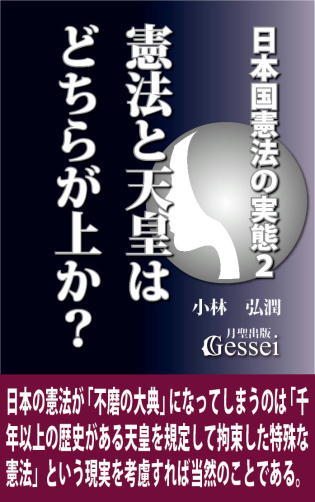
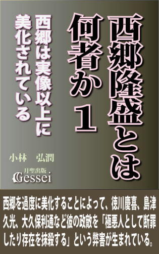
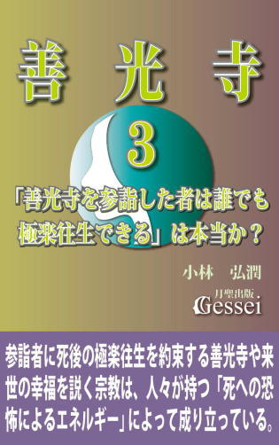
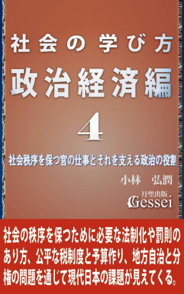
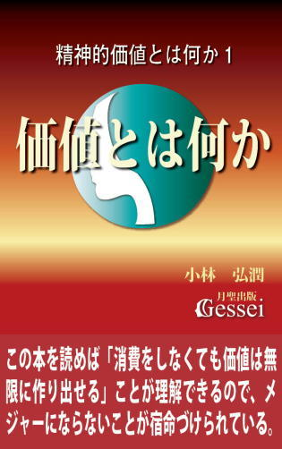
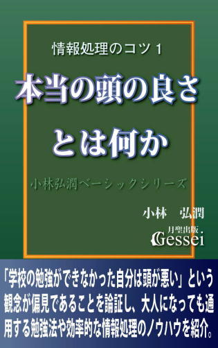

| 西郷隆盛とは何者か２ 西郷が敢行した「東征」に込められた意味（月聖出版） | |
| 小林弘潤 | |
| Gessei Shuppan (2016) | |
西郷隆盛とは何者か２
西郷が敢行した「東征」に込められた意味
小林 弘潤
※更新履歴
2016/1/10 1版
※著者ツイッターで、「本の価格を上げる場合の時期の情報」等の情報を発信しています。ご興味ある方はどうぞ（携帯からも読めます）。
まえがき ～明治維新が成功した秘訣は「東征」とその後に行われる「東京遷都」の成功にある
1868年（慶応４年）１月、西郷隆盛が主導する薩長軍は旧幕府軍との間で行われた鳥羽伏見の戦いで奇跡的勝利を収めると、勢いに乗った薩長は「官軍」を名乗って天皇の権威を背景にした全国支配を画策し、「新政府」に降伏しない佐幕派勢力が多数存在する東日本の諸藩を武力で降伏させるための「東征」を敢行します。
（薩長同盟以降の）幕末維新史の流れが大まかに紹介される際は「薩長同盟、第二次長州征討、大政奉還、龍馬暗殺、王政復古クーデター、鳥羽伏見の戦い、江戸城無血開城」という展開になることが多く、これらの出来事は「それぞれが本になるほど様々な議論が繰り広げられている」と言えますが、それに対して「鳥羽伏見の戦い」の後で新政府が決めた「東征」という判断についてはほとんど議論になることがなく、「この出来事は幕末維新における重要なポイントだ」と指摘する研究者や識者など皆無という言い方ができます。
私は「この東征の判断というのは幕末維新における重要なポイントで、ある意味で王政復古クーデターや鳥羽伏見、さらには江戸開城よりも重要な、幕末維新史の中でも一番のターニングポイントなのではないか」と思っているのですが、こう言われても「はあ？」という感じでピンと来ない人が多いと思います。
なぜ私が「東征は幕末維新における重要なポイントだ」と考えているのかと言いますと、「いくら鳥羽伏見の勝利があったと言っても、この状況でこんな判断をするのは正気の沙汰ではなく、常識的に考えてあり得ない」と思っているからです。
というのも、いくら鳥羽伏見で勝ったと言っても当時の新政府というのは「大規模な軍を長距離遠征させられるような予算」など一切なく、しかも「敵である慶喜が恭順なり講和なりの姿勢を見せている」という状況であるからです（これが「慶喜が徹底抗戦の構えを表明して江戸城にでも籠城した状況」であれば無理をしてでも遠征軍を派遣する必要も生じるが、私などは「なぜ慶喜が降伏した状況で大規模な遠征軍など派遣するんだ？」という気持ちになってしまう）。
さらに言いますと、新政府がこの「東征」という判断をする際に「遠征のために必要な財源を確保する」とか「勝算がどれだけあるかを徹底検討する」という作業をまったくと言っていいほどしていない「見切り発車であり一か八かのギャンブル」という性質のものであることは明らかで（この時の新政府が見切り発車で東征を決めていたことは「赤報隊の悲劇」を見るだけで明らか）、私などは「冷静で常識的な発想をする人間であれば、こんないい加減で無謀な判断はまずしないだろうな」という思いになってしまうところがあります。
こう言われてもピンと来ない人が多いと思うので「最近あった政治の話」に絡めて言いますと、「この時の新政府の発想というのは、「政権を取れば財源が出てくるはずだ」という見切り発車で「子ども手当」などの大甘の公約を掲げ、それによって2009年から３年３ヶ月の間政権を担った民主党政権の発想と同じ」（あるいはそれ以下かもしれない）ということです。
ある意味「同じ発想をしていながら、民主党政権は酷評され、明治政府は称賛されている」と言えますが、これは「民主党政権は失敗し、明治政府は（奇跡的に）成功したから」というだけの話だと思います。
私が言いたいのは、「この時の新政府（私はこれを決めたのは西郷だと思っているが）が決めた東征という判断は常識的に考えるとあり得ないぶっ飛んだ発想であり、そこにもっと問題意識を持つべきだ。それができなければ幕末維新の本質は決してわからない」ということです。
ところが、この「東征は幕末維新における重要なポイントだ」という主張が世間で聞かれることなど皆無で、幕末維新の研究者や識者の中で指摘する人が誰もいないだけでなく（その影響で、幕末の大まかな流れが紹介される際は「鳥羽伏見の戦い」の後で即「江戸城無血開城」という展開になるものが多く、「新政府、東征決定」という出来事はたいていすっ飛ばされてしまうと思う）、テレビの歴史番組とか小説やドラマなどでもテーマとして取り上げられることなどまずないと言えるので、私としては「なんで皆さんこの出来事の重要性に気づかないんだろう？」と不思議で仕方がない思いになります。
「幕末維新史上最大の事件は江戸開城」という声はよく聞かれますが、「東征という判断がなければ江戸開城もなかった」という言い方ができます。江戸開城が幕末最大の事件と言うなら、その前提である東征という出来事に対して「この判断は常識的に考えると理解できるものではないので、その裏には相当な秘密が隠されているのではないか」という問題意識を持つべきではないか、というのが私の意見です。
電子書籍『西郷隆盛とは何者か１ 西郷は実像以上に美化されている』では、「西郷を人格者や聖人としか認識できず、この人が〝世界史上屈指の策士〟であることがわからなければ、幕末維新の流れや本質は決してわからない」という主張をしてみましたが、私は明治維新が成功した秘訣はこの「東征」と、その後に行われる「東京遷都」の成功にあると思っています。
私がそういう判断をしている理由は「この東征と東京遷都が、日本のはるか昔にあった出来事と重なって見える」ようになったことにあります。そこでこの『西郷隆盛とは何者か２ 西郷が敢行した「東征」に込められた意味』では、その「日本のはるか昔にあった出来事」と、そこで浮かび上がってくる「西郷とある人物との類似」という視点について論じてみたいと思っています。この本は前作以上に「西郷という人物の秘密に深く切り込んだ内容」になっていると思いますので、楽しんでいただければと思っています。
1 鳥羽伏見の戦いは「起死回生の逆転満塁弾」ではあるが、「薩長側の勝ちを決定づけた出来事」とは言えない
スポーツの試合などではよく「流れが変わったことで勝敗が分かれた」という言い方がされます。例えば、「味方のあのファインプレーで流れが変わった」とか「あそこで敵のエラーがあったことで流れを引き寄せ、その勢いで勝つことができた」という言い方がそうですが、この「一つの出来事が流れを変え、その後の勝敗に影響した」という視点はスポーツの試合だけでなく、歴史（それぞれの時代における権力闘争）を見ていく際にも当てはまると言えます。
前作『西郷隆盛とは何者か１ 西郷は実像以上に美化されている』９節では「後半の幕末史の流れは薩長と幕府の対決（もっと言うと西郷と慶喜の対決）という構図で見ていけばいい」という言い方をしましたが、この「薩長と幕府の勝負」が薩長側の勝ちという結果に終わるまでには様々な「流れが変わりそうな出来事」があったと言えます。例えば、薩長同盟、第二次長州征討、大政奉還、王政復古クーデター、鳥羽伏見の戦い、江戸城無血開城などがそうですが、これらの出来事の中で「この出来事によって流れが一気に薩長側（新政府側）に傾き、その勢いが彼らの勝利につながった」と言える出来事は何かと問われた場合、たいていは「鳥羽伏見の戦い」になると思います。
このことに関して、幕末維新史の専門家である家近良樹氏はこうした論評をしていたものです。
「鳥羽伏見戦争は、これ以後、新政府軍と旧幕府軍らとの間に展開された上野戦争・東北戦争・北海道戦争（戊辰戦争）と較べても、格段に重要な歴史的意義を有した。（徳川慶喜が勝海舟などを通じて江戸開城を行った時点で）名目的にも実質的にも、徳川幕府は全国にまたがったその支配をおえることになったといってよい。しかし、ここで最後に強調しておきたいことは、それは、多くの人がいままで想像してきたように、薩長両藩によって展開された粘り強い、しかも一貫した武力討幕運動のもたらした成果というよりも、ワンチャンスを確実にいかした在京薩藩指導者（対幕強硬派）の起死回生の策がものの見事に決まった結果といった方が、より適切であったということである。
いうなれば、三点差で負けていたのを、九回の裏ツーアウト後に放たれた一本の逆転サヨナラ満塁弾が試合を引っくり返したにも等しい結末であった」（家近良樹『孝明天皇と「一会桑」』文春新書214頁）
この論評にある「野球の試合を事例にした説明」はわかりやすいので私なりの補足を入れさせていただきますと、薩長同盟や第二次長州征討の時点では「薩長に勢いが出て幕府がかなり後退した」という状況だったのものの、その薩長の勢いが慶喜が決断した「大政奉還」によって止められて「幕府が（この時点で既に旧幕府だが）大きくリードした」という言い方ができると思います。その後、西郷らが画策した「王政復古クーデター」によって薩長が再び勢いをつけて同点ぐらいには肉薄したものの、慶喜が反撃したことでまた流れが変わり、慶応３年12月下旬の時点ではまた「幕府側３点リード」という状況になった。ところが、年が明けた直後に起こった鳥羽伏見の戦いで薩長側が勝ったことが「逆転サヨナラ満塁弾」となって勝敗が決した、という感じになると思います。
この見方には大筋では私も賛成で、特に「鳥羽伏見の戦いの結果が流れを大きく変えた」という指摘はその通りだと思っています。個人的には「鳥羽伏見までは一進一退の攻防が続いており、（幕府側有利ではありながら）どちらが勝つかはまるでわからない状況だった」という印象を感じているのですが、このことから「鳥羽伏見と比べると、薩長同盟や王政復古クーデターは流れを大きく変えた出来事ではなかった」という言い方ができるのではないかと思います。
例えば「薩長同盟」という出来事に対してはよく「幕末だけでなくその後の日本史を変えた歴史的な同盟」とか「この同盟によって薩長側の勝利が決まった」かような言われ方がされることがありますが、それは「薩長側の勝利という結果がわかっていることから出てきた大げさな論評」でしかないと思います。というのも、第１巻でも述べましたが同盟を結ぶ前の薩摩と長州というのは「不倶戴天の敵であり犬猿の仲」だったことで、ちょっとしたきっかけで同盟が瓦解して雲散霧消してしまう可能性などいくらでもあり、「同盟が結ばれた時点で勝利が決まったとはとても言えない」というのが現実であるからです（例えば、慶応３年６月に結ばれた薩摩と土佐の同盟である「薩土盟約」はたったの３ヶ月で破綻している）。
同じように「王政復古クーデター」であっても、その後の「慶喜の反撃」の様子を見るととても「流れを大きく変えた出来事」とは言えず、そうした一進一退の攻防が続いた状況を大きく変えたのが「鳥羽伏見の戦い」という言い方ができると思います。
ただそれでいて私としては、この鳥羽伏見の戦いという出来事は「薩長側の勝ちを決定づけた出来事」とは違うと思っています。家近氏はこの鳥羽伏見に対して「九回の裏ツーアウト後に放たれた一本の逆転サヨナラ満塁弾」という言い方をしており、この表現の中に「鳥羽伏見によって薩長側の勝利が決定し、試合が終わった」という印象を持っている雰囲気が感じられますが、私としては「確かに起死回生の逆転満塁弾のような雰囲気はあるが、この時点で試合が終わったわけではない」という印象を持っている、ということです。
それは「この逆転満塁弾は９回裏に出たわけではなく、まだ幕府側の反撃や薩長側の失敗による「幕府側の再逆転のチャンス」はあった」という意味です。例えば、これはよく聞かれる意見だと思いますが、「鳥羽伏見の敗北」を知った慶喜が戦意を喪失せず「徹底抗戦」の方針を掲げた場合、旧幕府側が勝利する可能性は大いにあったと言えますし（たまに「新政府軍が錦の御旗を掲げたことで旧幕府側は戦意を喪失した」などという論評が出ることがあるが、そんなのは慶喜が「錦の御旗など誰も見たことがない以上、そんなのはニセモノだ。奴らこそ反乱軍であり賊軍だ」と一言言えばいいだけの話）、そうでなくても薩長側が何らかのチョンボをするだけで、再び形勢が逆転する可能性は少なからずあったと言うことができます。
そこで改めて指摘したいのが「鳥羽伏見から約１ヶ月後にあった新政府による東征決定という判断の重要性」という視点です。私は「東征決定は鳥羽伏見の勝利すらもチャラにしてしまう恐れもあった以上、あるいはこの判断が幕末最大の分岐点だった可能性もある」という印象さえ感じているのですが、それでいて世間ではこの「東征決定」という出来事に対する問題意識がまったくと言っていいほどないと思います。
これについてはこの本のまえがきでも述べてみましたが、以下に紹介する「歴史教科書や歴史の入門書のような本に書かれたこの時期に関するおおまかな説明」にもそうした雰囲気が出ていると思います。
「王政復古の大号令が発せられると、天皇を中心とする新政府がつくられた。新政府の方針を不満とする旧幕府軍は、徳川慶喜とともに、大阪から京都へ入ろうとした。新政府軍は、鳥羽・伏見（京都市の南部）で旧幕府軍と戦って勝ち、さらに、旧幕府勢力に対し武力による討伐をおし進めた。新政府軍は、江戸城を、戦わずして明け渡させ、さらに会津藩（福島県）をはじめ、東北地方の諸藩を攻め、最後に函館にたてこもった旧幕府軍を降伏させた」（『新編 新しい社会歴史的分野』東京書籍205頁 1978年２月発行）
「（王政復古クーデターによって）新政府の成立が宣言されても、旧幕府勢力はなお温存されており、徳川慶喜も領地を返上しようとはしなかった。そこで薩摩藩・長州藩を中心とする討幕勢力は、旧幕府勢力を一掃しようと画策した。旧幕府や会津藩・桑名藩などは、これに憤激して1868（慶応４）年１月、京都の鳥羽・伏見で、薩・長を中心とする新政府軍と戦った（鳥羽・伏見の戦）。しかし旧幕府軍は敗れ、新政府軍は江戸にむかって進撃した。旧幕府側には、決戦を主張する者もいたが、徳川慶喜は恭順の意をあらわし、その命を受けた勝安芳（海舟）と、新政府軍参謀西郷隆盛との交渉で、４月には江戸城の無血開城となった」（『高等学校 新日本史 改定版』自由書房216頁 1985年２月発行）
「鳥羽・伏見の大勝利は、討幕派にとって圧倒的に有利になった。それまで日和見をきめこんでいた諸藩が、新政府支持の方向に動きはじめたからだ。慶喜は江戸に逃げ帰っており、当然「朝敵」討伐軍の攻撃目標は江戸城にしぼられることになった。有栖川宮熾仁親王を東征大総督とし、西郷隆盛を総督府参謀とする征討軍が組織され、東海・東山（中川）・北陸の三道に分かれ東に向かった。いわゆる「錦の御旗」を先頭とする「朝敵」征討軍が動いたわけである。結局、江戸城は、幕臣勝海舟と西郷隆盛の話しあいにより無血開城となる」（小和田哲男『日本の歴史がわかる本 幕末・維新～現代篇』三笠書房54頁）
この３つの記述のうち、最初の２つは「歴史教科書の記述」で、１番目が中学教科書、２番目が高校教科書の記述（どちらも、私自身が学んだ歴史教科書）ですが、改めて読んでみて驚いたのは「鳥羽伏見の勝利から東征（武力討伐）に至るまでの説明がたったの一行で終わっており、なぜ東征という決定が行われたのかがまるでわからない記述になっている」ことです（普通「高校の教科書の記述の方が中学のそれより詳しい」と言えるので、中学はともかく「高校の教科書でも見事に一行で終わっている」ことにはさすがに驚いたもの。さらにこの高校教科書の説明では「鳥羽伏見に勝った軍がそのまま江戸に攻め込んでいる」ような軽薄な印象を与えてしまうので、「もうちょっと何とかならなかったのかな......」という思いになる）。
私はこうした記述を読んで、「本当に東征決定という出来事はすっ飛ばされており、多くの人はこの出来事に対する問題意識をまったく持っていないんだな」という思いになったのですが、さらに驚いたのは３番目に紹介した説明に出てくる「当然」という言い方です。この「慶喜は江戸に逃げ帰っており、当然「朝敵」討伐軍の攻撃目標は江戸城にしぼられることになった」という説明の中に出てくる「当然」という言葉の中には、「鳥羽伏見で勝った以上、新政府が遠征軍を派遣して東日本の旧幕府側を武力で降伏させるだけでなく、江戸を攻めるのも当然」という書き手の意識が出ていると言えますが、「こういうのは本当に軍事の常識を知らない人の見方だな」という思いになります。
というのも、いくら薩長側が鳥羽伏見で勝って勢いがついている状況であっても、東征という「大規模な軍を編成して長距離遠征をさせる判断」というのは「次は当然東征だ」というような軽いノリでできるようなことではないからです。これは多くの人が気づいていないと思いますが、軍事作戦の中でも「大規模な軍による長距離遠征」というのはそう簡単に成功するものではなく、派遣する軍の規模が大きければ大きいほど、遠征する距離が長ければ長いほど、膨大な労力がかかるだけでなく「失敗した場合のダメージも大きい」ため、派遣する側はメリットとデメリット、さらには勝算やリスクなどを慎重に徹底的に検討した上で決断する必要があり、「当然」というような軽いノリが入り込む余地など一切ないからです。
2 西郷が敢行した東征とは「狂気の発想であり大義がなく、さらに民主党政権よりひどい見切り発車の無謀な判断」である
こう言われてもなかなかピンと来ないと思うので「大規模な軍による長距離遠征の難しさ」について順を追って説明してみたいと思います。まず言っておきたいのは、スポーツの試合でよく言われる「ホームよりアウェーの方が不利」という視点です。
例えばサッカーの国際大会が行われる場合は「この試合はホームだから勝って当然」とか「アウェーでの試合だけに、勝ったのは大きい」というような言い方がされることがありますが、ホームの試合が有利でアウェーだと不利になる理由は大きく二つあり、それは「ホームは慣れているがアウェーは慣れない場所なのでなかなか勝手がつかめない」ことと「アウェーではホームと違って自分たちを応援してくれるファンが少なく、周りは敵チームを応援する人ばかりになるから」と言えると思います。
長距離遠征をした軍が戦う場所というのは当然「遠征した先」なので、それは「完全アウェーでの戦い」となり、例えば東征軍が江戸総攻撃をかけようとしても「慣れない場所での戦い」であるだけでなく、「江戸の民衆は東征軍を〝侵略者〟と見ており、（少なくとも民衆レベルでの）支援などまったく得られない状況」と言えます。この時の東征に限らず、「大規模な軍による長距離遠征」を成功させるためには大きく二つの条件があり、それは「膨大な戦力とそれを賄える巨額の財源」と「遠征先での支持を得られる努力（少なくとも「遠征先の反発を最小限にする努力」は絶対必要）」と言えます（あと、「兵士たちの士気を高める努力も必要」という言い方もできる）。
その意味で、軍を派遣する側としては事前に徹底的な準備をして「膨大な戦力を賄えるだけの財源は十分あるし、遠征した先の為政者や民衆の支持も得られそうだ」という段階に達した時点で「遠征軍の派遣の決断をする」というのが筋、という言い方ができると思います。遠征軍が一番やってはいけないのが「遠征先で食糧などを略奪すること」で、これをやった場合現地の民衆が反発することは間違いなく（タチの悪い泥棒や盗賊と同じにしか見えないため）、それによって将来にわたって「侵略者」だけでなく「泥棒」や「盗賊」という汚名さえ甘受しなければならなくなると言えます。
個人的に、この「長距離遠征というのは想像以上に難しく、そう簡単には成功しない」ことに気づいたのは、平安時代末期に起こった源平合戦の一つに位置づけられている「富士川の戦い」（幕末期から700年ほどさかのぼった、1180年10月に起こった戦い）について調べていた時です。この「富士川の戦い」という出来事は歴史教科書にも記載があるのでご存じの方も多いと思いますが、知っている人であってもこの戦いに関しては「栄華にふけった平家が軟弱になって武士としての勇ましさを忘れたことで頼朝に完敗した情けない戦い」というイメージを持っている人が多いと思います。
富士川の戦いとは、関東で平家政権に対する反乱を起こした源頼朝を討伐するために京都から関東に遠征した平維盛（清盛の孫）率いる遠征軍が、遠征途上でやる気をなくした兵士たちの脱走が相次いで軍が瓦解したため、「富士川で維盛軍の兵士たちが水鳥の羽音に驚いて逃げ散り、頼朝軍が戦わずして完勝」という結果になった戦いと言えますが、この結果によってこの時の遠征軍を率いた平維盛という人物に対しては「清盛の孫であるだけに栄華にふけって武士の心を忘れた軟弱者」とか「憶病者」とか「ふぬけ」というイメージが定着してしまったと思います。
こうした「富士川で戦わずして撤退の判断をした維盛は軟弱で、水鳥の羽音で逃げ出した維盛軍の兵士たちは情けない」というイメージは現代の人々も濃厚に持っていると思いますが（2012年のNHK大河ドラマ『平清盛』で描かれた維盛も見事に「栄華にふけって武士の心を忘れた軟弱者」という設定になっていたもの）、私は富士川の戦いの本質は「維盛や兵士たちが軟弱だったこと」にあるのではなく「長距離遠征の難しさが見事に出た」ところにあると思っています。というのも、維盛が福原を出立して富士川に到着するまでの約１ヶ月の間に「敵である頼朝軍の動向が劇的に変わっていた」ところがあり、途中で維盛軍の脱走者が相次いだのは「頼朝軍が急激に勢力を拡大しているという話を聞いた兵士たちの士気が低下し、とても勝てないという気持ちになっていったから」という言い方ができるからです。
平家の方では遠征軍派遣を決める際に「この状況なら遠征軍を派遣しても十分勝算はある」という見通しを持ったことは間違いないと思いますが、この時の頼朝は「常識では考えられないような急激な勢力拡張を成功させた（たった2ヶ月で1000倍の勢力拡張を実現している）」ためにこうした見通しはまったく通用せず、それが維盛軍の瓦解と富士川での惨敗につながったという言い方ができると思います。
私はこの戦いを調べていく中で「この時の平家や維盛が頼朝の急激な勢力拡張を予測することは不可能だっただろうから（はっきり言って清盛でも絶対無理）、こういう結果になってしまうのも無理もない」と感じたと同時に、「長距離遠征を成功させることは本当に難しいんだ」ということを痛感させられたことを覚えています（それでいて、この富士川の戦いというのは「頼朝の怪物性がもたらした特殊な戦い」と言えるので、かなり極端な事例という見方もできるが。富士川の戦いについては電子書籍『たった2ヶ月で勢力を1000倍に拡張させた男・源頼朝』に詳しい説明を入れているが、近刊予定の『細野豪志と平維盛』でもこの戦いや平維盛という人物に関する説明を入れる予定）。
富士川の戦いにおける遠征軍（維盛軍）は「福原（今の兵庫県）から富士川（静岡県）までを遠征している」と言えますが、それから700年後に行われた西郷率いる「東征軍」の場合は「京都から江戸（東京）まで遠征している」（東征軍の方が長距離を行っている）と言えるので、「もしこの時の東征軍が富士川の戦いと同じような状況になっていた場合（相手が慶喜ではなく頼朝のような〝怪物〟だった場合）、東征軍も維盛軍と同じように兵士たちの脱走が相次ぎ、途中で軍が瓦解して情けない負け方をしていた可能性もある」という見方ができると思います。
こうした説明から「長距離遠征というのは想像以上に難しく、とても「鳥羽伏見で勝った以上、次は当然東征だ」というような軽いノリで判断できることではない」ことが少しはわかってもらえたのではないかと思います。そこでここから、新政府がこの状況で「東征」という判断をしたことに対して個人的に主張したい「３つの論評」をしてみたいと思います。まず、この東征という判断は「狂気の発想」であること。次に「大義がない」こと。そして「見切り発車の無謀な判断」であることです。
これらの論評に対しては「なんだその酷評は？ いくらなんでも言い過ぎじゃないか」という思いになった方も多いと思いますが、私としては特に３番目の「東征とは見切り発車の無謀な判断である」ことを強調したい気持ちがあります。というのもこの時の新政府（主導したのが西郷と大久保であることはほぼ間違いない）が行った見切り発車ぶりは「2009年に民主党政権がやった見切り発車よりもひどい」と言えるからです。
そこまで言える理由は後で詳しく説明しますが、簡単に言いますと新政府が見切り発車をしたことで「結果的に、人道にもとる卑劣な所業をせざるを得なくなった」と言えるからです（その象徴が「赤報隊の悲劇」という出来事）。民主党政権の見切り発車ぶりに対しては今（2015年12月）でも「あれは本当にひどかった」という声が続いていると思いますが、それでも彼らがやったことは「国民を失望させた」とか「多少国益を害したり経済を停滞させた」程度でしかなく、彼らは「人道にもとる卑劣な所業」まではやっていないと思います。だから「この時の新政府（西郷と大久保）が行った見切り発車ぶりは民主党政権よりひどい」と断言できるところがあります（念のために言っておくが、これは決して民主党政権を擁護する趣旨ではないので誤解なきよう願いたい。私は、少なくとも岡田克也氏が代表になった後の民主党に対して「とっとと消滅した方が国民のため」という思いを持っており、さらに言うと「民主党が平家のように滅亡するのは時間の問題で、後は平家よりも華麗な滅び方をするかどうかだな」とさえ思っている）。
こうした東征に対する「狂気の発想」「大義がない」「民主党政権よりひどい見切り発車の無謀な判断」という論評に対しては、我ながらまさに「酷評」だと思っています。第１巻で紹介しました安藤優一郎氏のような「西郷に批判的な研究者」であってもここまでのひどい言い方はしていないと思いますが、こうした酷評が果たして「言い過ぎ」かどうかは、ここからの説明を読みながら判断してもらえればと思っています。じっくり検討していただければ幸いです。
3 敵である慶喜が徹底抗戦ではなく恭順の姿勢を示している以上、東征の判断は「過激」を通り越して「狂気」と言える
まず最初の「東征の判断は狂気の発想である」という主張について詳しく述べてみたいと思います。これに関しては第１巻の９節で指摘しました「内乱は一度起こったら泥沼化してしまう恐れがあり、そうなったら犠牲者が際限なく増えて日本が焦土になってしまうだけでなく、日本全土が西欧列強の植民地になってしまう可能性もあった」ことを考えればすぐに判断できると思います。
こうした状況で常識的に考えた場合、薩長勢力（新政府）がやるべきことは「旧幕府勢力を武力討伐すること」ではなく「交渉によって旧幕府側と講和を結ぶこと」であり、鳥羽伏見の後の新政府は旧幕府側に対して「講和」という選択肢をいつでも行使することができたと思います。こうした「この状況で武力討伐を進めたら泥沼の内乱になってしまう恐れもある」「新政府には常に講和という選択肢があった」という視点を意識するだけで「確かに、東征の判断は日本を泥沼の内乱に導く過激な発想かもしれない」と思ってもらえるのではないかと思います。
ただ、この状況での東征の判断というのは「過激」を通り越して「狂気」と言っても言いすぎではないところがあり、というのも「敵である慶喜が徹底抗戦ではなく、恭順の姿勢を示している状況」であるからです。西郷が「慶喜が新政府に恭順の姿勢を示しているのを知ってもなお、慶喜討伐にこだわって日本の内乱の淵に引きずり込もうとしていた」ことは明らかで、それは史料として残っている当時の西郷が大久保に宛てた手紙から判断できます。
「ただ今、別紙（慶喜の歎願書）相達し候。慶喜退隠の歎願、甚だ以て不届千万、ぜひ、切腹までに参り申さず候ては相済まず、必ず、越、土などよりも寛論起り候はんか。されば、静寛院宮（14代将軍家茂の正室だった和宮）と申しても、矢張、賊の一味となりて、退爵位にて相済むことと思召され候はば、致方なきに付、断然、追討あらせられたきことと奉存候。かくまで、押詰め候ところを寛に流れ候ては、再び臍を嘘むとも益なき訳に到り候はん。例の長評議に因循を積み重ね候ては、千載の遺憾と存奉り候間、何卒御持合せの御英断を以て、御責附け置下され度、三拝九拝願い奉候」（『大久保利通文書』西郷隆盛 大久保利通宛書状 慶応４年２月２日付より）
この手紙で西郷が言っていることは「和宮などから慶喜に寛容な処分をという声があるが、慶喜を切腹に持っていかなければダメで、そのためには断固東征の決断をするべきだ」ということですが（あと、西郷がこの手紙で「孝明天皇の妹であり明治天皇の叔母でもある和宮」のことを「賊の一味」とまで言っていることにも注意）、考えてもらいたいのは「この時点での西郷は、慶喜が「薩長勢力を正式な政府と認めて恭順の意向を示している」のを知っていながらこういう過激な言い方をしている」ことです。
もし、この時の（慶応４年１月末までの）慶喜が薩長勢力を正式な政府と認めず、「奴らは官軍ではなく賊軍であり反乱軍だ」などと公言して徹底抗戦を主張していたのなら（あるいは西郷が慶喜の恭順の姿勢を知らなかったのなら）、私であっても「慶喜を切腹に持っていかなければダメで、そのためには断固東征の決断をするべきだ」という西郷の判断も多少は理解できる思いになります（その場合は「狂気」ではなく「過激」という論評で留めていたと思う）。しかし、実際の慶喜は薩長勢力を正式な政府と認めて恭順の姿勢を示していたのですから、いわば「降伏していた」も同然と言えます。普通の感覚で考えた場合、「既に降伏している敵を討つ」などという行為は「狂気」であり、「人間としてやってはいけない非人道的な行為」と言っても大げさではないというのが私の印象です。
あるいは、西郷としては慶喜が信用できず「恭順の姿勢などウソで、実際の慶喜は江戸城で徹底抗戦の準備をしている」と疑っていた可能性もあるとは思いますが、そうであっても「狂気」であることに変わりはないと思います。というのも、慶応４年１月から２月にかけての慶喜は「新政府に対する恭順の姿勢を示そうとして精一杯の努力をしていた」という雰囲気があり（例えば旧幕臣の中で小栗忠順などの「徹底抗戦派」を罷免して勝海舟に全権を任せたり、２月12日には江戸城を退去して上野寛永寺に謹慎する判断をしたことなど）、そうした状況でありながら西郷という人は「既に降伏している慶喜を討つための」東征軍の行軍を一切やめず、江戸から何度も送られていた「東征中止や延期の懇願」をすべて退けているからです。
個人的に不思議で仕方がないのは、こうした西郷（新政府）の判断に対する研究者や識者論評に接していると「これだけ狂気で非人道的な判断をしていながら、それをまともに指摘した論評がまったくと言っていいほどない」ことです。東征の判断を論評する際のポイントは「慶喜が徹底抗戦の姿勢を打ち出したのならわかるが、それとはまったく逆の〝徹底恭順〟の姿勢を示しているにもかかわらず、西郷らはそれを無視し黙殺して東征を敢行したことにある」と思うのですが、私はこの部分をはっきり指摘した識者論評を今まで一度も聞いたことがありません。例えば、司馬遼太郎は東征に関する西郷と大久保の判断に対してこうした論評をしています。
「（東征軍の進軍の間）江戸方は、あらゆる手段をつかって関東征伐の中止、もしくはしばらくの猶予を京の朝廷にむかって懇願しつづけている。が、京はきかなかった。とくに薩の西郷吉之助、大久保一蔵はきかず、慶喜の首をみねば大事は成らず、という態度を堅持した。これが革命であるであろう。前時代の権力を倒して世間にあたらしい時代がきたということを知らしめるには、理屈でも啓蒙活動でもなく前時代の象徴である者の鮮血が必要であった」（司馬遼太郎『峠・下』新潮文庫188頁）
東征を敢行しただけでなく「慶喜の首をみねば大事は成らず、という態度を堅持した」西郷と大久保の判断に対して、ここで言われている「革命とはそういうもの」という論評は他でもよく聞かれますが、私はこういう発想をする人の心の奥に「西郷（あるいは大久保も）を擁護したり遠慮する心理がある」という感じがしてしまいます。
そうした「擁護」や「遠慮」の意識が先に立ってしまうことで「東征」という行為の奥にある「既に降伏している敵を討つ」という非人道的な要素が見えなくなってしまい、「東征の判断は狂気としか言いようがない」とか「西郷と大久保は既に降伏している慶喜を討とうとしているが、それは人間としてやってはいけない非人道的な行為だ」という論評ではなく、「革命とはそういうもの」という類の軽薄で表面的な論評しかできなくなってしまうのだろうと思います。
私としてはこうした論評をした司馬に対して、「〝国民的作家〟と呼ばれるほどの影響力を持つ人なら、「狂気」とか「非人道的な行為」とまでは言わなくてもいいから、せめて「東征という行為は既に降伏している敵を討つようなもの」という言い方ぐらいはしてもらいたかったな」という思いになります。
ここで「坂本龍馬なら東征という判断をどう思うか？」という問題提起をしてみたいと思います。第１巻９節では「龍馬は慶喜側の人間だったと考えた方がいい」「龍馬が大政奉還を実現しようと命懸けで奔走したのは、慶喜と同様に内乱は絶対に起こしてはならないと思っていたから」という指摘をしましたが、龍馬が大政奉還の実現に対して尋常ならざる思い入れを持っていたことは、土佐藩の代表として慶喜に大政奉還建白を行った後藤象二郎に宛てた次の有名な手紙だけで判断できると思います。
「建白が受け入れられない場合は、あなたはその場で切腹する覚悟でしょうから、後下城なき時は、海援隊同志とともに慶喜を路上で待ち受けて仇を討ちます。地下（あの世）で相まみえましょう」（慶応３年10月13日付書簡）
この話はおそらく本気だと思うので、「龍馬は大政奉還実現を文字通り命懸けの所業と考えていた」ことがわかると思います（まあ、「自分の覚悟を見せることで後藤を完全に脅迫している」という見方もできるが）。このことは「龍馬は内乱は絶対に起こしてはならないという強い思いを持っており、西郷と大久保が行おうとしている武力討幕路線とは正反対の考え方をしていた」ことを意味すると思いますが（「内乱になってもやむを得ない」という思いを少しでも持っていたら、ここまでの壮絶な覚悟は持てないと思う）、こうした考え方をしていた龍馬がもし暗殺されることなく、その後の西郷と大久保が仕掛けていった「王政復古クーデター」「江戸における薩摩藩の挑発行為」「鳥羽伏見の戦い」「東征の判断」を見ていた場合、どういう反応をするかはだいたい推測できると思います。
龍馬としては「自分が命懸けで実現させた和平路線を西郷と大久保に完全に否定された」わけですから、それこそ「あんたらは日本を内乱の淵に引きずり込みたいのか！」などと彼らを激烈に批判するだけでなく、「（逆に）西郷と大久保を暗殺しようとするんじゃないか」とさえ思ってしまうところがあります（第１巻９節では「龍馬暗殺の黒幕が西郷である可能性」について触れたが、世間でも似たような見方は出ることがあり、例えば半藤一利氏は『幕末史』新潮文庫288頁で「大久保黒幕説」を主張していたもの）。
私などは「もし龍馬があの世で生きており、地上に霊言などを送るようなことがあった場合、開口一番「自分の命懸けの努力を踏みにじり、日本を内乱の泥沼に引きずり込もうとした西郷と大久保の所業を徹底批判する発言」をするんじゃないか」と思ってしまうのですが、私としては「気兼ねなく本音を言える龍馬なら、西郷に対しても遠慮することなく「西郷がやった東征なんてのは狂気の沙汰であり非人道的な行為以外の何物でもない！ 地上の人間どもは西郷を人格者とか聖人とかぬかして美化しておるようだが、なぜそのことを糾弾せんのだ！」とはっきり言うんじゃないかなあ」という気持ちになってしまうところがあります。
電子書籍『善光寺３ 「善光寺を参詣した者は誰でも極楽往生できる」は本当か？』では、私自身の「あの世という概念に対する考え方」を紹介していますが（簡単に言うと、私はあの世とか霊界という存在を全否定しておらず「可能性の問題」として考えている）、仮にあの世が存在する場合は「地上を去った人間がそうした世界で生きている」ことになるので、「必要があればあの世の人間が地上に霊言を送るという可能性も十分ある」と思っているところがあります（ただそれでいて「そうした霊言なるものの大半はニセモノだと思った方がよく、学問的な検証を経ることなく鵜呑みにするのは危険」とも思っているが）。
私としては「もし龍馬の霊が地上に霊言を送った場合、「自分の命懸けの努力を踏みにじり、日本を内乱の泥沼に引きずり込もうとした西郷と大久保の所業を徹底批判する発言」をするはずだ」と思っているので、世間で「龍馬の霊言」と言われているものの中でそうした発言が入っていない場合は「そんなのはニセモノだから信用するに値しない」と判断しているところがあります。
ただ、もう一つの可能性として「そうした霊言が実は本物で、龍馬としては自分の本音を言えない事情があってそうした発言が出て来ない」ことも考えられると思います。もちろん、「どんな人間であっても（あの世に生きている霊人であっても）公にできない秘密の一つや二つはある」と言えるのでそれも仕方がないとは思うのですが、それでいて私は龍馬という人間の一番の魅力は「普通の人が言えないような秘密や本音を気兼ねなくずけずけ言えるところにある」と思っているので、「西郷に遠慮して本音が言えない龍馬」なんてのはあまり魅力を感じないなあ、と思ってしまうところがあります。
あるいは「龍馬は西郷に何らかの弱みでも握られていたり、勝海舟とも結託して口裏合わせでもやっているんじゃないか」とも思ってしまうのですが、私としてはつい「本物なら勇気を出して真実を公表するんじゃないでしょうか？」とか「よくそんなゴキブリのような態度で他人に偉そうなことが言えるものですね」と言いたくなってしまうところがあります（まあ、この辺の話は現時点では詳しく言えないのでここではあえて曖昧な言い方をしてみたが、時期が来たら〝事例〟を紹介しながら詳しく解説してみたいと思っている。あと、この言い方には龍馬という人物に対する〝挑発〟の意図があることを言っておきたい）。
4 パークス発言を考えると「既に降伏している敵を討つ行為」は当時の国際基準だけでなく武士道にも反している
そしてこの「既に降伏している敵を討つ」という行為に「大義」などあろうはずもないことも理解してもらえると思います。
多くの日本人にかけられている「西郷マジック」がかなり解けた状態で、さらに司馬遼太郎のような人でも持っている「西郷を擁護する心理」も取っ払って冷静に検討してみた場合、当時の「新政府側（西郷と大久保）の言い分」と「旧幕府側や佐幕藩の言い分」のどちらに大義があるかは一目瞭然だと思います。
これは小島慶三氏が著書で紹介していた話ですが、旧幕府側の抗戦派の言い分はだいたいこんな感じだったようです。
「今まで270年天下を治めてきたのは徳川ではないか。（慶喜の大政奉還の決断で）その権力を返上しようというのに、全部の領地を返せ、全部の官職を返せ（辞官納地）というのは、一体どういう御存念、御措置であるか。それに対していろいろ質問しようと鳥羽・伏見に兵を進めたら、今度はこれを反逆という。しかも反逆という形になったのは、薩長側が〝玉を抱く〟というか、おそれ多いことながら天皇を人質にして官軍と称しているだけのことではないか。だから、このような勢力下の錦の御旗は本物とは言えない。賊手にあれば賊旗である。従って簡単に降伏するわけにはまいらん」（小島慶三『戊辰戦争から西南戦争へ』中公新書94頁。例えば、『彰義隊戦史』所収の「檄文」にこうした記述があるよう）
私などは「実に筋が通った論法で、既に降伏している敵を討とうとしている新政府よりも、どう考えてもこちらの方に大義があるとしか思えない」という思いになるのですが、同様の主張は佐幕派である会津藩も行っていたところがあり、司馬遼太郎の小説『峠』（長岡戦争で新政府軍と戦った長岡藩の河井継之助を主人公にした小説）には新政府の東征の決定を知った会津藩がこうした主張をしていたことが描かれています。
「薩長は奸賊である。薩長両賊は京の天子がまだ幼帝であるのにつけこみ、詐謀をたくましゅうし、徳川家を詐謀にかけ、前将軍を追いおとし、であるばかりかいつわって官軍と称し、東征の軍をおこそうとしている。これを座視することは三百年の恩顧の手前忍びがたく、士道正義の手前ゆるしがたい」（『峠・下』164頁）
この主張も私などは「まったくその通りで、見事に筋が通っているし気持ちもよくわかる」としか思えないのですが、さらに言いますとこうした「筋の通った論法や主張」は抗戦派ではない勝海舟も行っていたところがあり、行軍途上の東征軍における西郷との交渉において山岡鉄舟に託した勝の嘆願書にはこうした話が書かれていたようです。
「今、官軍が江戸に迫っているが、我が主君慶喜以下徳川家臣が恭順の意を示しているのは、われらもこの国の一員だからであり、（中国の史書『詩経』に言うように）兄弟はたとえ喧嘩をしていても、他から侮辱されれば仲直りして対抗するものだと考えているからだ。しかし、我が主君慶喜の真意を理解せず、この混乱に乗じて戦を起こそうとしている者もいる。いまは何とか押さえているが、私（勝）の力もほとんど尽きかけ、明日はどうなるかわからない。そうなれば静寛院宮様をはじめ大切な方々がどのようなことになるか、心配でたまらない。
官軍の方々は、この現状をよく理解し正しい措置をとって頂きたい。この国の存亡を本当に心配している人が少ないのは、極めて残念である。もし官軍がこの問題の処理を誤れば、誇るべきわが天皇の国は崩壊してしまうであろう。本来なら私自身が伺って現状を詳しく説明して直接嘆願すべきなのだが、江戸は騒乱寸前で、半日すら留守にするわけにはいかない。なんとか押さえている」（井沢元彦『逆説の日本史21 幕末年代史編Ⅳ』小学館361頁）
この勝の嘆願書の内容について井沢氏は「いかにも「曲者」勝海舟らしい手紙」とか「（静寛院宮の安全も保証できないと暗に言っているところなどが）脅迫」という論評をしているのですが、私としてはこの内容に対して「勝としてはことさら策を巡らせたわけではなく、素直な心情を書いただけなんじゃないかなあ」という印象を感じたところがあります（仮に和宮が徹底抗戦派に暗殺でもされていた場合、責任の大半はこういう〝狂気の東征〟を敢行した新政府にあると言えるので、勝としてはそうした「偽りのない現実」を西郷にわかってもらいたかっただけだと思う）。
もう一つ、これは少し時代を下った論評になりますが、「旧幕府側や佐幕藩内の言い分」として半藤一利氏が著書に書いていた話を紹介してみたいと思います。半藤氏が子供の頃に父の生家である新潟県長岡市に滞在していた際、「戊辰戦争における最大の戦争と言える長岡戦争で東征軍に敢然と立ち向かった長岡藩の様子」を体験していた半藤氏の祖母から聞いたという話です。
「明治新政府だの、勲一等や二等の高位高官だのとエバッテおるやつが、東京サにはいっぺえおるがの、あの薩長なんて連中はそもそものが泥棒そのものなんだて。七万四千石の長岡藩に無理やり喧嘩をしかけおって、五万石を奪い取っていってしもうた。なにが官軍だ。連中のいう尊皇だなんて、泥棒の屁みたいな理屈さネ」（『幕末史』11頁）
半藤氏は中学２年の時に終戦を経験しているという話なので、小学校から中学２年までは「戦前の教育制度による国史を学んだ」そうですが、当時の「皇国史観」における幕末史の教え方というのは「薩摩や長州や土佐の勤王の志士たちこそが正義の味方で、尊皇のスローガンをかざして、皇国に仇なす徳川幕府とそこに加勢する賊軍どもを撃破し、美しの皇国をつくったのだ」というトーンだったようです（もっとも、こうした幕末史の教え方は「皇国史観」が崩壊したはずの戦後になっても大して変わっていない感じがするが）。
そうした「二つの相反する歴史観」に接した半藤氏としては「祖母から聞いた長岡藩兵の勇猛果敢な攻撃の様子などの秘話にこよなく痛快感を覚え、こっちの方が正しい歴史なんだとの思いを深くしました」という言い方をしているのですが、戦後生まれの私であっても「半藤氏の祖母が抱いている歴史観の方が正しく、この時の東征軍の実態は「官軍を自称しているだけの賊軍」であり、彼らがやったことは泥棒としか思えない」という思いになります（それでいて、子供時代から〝反薩長史観の薫陶〟を受けて公平な幕末史の見方ができていた半藤氏と違い、ずっと薩長史観に染まりっぱなしだった私が「目覚めた」のはごく最近なので、「時間がかかってしまって申し訳ない......」という思いにもなるが）。
こうした「新政府側（西郷と大久保）の言い分より、旧幕府側や佐幕藩の言い分の方に大義がある」という見方は、「既に降伏している慶喜を討とうとした東征とは、狂気の発想であり非人道的な行為だ」という視点を意識すれば誰でも理解できると思うのですが、幕末維新史の研究者や識者の中にはピント外れの論評をする人が少なくない感じがします。例えば、この論評を読んだ時はさすがに驚いたものです。
「（慶喜が慶応４年１月21日に新政府に対する恭順退隠の意向を表明したことに対して）京都側とくに公卿、諸侯の間には、慶喜にたいし寛大な処置をもとめる意見が抬頭した。彼らは、政治的には慶喜と対立したが、反面、封建社会の特権保有者として、共通の身分的利害をもっていた。彼らは、大坂遷都論の場合と同様に、徳川家討伐の徹底は伝統的、封建的（旧幕的）秩序を破壊しその特権をおびやかすとみた。彼らは、大久保、西郷、木戸、広沢など藩士クラスの徴士参与勢力が政府をうごかすのをにがにがしく思っていた。議定、内国事務局輔（長官代理）の重職にある松平慶永が、服罪恭順のものを討つのは不当であると執拗に抗議したのはその一例である」（毛利敏彦『大久保利通』中公新書135頁）
この論評をした毛利氏は、松平慶永（春嶽とも言うので以降はこちらで表記）が「服罪恭順のもの（慶喜）を討つのは不当である」として執拗に抗議した理由を「（越前福井藩主である春嶽が）封建社会の特権保有者として慶喜と共通の身分的利害を持っていたことで、新政府が掲げた徳川家討伐の徹底が伝統的、封建的秩序を破壊しその特権をおびやかすことに対する反発を持ったから」（要は「既得権益が侵害されたことに対する反発から」ということだろうと思う）としていますが、私はこれを読んで「もちろん春嶽の中にそうした心理は多少はあったとは思うけど、もっと大きな理由があったんじゃないかなあ」という思いになったところがあります。
それは一言で言いますと「それが常識だから」ということだと思います。既に降伏している敵を討つなどという行為は、多少なりとも常識や良識のある人なら誰でも「それは人としてはやってはいけない、非人道的な行為だ」と判断できると思うので、「既得権益の侵害云々」という要素を持ち出して批判するような問題ではなく、普通の人なら「この状況では春嶽のように新政府（その中の西郷、大久保、岩倉という過激派）に対して執拗に抗議するのが当然」という感覚になると思うので、私はこういう論評をする人の神経を疑ってしまいます。
このように、既に降伏している慶喜を討つという行為が「狂気」であり「非人道的な行為」であり、さらに「大義など一切なく常識や良識にも反している」と言えますが、それに加えて「当時の国際基準にも明確に違反している」という言い方もできると思います。それは、東征軍が３月15日に予定していた江戸総攻撃寸前の３月13日にあったと言われる「イギリス公使ハリー・パークスが東征軍に対して行った抗議」から判断できるところがあります。
当時のイギリスは薩摩に味方していたので「新政府にとっても有力な後ろ盾であり理解者」だったと言えますが、３月に入って東征軍が関東へ入った際、西郷の使者として木梨精一郎（長州藩士）と渡辺清（肥前大村藩士）が横浜の英国公使館にいるパークスに「江戸総攻撃で生じる傷病者の手当や、病院の手配」などを申し込んだところ、パークスは激怒して「あのナポレオンさえも処刑されずにセントヘレナ島への流刑に留まった事例」を持ち出し、「恭順・謹慎を示している無抵抗の慶喜に対して攻撃するとは何事か。西洋各国においては、たとえ最悪の人であっても恭順の姿勢を示した人間を死罪にした例はない。それが万国公法の道理だ」と断言したようです。
このパークスの話を聞いた木梨と渡辺は動転して、大総督府に駆け戻って西郷に事の顛末を報告したところ、西郷は最初びっくりした様子だったものの、しばらく考えてからポツリと「それはかえって幸いであった」と洩らしたようです（『逆説の日本史21』368頁から部分引用。定説では「このパークス発言が西郷の判断に大きな影響を与え、翌日３月14日の西郷と勝の会談における江戸開城の決断を後押しした」となっていてこうした見方がよく語られるが、このパークス発言があったのが３月13日とは限らず、「３月14日の西郷と勝の会談以降である可能性」もあるらしい）。
パークスの話を西郷に伝えた渡辺清の回想には「パークス発言を伝え聞いた西郷はびっくりした様子だった」という言い方があるようですが、私はこの話を聞いた時に「そんな常識すらもわからないとは......。もし「パークス発言を聞いた西郷がびっくりした」のが事実なら、西郷という輩は完全に理性が麻痺したテロリストだな」という思いになったものです。
というのも、もし西郷が本当に「びっくりした」のなら、「既に降伏している敵を討つなど常識的に考えてあり得ない話で、日本人だけでなく外国人から見ても非人道的な行為として糾弾される」ことを想像していなかったことになるからです（ただ、個人的にはこの「びっくりした」のは西郷の本心ではなく演技だと思っている。第１巻でも指摘したように、西郷が「世界史上屈指の策士」であることを考えると「渡辺の反応を意識した演技」という可能性も大いに出てくるが、私としては西郷という人間が「そこまで理性と常識が麻痺した人物」とは思いたくないという気持ちがある。その後で西郷が洩らしたとされる「かえって幸いであった」という意味深な言葉を考えると、この「演技説」には相応の説得力があると思う）。
さらに言えることは、この「既に降伏している敵を討つ行為」というのは「それまで日本人が大事にしてきた武士道に明らかに反している」ということです。「西洋各国においては、たとえ最悪の人であっても恭順の姿勢を示した人間を死罪にした例はない。それが万国公法の道理だ」というパークス発言を考えますと、「既に降伏している敵を討つなど（あまりに卑劣すぎて）考えたこともない」というのが（世界各国を植民地化してきた）西欧列強の国々の常識という可能性もあり、そうした卑劣な行為を平気でやろうとした連中など「武士道精神のカケラもない」と言っても過言ではないと思います。
ここで指摘したいのは、パークスの母国であるイギリスとは、あの悪名高い「アヘン戦争」を起こした国だということです。アヘン戦争については電子書籍『社会の学び方・世界史編３』17節で少し述べましたが、この戦争が「（侵略戦争の中でも特に）非人道的で恥知らずで卑劣な戦争」であることは当時のイギリス議会から「このような不義の戦争には、たとえ勝ってもいかなる栄光もえられない」という反対意見も出たことから一目瞭然だと思います。
このパークス発言は「江戸開城を解説した研究者の著作やテレビ番組の企画」などでよく紹介されるのでかなり有名だと思いますが、それでいて研究者や識者はこの発言を「西郷の江戸開城の決断を後押しした」というとらえ方しかしていないと思います。
パークスという人物が「あの卑劣なアヘン戦争を起こしたイギリス人」という事実を考えた場合、この発言に対して「アヘン戦争を起こした当時のイギリス人にこんなことを言わせた以上、西郷という人間には武士道精神のカケラもなく、日本人の恥だ」という論評が出てもおかしくないと思うのですが（パークスが激怒したということは「既に降伏している慶喜を討つ東征とはアヘン戦争よりも非人道的で恥知らずで卑劣な行為」ということになるから）、私は今までこうした論評を一度も聞いたことがありません。
第１巻でも紹介しました「西郷信奉者」である加来耕三氏は、著書でこうした指摘をしていたものです。
「〝西郷さん〟を捨てたとき、日本人は最も大切なものを失してしまったのではあるまいか。筆者はそれを「武士道」とみた。「良心」「痩せ我慢」「自律の心」などと言い換えてもよい。物質的富裕ではなく、心の美しさを貫こうとしたこの思潮こそ、日本人が唯一、徳川時代二百有余年をかけて独力で創りあげ、培った芳醇な香り、心の拠りどころで、大きな民族の遺産ではなかったろうか。そして、この思潮をきわめて色濃く、全身に浴びた人物こそが、「西郷隆盛」であったに違いない」（加来耕三『日本人は何を失したのか』講談社２頁）
武士道の定義も人それぞれだとは思いますが、少なくとも私の価値観で見た場合「既に降伏している敵を討つ行為を平気でやろうとした西郷が武士道を体現した人物（この思潮をきわめて色濃く、全身に浴びた人物）」とはとても思えないところがあります（この見方に関しては「結局江戸総攻撃は中止され、最終的には慶喜も助命したのだから問題ないではないか」という反論をする人もいるかもしれないが、私の感覚では「アヘン戦争を起こしたイギリスの人間であるパークスにこんなことを言わせた時点でアウト」となる。ましてや、仮に西郷がパークス発言を聞いて「びっくりした」のが事実だった場合「西郷は、既に降伏している敵を討つことが非人道的で卑劣な行為だと気づいていなかった」ことになるので、論外だと思う）。
もちろん、「それでも西郷は武士道を体現した人物だ」と主張するのは自由だと思いますが、その場合「当時の欧米列強国が当然のように持っていた〝武士道〟（騎士道と言った方がいいかもしれないが）に比べ、日本の武士道は著しく劣っていた」ことを認めなければならないと思います（その場合の日本の武士道とは「表面ではきれい事を言うがやっていることは正反対の、虚飾と偽善の塊」ということになると思う。少なくとも私であれば「もしそんなものが武士道なら、日本人をやめようかな」という気持ちになる）。「西郷信奉者」の方々は、どうかこうした現実を冷静に考えていただければ、と言わせていただきます。
5 西郷研究者が行っている「権力者にひたすら遠慮している論評」など「大本営発表の垂れ流し」と大して変わらない
もう一つ、これはどちらかというと西郷ではなく大久保利通の問題と言えますが、「既に降伏（恭順）している慶喜を討つ行為を推進した大久保の判断は明らかな二重基準」という見方ができます。
大久保も西郷と同様に慶喜討伐のための東征を積極的に推進していたことは間違いなく、慶応４年２月１日に２人が新政府に建言した東征に関する意見書の中に「片時も早く、天下の大兵を以て、速に海陸軍を推し、関東追討御決定の儀、置くべからざるの急務」という言い方があるようです。なぜこうした大久保の行動が「二重基準」なのかと言いますと、「第二次長州征討の際に幕府の出兵要請を拒絶した際のこの人の言動」と比較すると明らかに矛盾するからです（二重基準とは「言動に筋が通っておらず、自分の都合に合わせてコロコロと判断や主張を変える様子」で、ご都合主義とか二枚舌という言い方もできる）。
第一次長州征討における講和成立の後で「藩内クーデター」を起こした長州に対し、幕府は再度武力討伐する方針を固め（征討のための14代将軍家茂の江戸出立が慶応元年５月、戦闘開始が翌年６月）、諸藩に征討参加を要請しますが、1866年（慶応２年）１月に薩長同盟の密約ができていたこともあって薩摩藩は幕府の出兵要請を拒絶します。この際、大久保は幕府老中の板倉勝静に薩摩は出兵を拒否するとした建白書を提出したようですが、この時期に大久保が西郷に送った手紙の中にこうした言い方があるようです。
「長州藩士は今恭順をしている。それを再度攻めるなどというのは正義ではない。そういうことを指示した勅命は、勅命ではない。ただ天皇のお言葉であればいいというものではない、それより価値のあるものこそ正義である」（『戊辰戦争から西南戦争へ』56頁の記述引用）
私はこれを読んだ時「大久保は東征を積極的に推進し、西郷と共に「慶喜が恭順の姿勢を示していることなど問題にならない。武力討伐を進めて慶喜を切腹にまで追い込むべきだ」と主張していたと思うけど、長州征討における幕府の出兵要請を拒絶した際の論法と、東征を推進した際の論法は正反対じゃないか」と驚いたと同時に、「こういうのを〝ご都合主義の極み〟と言うんだろうな」とあきれたところがあります。
私はこの話の最初にある大久保の「長州藩士は今恭順をしている。それを再度攻めるなどというのは正義ではない」という論法は前節で紹介しました「旧幕府側や佐幕藩内の抗戦派の言い分そのもの」だと思うのですが（そうである以上、大久保はこうした旧幕府や佐幕藩の言い分を聞いた場合は即座にその理を認め、東征を中止する行動を取らなければ「筋が通らない」ことになる）、この大久保の話にはさらに過激な「（自分が掲げる）正義と違う場合は勅命（天皇の命令）であっても従わなくてよく、本物の勅命であっても「ニセモノだ」と主張しても一向に構わない」という論法が含まれているので（この論法はさすがに旧幕府や佐幕藩であっても使っていないと思う）、私としては「大久保は自分の野望実現のために天皇を利用しようとしていたと言われても仕方がないんじゃないかな」という思いになったところがあります（正直、この論法は「天皇制の根幹に関わる」ところがあり、この主張が多数派になって平気で使われるようになったら天皇制の崩壊につながることは間違いないと思う。まあ、私的な手紙の中に書かれた話なのであまりあげつらうのもどうかとは思うが）。
この大久保の手紙に対して西郷がどう反応したかはわかりませんが、おそらく西郷も大久保と同様に「恭順している長州を討つ幕府の判断は正義ではない」という主張をしていたと思うので、「東征の首謀者である西郷も、第二次長州征討の時の態度と比べると二重基準でご都合主義と言われても文句は言えないだろうな」という思いになります。
それでいて、こうした「東征を推進した西郷（さらには大久保も）の判断は二重基準であり、ご都合主義だ」という論評は他からは聞いたことがなく、「パークス発言を考えると、東征とはアヘン戦争よりも非人道的で恥知らずで卑劣な行為」という論評も含めて、「西郷信奉者」だけでなく冷静な西郷研究者であってもこうした辛口の論評をする人はほとんどいないだろうな、という思いになってしまいます。
そうした研究者や識者の方々は当然「パークス発言」や「第二次長州征討における西郷の言動」を知っているはずです（素人の私でさえ知っているのだから、長い時間研究を積み重ねた研究者の方々が知らないということは絶対にあり得ない）。知っていながらこうした論評が出ない理由は主に「そうした研究者の大半が〝西郷マジック〟にかかっていて深層心理下で西郷に遠慮する心理があり、西郷に対する公平な見方ができなくなってしまっている（それによって肝心なところに気づかなくなってしまう）」ことにあると思います。
私の場合、「どうやら自分にかけられた西郷マジックはかなり解けたようだ」という思いになった後で文献や論評を読んでいると「あれ？」という違和感が生まれ、その違和感を考えていく中で徐々に気づくようになったという感じで、例えば「西郷の東征の判断は第二次長州征討における判断と矛盾しており、二重基準だ」ということに気づいたのは、小島慶三氏の『戊辰戦争から西南戦争へ』56頁に書かれていた「長州藩士は今恭順をしている」という記述を見つけた時だったものです（ここに書かれた「恭順」という言葉が「慶喜が新政府に対して恭順の姿勢を示した」という話と重なったところがある。それでいて、著書で大久保の手紙を紹介している小島氏は「この手紙の内容を考えると、当時の大久保と西郷の判断と東征における彼らの判断は矛盾しており、これは二重基準だ」という指摘はしておらず、おそらく気づいていないと思う）。
私がこうしたことに気づくようになったのは「西郷マジックが解けた後」だったので、「マジックが解けて西郷を信奉したり特別視する心理を克服できなければ難しいのだろうな」という思いにもなるのですが、それでいてそうした西郷研究者に対しては時おり「公平で冷静な見方ができなくて研究者と言えるだろうか？」という疑問を感じることがあります。
私から見ますと、「あえて内乱を起こして日本を焦土にする」という西郷の本音（その可能性は大いにある）を鋭く洞察した司馬遼太郎や、西郷を美化する風潮を批判した著書を書いている安藤優一郎氏や、薩長史観に染まっていない家近良樹氏や半藤一利氏であっても西郷にどこか遠慮している（もっと言うと、大権力者である西郷にびびっている）ように見えます。
第１巻以来何度も何度も指摘して恐縮ですが、改めて確認させていただきますと、西郷という人は何の権力も持っていない弱者ではなく「幕末維新における薩長勢力・新政府側の中枢を担うほどの大権力者」であり、権力の座を降りてからも「圧倒的な人望によって聖人化され、当時から現代に至るまでに大変な数の支持者・信奉者を擁する巨大な権威の体現者」であることを忘れてはいけないと思います。そうした〝権力者〟にひたすら遠慮するような論評など、太平洋戦争時の日本のマスコミや御用学者などがやっていた「大本営発表の垂れ流し」と大して変わらないと思います。
偉そうな言い方ばかりで恐縮ですが、私としては「研究者の方々にはどうか頑張って欲しい」と思っていますので、あえてこうした言い方もしてみた次第です。
ここで指摘したいのが、西郷本人が「自分に対して批判すべきところがあったら遠慮なくして欲しい」という趣旨の話を残していることです。それは「西郷南洲遺訓」５節に出てくる「若し此の言に違ひなば、西郷は言行反したるとて見限られよと申されける」の言い方で、この部分の長尾剛氏による現代語訳（と長尾氏の解釈）を紹介してみたいと思います。
先生は、こんな漢詩を示されて、私たちにこう告げられました（西郷が自分を訪ねた旧庄内藩士たちに「信念が本物になって輝きを放つ玉となれるなら、そのまま砕けても本望だ」とか「自分の血のつながった子孫だけに財産を残すような真似はしない」という内容の漢詩を紹介した状況）。
「もし、今後の私がこの詩に違うようなことをしたならば、あなた方は『西郷は、言うこととやることが違うウソつきだ』と、私を蔑んでほしい。そして私を見捨てることです」と。私どもは、いたく感激いたしました（長尾剛『話し言葉で読める「西郷南洲翁遺訓」』PHP文庫42頁）。
ここで言っているのは「今後の私がこの詩に違うようなことをしたならば」ということなので、西郷が「他のところでも遠慮なく批判して欲しいし、自分を蔑んでも構わない」と主張していたかどうかはわかりませんが、個人的には「西郷の性格を考えれば、「この詩の内容だけに限らず、自分に関して批判すべきところがあったら遠慮なくして欲しい」という意識を持っていたんじゃないかな」と判断しているところがあります（そしてこの辺が西郷という人物の立派なところであり、評価すべきところだと思う）。
こうした西郷本人の言葉も含めて考えますと、感情的な誹謗中傷ではない「冷静で建設的な批判」であれば遠慮する必要は一切ないと言えると思います。ただ、西郷のこうした話を聞いてしまうと「かえって西郷を特別視して美化や聖人君子化が進んでしまう（その結果、批判がタブーになってしまう）」という皮肉な結果になってしまうところがあり、例えば「西郷南洲遺訓」を現代語訳した長尾剛氏の編集のやり方にもそうした雰囲気が感じられたものです。
私は長尾氏の現代語訳を読んで「この人は明らかは西郷信奉者だな」と感じたところがあり、それはこの現代語訳（７節）に遺訓原文にはないこうした言い方が挿入されていることから判断できます。
「私（西郷のこと）もまた、徳川との戦においては、様々な策を用いました。徳川を挑発したこともある。徳川を出し抜いて、ひそかに朝廷に近づく工夫もめぐらせた。これらは、さりながら戦の方便である。戦という過酷な命のやり取りにあって、敵味方双方が納得できる〝戦の工夫〟というものです。
ですから、私はあの戦にあって、天に恥ずるような策謀は、用いていません。用いなかったからこそ、我らは勝てたのだと信じるものであります」（『話し言葉で読める「西郷南洲翁遺訓」』51頁）
この記述の中には「長尾氏がイメージする西郷像が出ている」と言えますが、私などは「冷静に考えるとかなり無理がある論評だなあ」という思いになったところがあります。例えば「敵味方双方が納得できる〝戦の工夫〟」という言い方に対しては「庄内藩は納得したかもしれないけど、彰義隊とか会津藩は絶対に納得していないと思いますよ」と言いたくなりましたし、「私はあの戦にあって、天に恥ずるような策謀は、用いていません」という言い方に対しては「普通の感覚で考えたら、既に降伏している慶喜を討とうとした東征自体が〝天に恥ずるような策謀〟と言えるんじゃないかなあ」と思ってしまうからです（仮に私が天とか神という立場にいる存在だった場合、「アヘン戦争よりも非人道的で恥知らずで卑劣な行為」である東征を「天に恥ずるような策謀ではない」などと本気で思っている人に対しては〝天誅〟を下したくなると思う）。
あと、長尾氏はこの『話し言葉で読める「西郷南洲翁遺訓」』の解説文で「明治新政府が旧幕府側を罰した戦後処理は、全体としてはかなり苛烈でした。ですが、それらの大半は西郷の意思ではなかったでしょう。『西郷南洲翁遺訓』には、明治新政府に向けられた批判の言葉がずいぶんと見られます。西郷の胸の内にあった戦後処理への不満が、そんな政府批判の源泉だったかも知れません」という論評をしているのですが（８頁）、こういう西郷を擁護する論評も見事に「西郷とは誰に対しても情け深い高徳の人格者である」というイメージの力の影響だな、という思いになります。
というのも、「鳥羽伏見の戦いの後、普通は旧幕府側と講和を結ぶのが筋なのに、武力討伐にこだわった西郷が東征を推し進めた」ことを考えるだけで「戊辰戦争の戦後処理が苛烈になった一番の要因は西郷の意思にある（西郷が旧幕府側に対する武力討伐という強烈な意志を持っていたことで新政府側の多くの過激派が影響を受け、会津藩などに苛烈な戦後処理をする結果になったと言えるし、そもそも西郷が東征の判断をしていなければ戊辰戦争は起こらなかった）ことなど明らかと言えるからです。私はこの記述を読んでつくづく「西郷とは誰に対しても情け深い高徳の人格者である」というイメージによって見事に本質がごまかされているな、と痛感したところがあります。
6 同じ軍事指揮官でも「大村益次郎は勝算のない戦いはしない」のに対し、西郷はギャンブルのような戦いもするタイプと言える
ここまで、東征という判断に対して私が感じている「狂気の発想」「大義がない」（他にもいろいろ指摘したが）という印象の根拠を述べてきましたが、ここから３番目にあげました「（民主党政権よりひどい）見切り発車の無謀な判断」という主張に対する根拠を説明してみたいと思います。まあ、ここまでの説明だけでも「建設的な批判と言っている割には、ちょっと辛辣すぎるんじゃないか......」という思いになられた方もいらっしゃると思いますが、これからする説明はさらに辛辣な話になっていると思いますので、事前に心の準備をしていただければと思います（もちろん、ショックを受けた方は途中で読むのをやめても一向に構わないので）。
ここで、当時の新政府が東征を決定した経緯の話を述べてみたいと思います。東征が決定したのは「慶応４年２月初旬に行われた新政府の最高幹部による会議」だったろうと思いますが（ただ、小規模な遠征軍の派遣なら１月の段階で決まっていたようで、２月初旬に決まったのは「５万の遠征軍の派遣の決定」と言える）、その会議の様子に関する記録は残っていないようなので（ある意味「密室で決まった」ということだが）、残っている史料とそれを紹介した文献から大体の雰囲気の推測をしてみたいと思います。
慶応３年12月の王政復古クーデターによってできた「新政府」の構成については「天皇の下に総裁・議定・参与の三職からなる官制が施行され、総裁には有栖川宮親王、議定には皇族・公卿と藩主（慶喜寄りの松平春嶽、山内容堂、徳川慶勝も含む）が、参与には議定となった藩主の家臣（薩摩藩の西郷、大久保、小松帯刀、長州藩の木戸孝允、広沢真臣、土佐藩の後藤象二郎など。岩倉具視は当初は参与だったが、12月28日に議定に昇進）が就任」という説明がされますが、当初の新政府というのは「春嶽や容堂など慶喜派の発言権もかなりあった」と言えます（当初は「地位通りに参与より議定の方が強い」という状態で、参与でしかない西郷や大久保はそれほどの発言権は持っていなかったと言える。ついでに言うと、総裁の有栖川宮親王という人は長州藩藩主の「そうせい侯」毛利敬親と同様の「部下の意向を尊重する上司」だったらしい）。
ところが、こうした新政府の「慶喜派の発言権もある」「地位通りに議定が強い」という雰囲気が慶応４年１月初頭の「鳥羽伏見の戦いにおける新政府軍（この時点ではまだ「薩長軍」だが）の勝利」で一変した雰囲気があり、武力倒幕派の岩倉が「副総裁」に就任して新政府における実権を握るようになり（同時期に三条実美も副総裁になっている）、それに伴って西郷と大久保らの「武力倒幕派の参与」が幹部会議で相当な発言権を持つようになった雰囲気があります。そして、この情勢変化によって慶喜派の春嶽や容堂だけでなく「藩主クラスが就任していた議定の影響力が低下する」という現象さえ起こったようです。
これはある意味「課長クラスが重役を抑えて会社の方針を決めるようになった」ような状態で、例えば慶応４年３月の「勝・西郷会談で話し合われた江戸開城の方針」を受けた新政府の会議（３月20日）の出席者は（念のために言っておくと、「勝・西郷会談の時点で江戸城無血開城が決まった」わけではなく、西郷が京都に戻った後の新政府の会議で決まった時点で「正式決定」と言える）、「三条、岩倉、大久保、木戸、広沢、後藤、西郷の７人」だったようです（『幕末史』348頁の記述より。三条と岩倉以外は全員「参与」でしかないと思うが、半藤氏はこの７人を「トップ７人」と表現していたもの）。
この会議には「議定」である松平春嶽も山内容堂も参加していなかったようで（土佐藩主でもある容堂は「土佐藩士の後藤象二郎からこの会議の内容を知った」らしく、「どっちが上司なんだ？」と言いたくなる）、私などはこのメンバーを見て「こんな重要なことが課長クラスの会議だけで決まっていたとは......」という思いになったところがあります。
その意味で、東征が決まった「２月初旬頃の新政府の会議」もこういう状態だった可能性がありますが、この時はまだ「慶喜派の春嶽や容堂も参加して東征に反対する意見もかなり出ていた」雰囲気があり、それは当時の西郷と大久保のやり取りから判断できるところがあります。
前節で紹介しました「西郷と大久保が２月１日に新政府に建言した東征に関する意見書」の中には「古い習慣に固執して決定を遅らせていては敵に団結する時間を与えてしまい、今までの自分たちの努力が水泡に帰してしまう」という言い方があるようですし（前掲『大久保利通』136頁）、それを受けて西郷は２月２日付の大久保宛の手紙で「例の長評議で決定を遅らせていては千載の好機を逃してしまう」という言い方をしているようです（この部分は３節で紹介した西郷の手紙にある「例の長評議に因循を積み重ね候ては、千載の遺憾と存奉り候間」の部分の意訳だが、おおまかな意味と考えてもらえれば）。
この二つの話から「新政府の会議で東征軍を派遣するかどうかの議論は以前から行われていたものの、反対派も多いので会議が紛糾してなかなか決まらない状況が続いていた」ことが感じられると思いますが、この「新政府の会議における東征賛成派と反対派の言い分」について半藤一利氏が述べていた話を紹介してみたいと思います。
「慶喜が江戸に逃げて行った瞬間から、次はどういう手をうつべきか、（新政府内の）議論は二つに分かれていました。長州を代表する戦略家・大村益次郎は、すぐに東へ進撃するのはよくない。なぜならこちらは兵力が少ない。それにもしも全軍が東へ向かった留守の京都を無傷の幕府海軍が突いてきたらどうにもならない。あっという間に「玉」は奪われてしまい、逆に挟み撃ちをくってしまうと消極論を唱えました。対して西郷隆盛は断固、一日も早く兵力を整えて追撃することを主張します。なぜなら、天下の大勢を見ればいまや風はこっちに吹いている。西風が東風を圧している。この千載一遇のチャンスを逃せば勝利はないと頑張りました。こうして見ますと、局地的な戦術家としては大村さんの方が上で、大局を見る戦略家としては西郷さんが上だったかなと思うのです。後に上野の山の彰義隊に対する二人の態度を見ても同じように感じます」（『幕末史』316頁）
この半藤氏の論評には「新政府の会議で東征反対派の大村と賛成派の西郷が議論していた」ような雰囲気が感じられますが、この頃の大村は新政府の参与の地位を得ていたわけではなかったと思うので（新政府内で大村の存在感が急激に上がるのはこの年５月の上野戦争以降と言える）、仮に議論があったとしても「新政府内の幹部会議での議論」ではないと思います。
ただそれでいて、ここで紹介された「大村の主張」は当時の新政府内にあった「東征反対派の言い分の象徴」という雰囲気があるので、新政府の会議においてもこういう議論が交わされていたことは間違いないと思います（半藤氏は「消極論」と言っているが、軍事作戦を決める会議でこういう「現実的な慎重論」が出るのは当然のことで、別に西郷の言うように「長評議に因循を積み重ね」ていたわけではない思う）。
さらに言いますと、大村の性格を考えますと「当初は東征に反対する立場だった」こともほぼ間違いなく、それは大村という人が「軍事や戦争を徹底した現実主義で考え、勝算のない戦いはしないタイプ」と言えるからです。大村益次郎という人は、江戸開城後に勃発した上野戦争における新政府軍の指揮官になると（この時は西郷も大村の指揮下に入った）「上野寛永寺に籠城した彰義隊をたった一日で壊滅させる」という離れ業をやってのけたことで一躍脚光を浴びますが、この時の作戦を見ますと「事前に徹底したシミュレーションを行っていて勝つための算段を張り巡らしており、戦う前から勝敗は決していた」という雰囲気があります。
こういう現実的な考え方をする人は「兵力が少ないとか財源がないなどの準備が整っていない（勝算がない）状態で戦いに臨むのを嫌う」ところがあり（簡単に言うと「賭けやギャンブルを嫌うタイプ」ということ）、１月の段階における「東征という作戦」に対して大村が反対していたことはまず間違いないと思います（例えば、長州藩士としての大村は慶応３年９月以前は「長州藩の武力倒幕路線にも反対だった」ところがあり、「薩摩の動きには用心すべきでもあり、今一度力を蓄え十分に戦略を立てた後、兵を動かすべきと慎重論を唱えた」ほどだったらしい。ウィキペディア「大村益次郎」より）。
半藤氏は「軍事指揮官としての大村と西郷の違い」について「局地的な戦術家としては大村さんの方が上で、大局を見る戦略家としては西郷さんが上だったかなと思う」という言い方をしていますが、私はこういう見方よりも「現実主義者の大村は勝算のない戦いはしないタイプなのに対し、西郷は時には現実や常識をぶっ飛ばしてギャンブルのような戦いをするタイプ」という見方をした方がわかりやすいと思っています（さらに言うと、半藤氏は西郷の判断に関する「一日も早く兵力を整えて追撃することを主張します」という話の後で「現実には慶喜は既に降伏している状況なのだから、常識で考えたら遠征軍を派遣して追撃するという西郷の主張は狂気であり大義がない」というような指摘はしておらず、「西郷に遠慮している」ことは間違いないと思う）。
7 大義がなく財源の裏づけもない状況で大軍を長距離遠征させる東征を「既定路線で当たり前」と見るのは結果論にしか過ぎない
これはつまり、「東征という作戦自体がギャンブルで、大村が反対するほど勝算のない戦いだった」ことを意味すると思いますが、その勝算のなさの根本は（狂気であり大義がないこともそうだが）「当時の新政府には大規模な遠征軍を派遣できるだけの兵力も財源もなかった」ことにあるという言い方ができます。
新政府が決めた東征軍の規模は約５万人と言われていますが、これだけの大規模な軍を長距離遠征させるためには莫大な費用が必要と言えます。ところが、当時の「新政府のベースになっている朝廷」にまともな財源などあるはずがなく（幕府が400万石だったのに対して朝廷は４万石しかなく、当時の京都御所内の全財産がたった500両（幕末当時の１両は約５万円だったようなので、500両だと2500万円程度）だったという話もある）、遠征にかかる費用はすべて薩長など新政府に参加する諸藩が負担しなければならなかったと言えます。
このことについて、まずは司馬遼太郎の小説（大村益次郎を主人公にした『花神』）における描写を引用してみたいと思います。
「うごこうにも、兵隊がおらぬというのが実情であった。新政府の直属軍というのはおらず、薩長の藩兵であり、他に土佐藩その他が加わったが、要するに各藩の藩兵だけが存在する。その軍費も、鉄砲弾から行軍用のワラジにいたるまで各藩の費用でまかなわねばならず、その金がどの藩も乏しかった。薩長はなんとか金はある。が、土佐藩ぐらいになると江戸まで出かけてゆく兵糧代もなく、これについては藩公の山内容堂が「こまったことだが、金はなんとかあとで工面する。ともかく出発せよ」といったほどであった」（司馬遼太郎『花神・下』新潮文庫182頁）
この司馬の論評には「他藩はともかく薩長であれば自分たちが出す藩兵を長距離遠征させられるだけの財力はあった」という雰囲気がありますが、実際はそれすらも怪しいところがあり、というのも「最も財力があるはずの薩摩藩でさえ、それまでの度重なる戦費負担によって財政が火の車だった」という話があるからです。
これは安藤優一郎氏が指摘していた「東征決定から半年前の慶応３年８月の段階における薩摩藩の財政状況」に関する話ですが、「薩英戦争で焼失した城下の復興のために莫大な費用が必要な状況で、久光による度重なる上洛や長期にわたる上方出兵、禁門の変の参戦による巨額の出費も重なり、薩摩の藩庫は空で非常用の備蓄もない」という状況だったようです（安藤優一郎『西郷隆盛伝説の虚実』日本経済新聞出版社97頁の記述参照）。
こういう状況でありながら、新政府は２月９日に有栖川宮親王を東征大総督に任命して「５万人規模の東征軍派遣が決定する」ことになりますが（おそらく、「東征推進派の岩倉が西郷と大久保の主張をバックに無理矢理決定に持っていった」のだろうが、この「最終決定」に至るまでの事情は正直よくわからない。気になるのが「一度２月６日に天皇親征の方針が出されたものの、それが取り下げられて９日の有栖川宮親王の大総督任命になった」という話で、個人的には「ここで何か駆け引きがあったんじゃないか」という印象を感じている）、私などは「こういう大義がなく財源の裏づけもまったくない状況で５万の大軍を長距離遠征させる東征を決めるなど常識的に考えてあり得ない話で、普通は成功すると考える方がおかしいんじゃないかな」という思いになります。
こうした話だけでも、この東征という決定が「見切り発車の無謀な判断」であることが理解してもらえると思いますが、私としては「これだけの話ではなかなかピンと来ないだろうな」という気持ちになります。それは「東征とは見切り発車の無謀な判断だ」とはっきり言った世間の論評がまったくと言っていいほどなく、それによって「新政府の東征の判断は当たり前」という認識が定着してしまっているからで、例えば、以下に紹介する半藤一利氏と井沢元彦氏の論評にもそうした「新政府の東征の判断は当たり前」という雰囲気が出ていると思います。
「結果は西郷さんの方針が通り、いよいよ東に向けて軍隊を出すことに決まります。２月９日、有栖川宮熾仁親王を東征大総督とし、東海道、東山道、北陸道の三つの方面から攻めこむことを決め、三道それぞれの総督も選ばれます。（中略）とはいえ、新政府はお金がありません。これは大問題です。当時、京都御所内には500両しかなかったと記録にあります。薩摩と長州と土佐がガバガバ出せばいいのですが、連中はあまり出したくないんです」（『幕末史』318頁）
「（新政府は東征軍を組織して）東海道、東山道、北陸道に公家を総大将（鎮撫総督）に任命した軍団を派遣し、江戸へ向かわせたのである。大きな問題が二つあった。軍資金不足と兵力不足である。
実は「新政府」にはほとんどカネというものがなかった。大政奉還の際に、致命的な手抜かりがあったからだ。それは政府を受け継ぐならば、当然国庫（カネ）も引き継ぐべきだという、当たり前の事実に気が付いた人間が、「新政府側」にはなんと一人もいなかったという、信じられないような事実である。坂本龍馬が生きていたら、早速大坂城へ勅使を出して、御金蔵の千両箱を接収するよう取り計らったかもしれないが、政権を受け継いだのだから当然そうしていいということに誰も気が付かなかった。だから「先立つモノ」がない。兵糧などはどうやって確保すればよいのか？」
「大政奉還の際、旧幕府から公金を引き継がなかったという大きなミスを犯した彼等は、東征軍を出そうにも兵糧を買う費用すらないという現実に、冷静さを失っていたと考えられる」（『逆説の日本史21』314、326頁）
私はこの半藤氏と井沢氏の論評を読んだ時に「なんでこんな論評になるんだ？」という違和感と不満を覚えたところがあります。というのも、この二つの論評は共に「当時の新政府には大規模遠征ができるほどのお金がなかった」ことを指摘しており、さらに「それは問題だ」という言い方もしているものの、それでいて「常識的に考えれば、お金がないことがわかっていれば大規模遠征などという莫大な費用がかかる判断はしないはずだから、なぜ新政府は東征などという無謀なことを決めたのだろう？」というような問題意識がまるで感じられず、これらを読んでも「新政府が東征の判断をしたのは既定路線であり当たり前」という受け止め方しかできなくなってしまうからです（おそらく半藤氏も井沢氏も「新政府にはいつでも旧幕府側と講和を結ぶ選択肢があった」という視点をほとんど意識していないと思う）。
私などは井沢氏の「東征軍を出そうにも兵糧を買う費用すらないという現実に、冷静さを失っていたと考えられる」という論評を読んで「これは本末転倒だな」という印象を感じたところがあります。というのも、これが「上から東征を実行せよという理不尽な命令を受けたが、兵糧を買う費用すらないという現実に冷静さを失っていた」のならわかりますが、この時東征を決めたのは「上」ではなく（当時わずか15歳の明治天皇が自発的に「いかなる犠牲を払っても東征を敢行して慶喜を切腹させよ！」などという命令を出すはずがない）、「自分たち自身」だからです（「冷静さを失っていた」としたらそれは「お金がないことがわかっていながら東征を決めた自分たちの無謀で無能な判断に対して」となるが、それは不自然だと思う）。
半藤氏や井沢氏に限らず、なぜ世間の論評がこういう「新政府の東征の判断は当たり前」というものになってしまうのかと言いますと、先に「東征は成功した」という結果がわかっていることで生じる「結果論の見方をしてしまうから」だと思います。
第１巻15節では「東征という判断は、太平洋戦争でアメリカと戦った日本が財源が不足して勝算もない状況で「アメリカ本土への遠征軍を派遣して敵の首都であるニューヨークを総攻撃する判断をした」こととほとんど同じだと考えるとわかりやすい」という言い方をしましたが、仮に当時の日本政府がアメリカへの遠征軍派遣を敢行し、さらにそれが成功に終わっていた場合、同様の「結果論の見方」に基づいた「日本政府のアメリカへの遠征軍派遣の判断は当たり前」という認識が世間の主流になると思います。
大事なことは、第１巻15節でも指摘しましたように、この時の明治新政府の東征の判断を「それが既定路線であり当たり前」で終わらせるのではなく、「常識的に考えれば、お金がないことがわかっていれば大規模遠征などという莫大な費用がかかる判断はしないはずだから、なぜ新政府は東征などという無謀なことを決めたのだろう？」というような問題意識を持つことだと思います。
当然ながら、当時の新政府であっても「東征は既定路線であり当たり前」という状態であったわけではなく、松平春嶽や大村益次郎以外にも東征に反対したり疑問を持っていた人が少なからずいたと言えます（個人的には「推進派よりも反対派や慎重派の方が多かったのでは」と思っている）。
例えば、東征が決定する直前の慶応４年２月初旬という時期に、鳥取藩士の松田正人という人が西郷に対して「旧幕府側が大挙して西上する動きも見せないのに、なぜ東征を急ぐのか」という疑問をぶつけたところ、西郷は「慶喜は突発事が生じると策略を巡らすのが不得手だが、時間を与えればそうはいかない」と思っていたことで「（慶喜とは）凡人の及ばぬ御知恵の御方ゆえ、深く考える時間を与えてしまったら決して勝利はない」と答えたようです（家近良樹『その後の慶喜』講談社選書メチエ23頁。この言葉から考えると、「西郷が大義がなく無謀な判断でもある東征にこだわったのは慶喜への恐怖心から」という見方もできると言えるが、個人的には「それだけではないだろうな」と思っている）。
繰り返しますが、「東征決定の不思議さに関する問題意識を持たない限り、幕末維新の本質は決してわからない」ことを強調しておきたいと思います。
8 民主党政権の失敗の一番の要因は「財源問題」にあり、その背後に「お金は後からついてくる」式の発想がある
こうした東征というものが持つ「見切り発車の無謀な判断ぶり」がよくわかるのが、先に紹介しました司馬の論評に出てくる山内容堂の「金はなんとかあとで工面する」という発想だと思います（もちろん、容堂が実際こう言ったかどうかは定かではないが、土佐藩も東征に藩兵を出した以上「容堂が財源の裏づけがない状況で出兵を決めた」ことは間違いないと思う）。
こうした「お金や財源の裏づけがない状況」にもかかわらず、「金はあとで工面する」とか「金はあとからついてくる」という発想で国策を推進した（そして見事に失敗した）最近の事例が、2009年から３年３ヶ月ほど政権を担当した民主党政権だと思います。
民主党は09年８月の総選挙で「子ども手当の実施」「総予算組み替えによる財源捻出」「米軍普天間基地の沖縄からの移転」等の公約を掲げて圧勝したものの、財源捻出のための「事業仕分け」などでも必要な財源が確保できなかったことで「子ども手当」などの巨額な財源が必要な主要政策がやがて実行できなくなり、さらに途中から政権公約にはなかった「消費税増税」を言い出して増税を決めてしまったことで党の分裂という事態すら引き起こしたため、当初は民主党政権に期待した国民も徐々に愛想を尽かすようになり、「2012年12月の総選挙では惨敗し、政権の座を追われる結果になった」だけでなく、「野党に転落した後の民主党に対して国民の支持は戻らず、一向に党勢が回復していない」と言えます。
世間では民主党政権時代の約３年に対して「失われた３年」とか「暗黒時代」とか「我が国の国政史上に大きな汚点を残した」などという酷評が出ることもありますが（私も基本的には民主党をほとんど評価しておらず、この本の２節でも述べたが特に岡田克也氏が代表になった後の民主党に対して「とっとと消滅した方が国民のため」と思っている）、民主党政権が失敗した主な理由は「財源問題にある」という言い方ができると思います。
例えば、民主党政権が政権公約に掲げた「ガソリン税の暫定税率廃止」とか「子ども手当」などの主要政策が実行できなかったのは（目玉政策だった子ども手当は当初は「一部実施」したものの、やがて廃止）、「必要な財源が確保できなかったから」と言えますし、2012年に小沢一郎氏のグループが離党して民主党が分裂したのは「菅政権や野田政権で推進された消費税増税」という政策が党内の対立を招き、民主党内の増税推進派が「もうムダな財源はないのだから増税しかない」という主張をしていたのに対し、小沢グループなど増税反対派は「まだ予算の精査はできていないのだから増税は早すぎる」と反対して意見がまとまらなかったから、と言うことができるからです（公約通りに財源が捻出できていれば、子ども手当廃止も消費税増税もなく、2012年に起こった民主党分裂もなかったと言える）。
民主党政権の失敗の理由については他にも「普天間問題に象徴される外交音痴ぶり」とか「元々ド素人で無能な集団だった」とか「官僚やアメリカの陰謀に屈した」などのことが言われますが、個人的には「７割ほどが財源問題と言えるのでは」と思っています（ちなみに、東征の成功と戊辰戦争の勝利によって政権を担当することが確定した明治新政府の面々も当初は「それまで国政の経験など一切なく、政治家ではなく軍人や革命家（さらに言うと陰謀家）の集まりだった」と言えるので「民主党政権に勝るとも劣らぬド素人集団だった」ことは間違いないと思う）。
これについて世間では「民主党政権の失敗は、09年８月の政権交代選挙で大甘で無責任な公約を掲げたからだ」という見方も出ることがあり、事例として2012年11月２日付の読売新聞の社説を紹介してみたいと思います。
「なぜ民主党は３年前、あんな無責任な政権公約（マニフェスト）を掲げてしまったのか。その失敗を真剣に反省し、次期衆院選に向けて内容を練り直さねばならない。
民主党が全国政策担当者会議で2009年衆院選マニフェストの実績検証結果を示した。170件の政策のうち、実現したのは高校授業料無償化、農家への戸別所得補償など、約３割にとどまった。一部実施が子ども手当などで最も多く、着手が企業団体献金禁止など、未着手はガソリン税の暫定税率廃止などである。
より問題なのは、国の総予算207兆円の全面組み替えで年16･8兆円の財源を捻出するというマニフェストの根幹が崩壊した理由を何ら検証していないことだ。子ども手当や暫定税率廃止などについては、巨額財源の裏付けがないのに、小沢一郎元代表ら一部の幹部が「政権をとれば財源はいくらでも出てくる」といった安易な議論で決定した経緯に重大な瑕疵があったと言うべきだろう」
ここで読売が言っている「マニフェストの根幹が崩壊した理由」というのはそれほど難しい問題ではなく（読売は「民主党自身がこれを検証しなければ真実はわからない」というような言い方をしているが、別にそんな必要もないと思う）、マニフェストを作っていた時の彼らが「今は財源の裏づけはないが、政権交代が実現して国の総予算207兆円の全面組み替えをすれば捻出できる」という「お金は後からついてくる」式の発想をしていただけの話だと思います。
当時の民主党がこの「お金は後からついてくる」式の発想をしていたことは、京セラやKDDIなどを創業し、日本航空を再建するなどの業績を残した「カリスマ経営者」稲盛和夫氏が政権交代前の民主党の党大会でこうしたメッセージを送ったことから判断できると思います。
「私は２大政党による政権交代論者です。だから、今は民主党を応援しています。民主党が政権を取って、政策を間違えれば、また自民党に戻せば良いのです。
民主党の政策には財源の裏づけがないと批判されています。でも、財源があれば同じことを自民党政権が実行していたはずです。私が京セラを立ち上げた時、財源なんかありませんでした。強い思いだけでスタートすれば、財源は後から付いてきます」（2008年９月頃の民主党臨時党大会であった発言らしい）
稲盛氏の話にも出ているように、この「お金は後からついてくる」式の発想は一概に間違いとは言えず、「成功した事例もちゃんとある」と言えます（その意味で、読売が言っている「小沢一郎元代表ら一部の幹部が「政権をとれば財源はいくらでも出てくる」といった安易な議論で決定した経緯に重大な瑕疵があった」という批判は半分当たっていないという言い方ができる）。
要は「こうした「お金は後からついてくる」式の発想はリスクも大きく、失敗する可能性も大いにあるギャンブルのような発想だ」ということで、「稲盛氏は賭けに勝ったが、同じく賭けに出た民主党政権は負けた」というだけの話だと思います。
稲盛氏のように成功した事例もあることを考えますと「お金は後からついてくる式の発想で賭けに出た民主党の判断は一種のチャレンジであり、決して間違いではない」という見方もできると思いますが、こうした見方に対しては「それは規模が全然違う。稲盛氏の場合は失敗しても迷惑をかけるのはごく少数だったと言えるから大した問題ではないが、国家規模でこんな無謀なギャンブルをやられて失敗したら多くの国民に多大な迷惑がかかる。だからそんな賭けは国策を担当する政権党は絶対にやってはならず、当時の民主党の判断は間違いだ」という反論も出るかもしれませんが、だからこそ「兵力も財源の裏づけもない状態で東征を決めた明治新政府の判断は無謀であり問題だ」という言い方ができるのです。
9 鳥羽伏見以降の「諸藩の反抗を封じた迅速で苛烈な方針」や東征軍の進軍速度の速さから「果断速攻も西郷の真骨頂の一つ」と言える
そして私としては、こうした明治新政府の東征の判断の「見切り発車の無謀ぶり」が「民主党政権よりひどいという言い方もできる」と思っているのですが、ここからこうした見方に対する根拠を述べてみたいと思います。
最初に当時の新政府のやり方に対する〝擁護意見〟を述べておきますと、鳥羽伏見の戦いからの新政府の方針を見ていて感じることは「とにかく判断が迅速で、矢継ぎ早に政策を決めている」という雰囲気があることです。
まず、慶応４年１月３日に薩長軍が旧幕府軍に勝利を収めた後、報告を受けた西郷はその日のうちに天皇に上奏して「勅令を奏せずして兵を擁し上京する者は朝敵なり」という勅を得ると、皇族の嘉彰親王を軍事総裁に決め、翌朝には征討大将軍に任命されたようです（『逆説の日本史21』290頁）。
そして慶喜が大坂城から出て江戸に逃亡した６日の翌日の７日には慶喜追討令を出し、さらに10日には慶喜の共犯者とみなされた会津藩や桑名藩など佐幕藩の官位剥奪と京屋敷の没収が通達されただけでなく、11日には全国の諸大名に対して上京命令が出され、そこで新政府はこれまで非協力的な藩に対して「恭順すれば所領の安堵などの寛大な処分を示すが、抵抗すれば朝敵の一味として討伐する方針を突きつける」という苛烈な方針を打ち出したようです。
こうした「迅速で苛烈な方針」が功を奏して日本全国の多くの藩が所領安堵と追討回避のために徳川家の親藩・譜代藩も含めて立て続けに恭順を表明し、鳥羽伏見の戦いに関わったとして「朝敵」の認定を受けた藩ですら早々に抵抗を諦めて赦免を求めるようになったようです（１月末には、かつて「一会桑政権」と言われて慶喜や会津藩と共に幕府側の中心的勢力だった桑名藩でさえ、戦わずして新政府に降伏する判断をしたらしい。ウィキペディア「戊辰戦争」の記述より）。
こうした迅速な判断に対して私が思い浮かぶのは「果断速攻」という言葉で、この時期の新政府がこうしたやり方を選んだ主な理由は「速攻の強硬手段に出ることで全国の諸藩に考える隙を与えず、新政府に不満な諸藩に戦いの準備をさせる時間を与えたり団結させることを防ぐ」ことにあったのだろうと思いますが、このやり方は第１巻11節で紹介しました「最初は強攻策を唱え、後に寛大な処分にする」という西郷の発想に沿っている感じがするので、私としては「この方針を打ち出したのは西郷と考えた方がいい」と思っています。
この辺は２月２日付の西郷の手紙にある「例の長評議で決定を遅らせていては千載の好機を逃してしまう」という言い方からも判断できると思いますが、さらに言えることは第１巻９節でも触れました、当時の日本人の総意だった「内乱を起こしてはいけない」という意識の影響です。
こうした当時の意識を考えますと、普通の人間なら「こんな強硬策を矢継ぎ早に出したら各地の諸藩の不満を高めて反乱が相次ぎ、日本全国が泥沼の内乱に突入してしまうかもしれない」と躊躇すると思うので、私としては「ここまで迅速で矢継ぎ早の強攻策を決断できる人は、心に迷いがないとしか思えない」という思いになったところがあります。その意味で、この強硬策を主導していたのは「あえて内乱を起こして日本を焦土にしようとしていた西郷以外に考えられない」という判断をしています。
あと、大総督府参謀として東征軍の実質的指揮官となった西郷の行軍方針にも「果断速攻」の雰囲気が感じられます。西郷は２月14日に大総督府参謀に任命されると東征軍は15日に京都を出立し、それから20日後の３月５日には駿府に到着したようですが（この時点で既に３分の２の進軍を終えている）、この進軍速度は江戸の民衆の予想を超えていたらしく、江戸の人々は２月下旬の時点で「東征軍は３月半ばには江戸に到着するのではないか」と思うようになったようです（『峠・下』188頁の記述参照。おそらく、当初の江戸の民衆は「東征軍の江戸到着を３月下旬から４月上旬」と考えていたと思うので、こうした進軍の速さが江戸中のパニックの度合いを高めたという見方ができると思う）。
これは私も最近まで気づかなかったのですが、「西郷という人は判断や行動が迅速で、一度決断してしまうと大方の予想を超えた驚異的なスピードで動く」ところがあり（例えば、勝との会談で江戸開城の方針を決めた西郷は駿府や京都に行くために３月15日には江戸を出立し、駕籠を使っているにもかかわらずわずか５日で京都に到着してその日の新政府の会議に臨んでいるところがあるが、半藤氏はこの経緯について「相当速い駕籠だったんでしょう」という言い方をしている。『幕末史』348頁）、私としては「世間では指摘されないものの、この果断速攻ということも西郷の真骨頂の一つかもしれないな」という思いになったところがあります。
特に「西郷の肖像画や銅像のイメージを強烈に持っている後世の人」の場合、西郷に対して「肥満型の体型だし性格も太っ腹だから、それに合わせて行動も遅かったのだろう」という印象を抱いてしまうと思うので、「果断速攻も西郷の真骨頂の一つ」という視点に気づいている人はほとんどいないと思います。私としては「あるいは、西郷が「肥満型の肖像画や銅像」を流布させたのも、世間の人々に西郷は行動が鈍重という印象を与えて相手の意表を突く策略という可能性もあるな」という思いになったところがあります（上野公園に建てられた西郷の銅像を見た西郷の夫人は「うちの主人はこんなお人じゃなかったですよ」と言ったようだが、私などは「これも意味深だな」という思いになる）。
ともあれ、新政府（西郷）の「鳥羽伏見以降の果断速攻の方針」は相当な成果を収めたと思いますが、それでいてこの方針を前面に出した場合は当然「勝算があるかどうかの分析とか事前準備に重きをおいた慎重で徹底的な検討」という要素がおろそかになってしまうので「リスクも大きいやり方」と言えます。東征という政策もそうした流れの中で決まったと言えますが、そうである以上「兵力も財源の裏づけもない中で決まった、見切り発車の無謀な判断」になるのは必然だった、という見方もできます。
もちろん、西郷としても東征を敢行することで生じる費用をどうするかについて「何も考えていなかった」わけではなく、一応のアイディアを持っていた節があります。当初西郷が考えていたのは「全国各地に「徳川家の支配が終わって新政府になれば年貢が半減される」ことを触れ回ることで、新政府に対する多くの人々の支持を集めて兵糧の提供や献金を期待する」という発想で、そこでキーパーソンになるのが幕末維新史の解説書にもよく出てくる赤報隊を率いた相楽総三という人物です。
10 西郷の要請を受けて「年貢半減令」を各地に触れ回った相楽総三と赤報隊は「太政官札発行による財源捻出の成功」によって暗転する
この「赤報隊」とか「相楽総三」という名前に対しては、幕末維新史の中ではどちらかというと〝マニアック〟な雰囲気があると思いますが、漫画だけでなく実写映画にもなって大ヒットした『るろうに剣心』の登場人物として描かれていることで（作品のメインキャラである相楽左之助の恩師という設定で、作品の中で「赤報隊の悲劇」も描かれている）、幕末維新ファンだけでなく若い人にもそれなりに知られていると思います。
これは『るろうに剣心』では描かれていませんでしたが、実は相楽と西郷にはつながりがあり、というのも第１巻10節で紹介しました「江戸における薩摩藩の挑発行為」において「江戸の各所で放火や略奪などの乱暴狼藉を仕掛け、旧幕府側を挑発して暴発させる」際に西郷の指示を受けて動いた志士の一人がこの相楽総三だからです（私はこの話を井沢氏の『逆説の日本史21』272頁の記述を読んで知ったのだが、それまで相楽に対して「るろ剣で描かれた純粋で無私な人物」というイメージを持っていたので、「平気で放火や略奪などの乱暴狼藉をやっていた」という話に対して「イメージと違うなあ......」と抵抗を感じたことを覚えている）。
その「江戸で西郷の部下として旧幕府の挑発に力を発揮した相楽」が鳥羽伏見の戦いがあった慶応４年１月初頭の時点で京都にやってきており、鳥羽伏見の勝利が決まった１月５日や６日の段階で西郷と相楽が会談したようですが、そこで西郷は相楽に「新たな任務を与えた」ようです。
その任務というのが「新政府軍の先鋒隊として東に向かい、行く先々で年貢半減令を触れ回って各地の新政府軍に対する支持を取りつけること」で、これを受けた相楽は素早く動き、１月８日には近江国（滋賀県）の金剛輪寺で「赤報隊」を旗揚げして東へ進軍したようです。
井沢氏によりますと「史料が残っていないので西郷と相楽の会談の内容は詳しくはわからない」ようですが（このことは「この時期に西郷と相楽が京都で会談していたことは確実」ということも意味すると思う）、『逆説の日本史21』316頁には井沢氏が想像する「この会談で西郷が相楽に要請した話」が紹介されていたものです。
「まだ情勢はどちらに転ぶかわからない。そこでお主は関東へ向かう道すがら、この年貢半減令を百姓に訴えて行け。そうすれば民衆は圧倒的にわれわれを支持するだろう。そうなれば献金する者も兵糧を提供する者も大勢現われ、当座の軍資金不足も解消されるだろう」
こうした西郷の要請を受け（ちなみに、井沢氏によるとこの「年貢半減令」を決めたのは西郷の独断ではなく、事前に岩倉などと話し合って既に新政府の方針として決定していたらしい。ただ、その一方で「年貢半減令は相楽の方が西郷に建白して西郷がそれを了承した」という解釈もあることも断っておきたい）、相楽総三率いる赤報隊は「東征軍（東山道軍）先鋒」として東山道（現在の愛知県、岐阜県、長野県を通って関東に出るルート）を進軍し、道中で年貢半減令を触れ回ったり高札を立てて回ったことで民衆は彼らを歓呼の声で迎えたようですが、その後事態は急変することになります。
そのきっかけは「東征のために必要な新政府の財源の目処が立った」ことにあり、それは赤報隊結成から２週間後の１月21日に越前福井藩士の三岡八郎（後の由利公正で、松平春嶽の家来として福井藩の財政改革に手腕を発揮）が新政府に提案した「太政官札の発行」と言えます。
三岡が提案した太政官札とは、今の日本で流通している千円札や一万円札と同様の「政府の信用によって価値を持たせた不換紙幣」のことで（太政官札については「現在の国債と同じ」という意見もあり、そちらの方が実態とも言えるが、「広い意味での紙幣」と認識しても問題ないと思う）、三岡は300万両（現在の金額で約1500億円）分の太政官札の発行を新政府に提案したようです。
この「金との交換ができず、政府の信用だけで流通させる不換紙幣」という発想はそれまでの日本にはなかったので反対意見も出たようですが、新政府は23日にこの案を採用して三岡に太政官札発行による財源捻出を任せたようです（『逆説の日本史21』325頁。井沢氏はこの経緯に関する論評で「新政府には財政がわかる者が一人もおらず、常に金と交換できる兌換券ではなく、信用のみを担保にする不換紙幣の発行に難色を示した」という言い方をしているが、不換紙幣という発想が完全に定着した現代と違って当時は「政府の信用だけで通貨の流通は無理」という意識も根強く、財政がわかる者であっても「難色を示す」のは当然だと思う）。
新政府はまず京都と大坂の豪商を集め、「太政官札と小判の交換」や「豪商から買った武器や食糧の支払いに太政官札を当てる」ことを彼らに提案したようです。この会合が行われたのが２月11日で、豪商一人につき10万両分の太政官札をあてがわれたという話です（『幕末史』319頁。とはいえ、当時の新政府など「いつ潰れてもおかしくない不安定な政府だった」と言えるので豪商たちも太政官札に対して「こんなものが信用できるか」という意識を持っていたことは間違いなく、半ば強制的に押しつけたのだろうと思うが）。結果的には豪商以外からも出資者が集まったことで新政府は巨額の財源を確保することに成功したようです。
三岡が提案し実行した「太政官札の発行」によって新政府の財政状況は一挙に好転し、実際に「お金は後からついてくる」という状況になったと言えますが、それによって出てきたのが「西郷が相楽総三に要請し、相楽が各地に触れ回っていた年貢半減令が不要になる（もっと言うと「かえって邪魔になる」）という問題と言えます。
というのも、太政官札には国債（要は借金）という側面もあることで「返済義務がある新政府」としては豪商などの〝買い手〟に対して「今後安定した政府収入があることを示す必要」があり、そのためには「年貢半減令が邪魔になる」と言えるからです（石井寛治『大系日本の歴史12 開国と維新』小学館ライブラリー208頁の記述参照。あるいは新政府は豪商たちから「太政官札を引き取ってやる代わりに年貢半減令を撤回しろ」という条件をつけられた可能性もあると思う）。
新政府が京都と大坂の豪商たちに太政官札をあてがって（強制的に押しつけて）一通りの財源の目処が立ったのが２月11日ですが（ただ、豪商たちが太政官札を引き取る判断をしたのはもっと遅い時期という可能性もある）、新政府が「赤報隊を冷遇する」ようになったのもこの時期と言えます。この辺の経緯とそれに対する新政府の判断に関して井沢氏はこうした分析をしています。
「西郷や岩倉らが、年貢半減などという性急な判断を下したのは、相楽が出発した段階ではまさかこれほど財政事情が好転するとは思っておらず、しかも道筋の諸藩の抵抗があるかもしれないと考えていたからだ。だから「年貢半減」などという思い切った「アメ」を与えることによって、民衆の支持を集めようとしたのである。しかし、こうなってくると、もはやそんな人気取りの政策は必要ない。むしろ「新政府」としては、まさに前政権の後を引き継いで、民衆に同じレベルの税を課せる状況が整ってきたのだ。つまり「年貢半減令」は撤回すべきだ、という方針に変わったのである」
「（太政官札の発行と慶喜の逃亡で新政府への支持が絶対的なものになったことによって）相楽の赤報隊は不要となったばかりか、むしろ新しい政治の厄介者となってしまったのだ。「年貢半減令」は必要ない。いや将来のことを考えたら「無かったこと」にしたい。だが、もう触れ回ってしまった。さてどうするか？
「新政府」が考え出したのは、赤報隊を「ニセ官軍」にしてしまうことだった。実にひどい話だが、これなら年貢半減令も「ニセ官軍の行ったデタラメ」という形で「処理」できる。しかも彼等赤報隊は「ニセ官軍」の汚名を着せられたばかりではない。その「罪状」をもって相楽や幹部は全員処刑されてしまったのである」（『逆説の日本史21』327、333頁）
新政府の指示を受けた東山道軍は信濃の各藩に赤報隊捕縛の命令を下し、２月17日には部隊の一部が小諸藩などに襲撃され、相楽も東山道軍総督府から呼び出しを受けたようです。出頭した相楽は総督府から「道筋の村々に対して乱暴狼藉を働いた」として軍令違反を咎められ、相楽は抗弁したものの無視されます。そして下諏訪にある本拠地に戻ったところを隊士全員と共に薩摩兵に捕縛されて諏訪大社の杉並木に縛りつけられ、一昼夜放置されたようです。
やがて相楽は３月３日、他の隊士たちと共に何の取り調べもなく抗弁も許されずに斬首されたと言われています（この辺の記述も大半は『逆説の日本史21』333頁からの引用）。
こうした新政府の「赤報隊にニセ官軍の汚名を着せ、無実の罪で処刑した非道で卑劣な仕打ち」に対しては早い時期から反発や糾弾の声（さらには赤報隊や相楽に同情して彼らの名誉回復を行おうという声）があったようです（赤報隊を描いた1943年の長谷川伸の歴史ノンフィクション『相楽総三とその同志』や、1969年の岡本喜八監督の映画『赤毛』は「赤報隊にニセ官軍の汚名を着せた新政府は非道」ということを追及するトーンで描かれているようだが、それ以前の明治期から赤報隊関係者や相楽の子孫などが赤報隊の名誉回復に奔走していたらしい）。
この「赤報隊の悲劇」という事件に対する「新政府の非道ぶりを糾弾して相楽らに同情する雰囲気」は井沢氏の論評からも感じられると思いますが、個人的に印象に残っているのが漫画の『るろうに剣心』の作者である和月伸宏氏がしていた赤報隊事件に関する論評です（『西郷隆盛とは何者か１』７節で紹介した「和月氏の大久保利通評」と同様の、単行本に収録された和月氏のコメント）。
「この赤報隊事件、実はあまり有名ではないので、話にからめるかどうか少し悩みましたが、やはりこの事件は「明治維新」のウソとマコトを、もっとも端的に表しているので、欠かせないと思って描きました。実際、ある人気作家の先生が、「これはマニアックすぎるよ」と鼻で笑ったと人づてに聴きました。また（読者の評価によって決まる）アンケート順位も連載開始以来、もっとも落ち込んだりしました。でも、やはり「維新」を語るに、「赤報隊」は欠かせないと、今でも和月は思っています」（『るろうに剣心２』集英社）
この中にある「この事件は「明治維新」のウソとマコトを、もっとも端的に表している」と「やはり「維新」を語るに、「赤報隊」は欠かせない」という論評に、和月氏の「赤報隊事件に対する思い入れ」が出ていると思いますが、それでいて個人的には「そこまで思い入れがあるのなら「明治維新の過程でなぜこんな悲劇が起こったのかを徹底的に追及し、その本質を解明してやる」という意識を持ってもおかしくないと思うけど、和月氏であってもそこまで踏み込んで考えているわけではないようだな」と感じたところがあります。
『るろ剣』ではこの赤報隊事件を「四民平等の社会を夢見て、ひたすら民衆のためという思いから赤報隊を結成した理想的な人格者である相楽総三が新政府に切り捨てられ、無惨な最期を遂げる。そして恩師の死を目の当たりにした相楽左之助というキャラが明治政府を憎んで目の仇にする（その過程で主人公の緋村剣心と出会う）」というトーンで描いていますが、私が気になったのは「恩師である相楽総三が無惨に殺された様子を見た左之助が憎んでいる対象は明治政府や維新志士という〝組織〟や〝集団〟でしかなく、（この事件を起こした黒幕という意味での）特定の人物を憎んでいるわけではない」ことです。
和月氏がこうした描き方をした背景に「赤報隊事件を起こした黒幕は特定されていない」という事情があると言えますが（井沢氏によると「『相楽総三とその同志』による長谷川伸の追及を持ってしても、黒幕は完全に特定されたわけではない」らしい）、私としては「確かに「赤報隊をニセ官軍の汚名を着せ、相楽らを無実の罪で処刑する」という判断をした人物まで特定するのは難しいだろうけど、赤報隊事件に至る流れを見ていけば納得できる答えは見つかるんじゃないかな」と思っているところがあります。
11 西郷という人が無謀な判断をしない「徹底的な事前準備をする現実主義者」だった場合、「赤報隊の悲劇」は絶対に起きていない
その「答え」を得るために重要になるのが「新政府で三岡八郎による太政官札発行の提案が行われた（少なくとも、西郷とか岩倉とかの新政府内の重鎮がこの提案を知った）時期」です。この日付は史料では「慶応４年１月21日」となっているようですが（『幕末史』319頁に書かれている日付だが、おそらくそうした史料があるのだろうと思う）、この時期が「西郷が相楽総三に年貢半減令を触れ回ることを要請し、相楽が赤報隊を結成した日から約２週間後」であることに注目してもらえればと思います。
「年貢半減令」という発想は元々新政府への民衆の支持を取りつける手段として考えられたアイディアだと思いますが、井沢氏が指摘しているように西郷らが「これを触れ回って民衆の新政府に対する支持が高まれば献金する者も兵糧を提供する者も大勢現われ、当座の軍資金不足も解消される」ことを期待していた可能性も大いにあると思います。その意味で、この年貢半減令には「東征を敢行する際に必要な財源捻出というねらいもあった」と言えますが、１月21日になって三岡から太政官札発行という提案がされてこちらの目処が立った段階で「年貢半減令による財源捻出」というやり方は撤回されたと言えます。
このことは「年貢半減令より太政官札発行の方が財源捻出に有効だった」ことを意味すると言えますが、これは裏を返せば「もし太政官札発行の提案が早い時期になされてそれによる財源確保の目処が立っていた場合、年貢半減令という提案は最初から採用されなかった」ということになると思います。
つまり、もし三岡が（西郷が相楽総三と会談する）１月５日より前の時点で太政官札発行を提案して新政府に採用されていた場合、「西郷が相楽に年貢半減令を触れ回るよう要請することも、赤報隊結成もなかった」と言えるので、その場合は当然ながら「赤報隊事件も起こらなかった」と言えるということです。
これは結果論かもしれませんが、年貢半減令という発想は財源捻出の手段としてはものすごくいい加減で泥縄的な発想に見えます（この発想がどういう経緯で当初の新政府の方針になったのかはわからないが、井沢氏は「おそらく岩倉か西郷あたりが提案したのだと思われる」という指摘をしていたもの）。そんな「いい加減で泥縄的な発想」しか持っていない状況で「東征」などという莫大な費用がかかることを決めた西郷らのやり方はまさに「見切り発車の無謀な判断」と言えると思います。
そう考えますと「赤報隊にニセ官軍の汚名を着せ、無実の罪の相楽らを処刑するという非情で卑劣な事件」が起こった一番の理由は、この時の西郷らが「見切り発車の無謀な判断」をしたことにある、という言い方ができるのではないかと思います。
もし西郷らが大村益次郎のような慎重な現実主義者で「財源確保にせよ東征にせよ、時間をかけて徹底的な事前準備や綿密なシミュレーションをした上で判断していた」のなら、年貢半減令という発想を思いついた際に「かなりリスクも大きいやり方だから実行を決める前に時間をかけてメリットとデメリットを徹底的に検証した方がいい」という判断をしたと思いますが、その場合は「ほんの２週間ほど検証期間を置く」だけで太政官札発行という〝年貢半減令よりもはるかに優れた対案〟が出てくることになったと言えるので、その結果「赤報隊の悲劇」は絶対に起きていないと言えます（角度を変えて言うと、この「赤報隊の悲劇」は「西郷らが見切り発車の無謀な判断をしていたことの証明」という見方ができると思う）。
この本の２節では「この時の新政府が行った見切り発車ぶりは、2009年に民主党政権がやった見切り発車よりもひどい」「新政府が見切り発車をしたことで、結果的に、人道にもとる卑劣な所業をせざるを得なくなった」という指摘をしましたが、仮に赤報隊事件の真相が「井沢氏や和月氏がイメージする定説」通りの「自分たちにとって都合が悪い事態になったことで、赤報隊にニセ官軍の汚名を着せて無実の罪の相楽らを処刑して排除するという新政府の非道で卑劣な所業」だった場合、「民主党政権であってもここまでひどいことはやっていないだろうから、確かにそうかもしれない」という気持ちになってもらえるのではないかと思います。
井沢氏は「赤報隊事件を起こした黒幕」に関して「怪しいのはやはり岩倉であろう」という言い方をしていますが、仮に「赤報隊にニセ官軍の汚名を着せ、無実の罪の相楽らを処刑する判断」をしていたのが岩倉だったとしても、それは〝実行犯〟でしかないと思います。本当の意味での黒幕というのは「当初から徹底的な武力討幕にこだわり、「お金は後からついてくる」式の見切り発車の無謀な判断で東征を行うという大きな流れを作った人物」であり、既にそうした流れができてしまったことで「無実の罪の相楽らを処刑する」ことは避けられなかった（だから実行犯にはそれほどの罪はない）、という見方ができるからです。
もちろん、井沢氏の「年貢半減令はおそらく岩倉か西郷あたりが提案したのだと思われる」という指摘を考えますと「見切り発車で東征を行う流れを作った張本人は岩倉」という可能性もありますが、個人的には「あえて内乱を起こして日本を焦土にすることを考えていた西郷に比べ、岩倉にはそこまでの覚悟はできていなかった（少なくとも徹底していなかった）のでは」という感じがするので、「岩倉は西郷に引っ張られただけで、一番の首謀者は西郷ではないか」というのが私の結論です。
井沢氏は赤報隊事件の黒幕について「怪しいのは（西郷ではなく）岩倉」という指摘をしていますが（井沢氏は赤報隊事件に関する西郷の論評を「西郷隆盛も非情だ。相楽の江戸攪乱工作によって窮地を脱したにもかかわらず、この時は何の救いの手も差しのべなかった」という言い方に留めており、「西郷が黒幕である可能性もある」という言い方はしていない。『逆説の日本史21』335頁）、私はこうした井沢氏の認識に対して「これもイメージの力の影響で、西郷マジックが見事に効力を発揮しているな」という印象を感じたところがあります。
私が確認した限り、井沢氏の西郷評の中に司馬遼太郎が洞察した「西郷は内心であえて内乱を起こして日本を焦土にすることを考えていた」という発想（第１巻13節で詳しく紹介）は入っていない感じがするので（おそらく他の研究者と同様に「この発想を避けて通っている」のだろうと思う）、そうしたこの人の認識が「赤報隊事件の黒幕は西郷ではなく岩倉」という判断につながっているのだろうと思います（ただ、「非情」という言い方をしていることを考えると「井沢氏は西郷信奉者ではない」とも言える）。
私としては「司馬の西郷評をクローズアップした上で改めて「赤報隊事件の黒幕は西郷か岩倉か」を検討してもらえれば、「これは西郷と考えた方が自然」という思いになる人が多いんじゃないか」と思っているので、井沢氏だけでなく多くの研究者の方々に「改めて検討する価値はあるのではないでしょうか」と言いたい気持ちがあります（あと、もし当初から西郷マジックの効力が薄かった場合は「赤報隊事件の黒幕は西郷」という解釈が定説になっていたと思うが、その場合は『るろうに剣心』における左之助の設定が「明治政府ではなく、西郷個人を恨んでいる」というものになった可能性もあるな、という思いになったところがある）。
ただ、公平を期すために言っておきますと、この「赤報隊事件の真相」というのは「相楽は民衆のためという無私の思いから赤報隊を結成したのに、新政府が勝手な都合で赤報隊にニセ官軍の汚名を着せ、相楽らは無実の罪で処刑された」というものとは限らないことも言っておきたいと思います。
これはウィキペディアの「赤報隊」の記事にあった話ですが、近年の研究では「（大政奉還直前の時期に）相楽たちは討幕の密勅を根拠として関東３か所で挙兵する計画を立てていたが、大政奉還が実現して密勅が取消されたことで薩摩藩は江戸薩摩藩邸宛てに関東での攪乱工作の停止を指示したにもかかわらず、相楽たちは指示をことごとく無視して流山と萩野山中で挙兵し、いずれも鎮圧されている。相楽たちの軍資金は豪商を襲って得たものであった」とか、「（赤報隊結成後の）相楽は指示に従わず独立行動を続行し、碓氷峠を目標に進軍する。相楽たち赤報隊の度重なる独立行動や独断専行を危惧した新政府は赤報隊に帰還を命じたが、相楽たちは命令に従わなかった」とか「東山道総督府に出頭した相楽は、東山道軍所属を正式に認められたものの、小諸藩から赤報隊による勝手な金穀の徴収や、略奪行為を通報されたことにより、ついに処刑された」というような「実際に赤報隊は、ニセ官軍として処断されてもやむを得ないひどい行動をしていた」というような解釈も出ているようです。
私としても「相楽総三が王政復古クーデターが起こる前後の時期に、江戸の各所で放火や略奪などの乱暴狼藉（もっと言うとテロ行為）をやっていたことは事実だろう」と思っているので、赤報隊が「ひたすら民衆のためという思いで結成された無私で正義の軍」とは限らず、「実際に進軍途中で勝手な金穀の徴収や略奪行為をやっていた可能性もあるんじゃないか」と疑っているところがあり、「この辺はまだまだ検証する余地がありそうだな」と思っています（和月氏はともかく、「相楽が江戸でテロ行為をやっていたことを指摘している井沢氏」が「相楽らの処刑は冤罪で、新政府は卑劣なことをやった」と決めつけていることには、どうにも違和感を覚えたところがある）。
その意味で、もしここで指摘しました「赤報隊の悲劇という非情で卑劣な事件の黒幕は西郷」とか「赤報隊事件は西郷らが見切り発車の無謀な判断をしていたことの証明」という私の意見に納得できない方がいらっしゃった場合、「赤報隊は実像以上に美化されており、実際はニセ官軍として処断されてもやむを得ないほどのひどい行動をしていた」ことを解明する行動をすることをお勧めしたいと思います。
もし、「赤報隊は定説とは違って正義の軍でもなんでもなく、ニセ官軍そのものだった」ことが明らかになれば、仮に事件の黒幕が西郷だったとしても「西郷がやったことは軍規に照らせば当然のことで、非難に値しない」ことになるので（さらに言うと「年貢半減令は西郷が相楽に要請したわけではなく相楽の方から建白されたもので、西郷は難色を示したのに相楽が無理矢理押し切った」という可能性も大いにある）、研究者の方々はどうかご検討いただければと思っています（私としては「議論が活発になったり定説が覆されるようになった方が面白い」と思っているので、あえてこうした言い方もしてみた次第）。
ただ、仮に赤報隊事件が「西郷が見切り発車で無謀な判断をしていたことの証明」にはならなかったとしても、全体的に見て西郷が東征という判断において「見切り発車の無謀な判断をしていた」ことは明らかだと思います。
たまに識者から「幕末から江戸開城までの西郷は手の打ちかたも周到をきわめた」という論評が出ることがありますが、私は「こういうのは東征が成功したり江戸開城というインパクトのある結果に引っ張られた結果論でしかなく、実際の西郷はところどころで無謀な判断をやっていると思った方がいい」という気持ちになります（この「幕末から江戸開城までの西郷は手の打ちかたも周到をきわめた」という論評は司馬遼太郎と対談した評論家の萩原延壽が言っていた話だが、私はこれを読んで「ウソだろ？」という思いになったところがある。司馬遼太郎『歴史を考える 司馬遼太郎対談集』文春文庫44頁）。
さて、こうした話がこの本の２節で問題提起しました「西郷が敢行した東征とは狂気の発想であり大義がなく、さらに民主党政権よりひどい見切り発車の無謀な判断である」という私の主張の根拠ですが、こうした〝酷評〟を通して私が言いたいことは、西郷を信奉して美化するあまり、西郷がやろうとした「既に降伏している敵を討つ」とか「見切り発車の無謀な判断」を肯定する意見が社会の主流になったら大変なことになるから、そうした西郷の判断や行動に対しては遠慮なく批判して「今後の社会でそうした行動を起こさせないブレーキにしておく必要がある」ということです。
後者の「見切り発車の無謀な判断」にはまだ擁護の余地もあるとは思いますが（こういう発想にはチャレンジという要素があるだけでなく「果断速攻」が流れを大きく変えることもあるし、さらに「赤報隊の悲劇」も事実とは言い切れないため）、前者の「既に降伏している敵を討つ行為」などは「たとえどのような人間であっても（〝理想的な人格者であり聖人〟である西郷であっても）絶対にやってはいけない非人道的な行為だ」と批判して「今後の社会でそうしたことを起こさせない抑止力」にする必要があると思うので、大権力者である西郷や彼をひたすら擁護する「西郷信奉者」（その中でも過激派の方々）の権力や圧力にひるんではいけない、と私などは思います。
こうした〝酷評〟に反発を覚えた方々はどうか、この本の５節で紹介しました生前の西郷の「自分に対して批判すべきところがあったら遠慮なくして欲しい」という趣旨の発言を思い出していただければ、と思っています。
12 西郷が「凡人の及ばぬ御知恵の御方」と評して心底恐れたほどの慶喜は「錦の御旗程度の策略で冷静さを失う」ほどバカではない
ここで「西郷ではなく慶喜の話」としまして、「鳥羽伏見での敗戦後に慶喜が新政府に対して〝徹底恭順〟することを決めた判断」に対する個人的印象を述べてみたいと思います。
当時の「新政府側と旧幕府側の戦力や勢力」を冷静に考えてみますと、旧幕府側としては「最強の海軍力」を有していたこともあって戦力的に極めて有利だったと言うことができ（元外交官の原田武夫氏は当時の旧幕府の海軍力を指して「核兵器を持っているようなもの」という言い方をしていたもの。NHKBS・2015年６月13日放送「英雄たちの選択 勝海舟の秘策」）、「普通に考えれば旧幕府側が勝てた（だから慶喜は小栗忠順ら徹底抗戦を主張する旧幕臣や会津藩の思いに応え、徹底抗戦を判断するべきだった）」という見方が主流になると思います。ただ、個人的には「慶喜はそうした現実も把握していながら、心の中で「どう頑張っても新政府軍には勝てない」という理屈を超越した思いも持っていたのではないか」と感じているところがあります。
というのも、私には慶喜という人が「大村益次郎のような相当な現実主義者」に見えるので、「（鳥羽伏見での無惨な敗戦に象徴されるように）陸軍はだらしないにしても、最強の海軍力があるのだから戦力的には自分たちが極めて有利で、普通に考えれば勝てる」という判断など当然のようにできていた」としか思えないからです。さらに、世間ではよく「鳥羽伏見の敗戦によって戦意喪失し、その後はひたすら逃げを選んだ慶喜の判断」に関して「錦の御旗が翻って朝敵にされたことが大きかった」ことが言われますが、私としては「こんなのは戦意喪失の決定的な理由にならない」と思っています。
なぜなら、「一度朝敵にされても、その後でひっくり返せばいい」からです。現に長州藩は「一度朝敵にされながらもその後ひっくり返し、朝敵どころか新政府の中枢を占めることに成功した」と言えますが、幕末における長州藩だけでなく日本史における様々なところで「一度朝敵にされながらもひっくり返し、すぐに名誉を回復した前例」はあると言えます。
代表的なのが「一度後鳥羽上皇から朝敵として名指しされながら、承久の乱に勝つことでそれを取り消させることに成功した北条義時」の事例で（承久の乱や北条義時については電子書籍『日本を千年王国にした女性・持統天皇２』２～３節で簡単な説明を入れているが、この出来事についてはどこかで本格的に論じてみたいと思っている）、慶喜ほどの英才なら「義時の事例」など当然知っていたと思います。
ちなみに、勝海舟の回想録である『氷川清話』には義時に関する勝の論評が載っており、そこには「北条義時は、国家のためには、不忠の名（当時の朝廷に朝敵にされること）を甘んじて受けた。すなわち自分の身を犠牲にして、国家のために尽くしたのだ。その苦心は、とても軽々たる小丈夫にはわからない」という好意的論評が見られますが（勝海舟・勝部真長編『氷川清話』角川文庫ソフィア90頁）、私はこれを読んで「勝と慶喜が義時の判断について議論を交わしていた可能性もあるな」という思いになったところがあります（さらに言うと、この論評を書いた勝のねらいが「慶喜も義時と同じ苦心をしたことを暗に示そうとした」という見方もできると思う）。
仮に慶喜が「義時のように一度朝敵にされてもそれをひっくり返した前例」を知っていた場合、当然有効な対策も思いつくと思うので（頭が切れて当意即妙の能力にも優れた慶喜であれば、即座に対応策の二つや三つは思いつくと思う）、１月４日に錦の御旗が翻った時点でも動揺することなく「錦の御旗など誰も見たことがない以上、そんなのはニセモノだ。奴らこそ反乱軍であり賊軍だ」と言ってあっさり終わっていたと思います。
ただ、世間ではなかなかこういう見方が出ることはなく、たいていは「慶喜は水戸藩の殿様として徹底して朝廷を重んじる教育を受けてきた人間だから、薩長軍が錦の御旗を掲げた時点で「朝敵にされてしまう」ことを恐れてパニックになり、戦意を喪失してしまったのに違いない」というような表面的な論評があふれていると思います。例えば、慶喜に批判的な井沢氏はこうした論評をしています。
「同時代の史料や明治以降の回想録には書かれていないが、この１月４日に錦の御旗が立てられたということを知った慶喜は、この時点で「全面降伏」を決心したと、私は考えている。「このままでは朝敵にされてしまう」からである。それは先祖や父母に対する最大の不孝であり、この国に生まれた者として最大の罪人になるということでもある。これは絶対に避けなければならない事態だ。
もっとも「全面降伏」の他に選択肢がないこともない。それは敵と戦って勝ち、錦旗を奪い取ることである。織田信長や徳川家康ならそうしただろう。一種のバクチではあるが。
しかし、当時の慶喜には、その選択肢はないも同然だった。緒戦で負けたからである。敵の三倍もの兵力があったのに、そして大目付滝川具挙らは必ず勝つと言っていたのに、呆気なく負けた。こんな連中は信用できない。
私はこの時、慶喜が江戸にいる小栗忠順も含めてすべての武力抵抗派を、心の中では見放した、と考えている。こんな頼りにならない連中の言うことを聞いて戦い続ければ、朝敵の汚名を着せられたまま死ぬことになるという恐怖が、慶喜の心の中に生まれたのである。
これ以上「傷口」を広げないためにも慶喜にとって、やはり「全面降伏」「徹底的な恭順」しか道はない。そしてもう一つ、朝敵の汚名を晴らすまでは絶対に死なない、ということも慶喜は決意した」（『逆説の日本史21』298頁）
この本の７節では慶喜に対する西郷の「凡人の及ばぬ御知恵の御方ゆえ、深く考える時間を与えてしまったら決して勝利はない」という論評を紹介し、「この言葉から考えると、西郷が大義がなく無謀な判断でもある東征にこだわったのは慶喜への恐怖心からという見方もできる」という言い方をしましたが、私としては「西郷がここまで慶喜を恐れたのは、慶喜の大政奉還の判断に相当なショックを受け、この人に何か得体の知れないものを感じたからだろうな」という思いになります。
第１巻９節では「この大政奉還という一手は普通に考えたら、慶喜勝利、西郷敗北が確定する決め手になってもおかしくなかった」「ほとんど奥の手という雰囲気」という言い方をしていますが、その後でも「王政復古クーデター」「鳥羽伏見の戦い」「東征決定」「江戸開城」という流れが変わるような出来事が次々と起こっていることで、相対的に大政奉還は「それほど重要でもない出来事」として埋もれてしまっているような感があります。
しかし実際はこの「大政奉還」という慶喜の判断は「世界史レベルで見ても滅多にない稀有な判断であり選択」という言い方ができ、例えば明治大教授の鹿島茂氏は「こういうことをやった王朝の王様は一人もいない。たいてい王朝が滅びる時は何もできないで自壊するというのがパターン」という論評をしていたものです（あと、鹿島氏は「西郷たちとしてはまさか、という思いで、茫然自失ですよ」という言い方もしていたが、実際そうだったろうと思う）。
ここまで西郷を恐れさせた慶喜の切れ者ぶりを考えますと、私などは「確かに慶喜の中に朝敵になることを恐れていた気持ちはあっただろうけど、だからと言って錦の御旗程度の〝二流の策略〟に引っかかって冷静さを失うほどバカではない」という気持ちになります。
私は第１巻７節で大久保に対して「西郷がいなければ徳川慶喜に完敗していた二流の策士」という言い方をしていますが、それは岩倉も同じで、岩倉が発案したと言われる〝錦の御旗攻撃〟など「多少意識していれば誰でも覆せる二流の策略」にしか過ぎず（現に北条義時は「前例がない」にもかかわらずそれを覆したのだから）、「慶喜が戦意を喪失したのは錦の御旗作戦のような二流で幼稚な策略がはまったからではなく、別の理由があったからとしか思えない」という判断をしているところがあります。
その「理由」については説明するのが難しいのですが、慶喜は鳥羽伏見の敗戦によって「先が見えてしまった」ところがあったのではないかと思っています。慶喜という人は単に頭がいいだけでなく、「物事の本質が見える」ところがあり、特に鳥羽伏見の敗戦の時というのは「決定的なものが見えてしまった」のではないかと思っています。
それは「自分たちは確かに戦力的に有利だが、最後は新政府軍に負けてしまう。それが既に決まっている」という感覚で（たまに「頭が良すぎて先が見えてしまい、人生に絶望してしまう人」がいるが、慶喜はそれに近いタイプと言える。あと、この人が第二次長州征討の際に攻撃中止の判断をしたのも同じように「負けが見えた」という感じになったからだろうと思う）、そうした感覚から生まれた「最後は必ず負ける」ということを前提にして「徹底抗戦がいいか、ひたすら恭順するのがいいか」を考えていく中で「ひたすら恭順する道を選べばどこかで汚名返上のチャンスは来るから、これを選ぶしかない」という結論に達したのではないかと思います。
この「決定的なものが見えてしまった」とか「既に決まっている」という感覚は体験した人間でなければわからないところがあり、私としては「他の人に説明してもわかってもらえるはずがないので、慶喜としては大変だったろうな」という思いになります。井沢氏は錦旗が翻った際の慶喜の判断に対して「私はこの時、慶喜が江戸にいる小栗忠順も含めてすべての武力抵抗派を、心の中では見放した、と考えている」という言い方をしていますが、個人的には「彼らが信用できないから見放した」わけではなく（鳥羽伏見で惨敗した滝川に対しては「愕然とした」とか「あきれた」程度の感情は持ったとは思うが、それ以上に「やはりそうなったか......」という諦観の思いの方が強かったと思う）、江戸で徹底抗戦を叫んだ小栗に対しては「お前の気持ちはわかるがもうどうしようもない。どうか許してくれ......」というような気持ちにさえなったのではないかと思います。
ちなみに、私自身もこれに関する「はっきりとした感覚」を体験したことはなく、こうした指摘は「ひょっとしたらそうした感覚があるのかもしれない、という推測に基づいた話」でしかないことを断っておきたいと思います（私には慶喜のような当意即妙の能力はないし、何より慶喜の大変さを考えると「こういう感覚を体験したい」とはまったく思わない）。
井沢氏は「慶喜は錦旗が立てられた１月４日の時点で全面降伏を決心していた」という指摘をしており、この「慶喜はかなり早い時期から降伏（徹底恭順）を決めていた」という部分に関しては私も同感するのですが、それでいて私としては「慶喜は井沢氏が考えている以上に様々なことを考えていた（策略を巡らせていた）んじゃないかな」と思っています。
７節で紹介しました慶喜に対する西郷の「慶喜は突発事が生じると策略を巡らすのが不得手」という論評を考えますと、西郷は慶喜に対して「突発事が生じると臨機応変の判断ができず、策略を巡らせるのが鈍る傾向がある」と判断していたことがうかがえますが、私としては「あるいは慶喜は西郷の予測に反し、西郷の東征の判断に対しても立派な対抗策を考えていたんじゃないかな」と思っているところがあります。
確かに「錦旗が立てられた１月４日から江戸逃亡までの約１週間の間」においては考える力も鈍っていたと思いますが、それから新政府の東征決定までの約１ヶ月間、慶喜にはたっぷり考える時間があったと思うので、様々なシミュレーションをしていく中で「自分が徹底恭順の姿勢を示しても西郷はそれに応じず、自分を討伐する遠征軍を派遣するだけでなく、江戸から遠征の中止を要請しても進軍を一向にやめない可能性」すらも想定していた可能性があると思います。
慶喜としてはその際、「既に降伏している敵を討つことは古今東西、どんな社会であっても許されない行為だから、仮に西郷が自分に対してこれをやった場合に非難が集まるのは自分ではなく西郷の方だ」ということに気づいていた可能性もあり、そう考えますと「徹底恭順の姿勢」こそが（西郷が恐れた）慶喜の策略だったという見方もできると思います。
仮にこの「徹底恭順の姿勢」が慶喜の策略だった場合、「西郷マジックの凄まじさによって西郷の「既に降伏している敵を討つ行為」が問題視されず、彼がこの判断をしてから150年後の現代でも非難が集中しているのは慶喜の方」という意味で「慶喜の策略は不発に終わった」と言えますが、私としては「それでも慶喜が負けたとは言い切れないな」という思いになってしまうところがあります。
というのも、これからの未来において西郷が慶喜に対して行った「既に降伏している敵を討つ行為」がクローズアップされ、「今後の社会でこんな行為を起こさせないためには、西郷の判断は糾弾しなければならない」という意見が主流になり、「西郷と慶喜の評価が逆転する」という可能性もあるからです。
もし慶喜が当初から「西郷のカリスマ性を考えると100年や200年は汚名を甘受しなければならないだろうが、その後で必ず世間の評価は逆転する。だからそれまでの辛抱だ」ということまで計算してこの策を実行していた場合（そして実際に西郷と慶喜の評価が逆転した場合）、「慶喜の勝ち」という言い方ができるので、私としては「さて後世の日本人はどう評価するだろうな」と楽しみになってしまうところがあります。
少なくとも私としては「頭が切れて物事の本質が見える慶喜（その一番の証人が西郷）ならここまで考えていても不思議はないし、慶喜という人物にはこうした可能性を考えさせてくれる奥の深さがある」という印象を持っています（私は以前から「慶喜の策の奥深さに比べると、大久保や岩倉の策など〝二流で幼稚〟にしか見えない」という印象を感じていたのだが、西郷の「凡人の及ばぬ御知恵の御方」という論評を見つけて「どうやら間違いないようだ」という思いになれたところがある）。
先に紹介した井沢氏の慶喜評の中には「こんな頼りにならない連中の言うことを聞いて戦い続ければ、朝敵の汚名を着せられたまま死ぬことになるという恐怖が、慶喜の心の中に生まれたのである」とか「朝敵の汚名を晴らすまでは絶対に死なない、ということも慶喜は決意した」というような断定表現が出ていますが、実際の慶喜の心中や行動原理というのはそう簡単には解明できないところがあり、私はこうした井沢氏の論評に接して「どうやらすごく単純な価値観を当てはめて慶喜を評しようとしているようだけど、そんな底の浅い人物ではないと思いますよ」と言いたくなったところがあります。
13 慶喜に対する世間のバッシングが「一方的であり不公平」なのは明らかで、バランスを取るためにも慶喜には擁護論が必要
慶喜に対する井沢氏の「慶喜は「生きのびたい」「生きて朝敵の汚名をすすぎたい」の一心なのである」とか「慶喜は武家社会の常識から見れば、「許されざる男」であった」というような論評には井沢氏の悪意が感じられますが（『逆説の日本史21』323頁。後者の論評は「当時の人々は慶喜をそう思っていた」という体裁で書かれているが、この中に井沢氏本人の気持ちも込められていると思う）、私としては「井沢氏は慶喜が嫌いで仕方がないのだろうな」という思いになったところがあります。
もちろん、慶喜が「時にはウソもつく策士」であることは間違いなく、例えば「慶喜が大坂城を出る前日の１月５日」に行われた大阪城内における徹底抗戦の大演説が「味方を油断させるための大ウソ」（前掲書309頁）だった可能性もあると思いますが、私としては「慶喜の策士ぶりを糾弾したいのなら他の策士（その象徴が西郷）も公平に糾弾するべきで、慶喜だけをバッシングするのは不公平なんじゃないかな」と言いたくなってしまうところがあります（井沢氏は赤報隊事件に関する論評で「西郷隆盛も非情だ」という言い方しかしておらず、「これだけ非情で卑劣な事件の黒幕が西郷である可能性も大いにある」という言い方を無意識のうちに避けた雰囲気がある）。
あるいは、こうした慶喜を擁護するような話に対しては「ちょっと慶喜を擁護しすぎるんじゃないか」という思いになられた方もいらっしゃるかもしれません。特に井沢氏のような「慶喜を毛嫌いしている人」から見た場合（あと、『幕末史』を読む限り、「反薩長史観に立っている」はずの半藤一利氏も慶喜を相当嫌っている感じがする。家近良樹氏の論評には公平さを感じたが）、「なぜこんな、卑劣な裏切り者を擁護するんだ！」という不満を感じるんじゃないかという思いにもなりますので、ここで「私が慶喜をここまで擁護する理由」を述べてみたいと思います。
それは私が「バランスを取るためにも慶喜には擁護論が必要」と判断しているからです。慶喜に対するバッシングの大半はあの悪名高い「鳥羽伏見の敗戦直後の大坂城退去と江戸逃亡」から生じていると言えますが、例えば井沢氏の『逆説の日本史21』を読まれた方からのレビューとして、こうしたものがあったものです。
「今回語られる慶喜の印象は政局屋。局地的な攻防は強いが、事態が切迫すると何もできなくなる。どこか現代の政治家像に酷似しているなと思いながら読みました。本当に「朝敵の汚名をそそぎたい」一心で、味方を欺き、自らの助命対策に奔走したとしたら、とても許せるものではありません。現代の常識を当てはめてはいけないというのが、本シリーズの要点の一つですが、どうしてもこの慶喜の自分勝手な感覚が理解できません。そのために犠牲になった多くの人の命を思うと、やるせない気持ちになりました」
この中にある「とても許せるものではありません」とか「そのために犠牲になった多くの人の命を思うと、やるせない気持ちになりました」という言い方は、多くの慶喜批判派の方が持たれている感情だろうと思いますが、私はこうした意見を聞く度に「もっともな批判ですが、それなら東征を敢行したことで多くの人を犠牲にした西郷に対しても同じように批判する必要があるんじゃないでしょうか？」と言いたくなります（はっきり指摘しないと気づかないかもしれないが、西郷が東征の判断をしていなければ、1000人以上の戦死者を出した長岡藩（さらに、長岡戦争では新政府軍にも1000人以上の死者が出ている）や2000人以上の戦死者を出した会津藩などの犠牲はなかったと言える。数字は『幕末史』372頁の記述より）。
このレビューの中には西郷に対する「西郷が大義のない無謀な東征を決断し、戊辰戦争が起こったことで犠牲になった多くの人の命を思うと、やるせない気持ちになりました」という批判は見られなかったのですが、この人に限らず世間にあふれている多くの「一方的な慶喜批判」を見ている限り、私などは「これはどう考えても不公平だから、バランスを取るためにも慶喜に対しては徹底的な擁護論を展開していく必要がある」と判断しているところがあります。
これは「慶喜を批判するな」という意味ではないので誤解なきよう願います。第１巻６節では「西郷の信奉者が西郷を過度に美化することで、慶喜など彼の政敵が悪人と認識されたり抹殺されてしまう傾向が生じている」という指摘をしましたが、仮に「慶喜の判断で多くの人が犠牲になった」のなら、西郷であっても「東征だけでなくそれ以前の様々な判断で多くの人が犠牲になった」と言えるので、「慶喜を批判するなら似たようなことをやった西郷も公平に批判するべきで、西郷を美化するあまりこの人の罪を糾弾しないのはおかしい」ということです。
さらに私としては、慶喜の「敵前逃亡」の判断に対しても「世間で語られていない秘密がある可能性があり、一概に卑劣と決めつけることはできず情状酌量の余地がある」という印象を感じています。
当然私も（一般的な）「敵前逃亡」というのは卑劣で糾弾するべき行為だと思っていますが、場合によっては「そうした判断をせざるを得ない事情が生じる」こともあるもので、私はこの時の慶喜の判断に対して「何らかのやむを得ない事情があったのでは」と感じてしまうところがあります。
それは歴史上の他の事例と比較検討していけば見えてくるところがあります。井沢氏はこの時の慶喜の「敵前逃亡」に対して「総大将が逃亡するなど世界の戦史の中でも極めて稀な例だろう」という言い方をしていますが（『逆説の日本史21』311頁）、実際は「世界の戦史」として比較的知られている話の中で、「総大将が逃亡した有名な事例」はちゃんとあると言えます（日本史だけでなく世界史にも詳しい井沢氏ならこの事例を知っていたと思うが、「極めて稀な例」という表現を考えるとあまりインパクトを感じていなかったのだろうと思う）。
それは、今から二千年前のイスラエルで起こった「ローマ帝国に対して当時のイスラエルが起こした反乱」であるユダヤ戦争においてユダヤ人側の総大将である（少なくとも、前線指揮官の立場にはあった）ヨセフスという人物が、「戦闘員だけでなく一般市民すらも巻き込んだ壮絶な籠城戦を戦っている最中に、味方を見捨てて逃げただけでなく、事もあろうに敵であるローマ軍に投降して生き長らえた」という事例です（これだけ言うと「慶喜より卑劣じゃないか」という思いになる方も多いと思う）。
このヨセフスについては第１巻12節でも少し触れましたが、私はこの人物に関する詳しい描写を電子書籍『イエスと弟子たち第二部７』『８』『９』でしてみたところがあります。この人は日本における知名度はほとんどないものの、キリスト教圏の欧米ではよく知られている人のようで、この人が後世に残した著作である『ユダヤ戦記』や『ユダヤ古代誌』などを元にした様々な研究が行われているところがあります。
そうした「ヨセフス研究」に関する話は小説の後に入れました「注と解説」でいろいろ紹介してみたところがあるのですが、全体的に見てヨセフスが判断した「多くの部下を指揮する前線指揮官でありながら味方を見捨てて逃げただけでなく、敵であるローマ軍に投降して生き長らえた行為」に対しては「卑劣な裏切り行為だ」として批判したり糾弾する研究者がかなり多く、「擁護派はほとんどいないな」という印象を感じたところがあります。
ヨセフスを批判する人が特に「この行為は許せない！」と糾弾する傾向があるのが、ヨセフス本人が書いた『ユダヤ戦記』に出てくる「多くのユダヤ人の同胞と共に洞穴に隠れていたヨセフスがローマ軍に見つかった後、くじによる結果同胞が次々と死んでいく中でヨセフスが生き長らえ、ローマ軍に投降した」という話と言えます。特にユダヤ人のヨセフス研究者の中では「くじ引きによって部下が次々と死んでいった話」（くじを引いて当たった者が次に当たった者の手で倒れ、最後にヨセフスが残ったことが『戦記』に書かれている）を読む度に「腹の底から怒りがこみあげてくる」という人もいるようで、1937年にはアントワープの若いユダヤ人法律家グループが（彼らから見たら1900年前の人物である）ヨセフスを「ローマ人と共謀した罪」で告発して訴訟を行い、全員一致で死刑の判決を下したという話もあるほどです。
私としては、そうしたヨセフスに関する様々な研究者の論評に接してみたのですが、その中で一番説得力があったのが「数少ない擁護派の一人」である山本七平の論評です。それに関して『イエスと弟子たち第二部９』の「注と解説」で書いた話を引用してみたいと思います（ヨセフス批判派による「ヨセフスは自分だけ助かるためにくじに細工をして同胞を裏切った」という主張に対する反論）。
「ヨセフスに対して「くじに細工をし、同胞を騙して自殺させた卑劣漢」と決めつけて非難する研究者も多いが、私はこれに関しても「ヨセフスがくじに細工をしたなどありえない」という印象を持っている。その理由については先の注でも触れたが、いくつかの理由の中で私が一番重んじているのは山本七平氏の「詐術と断定するのは、少々無理ではなかろうか」の論評。私がこの言葉に大変な説得力を感じるのは「山本氏もまた最前線に出た戦争体験者であり、しかもヨセフスと同様に自分が守るべき多くの部下を死なせてしまった人物である」から。
太平洋戦争で召集されて従軍し、フィリピンに配属された山本氏はジャングルの奥地で多くの部下を死なせ、さらに山本氏に援軍を求めてきた将校を見殺しにしてしまったらしい。ただ、山本氏はそのことに対する罪悪感を生涯忘れることができなかったようで、息子の良樹氏は山本氏が自宅のマンションで泥酔していた際にこうした言葉を聞いたことがあるらしい。
「あの時、部下が言ったんだ。少尉殿は休んでいて下さい。私達が行きますから......。それで......部下達は皆、射たれてしまった。あの時、少尉殿って、少尉ド......ノは、休んでいて下さいって」（良樹氏はこの言葉を聞いた時の感想として「私は現在でも、父上が『少尉ド......ノ』と言う時の震える語尾を忘れることは出来ない。私の耳朶の奥に、染み込んで離れない」という言い方もしている。
ヨセフスとほとんど同じ経験をしている山本氏であれば、ヨセフスがもし「部下をさしおいて自分だけ助かろうとくじに細工をしたのに、それをごまかしていた」としたら、それに関する戦記の記述のごまかしを一発で見抜けると思う（こういう状況において経験者の目を欺くことはまず無理）。そうした立場にいる山本氏が「詐術と断定するのは、少々無理ではなかろうか」と言っていることは大きく、私は「ヨセフスがくじに細工をしていないことの証拠はこれだけで十分で、他の理由など蛇足みたいなもの」という印象を持っている（これに関しては「いや、山本氏は自分と同じような経験をしたヨセフスに同情してかばっているのだ」という意見もあるかもしれないが、私としては「仮にそうだとしても山本氏の気持ちを尊重したい」という気持ちになる）」（電子書籍『イエスと弟子たち第二部９』「注と解説 第十一章」の「ヨセフスについて」より）
この「似たような経験をしている山本がヨセフスを擁護している」という要因だけでなく、他にも様々な理由から、私としては「ヨセフスの判断には十分に情状酌量の余地がある」という気持ちになったため、この小説全体でもヨセフスを「好意的に描写している」ところがありますが、私はこれと似たような雰囲気を「敵前逃亡した慶喜の判断」にも感じたところがあります。
それが12節で触れました「慶喜は鳥羽伏見の敗戦の時に決定的なものが見えてしまい、「最後は新政府軍に負けてしまう。それが既に決まっている」という感覚を得たのではないか」という印象ですが（もちろん単なる想像であり憶測だが）、井沢氏やこの人の本のレビューを書いた「慶喜批判派」の方々に言いたいことは「敵前逃亡と言ってもやむを得ない事情があった可能性もある以上、一概に〝卑劣〟と決めつけるのは問題なんじゃないでしょうか」ということです（例えば現代でも「会社の上司に無理矢理強制されて〝卑劣な所業〟をしてしまい、それに対する弁明さえできずに苦しんでいる人」はいくらでも存在すると思うが、「様々な可能性を考慮することなく、そうした行為を一概に〝卑劣〟と決めつけるのはどうでしょうか？」と言いたくなる、ということ）。
こうした事情を考えると「慶喜に対する世間のバッシングは一方的であり不公平」であることは明らかであるため、私としては「そうである以上慶喜には擁護論が必要であり、こうなったら西郷という大権力者の意向に逆らってでも、徹底的な擁護論を展開してやるか」という気持ちになった、ということです。
「慶喜を毛嫌いしている」井沢氏に対しては（この人の慶喜評である「慶喜は「生きのびたい」「生きて朝敵の汚名をすすぎたい」の一心なのである」とか「慶喜は武家社会の常識から見れば、「許されざる男」であった」という表現に接すれば、井沢氏が慶喜を毛嫌いしていることは明らか）、「ヨセフスの著作や解説書を読めばまた考え方も変わるかもしれませんよ」と言わせていただきます（ついでに言うと、「『イエスと弟子たち第二部７～９』で描いたユダヤ戦争の話はヨセフスの著作よりもずっとわかりやすくて面白いので、こちらも是非」と言わせていただきたい。この辺は宣伝だが）。
この「二千年前のユダヤ戦争」に関連してもう一つ言わせていただきますと、私は慶喜という人に対して「この人はユダヤ戦争に深く関わったある人物に似ている」という印象を感じているところがあります。それは、当時のイスラエルを統治していた王で、ヨセフスの著作だけでなく新約聖書の「使徒行伝」にも名前が出てくるアグリッパ二世という人物です。
この人物もヨセフスと同様に日本ではまったく知られておらず、こう言っても「誰だそりゃ？」とか「知らん」という気持ちになってしまう人がほとんどだと思いますが（聖書に名前が出てくると言っても、目立つ扱いではないので聖書を熟読している熱心な教会関係者の方であってもほとんど知らないと思う）、私はこのアグリッパ二世を電子書籍『イエスと弟子たち第二部５』『７』『８』『９』で詳しく描いてみたところがあり、個人的にはこの人に対して「頭が切れるだけでなく本質を見抜く力も持っており、議論しても誰もかなわないような傑出した頭脳を持つ人物」という印象を持っています（例えば第二部５では「パウロの弁明を聞いたアグリッパがパウロの贖罪説の不備を一発で見抜き、あのパウロに反論の余地を与えず完全に黙らせた」という描き方をしているところがある）。
それでいてこの「切れ者」アグリッパ二世であっても判断や行動が完璧であるわけではなく、「肝心なところでドジをしてしまう」とか「想定外の事態に見舞われて茫然自失状態になる」という経験をしているところがありますが（この「想定外の事態」とは、アグリッパの予測に反して「ローマに反旗を翻したイスラエルが強大なローマ軍に緒戦で奇跡的に勝ってしまう」という出来事。ご関心のある方は『イエスと弟子たち第二部７』を読んでいただければ）、私としては「頭が切れて本質が見えるだけでなく、こうしたところも慶喜にそっくりだな」という印象を感じているところがあります（あと、小説では描かなかったがアグリッパはユダヤ戦争開戦直前に「演説」をしていた可能性があり、この辺の行動も慶喜を彷彿とさせるところがある）。
個人的な印象では「アグリッパがパウロを問題にしなかった」（あくまでも私個人の解釈で、キリスト教関係者の方々は賛同してもらえないだろうが）ように、「慶喜も大久保や岩倉程度なら問題にしなかった」ところがあったと思っていますが、それはアグリッパや慶喜の事例を通じて「相手が人間であればどんな敵に対しても負けない人でも、人間を超えた存在（ユダヤ教の神とか西郷）に対しては無力で何もできないものだ」ということを示そうとしているのでは、という思いになったところがあります。
慶喜についてはいずれ詳しく論じてみたいと思っていまして、まずは『社会の学び方・近現代史編』の中でガイダンス的な話を紹介し、その後で「アグリッパ二世の行動とも絡めた本格的な論評」を行う予定です（いつになるかはわからないが）。
14 東征と東京遷都は「2500年前に行われた神武東征と橿原遷都に似ている」だけでなく、日本史上唯一という要素さえある
こうした話を前置きにしまして、ここから西郷が敢行した東征という出来事に関する「一段深い視点」を紹介してみたいと思います。それは「長期的・歴史的視野に立った場合、東征という出来事が日本史の中でどう位置づけられるか」という視点です。
この「東征」という概念を「西から遠征軍を派遣して長距離遠征を敢行し、東の地域を征服すること」と定義した場合、日本史の中で「歴史を変えるほどの大規模な東征が成功した」という事例はあまり多くないと思います（個人的に、飛鳥時代以降では坂上田村麻呂の蝦夷征伐と、足利尊氏の京都奪還のための遠征ぐらいしか思い浮かばない。秀吉の「中国大返し」もそれに近いとは思うが）。これに対し「西征」（日本史の出来事の中でこの表現はほとんど使われないと思うが）の成功例はかなり目立つところがあり、最も有名なのが源義経の〝西征〟による平家滅亡、さらに鎌倉から京都へ遠征軍を派遣して大成功させた承久の乱、さらには関ヶ原の戦いにも「家康の西征」という雰囲気があると思います。
ところが、はるか昔の古代の時代にこの「東征」を敢行して大成功させた事例があり、それは記紀（古事記と日本書紀）に記載のある「神武天皇の東征」と言えます。
神武天皇とは記紀の中で「初代天皇」に位置づけられている人物ですが（厳密に言うと「カムヤマトイワレビコ」という名前の人で、当時は「神武」という名称もないしさらに言うと「天皇」という呼称をするのも問題があるのだが、簡潔だし定着している表記なので私としては「正確ではないが使うしかない」と判断しているところがある）、明治時代から敗戦までの80年近くの間に「かなりの重要人物としてクローズアップされた」ところがあり、戦前の時代を体験した年配者の方にとって神武という人物は「日本史上の人物の中でも相当なスター」だった（少なくとも学校教育でそう教えられた）のではないかと思います。
それでいて「一過性のブームで終わった」という言い方もでき、太平洋戦争の敗戦による皇国史観の崩壊によって〝一世を風靡した神武ブーム〟は完全に終焉したと言えます。戦後の1963年から始まったNHK大河ドラマにおいて「神武を主役にした話が企画される」ことなどまず考えられませんが、もし太平洋戦争が「勝利」という結果に終わって（あるいは太平洋戦争が起こらず）明治憲法体制に基づいた皇国史観が現代に至るまで続いていた場合、「NHK大河で何度も神武を主役にした話が作られていた」ことは間違いないと思います。
こう言われてもピンと来ない人が多いと思うので「戦前の神武がどういう扱いだったか」に関する具体的な話を紹介してみたいと思います。
現代の日本で「２月11日」という日は「建国記念の日」として祝日になっていますが（私もよく忘れるが、この祝日の正式名称は「建国記念の日」であって「建国記念日」と表記するのは間違いなので注意が必要）、戦前もこの日は「紀元節」として国民の祝日だったところがあります（紀元節とは「東征を成功させた神武が征服先である橿原に遷都した後、天皇に即位した日」で、明治政府はこの日を「日本建国を記念する日」と定めた）。
「国民の祝日」というのは普通「学校や仕事が休みになる日」と言えるので、戦後生まれの人なら「戦前の２月11日であっても学校は休みだったのだろう」というイメージを持つと思いますが、戦前の小学生は２月11日にも学校に通っていたようです。この様子に関して、研究者の後藤均平氏が指摘していた話を引用してみたいと思います。
「戦前の小学生は２月11日に日本の建国を祝うために学校に行く。祭日は休日ではない。授業こそ無けれ、かならず登校するのである。校長先生の教育勅語奉読と訓示が終って、紀元節の歌の斉唱「雲に聳ゆる高千穂の 高嶺おろしに草も木も 靡き伏しけむ大御世を 仰ぐ今日こそ楽しけれ」作詞は高崎正風、作曲は伊沢修二、1893年以来の儀式唱歌で、「君が代」よりも荘重で雅楽風の調べである。歌の文句は全四節すべて、神武の肇国に明治政府の全国制覇を渾然一致させたものだが、小学生にはなにが「たのしけれ」かわからない。式が終って、保護者会（今のPTAのようなもの）からいただく紅白の饅頭こそが「たのしけれ」であった。
しかしこれが皇国教育というものである。５年生になると国史を教わる。絵で見る神武天皇の顔は写真で見る明治天皇にどことなく似ているのだが、その姿は、「美豆羅を結び、手纏・足纏を飾り、頭椎の剣を佩き、弓弭に鵄を止めた」白装束の想像図である。これが幼き者の歴史観を育て上げ、一死報国の精神を培い、その勢いのおもむくところ国民兵士は死に、また対戦国の多くの人びとを殺した。これは数十年にわたった事実である」（植村清二『神武天皇 日本の建国』中公文庫207頁）
こうした話から「戦前は神武が日本史上の人物の中でも大スターだった」ことを感じてもらえればと思いますが、学校教育でここまでやられてしまったことで、戦前の日本人にとっての神武の存在感というものは「現代における信長や龍馬をはるかに超えた破格の扱いになっていた」と言っても大げさではないと思います（そして、「もし太平洋戦争で日本が勝っていればこうした意識や風潮が現代に至るまで続いていた可能性もある」ことも意識してもらえれば）。
記紀の記述に従いますと、神武天皇は天照大神の天孫降臨があったとされる九州の日向国（今の宮崎県）を治めていた君主だったものの、遠征軍を編成して東国の諸国に対する征服運動を起こし、幾多の戦いに勝利して近畿の橿原（今の奈良県橿原市）まで征服地を拡げてそこで新たな都を造った（橿原遷都）と言われています。
この「神武東征」という出来事については、今から2600年以上前（神武即位の日を戦前の見解に則して紀元前660年２月11日とした場合。もちろんこうした年代は完全な推定だが）に起こった出来事ということだけでなく、戦前の皇国史観に対する反動の影響もあって現代では「史実ではなかった」という解釈が定説になっていると言えます（さらに言うと、「記紀に書かれた神武から開化までの９代の天皇は皇室の起源の古さと権威を示すための創作でしかなく、神武は実在の人物ではない」という解釈が定説になっていると言える）。
ただ、そうした「定説」が「事実」とは限らず、少なくとも個人的には「神武という人物が実在し、記紀に記された神武東征が史実である可能性も大いにある」と思っており、ここからは「神武は実在の人物で、神武東征は史実」であることを前提にした話を述べてみたいと思います。
こうした話に対しては「神武東征が史実であるはずがない以上、そんなことを前提にした話など無意味だ」という印象を感じられた方もいらっしゃるかもしれませんが、そこで言っておきたいのは「神武東征を史実と考えた場合、日本史全体の見方に大きな影響を与えるほどの大変な発見が浮かんでくる」ということです。もしこの〝大変な発見〟の中身に興味を持たれた場合、もう少しおつき合いいただければと思います。
それは「神武東征と明治新政府が敢行した東征には共通点がある」ことです。これについては「共に大規模な軍を編成して（西から東に向かう）長距離遠征を敢行し、大成功を収めた」という点で共通していることはもちろんですが、重要なことは「両者とも征服した地に首都を遷している」ことです（明治新政府は江戸開城から１年後の明治２年３月に「東京遷都」を成功させており、これは神武東征後の橿原遷都と同様の「征服地に首都を遷す」という発想と言える）。
日本史上、「大規模遠征の後、征服地に首都を遷している」という事例は（「東征」だけでなく「西征」も含めて）この二つの出来事以外にはなく、「神武東征と明治新政府の東征のみ」と言えます（坂上田村麻呂の蝦夷征伐、足利尊氏の京都奪還、義経の遠征は言うに及ばず、承久の乱に勝った北条氏であっても「天皇を幕府の本拠地である鎌倉に遷す」ことなど考えもしなかっただろうし、仮にそれを行っていた場合でも「征服地に首都を遷す」という発想とは違うと言える。ちなみに、日本史における「首都を遷す」とか「遷都」という概念は「天皇の居住地を遷す」という意味を含むので注意。例えば「江戸幕府開設」という出来事は「遷都」ではなく「首都機能移転」でしかないと言える）。
ある意味、明治新政府が成功させた「東征と東京遷都」という出来事は「神武東征以来、日本史において2500年ぶりに実現した征服地に首都を遷した出来事」という言い方ができ、個人的には「こんなことは日本史の中でも滅多に起こらないレアケースの出来事で、今後の日本において未来永劫起こらないという言い方をしても大げさではないのでは」と思ってしまうところがあります。
というのも、よほど様々な条件が重ならなければ「征服地に首都を遷す」なんてことが起こるはずがないからです。まず、「大規模遠征を成功させることそのものが難しい」と言えますし、次に「天皇側が大規模遠征を起こすことなど滅多にない」と言えますし、さらに「仮に天皇側が大規模遠征を起こして成功させたとしても、征服地に首都を遷すなんて発想はまず思い浮かばないのでは」と思ってしまうからです。
これは電子書籍『八紘一宇発言問題の考察』５節でも指摘した視点ですが、「征服先に新たな都を造る」というのは政治や軍事の常識で考えるとかなり大胆な発想と言うことができます。というのも、通常は征服戦争を起こして勝った場合でも「首都は元あった本拠地のままにする」のが普通で、征服した先には「総督」など君主の代官を配置して支配するのが常識だからです。
さらに「征服した支配地をスムーズに統治するのは、征服された側が憎悪や屈辱を持っていることで相当難しい」とも言えるので、「征服地に首都を遷す」という発想がいかに大胆で普通は思いつかない発想であるかがわかるのではないかと思います（世界史規模で見れば「遊牧民族による王朝などが征服地に首都を遷した事例」はあると言えるが、それでも「征服から相応の時間が経った後」だと思う。神武が行った橿原遷都と明治新政府が行った東京遷都が特筆すべきなのは「征服した直後に遷都して成功している」こと。例えば明治新政府の場合、江戸開城からたったの１年で東京遷都に成功していると言える）。
さらに言えることは「東京遷都には日本史上唯一の出来事という要素がある」ということです。これは電子書籍『橋下市長・大阪都構想敗北の分析』17節でも触れた視点ですが、東京遷都には「天皇ではなく臣下（それも天皇とは血統がまるで違う臣下）が主導して遷都を成功させた」という要素があり、こうした事例は日本史の中で他に存在しないと思います。
古代の日本における遷都で有名なのが710年の「平城遷都」と794年の「平安遷都」ですが、平安遷都を主導したのは桓武天皇ですし、平城遷都を主導したのは〝準皇族〟という位置づけだった藤原不比等と言えます（さらに言うと、神武の橿原遷都も「天皇主導」と言える）。私が知っている限り、日本史上「臣下が遷都に挑戦した事例」は二つあり、一つが平清盛が主導した福原遷都（1180年）、もう一つが明治新政府が主導した東京遷都と言えますが、福原遷都は失敗していることを考えますと（これは電子書籍『小沢一郎と平清盛』で触れた話だが、清盛は福原遷都断行からわずか半年で「京都への還都」を余儀なくされている）、東京遷都とは「臣下が主導して成功させた遷都の唯一の成功例」と言えるのではないかと思います。
この「東京遷都」という出来事は現代では「当たり前」という印象が持たれており、それに伴って幕末維新史の入門書などでは東京遷都を紹介する際の表現として「なしくずしの東京遷都」とか「すったもんだの東京遷都」というような軽い表現が使われることがありますが、私などは「そんな軽い表現を使う人は、この東京遷都の意味がまるでわかっていないな」という思いになります（後者の表現は『幕末史』に書かれた半藤氏の表現だが、はっきり言って「わかってない」と思う）。
明治維新の諸改革の中でも例えば「廃藩置県」などに対しては「当たり前ではなく大変なことだ」という指摘はよく聞きますが、東京遷都に対する同じような指摘を私は今まで聞いたことがありません。こういう状態なので、「こんなことはそう簡単に成功するわけではない」と言ってもなかなか理解してもらえないとは思いますが、「東京遷都の成功は当たり前ではない」ことが多少なりとも感じてもらえる話を紹介してみたいと思います。
これは鎌倉初期に書かれた『平家物語』に出てくる話ですが、この時代の少し前に清盛がやろうとした「福原遷都」を批判した話としてこうした記述が出てきます。
「（桓武天皇が）長岡京からこの平安京に都をお遷しになって以後、帝王（天皇）は32代、年月は380余年の春秋を送り迎える。「昔から代々の帝王が、諸国方々に多くの都をお建てになったが、これほどすぐれた土地はない」といって、桓武天皇はことにご執着になり、大臣・公卿や、諸々の道の才人にご相談なさって、この都が長久であるようにと、土で八尺の人形を作り、鉄の鎧甲を着せ、同じく鉄の弓矢を持たせて、東山の峰に、都を見おろすように西向きに立ててお埋めになった。後世、この都を他国へ遷すようなことがあったら、この都の守護神となれよ、とお約束なさった。だから、天下に異変が起ころうとすると、この塚が必ず鳴り動く。将軍が塚といって今もある。
桓武天皇と申す方は、平家の先祖でいらっしゃる。とりわけ、この京を、平安城と名づけて、平らかに安き京という字を書いている。平家が最も尊ぶべき都である。先祖の帝がそんなにもご執心なさった都を、それほどの理由もなく、他国他所へお遷しになるとはあきれたことである。
嵯峨天皇の御時に、先帝平城天皇が、尚侍の勧めによって、世を乱された時、今にもこの京を他国へ遷そうとなさったのを、大臣・公卿、諸国の人民が背き申したので、遷されないですんだのであった。一天の君、万乗の主たる帝でさえも、お遷しになることができない都を、入道相国（清盛のこと）が人臣の身でありながら、お遷しになったのは、恐ろしいことである」（『平家物語』巻５「都遷」。引用は『日本古典文学全集 平家物語１』小学館355頁にある現代語訳）。
清盛がやろうとした福原遷都は「平安遷都から約390年後」ですが、明治新政府が成功させた東京遷都というのは「平安遷都から約1080年後」であり、こうした状況では「天皇の居住地（玉座）が京都であることははるか昔から続く絶対普遍の真理であり、未来永劫変わらない」という認識ができていてもおかしくないと思います。
その意味で、新政府が行った「天皇の玉座を京都から東京へ遷す動き」に対して（福原遷都の時以上の）猛烈な反発や批判の声が起こっていたことは間違いなく、「一天の君、万乗の主たる帝でさえも、お遷しになることができない」とか「人臣の身でありながら、お遷しになったのは、恐ろしいことである」というような声があちこちから出ていたと思います（ちなみに、当時の明治天皇はわずか16歳なので、「東京遷都は明治天皇が主導した」という解釈はまず成り立たないと思う。もしこの「東京遷都は新政府ではなく明治天皇が主導した」という解釈が成り立つなら、「福原遷都は清盛ではなく３歳の安徳天皇が主導した」という解釈も認めなければならなくなってしまうと思う）。
『橋下市長・大阪都構想敗北の分析』17節では「摂関制度の廃止は1000年続いた制度の廃止と言えますし、東京遷都も1100年近く続いた平安京を終焉させただけでなく、日本史上唯一の出来事と言えるからで、こうした千年続くほどのとんでもない歴史と伝統を持ったものの廃止に成功するなど、普通の人間にはまずできない」とか「日本人はこの「千年続いたものがどれだけの力と権威で社会に定着しているか」「そうしたものを廃止するのがどれだけ大変か」という問題に対して無関心過ぎる」という指摘をしていますが、特に東京遷都が持つ（単に1000年ぶりとか2500年ぶりというような問題にとどまらない）「日本史上唯一」という要素を考えた場合「ここに明治維新という大改革が成功した秘密があるのかもしれない」という発想をする必要があると思います。
15 東京遷都の公式発表がない理由は「明治新政府が京都市民を騙すことで成功させた出来事」だから
ではその「日本史上唯一の出来事」である東京遷都が行われた経緯を簡単に説明してみたいと思います（この出来事に対しては「東京奠都」という呼称が使われることもあるが、煩雑になるので「東京遷都」で統一）。
幕末期の維新志士たちが抱いていた「新生日本の国家ビジョン」の中で「天皇がいる玉座をそれまでの京都ではなく、別の場所に遷した方がいい」という発想や議論は様々なところであったようで、そうした議論の中でまず検討されたのが「慶応４年１月の時期に大久保利通が新政府に提案した大坂遷都論」と言えます。
大久保はまず、鳥羽伏見の戦いから２週間も経っていない慶応４年１月17日という時期に新政府総裁である有栖川宮親王に対して「明治天皇の大坂親征行幸」を提案し、さらに１月23日には太政官の会議において大坂遷都の建白書を提出したようです。注目して欲しいのは「大久保が遷都という政策を新政府に建白した時期」で、この慶応４年１月という時期は「鳥羽伏見で勝ったばかりで新政府の組織も固まっておらず、旧幕府側との戦いもどちらに転ぶかわからない状況」ですし、さらに「この時期に新政府は東征という莫大な予算が必要な政策を検討しており、この状況で大久保は「さらに莫大な予算が必要な」遷都という政策を新政府に提案した」と言えます（こうした大久保の判断について、半藤氏は「これから戦争をしようと躍起になっている最中に、新政府が今度どうするべきかの設計図、青写真を頭に描いていた、希有の人じゃないかと思うのです」という論評をしている。『幕末史』318頁）。
このことだけで、大久保は遷都という政策に相当な思い入れを抱いており、「これをやらなければ抜本的な改革は成功しない」というような認識を持っていたことが判断できると思いますが、その主な理由は「当時の朝廷がある京都にはそれまでの歴史と伝統の影響で古い閉鎖的な慣習やしきたりが充満しており、天皇の玉座がこのまま京都にあったら抜本的改革はできない。新しい国家造りのためには京都以外の場所に玉座を遷すことが急務だ」ということにあったと思います（大久保が新政府に提案した建白書の中に「数百年一塊したる因循の腐臭を一新し」という言葉があるが、もうこれに尽きていると思う。佐々木克『江戸が東京になった日』講談社新書メチエ85頁）。
この提案に対して新政府では保守派の公家を中心にして「この忙しい時に遷都などという大仕事をやるのは時期尚早だ」とか「遷都を行えば千年の都である京都を放棄することになる」等の反対意見が続出し、26日には廃案になったようです（後者の反対論は明治天皇の外祖父である中山忠能や公家の実力者である久我建通などが行ったようで、久我は「薩長が奸謀を巡らして私権を張ろうとしている」と激しく言ったようだが、私などは「今頃気づいたんですか？」と言いたくなったところがある）。すると大久保は、新政府副総裁の立場にあった岩倉具視とも協力して修正案を作り、まずは反対派にも受け入れられやすい「天皇親征のための一時的な大坂行幸（行幸とは「天皇の外出」を意味する言葉だが、行き先が二か所以上のときは「巡幸」、天皇・皇后が共に外出されること「行幸啓」などと使い分けられていてややこしい）を提案したところ、こちらは採用されて29日に決定したようです。
今では「天皇の行幸や巡幸」は当たり前のように行われているのでピンと来ないと思いますが、この時の「明治天皇の大坂行幸」は大変だったようで、何しろそれまでの歴代天皇は数百年の間京都を出たことがなく、当時15歳の明治天皇は「生まれてから一度も京都御所すら出たことがない」という状態だったからです（これに関しては「お母さんが病気になっても会うことができない」とか「御所が火事の時だけ出られる」という話すらあったもの）。
こうした状態でありながら、この年の３月21日から４月８日にかけて行われた大坂行幸（端的に言うと「明治天皇の修学旅行」）は無事成功を収めたため、それによって「遷都につながる足がかりができる」という状態になったと言えます。
ところが、大坂行幸が終わった直後の４月11日に「江戸開城が無事成し遂げられた」ことによって、大久保らが進めていた遷都の方針に変化が生じるようになります。それは「遷都先として大坂ではなく江戸が浮上し、新政府の意識が江戸の方に向いていく」という事態で、そうした現象が起こった理由として「江戸という大都市が戦火を交えることなく無傷で手に入った以上、これからは江戸を中心とする東日本の発展も考慮しないといけない」という彼らの意識があげられると思います。
幕末期の江戸の町は「幕末の動乱によって政治の中心地としての地位を京都に奪われ、市民が次々と離散して廃れていく一方だった」と言えますが、こうした状態の江戸と大坂を比べると「遷都しなくても衰退の心配がない大坂よりも、このままではさびれてしまう江戸の方に遷都した方がいい」という意見が主流になり、さらには「江戸から東北にかけては新政府に反抗する旧幕臣や佐幕藩がまだ残っている以上、江戸の抑えを捨てて大坂を首都にするのは現実的ではない」とか「大坂に遷都した場合は首都機能のための建築物を相当新築しなければならないが、既にそうした建物がある江戸に遷都すればほとんどその必要はない」等の要素も加わったことで、５月や６月の時点で新政府の遷都論の方針は「大坂ではなく江戸に遷都すべき」というものに固まっていたようです。
この「遷都先が大坂から江戸へ意識が変わった様子」に関して面白いエピソードがあるので紹介してみたいと思います。それまで大坂遷都を推進していた大久保の京都における私邸に匿名の投書が投げ込まれ、そこには堂々たる文章で「遷都先として大坂よりも江戸の方がふさわしい理由」が述べられていたようです。当時の大久保は「大坂遷都では現実的に都合の悪いことが出てきて困っていた」ところがあったようで、そうしたタイミングだったこともあって大久保はその投書に感銘を受け、「江戸遷都に踏み切る」ことができたようです。
その投書の主は後に明治政府で活躍し、郵便事業で大変な業績を残して「郵便制度の父」と言われることになる前島密だったようですが、匿名の投書だったことでしばらくの間大久保はまったく気づかなかったようです。
後年、大久保が数人の政府高官と維新前後のことを回想していた際、ふと思い出して「あの頃、妙なことがあった。私は大坂遷都を強硬に進めていたのだが、いろいろ都合のわるいことができてきて、考えを変えねばならぬところにきていた。そのとき、一通の投書が舞いこんで、その文章にひどく感銘し江戸遷都に踏みきることができた。その文章の主は、いったいだれだったのだろう」と言ったようです。
たまたまその席に前島がいたものの、この人は「功を誇らない」ところがあったらしく大久保の話を聞いても黙然としていたところ、同席の人物が前島からその秘話を聞いていたことで「いや、この前島君ですよ」と言ったため、真相を知った大久保は膝を打ち、感嘆してしばらく言葉がなかった、という話です（司馬遼太郎『司馬遼太郎 歴史のなかの邂逅３』中央公論新社315頁参照。ただ、前島の江戸遷都論が大久保に届いた手段は「匿名の投書ではなかった可能性」もあるようで、この話を紹介した司馬は「これが事実とすれば、ひどくロマンティックである」という言い方をしていたもの。これに関して佐々木克氏は「前島が大坂まで行って大久保に届けた」という言い方をしているのだが（『江戸が東京になった日』90頁）、もし「直接届けた」のなら「大久保が江戸遷都論の提案者が前島であることを知らず、後年になって本人の目の前で気づいた」という話が架空の作り話になってしまうので、個人的には「それではちょっとつまらないな」という思いになる）。
ただ、それでも新政府内には「遷都に猛反対する保守派の公家らがかなりの割合で存在した」と言えますし、さらには京都市民の中には、京都が天皇の居住地であることで代々衣食してきた家業の者が多かったことから、遷都の噂を聞いて危機感を覚えた京都市民がそうした公家の屋敷へ言って様々に陳情するなど「反対派も相当な勢力になっていた」という状況だったようです（前節で紹介した『平家物語』の著者が清盛に対して言っていた「一天の君、万乗の主たる帝でさえも、お遷しになることができない」とか「人臣の身でありながら、お遷しになったのは、恐ろしいことである」という批判を考えると、当然の反応と言える）。
江戸遷都を推進していた大久保、岩倉（さらには木戸孝允と三条実美も推進派で、主にこの４人が積極的に動いたらしい。木戸は１月にこの提案がなされた時は「この忙しい時に遷都などという大仕事をやるのは時期尚早だ」と反対したらしいが、すぐに推進派になった雰囲気がある）としてはこうした反対派の動きに留意し、「遷都であることを表立っては言わず、様々な既成事実を積み重ねて行くことで実質的な遷都に持っていくやり方」を選んだと言えます。彼らは「東西両都論」という発想を元に「江戸を京都と並ぶもう一つの首都として位置づけ、天皇は東西の二つの首都双方に足を運ぶ」という方針を掲げ、この発想に基づいて江戸を東の京都という意味の「東京」と称することを決めます。
この方針に基づいて出された７月17日の明治天皇の詔（天皇の命令を意味する言葉で、詔勅とも言う）は「天皇が日本をひとつの家族として東西を同視し、江戸が東国で第一の大都市であるため天皇がここで政治をみることにし、そのために江戸を東京と称する」という内容になっており、この詔書には「江戸（東京）を首都にする」とか「江戸に遷都する」という表現はまったく出てこないと言えます（その意味で、「東京」という名称は「東西両都論」から生まれているところがあり、もしこの発想がなければ「江戸という名称がそのまま使われ、現代に至るまで残っていた可能性もある」ことを感じてもらえれば）。
そして遷都推進派が次に考えたのは「東京行幸を行って天皇が一度東京に赴き、それによって天皇を東京市民にアピールして既成事実を作る」（その後京都に還幸することで京都市民を安心させるが、すぐにもう一度東京行幸を行ってそのまま滞在する）ことで実質的な遷都に持っていく計画と言えます（「計画」というより「策略」で、久我建通が言った「薩長が奸謀を巡らし」以外の何物でもないと言える）。
このプランに基づいてまずは最初の東京行幸が明治元年（９月８日に年号を慶応から明治へと改元）９月20日に行われ（東京到着が10月13日）、江戸城は東幸の皇居と定められて東京城と改称されたようです。この東京行幸も大成功に終わり、東京市民は天皇を大歓迎して東幸を盛大に祝っただけでなく「天皇がこのまま東京に留まることで東京が首都になって欲しい」と望んだようです（12月８日に京都への還幸に出発した際、東京市民に不安を与えないよう「再び東京に行幸することと、旧本丸跡に宮殿を造営すること」が発表されたらしい）。
その後、「もう一度東京行幸が行われたら天皇は二度と京都に戻らないのではないか」という疑念を持っていた公家や京都の政府役人や京都市民の声も無視できなくなっていたことで、再度の行幸は延び延びになっていたようですが（岩倉がそうした京都市民に配慮して出発を延ばしていたらしい）、ついに明治２年３月７日、二度目の東京行幸が行われて明治天皇は３月28日に東京城に入り、その後の東京城は天皇が居住する「皇城」と称することになります（これが「実質的な東京遷都」とされている）。さらに、「天皇の東京滞在中」として太政官が京都から東京に移されて京都には留守官が設置され、その後も次々と首都機能が京都から東京に移転していくことになります（その後、皇城は明治６年に西ノ丸御殿が焼失するなど様々な変遷を遂げ、戦後の「皇居」につながっていったと言える）。
こうした経緯で行われた「東京遷都」という出来事で特筆すべきなのは「都を京都から東京に遷す」ことを明言した公式発表が一切なかったこと」と言えます。
例えば古代に行われた遷都である平城遷都や平安遷都では「遷都の詔」が出ていますが（平城遷都では元明天皇による遷都の詔、平安遷都では桓武天皇による詔が出ている）、それに対して慶応４年７月17日の明治天皇の詔には「江戸に遷都する」という表現はなく、その後も詔だけでなく明治政府の（さらには現代の日本政府に至るまで）「遷都を明言した公式発表」は一切出ていないようで、このことは「東京遷都は公式には認められておらず、日本の首都が東京であることの法的根拠はない」ことを意味します（この視点は東京遷都を論ずる際によく語られるところがあり、例えばNHKBS・2013年10月25日放送の「ＢＳ歴史館 東京遷都マル秘大作戦」でもこの視点が前面に出ていたもの）。
東京遷都の公式発表がない理由は明白で、それは「もし政府が東京遷都を公式に認めたら、京都市民など遷都反対派に言ってきた「これは遷都ではなく天皇の一時的な東京行幸だ」という主張がウソになってしまうから」と言えます。
岩倉は二度目の東京行幸が行われる前の明治２年１月25日に、「政府内でも遷都論を唱えるものがいるとし、天皇の考えによる遷都の沙汰もなく、臣下の身でこれを唱えることは決して承知しない」とまで言っているようですが（ウィキペディア「東京奠都」）、私はこの話を知って「京都市民の疑念を考えれば建前上そう言わざるを得ない状況とは言え、よくもここまで開き直れるものだ......」とあきれたところがあります（それでいて、「岩倉は「日本史上、臣下が行う遷都が成功した事例はない」ことを知っており、「遷都は本来臣下がやるべきことではない」ことに気づいていたのかもしれないな」という思いにもなったところがある）。
早い話が「明治新政府は京都市民を騙すことで実質的な東京遷都を成功させた」ということですが、そうした実情が表現された論評を紹介したいと思います。
「明治天皇は京都を離れて東京へと遷り、翌年には太政官もそれを追った。しかし、この時もついに遷都の詔は発布されなかった。遷都に反対する京都市民を前にして、新政権は幾度となくこれが遷都ではないことを説明する。天皇東幸は臨時の行幸であって遷都ではない。東国鎮撫のために江戸を「東の京」とするが、正都はあくまで京都である。天皇は必ず京都に還幸される...。
京都市民はこの欺瞞にまんまとだまされた。しかし、約束は約束だ。いまだに日本の首都は京都であり、東京は行在所にすぎない。市民はずっとこう信じてきた」（同志社女子大学教授の山田邦和氏の著書『京都』にある記述らしい）
あと、この山田氏の論評を紹介した方は「東京遷都以降の京都御所」に関して「天皇が居られないのに「京都御所」の呼称は変で、「京都御所址」とか「元京都御所」などと呼ぶべきだが、遷都の詔勅が出ていない以上、明治政府が京都市民らを騙したことがいよいよ明白になってしまうから「京都御所」という呼称を変えるわけにはいかなかったのだろう」という指摘をしていたのですが、私はこれを読んで「今まで〝京都御所〟という呼称に関してはまったく違和感を持っていなかったけど、言われてみるとその通りだな」という思いになったところがあります。
京都市民が「天皇は必ず京都に還幸される」ことを信じていた事例として、「京都で老舗和菓子店を営む川端家」の話を紹介したいと思います（「ＢＳ歴史館 東京遷都」で紹介されていた話）。川端家は先祖代々天皇の朝食用の餅を献上していた家だったようですが、そのきっかけは戦国時代の出来事にあったようです。
当時の天皇家は財政難に陥って京都御所の建物が傷んでも修繕する費用がないだけでなく、武士が日に３度食事を取っていながら２度しか食べられない状況だったようで、そうした様子を見かねて餅を献上したことが「その後330年にわたって天皇の朝食用の餅を献上する」きっかけだったようです。川端家は明治２年３月の（実質的な東京遷都となる）東京行幸の当日の朝まで餅を献上していたものの、明治天皇の「戻ってくる」という言葉を信じて京都に残ったようです（あと、他の京都の町衆の中で、財政難だった時期に御所の修繕を進んで引き受けた者もいて、そうした町衆の多くも天皇の「いずれ京都に戻ってくる」という言葉を信じて京都に残ったらしい）。
16 「京都還都」程度の発想さえできないような政治家が、憲法改正のような抜本的改革を成功させるのは無理
ここで、「現在の政治状況や今後の改革の提言」に関する話を入れてみたいと思います。ここ10年20年あまりの日本の政治状況というのは「抜本的改革（例えば道州制とか憲法改正というような）の必要性が叫ばれているものの、様々な抵抗に阻まれて一向に進んでいない」と言えますが、私はそうした「抜本的改革」を進めるための突破口として「天皇を京都に還す」（ここでは「京都還都」と表記）という政策が有効になると思っています（これに成功すれば今の「東京一極集中による弊害」に風穴を開けられるので、前大阪市長の橋下徹氏がこだわっている大阪都構想や道州制など地方分権の動きが進むことは間違いないと思う）。
今の状況を冷静に考えてみた場合、この「京都還都」という政策の実現はそれほど難しくないと思います（もちろん簡単なことではないが、「東京遷都より難しくない」ことは確か）。というのも、「東京遷都の公式発表が出ていない」ことが使えるからです。
明治政府やそれを引き継いだ今の日本政府が「未だに東京遷都の公式発表をしていない」ことの理由は「もし政府が東京遷都を公式に認めたら、明治政府が京都市民を騙したことを公に認めてしまうから」と言えますが、もし今後の日本政府がこの「京都還都」の政策を推し進めて成功させた場合、結果的に「天皇が東京にいたのは一時的なものだった（仮に2020年に実現しても「150年」という期間になるが、それでも長い日本史の中で考えれば〝一時的〟であることは間違いない）」ことになるので、明治政府がウソをついたことにはならないと言えます。
こうした現実を考えた場合、まず「東京遷都とは明治政府が行った悪辣な陰謀（まさに久我建通が言った「薩長による奸謀」）であり、明らかに明治政府は京都市民を騙した。国民の模範となるべき政府の人間が人を騙すウソを平気でついたら国民に示しがつかない」という視点をアピールし、さらに「もし政府が京都還都を実現させれば明治政府は京都市民を騙したことにならない。さらに、一時的と言いながら150年も待たせた京都市民（その代表が川端家）に対する償いをするのが人の道というものだ」という主張をすれば、〝還都反対派〟の反論や抵抗をかなりのところまで封じることができると思うので、私などは「これはチャンレンジしてみる価値はあるんじゃないかな」という思いになります。
政治家が主張する様々な政策の中でもこの「京都還都」という発想は滅多に聞かないと思いますが、私は今まで一度だけ「政治家がこの件について語っていた話」を聞いたことがあります。それは元自民党の大物政治家でその後国民新党を率いて民主党政権でも影響力を発揮した亀井静香氏が2009年12月27日の「サンデープロジェクト」に出演した際に語っていた話です。
亀井氏は皇居で12月24日に行われた宮中昼食会の席上、天皇陛下に対して「権力の象徴だった江戸城（現在の皇居）にお住まいになられるのではなく、京都か広島に住まわれてはいかがでしょうか。お城にお住まいになるのは、立場上ふさわしくないのではありませんか」という話を進言したようです（亀井氏自身が「恐れ多くも陛下に申し上げたのは」という前置きをつけながら語っていた話。それに対して陛下は「私は京都は好きです」という答えをされたらしい）。
この亀井氏の進言や「口外しないことになっている内奏の話を公の場で語ること」における是非はあると思いますが、私はこの発言を聞いた時に「これは相当鋭いところを突いている」という印象を感じたところがあります。当時、この発言に対してはメディアから批判があり、例えば産経新聞の榊原智記者はこの発言に対して「日本を幕府政治に戻すつもりなのかと驚いた」という内容の批判をしていたものです。
「（亀井氏の）皇居移転論は「立憲君主としての天皇」を踏まえていない意見だ。首相は国会の指名だけで就任できない。天皇陛下から任命されて初めて首相になる。最高裁長官も陛下の任命だ（憲法６条）。
国事行為（憲法７条）も多岐にわたる。閣僚は天皇陛下の認証で国務大臣となる。副大臣や検事総長、大使ら認証官も同じだ。法律、政令、条約の公布、国会の召集、衆院の解散、総選挙の公示、勲章の授与も国事行為だ。すべて陛下の御署名と御押印が欠かせない。海外からの賓客とのご会見、各国大使の信任状奉呈式など外交行事も多い。
天皇陛下によって政府や国会の決定に正統性と重みが付与される。重責を託された首相らは襟を正し職務に励むよう自覚を促される。政治家の権力行使よりも高い次元で、陛下は国を統治されている。
皇居を東京の政府から離せば、陛下のお務めに支障を来す。江戸城跡からお出になればかえって幕府が政治を専断した「江戸時代」に戻る皮肉な事態になりはしないか」（産経新聞09年12月29日付）
もちろん、「皇居と政府を離すことによる問題（天皇陛下の負担増大の可能性や憲法との整合性など）」についてはしっかりと考慮する必要があるとは思いますが、榊原記者が言っている「江戸城跡からお出になればかえって幕府が政治を専断した「江戸時代」に戻る皮肉な事態になりはしないか」という批判に対して私などは「だから江戸時代は平和だったんじゃないですか？」と言いたくなったところがあります。
これも「歴史的視野」を持たないと見えてこない視点だと思いますが、武家政権ができてからから現代にかけての約800年の歴史を大まかに見てみますと「皇居と政治中枢の距離が近い場合は戦乱が多く、距離が離れている場合は戦乱が少なかった」という言い方ができます。
鎌倉時代に源頼朝が行った「政治中枢を京都から遠く離れた鎌倉に置く」という発想によって鎌倉時代は比較的戦乱が少なかったと言えますが（承久の乱や元寇という大きな戦いはあったが）、政治中枢を京都に置いた室町時代は「南北朝の騒乱」をはじめとして全体的に戦乱続きだったと言えますし、戦国時代や織豊政権時代（信長は安土、秀吉は大坂という京都に近い場所に政治中枢を置いた）もその影響が続いた雰囲気が感じられるものの、家康が「政治中枢を京都から離れた江戸に置く」という発想をした江戸時代は「徳川の平和」と呼ばれる平和の時代が長く続いたと言えます。
その後、明治になって東京遷都が成功して「皇居と政治中枢が密着した状況」になった後は（欧米列強による荒波という大変な状況変化はあったものの）「一転して戦乱続きの時代になった」という雰囲気があり、そうした「戦乱続きの時代」は太平洋戦争の敗戦まで続いたと言えます（さらに言うと、戦後になって戦乱が収まったのは「現憲法が天皇を象徴と定め、天皇と政治の距離を遠ざけた」ことが大きかったという見方もできる）。
こうした「皇居と政治中枢（天皇と政治）が遠ざかれば戦乱が起きにくい」（もちろん、まったく起きないとは言えないが）ことは歴史的視野を持てばすぐにわかることだと思うので、私は産経の榊原記者の記事を読んで「わかってないな......」という思いになったのですが、大事なことは「亀井氏の発言にせよ（ちなみに、私は亀井氏の発言から感じられる「皇居広島移転」など現実を無視した論外の政策だと思っている。もちろん亀井氏もわかっているとは思うが）、京都還都という政策にせよ、一概に否定するのではなく歴史的視野を考慮して冷静に考えること」だと思います（個人的に不満なのが、こうした「東京遷都は明治政府が京都市民を騙して実現させた政策だし、歴史上天皇と政治を離した方が平和になる傾向がある以上、京都還都を真剣に検討するべきだ」という主張が京都出身の政治家からまったく出ないこと。個人的には、京都１区出身の民主党の前原誠司議員あたりに言ってほしいと思っているが）。
少なくとも、今後の日本で抜本的改革をやりたいのならこの「京都還都」程度の発想はする必要があると思います。
私は電子書籍『橋下市長・大阪都構想敗北の分析』16節で、2015年５月17日の大阪都構想住民投票で橋下氏が敗北した理由の分析として「〝大阪都〟という名称を使ったことが影響していた可能性がある」という指摘をしてみたところがあります。この意見は世間でもあまり聞かないので関係者の方であっても考慮していない人が多いと思いますが、東京遷都後の東京というのは「天皇の玉座がある場所」なので「都」という概念に「天皇がいる場所」というイメージがついてしまっていると言えます（「都道府県」の中で「都」は一つしかないことがそうしたイメージを決定づけていると思う）。
こうした状況であることで、「大阪都」という名称では「天皇の玉座がないのに都を名乗っている」ことになってしまい、「天皇は常に一人」という日本の国の根本原則に合わないことで、今の状況では「都構想」という政策に何度挑戦しようとしても実現しないと思います。
都構想が成功するためにはまず「京都還都」という政策を打ち出し、それによって「都」という概念を再定義して「天皇の玉座がある場所ではなく首都機能（政治中枢）がある場所」と明確化することだと思います。そうすれば、「大阪都」という名称であっても「首都機能がある場所」という定義になるので日本人の伝統的な価値観から見ても受け入れられると言えます。
ちなみに、ここで言いたいことは「京都還都が成功しなければ都構想も成功しない」という意味ではなく、「方針としてそうしたものを打ち出せば、辻褄が合うので日本人に認められる」ということです。
もう一つ、個人的には今後の日本で抜本的改革を成功させるためには「首都機能移転」も必要だと思っています。現時点では移転先として福島がいいのではと思っており、「福島への首都機能移転と京都還都」をセットでやれば、「東征と東京遷都を成功させたことで抜本的改革が可能になった明治維新」にも匹敵するような日本の抜本的改革はできると思っています。
もちろん、産経の榊原記者が指摘する「皇居と首都機能が遠く離れてしまうことのデメリット」も考慮する必要があると思いますが、鎌倉時代に頼朝が「首都機能を京都から遠く離れた鎌倉に置く」というそれまで前例がなかった前代未聞の発想を実現させていることを考えますと「あとは実行する人間の力量次第なんじゃないかな」という思いになります（当時の京都と鎌倉の距離を考えたら、「現代における京都と福島の距離」など大したことはないと思う。頼朝の発想については電子書籍『たった2ヶ月で勢力を1000倍に拡張させた男・源頼朝』に少し記載。あと、憲法との整合性が難しいのなら、それこそ産経が推進する「憲法改正」を視野に入れればいいだけの話）。
これは逆に言いますと、この程度の発想さえできないような政治家が「憲法改正」のような抜本的改革を成功させるのは無理、ということになります。頼朝が成功させた「首都機能を京都から遠く離れた場所に置く」という発想や、明治政府が成功させた「臣下が主導した遷都である東京遷都」は共に「それまでの日本史で前例がなかった前代未聞の政策」と言えますが、それに比べると京都還都は「（清盛の還都という）前例がある政策」と言えるので、この二つの政策よりも実現しやすいことは間違いないと思います。
正直、私は今の安倍晋三首相も橋下氏もこうした「歴史的視野に立った発想」ができているとは思えないので、「この二人ではどう頑張っても憲法改正は無理」と判断しているところがあります（あくまでも「現時点では」という話だが。あと、これに関する詳しい話は電子書籍『日本の官僚支配の実態１』の続編でする予定。こちらも、いつ刊行できるかはわからないが）。
17 東京遷都は「臣下が主導した日本史上唯一の遷都」でありながら、大した抵抗もなく不思議なほどスムーズに進んでいる雰囲気がある
さて、こうした話からこの「東京遷都」という出来事に対しては「これは大久保が言い出して（岩倉と共に）積極的に推進して実現させた政策だから、西郷とはあまり関係がないのでは」という印象を持たれた方も多いのではないかと思います（実際、文献などを読んでも「西郷が東京遷都に関わった雰囲気」はまるでなく、ほとんどノータッチだったと思う）。
私も当初はそう思っていまして、ずっと「東京遷都を実現したのは大久保」という認識を持ってきたのですが、次第に「どうも違うんじゃないか」という思いになっていったところがあります。というのも「東征がなければ江戸開城はなかったように、西郷が東征を敢行していなければ東京遷都もなかった」と言えるからで（東征がなければ当初の「大坂遷都」の方針で進められたと思うが、その場合は果たして成功しただろうかと思ってしまう）、「そう考えると東京遷都のレールを引いたのは西郷だから、実行には関わっていないとしても相応の影響はあると言えるんじゃないか」という思いになっていったところがあります。
東京遷都という出来事は普通「東征とは別」という認識が持たれると思いますが、東征を詳しく調べていく中で私が思ったのは「東征と東京遷都は一つにつながった出来事で、バラバラのものとして認識するのはかえって不自然だ」ということです。これは説明が難しいのですが、まずは「征服地に首都を遷すことで社会を抜本的に改革する」という発想があり、「そのグランドデザインを元にまずは東征を行い、次に東京遷都を行った」という雰囲気が感じられるところがあり、私としては「東京遷都を推進した大久保は、そうしたグランドデザインの一部を実現させただけの〝実行者〟にしか過ぎないのではないか」という思いになっていったところがあります。
というのも、この「東京遷都」という政策が実現する過程を見ていきますと「日本史上、誰一人として成功させたことがない〝臣下が主導する遷都〟というとんでもない大事業なのに、抵抗らしい抵抗もなく不思議なほどスムーズに進んでいる」という雰囲気があるからです。
もちろん、新政府内の遷都反対派だけでなく京都市民などが相当な反対運動を繰り広げたとは思いますが、それでいて対策が後手後手に回っていて「本気で反対した」という雰囲気は感じられないところがあります（この場合の〝本気〟というのは「場合によっては新政府が潰れて再び内乱状態になっても構わないくらいの覚悟を伴うもの」ということで、この覚悟さえ持てれば「大久保や岩倉を暗殺する」とか「新政府内で薩長の専横に反対する有力者に働きかけてクーデターを起こさせる」とか「推進派の内部分裂を誘う」程度の対策は立てられたと思う。もし、「一流の策士」である慶喜が新政府にいて遷都反対派だった場合、推進派の内部分裂を誘う策など簡単に実行できたと思う）。
少なくとも、遷都を積極的に推進したと言われる大久保、岩倉、木戸、三条の中で「一人も犠牲者が出ていない」（この件に関して反対派に暗殺されたり、過労で倒れて亡くなるような事態になっていない）ことは確かで、この時期に新政府内の有力者だった横井小楠や大村益次郎が暗殺されている（横井は明治２年１月、大村は同年９月）ことを考えますと、「抵抗らしい抵抗もなくスムーズに進んだ」という表現が大げさではないことがわかると思います。
個人的に、遷都反対派の心中を推測して思うのは「この人たちは、「こうした事態が起これば東京遷都など一発で潰れて二度とこんな話は出なくなるはずだ」ということに気づいていたものの、それを自分たちで実行するわけにはいかない（それをすぐ覚悟も持てない）ので〝神頼み状態〟だったんじゃないか」ということです。
その「東京遷都が一発で潰れる事態」とは、「東京行幸の途中で（あるいは二度目の東京行幸が終わった後でも）不測の事態が起こり、明治天皇が何者かに襲われたり病気になること」です。何せ、「それまでの数百年の間、歴代天皇は京都を出たことがなかった」「大坂行幸前の明治天皇は京都御所すら出たことがなかった」という状態なのですから、「大坂行幸の成功だけでも奇跡」という言い方ができ、「明治天皇が大坂行幸の途中、慣れない旅行によって体調を崩して行幸が中止になる」という事態になっても何の不思議もなかったと言えます。
ましてや、「天皇が京都から遠く離れた東京まで行く東京行幸」などそれまでの日本史では前例がなく、「古代までの天皇は東に行ったことがなく、せいぜい美濃（岐阜県）や伊勢（三重県）までしか行っていない。少年天皇でしかなかった明治天皇が初めてそれより東に行き、富士山も初めて見た」（京都大大学院教授の伊藤之雄氏）という状況なのですから、反対派としては「日本史上前例のない東京行幸などうまく行くはずがなく、道中で何らかの問題が起こって行幸は中止されるはずだ」という観測を抱いており、そして一度そうした「不測の事態」が起こってしまえば、「これ以上天皇のお命を危険に晒すつもりか、という理屈で強硬な反対意見を展開することができ、それによって東京遷都を潰せるはずだ」と考えていたことが推測できるからです。
実際、「出発から到着まで３週間ほどの時間がかかる東京行幸（さらには還幸も）の道中では様々なリスクが存在した」と言うことができ、天皇が「警備の隙をつかれて暴漢に襲われる」とか、「道中の宿泊所の衛生環境の不備によって体調を崩し、行幸が続けられなくなる」という可能性も大いにあったと言えます。
最初の東京行幸で天皇が滞在した場所として土山宿（今の滋賀県甲賀市）があるようですが、その中で天皇一行が宿泊した本陣の土山家に代々伝わっている話によりますと、「（行幸を企画した新政府のお達しとして）土山家の井戸ではいけないということで、周囲の水質検査をして一番いいところに井戸を掘って御用水を運んだだけでなく、湯殿と厠は檜普請した」という状況だったようです（その際、土山家には酒３万石とスルメ1500枚が下賜されたらしい。「ＢＳ歴史館 東京遷都」より）。
この事例を見る限り、「新政府としても行幸途中における天皇の健康状態には気を配り、相当な準備や配慮をした上で万全を期して行幸に臨んでいた」ことが判断できますが、それでも明治天皇という人は「半年前の慶応４年３月の時点までは御所すらも出たことがない、引きこもり状態の少年だった（もちろん本人の意思で引きこもっていたわけではないので、現代で言われる「引きこもり」とはちょっと違うが）」と言えるので、「どんなに万全の準備をしても完璧ということはありえず、何が起こってもおかしくない状況だった」と言えます。
東京遷都が成功するためには「最初の明治元年９月20日からの行幸」「その年の12月８日からの還幸」「二度目の明治２年３月７日からの行幸」の中でただの一度もそうした「不測の事態」が起こらないことが絶対条件だったと言えますが（さらに言うと、二度目の行幸後に天皇が「それまでの度重なる不慣れな旅行の心労が重なり、体調を崩して寝込む」ような事態になっても厳しいと言える）、結果としてそうしたことは一切起こらず（実際は起こっていながら表面化しなかっただけかもしれないが）、そうした結果を知った反対派の公家たちは「信じられない......」と唖然としたのではないかと思います。
18 「15年の強制的引きこもりを脱し、自らの意思で急激な成長を遂げた明治天皇の凄さ」についてはもっと世間で強調されていい
これに関して思うのは、「あるいは反対派の公家としては、平安末期に平清盛が敢行して失敗した福原遷都の経緯を知っており、同じような結果になることを期待していたんじゃないか」ということです（朝廷や公家というのは「過去の前例にこだわる」傾向があり、「前例がないことはやりたがらないし、前例があればそれに飛びつく」ところがあるため）。
「清盛の福原遷都の失敗」（遷都自体は成功したものの、わずか半年で京都への還都を余儀なくされた）については電子書籍『小沢一郎と平清盛』８節で詳しく紹介しましたが、この時清盛が「長年の夢だった福原遷都」をあきらめて京都への還都をする判断をした大きな理由に「遷都先の福原で高倉上皇が重病になったこと」があげられると思います（高倉上皇は平家政権の正統性を体現していた存在で、上皇が許可したからこそ福原遷都も可能になったと言える）。
ここで考えてもらいたいのは、「なぜ京都巡幸までの明治天皇は、生まれてから一度も京都御所すら出たことがなく、さらにそれまでの歴代天皇は数百年の間京都を出たことがない状態だったのか」ということです。私はこの話を「ＢＳ歴史館 東京遷都」の中で紹介されていたことで知ったのですが、この中では「なぜそうした伝統が生まれたのか」に関する分析はなかったので、後になって「もうちょっと突っ込んでくれればよかったのにな」という気持ちになったものです（まさに大久保の言う「数百年一塊したる因循の腐臭」と言えるが、単に「そういう伝統だから」で終わってしまったら事態の本質は把握できないと思う）。
そうした伝統はおそらく、794年にできた平安京という都の基本コンセプトが「怨霊や魔物から逃れるためのシェルター」（井沢氏）にあったことから生まれたのだろうと思います。これは電子書籍『善光寺３』15節でも指摘した視点ですが、こうした「京都における天皇の内向き体質で引きこもり体質」は平安京のコンセプトそのものから生まれており、平安遷都以降の天皇や皇族は「怨霊や魔物など防御装置が完備された京都にいれば安全だが、外に出たらやられてしまう」という考え方に支配され（数百年ではなく1000年以上と言っても大げさではないと思う）、それが幕末期の「明治天皇は、生まれてから一度も京都御所すら出たことがない」という状態にもつながっていたのだろうと思います（15節で紹介した「明治天皇の大坂行幸」という出来事に対しては当初、私自身もそれほど重要な出来事とは思っていなかったのだが、こうした「数百年一塊したる因循の腐臭」だけでなく、「引きこもりからの脱出はそう簡単には成功しない」という現代的な話と照らし合わせて考えても「これだけでも奇跡的なことだったのでは」という思いになったところがある）。
さらに言いますと、平安遷都までは「天皇による遷都」は頻繁に行われていたものの、平安遷都以降は遷都が行われなくなったことの理由の大半もここにある、という言い方ができると思います。
一度平安京に対して「怨霊や魔物など防御装置が完備された都」という認識ができてしまうと、関係者としては「別の場所に遷都なんてしたらたちまち怨霊や魔物にやられてしまう」という意識になってしまうため、私としては「おそらくこうした事情が平安京が〝千年の都〟になったことに大きく影響しているのだろうな」という思いになったところがあります（こう考えると「桓武天皇が千年の都を作った」わけではなく、「その後の天皇を引きこもり体質にしてしまったことで結果的にそうなっただけ」と言えると思う）。
そこで改めて「清盛の福原遷都の失敗の主な理由が、遷都先の福原で高倉上皇が重病になったことにある」という話を考えてもらいたいのですが、小沢本でも触れましたように、この時高倉上皇が病気になった理由として、上皇が「平安京を離れることは穢れを身にまとうことだ」と本気で信じていた影響をあげることができ（精神的に弱っていたことが病気になりやすい土壌を生んだと言えるが、もっと言うと「高倉上皇は京都に戻りたかったからわざと病気になった」という見方もできると思う）、東京遷都に反対する新政府内の公家たちがこうした〝前例〟を知っていたことで「恐れ多い予測ではあるが、こうした前例がある以上明治天皇も高倉上皇と同じ状態になる可能性は高く、そうなったら福原遷都の時と同様、間違いなく東京遷都は失敗する」と期待していた可能性は大いにあると思います。
さらに言いますと、反対派の公家の中に「天皇が倒れることを一生懸命神に祈っていた（もちろん公言できないので陰でこっそりと）」人もいるのではないかと思ってしまいますが（公家の中には「元寇における勝利は神に祈祷を捧げた成果」と思っていた人が多かったらしく、この時も「自分たちの手を汚すより神に祈れば何とかなる」という発想をしていた公家は少なくなかったと思う）、結果を見る限り「神は彼らの祈りを聞き届けなかった」と言えます。
これは逆に言いますと「大久保や岩倉などの推進派としては、そうした事態になることを恐れて戦々恐々としていた」ということを意味し、おそらく彼らとしては「万全の準備を整えても相当なリスクがある以上、不測の事態が起こっても何の不思議もない。あとは運を天に任せるしかない」という心境だったのではないかと思います（彼らは「勝算が薄いと言われていた鳥羽伏見の戦い」の直前でもこうした心境になっていた雰囲気があり、ある意味「バクチを打つのに慣れていた」という見方もできる）。
こうした事情を考える中で私が感じたのは「東京遷都というのは大久保や岩倉の力だけで成功したわけではなく、様々な〝目に見えないバックアップ〟があったことで実現したと考えた方がいい」ということです。そしてその「バックアップ」というのが私には「征服地に首都を遷すことで社会を抜本的に改革するというグランドデザインを描き、その具体的展開として東征から東京遷都を行うことを決めた存在の意思によってなされている」ように見えてしまう、ということです。
改めて確認しておきますが、東征というのは「征服や侵略」（少なくとも江戸の民衆から見たら）であり、東京遷都というのは「征服地に首都を遷す」という行為と言えます。こうした「日本史の中では2500年前の神武東征と橿原遷都以来という（もちろん、この出来事が史実であればの話だが）滅多に起こらないレアケースの出来事」が実現した背後には様々な「常識や人知では計れないような現象があった」と考えた方が自然で、例えば私などは「東京の民衆が天皇の東京行幸を歓迎し、多くの人が天皇にはそのまま東京に留まって欲しいと思っていた」ことに対して「普通に考えたら、江戸は天皇（〝玉〟を手中にした薩長勢力）によって侵略されたようなものなのに、その侵略者の象徴である天皇が東京に留まることを歓迎するというのも変な話だな」という思いになります（さらに言うと「〝東京〟という地名は侵略者の都合によって一方的につけられ、〝江戸〟という歴史と伝統のある名前を無理矢理捨てさせられた」と言えるが、それに対する抗議や反対の声が聞かれないのも不思議で仕方がない）。
こうした「東京の民衆が東京遷都や天皇を歓迎する」という現象が起こった背景に「幕末期の江戸は政治の中心地としての地位を京都に奪われ、市民が次々と離散して廃れていく一方だった」（だから東京遷都によって東京に活気を取り戻したかった）という人々の心理があったと言えますが、私としては「莫大な予算が必要な東征と同時並行で進めたことといい、江戸開城があったことで新政府内の江戸遷都論が一気に盛り上がったことといい（さらに大久保が前島密の江戸遷都論に感銘を受けたタイミングも含めて）、様々な現象が見事なまでにピタッとはまっているな。これは事前に相当綿密なプラン（当然それは、この世ではなく目に見えない世界で準備されていたもの）が用意されていたんだろうな」という思いになったところがあります。
ここで指摘したいのは「東京遷都の成功に果たした明治天皇の役割」です。東京遷都の時期の明治天皇というのは「16歳になったばかりの少年であるだけでなく（明治天皇は東京行幸の道中である土山宿で16歳の誕生日を迎えたらしい）、それまでの御所における〝引きこもり生活〟によって外の世界を一切知らず、社会経験など極度に不足していた世間知らず」と言えますが（不敬な言い方で申し訳ないが）、こうした状況を冷静に考えれば「天皇や皇室に対する配慮や遠慮」など意識せずとも率直な気持ちとして「大坂行幸から東京遷都に至るまでの明治天皇の順応性や肉体的・精神的タフネスぶりやチャレンジ精神、さらには短期間での急激な成長ぶりはすごいな......」と心底感心してしまうところがあります。
この時の明治天皇の行動で特筆すべきことは、それまでの歴代天皇が縛られていた「平安京を出たら穢れを身にまとい、怨霊や魔物にやられてしまう」という伝統（大久保の言う「数百年一塊したる因循の腐臭」の一つ）に真っ正面からチャレンジし、周囲の公家たちの「そんな前例のないことをやってしまったら、高倉上皇のように重病になってしまう」という懸念（あるいは期待）を見事に克服してしまったことと言えます。
伊藤之雄氏は大坂行幸からの天皇の心理状態に対して「最初は大坂行幸すら嫌がっており、ましてや遷都なんて嫌だと思っていたが、大坂行幸で外の世界を見たことで天皇自身にも変化があり、自ら政治情勢について周囲に問い始めた」「天皇の中に最初は東京行幸に対する不安もあっただろうが、見聞を広めて成長していくという自覚を持っていた。それが明治維新が成功した原因の一つでは」という分析をしていたのですが、この「大坂行幸から東京遷都における天皇の自覚と成長が明治維新の成功の一因」という指摘には私も「本当にその通りだな」という思いになります。
たまに初期の明治天皇に対しては「判断能力がない少年であり、社会経験も皆無である以上、自分を担いだ薩長など周囲の大人の言うことに唯々諾々として従う傀儡でしかなかった」という論評がされることがあり、私も以前はそう思っていたのですが、この「大坂行幸から東京遷都における明治天皇の順応性と成長ぶり」を見ていく中で「これは認識を改めた方がいい」という思いになったところがあります。
この時期の明治天皇の成長ぶりについては研究者や識者の中でも気づいていない人がいる雰囲気があり、例えば半藤一利氏は「しかし政治家（東京遷都を推進した大久保や岩倉）というのは考えますね。とにかく天皇をいっぺん東京に連れて行ってしまえば皆納得するだろうというので、若き天皇は無理矢理駕籠に乗せられて東京に連れて行かれた、といっちゃあなんですので、まあ、おそらく自らの意思で東京へ行ったんだろう、としておきます」という論評をしているのですが（『幕末史』385頁）、私はこれを読んで「どうやらこの人は、大坂行幸以前の明治天皇が「御所から一歩も出たことがない引きこもり状態だった」ことに気づいていないようだ」という思いになったところがあります。
この時の明治天皇の状況というのは「それまで15年間周囲から強制された引きこもり状態を続けてきた以上、「京都へ戻りたい」という一心から行幸の途中で倒れても誰も文句は言わない」と言えるので、二度の東京行幸を何事もなく乗り切った明治天皇という人が「天皇としての自覚を持ち、強い決意をした上で自らの意思で東京へ行った」ことは（さらには相当なチャレンジ精神の持ち主であることも）明らかだと思います。
もちろん、そうした明治天皇であっても「東征から東京遷都というグランドデザインを描いた存在に使われていた実行者の一人」でしかないことも確かですが、それでいて私としては「遷都を実行した大久保や岩倉としては心底「明治天皇でよかった......」と思っていたことは間違いなく、明治天皇が果たした役割は想像以上に大きい」という思いになってしまうところがあります（この「15年の強制的引きこもりを脱し、自らの意思で急激な成長を遂げた明治天皇の凄さ」についてはもっと世間で強調されていいと思う。引きこもりや不登校の問題は簡単には解決しない深刻な問題だと思うが、明治天皇という人は「引きこもりで悩んでいる人たちに対する希望の星」になると思う）。
19 摂関家廃絶や東京遷都における岩倉や大久保は「プランを出したり実行した」だけで、「彼らが千年物を終焉させた」わけではない
ここで、慶応３年12月９日に起こった「王政復古クーデター」という出来事の認識の仕方に関する提言をしてみたいと思います。歴史の教科書とか入門書などでは時おり「この出来事によって明治新政府が誕生した」などと書かれていることがありますが、「そうではない」と思った方がいいと思います。
例えば、この出来事を紹介する際はよく「明治天皇によって王政復古の大号令が発せられた。ここに幕府と摂関家は終わりを告げ、明治新政府が誕生した」というような言われ方がされることがありますが、こうした論評には「薩長史観による情報操作」と「結果論に基づく見方」が入っていると思った方がいいと思います。
例えば私などは、「明治天皇が王政復古の大号令を発した」というような言い方を聞くと、「バカも休み休み言え」と言いたくなります。18節で説明しましたように、当時（大坂行幸から４ヶ月前）の明治天皇というのは「生まれてから一度も御所から出たことがない単なる世間知らず」でしかなく、そうした現実を普通に考えますと「王政復古の大号令（ここでは「王政復古宣言」と表記）に明治天皇の意思が反映されている」など考えられないと思います。
東京遷都以降の明治天皇は「強制的引きこもりを脱して急激な成長を遂げた」ことで相応の判断力がつくようになったと言えますが、客観的に見ればそれでもまだ「大久保や木戸などの薩長出身の有力者（藩閥政治家）や岩倉の意向に従わざるを得ず、政治に天皇の意思が反映されない状態だった」ところがあるようで、それがよくわかるのが以下の論評です。
「王政復古の大号令により成立した維新政府は天皇親政を標榜したが、必ずしも実態が伴ったわけではない。それは明治10（1877）年前後、天皇の側近にあった元田永孚や佐々木高行ら侍補グループが天皇親政の実質化を求めて政治運動を展開したことからも明らかである。これら保守派による天皇親政運動は自由民権運動と同様、有司専制を厳しく批判した。維新政府の実権はとどのつまり薩摩、長州を中心とする少数の藩閥政治家らの掌中に握られていた。維新の二大理念である天皇親政も公議政治政治も所詮はお題目にすぎず、実際には薩長藩閥による寡頭政治が行われていたのである」（笠原英彦『歴代天皇総覧』中公新書「はじめに」より）
ここで紹介されている「天皇の側近である侍補の立場にあったグループが政治運動を展開した」などよっぽどのことで、しかもそれが「明治維新が始まってから10年後の時期」という話ですから（この時期の明治天皇は20代後半で、十分な識見も判断力も持っていたはずなのに、それを明治政府の重鎮たちは軽んじていたと言える）、この論評にあるように「王政復古宣言で彼らが掲げた天皇親政という理念などお題目」であることは一目瞭然だと思います。
はっきり言って、王政復古宣言が出た慶応３年12月時点の明治天皇というのは「完全な傀儡」で、「薩長側や岩倉に利用されていただけの存在」でしかないと言えます。「明治天皇が王政復古の大号令を発した」というような言い方だけでなく「天皇親政（王政復古）」などという概念も「薩長や岩倉が行った情報操作」という認識を持った方がいいと思います。
この時期の「薩長（新政府）側と旧幕府側の勢力関係」を認識する際に誤解を招きやすいのが「朝廷対幕府」という単純な構図だと思います。こうした構図だけで世間の論評を聞いてしまいますと「朝廷側である新政府が朝廷の意向を重んじ、幕府は朝廷を蔑ろにしていた」という印象になってしまうと思いますが、幕府であっても佐幕藩であっても「朝廷の権威は尊重していた」というのが実態だと思います。
それが明確になったのが大政奉還で、この出来事によって「幕府は天皇や朝廷の意向を重んじていたことを名実共に明らかにした」ところがあり、薩長側と旧幕府側が「共に朝廷を重んじる勢力として横一線に並んだ」と言えます。それなのに、一般的にはそうした印象が持てず、「新政府は朝廷の意向を重んじ、旧幕府や佐幕藩はそうではない」という認識を引きずってしまうと思いますが、そうなってしまう主な理由は「王政復古クーデター以降の薩長側が「旧幕府や佐幕藩は朝廷の意向に反する朝敵だ」と糾弾した」（そして結果として旧幕府側が敗北した）ことにあると思います。
この方針は普通に考えたら「西郷、大久保、岩倉が慶喜と会津藩を目の仇にし、私的な感情から悪のレッテルを張って抹殺しようとした所業」と言ってもいいと思うのですが（それほど大政奉還のショックが大きかったのだろうと思うが）、結果として「鳥羽伏見で奇跡的に勝ち、さらに東征の成功によって新政府側の勝利が確定した」ことによって、「大政奉還によって薩長と旧幕府が共に朝廷を重んじる勢力になった」ことがうやむやにされ、「幕府や佐幕藩は朝廷の意向を蔑ろにする勢力」というイメージが定着してしまったと思います。
しかし実態は「西郷や岩倉よりも慶喜の方が天皇や朝廷の意向に忠実であろうとした」という雰囲気があり、例えば岩倉は王政復古クーデターにおいて「少年であり何の判断力も持たない明治天皇という〝玉〟を利用する」ことをまったく躊躇しなかったと言えます（それが一概に悪と言いたいわけではないが）。それに対して筋金入りの勤皇派である慶喜は「天皇を利用する」という発想ができなかったところがあり、その意味で「慶喜は（天皇に対してだけは）あまりにも純粋すぎたことが勝敗を決した」という見方もできると思います（そして会津藩の場合、「幕府に忠義を尽くすことに純粋すぎた」と言える）。
もう一つ、世間の論評では「王政復古クーデターで幕府と摂関家は終わりを告げ、明治新政府が誕生した」という言われ方がされることがありますが、これに関しては「この時点で摂関家廃絶が決まったわけではない」という認識を持つ必要があると思います（さらに言うと、幕府は「大政奉還の時点で既に消滅している」と言える）。
摂関家廃絶が確定するのは「東征の成功と戊辰戦争の勝利が確立した段階」と言うことができ、それ以前ではいくらでもひっくり返される可能性があったと言えます（例えば、「摂関家廃絶という薩長や岩倉のやり方に怒った摂関家の有力者が慶喜と同盟を結び、共闘して新政府を倒した後で摂関家を復活させる」という可能性も大いにあったと言える）。「王政復古で摂関家廃絶が決まった」という見方はその後の新政府側の勝利という結果に引っ張られた「結果論的な見方」でしかないと思います。
王政復古宣言を起草したのは岩倉であるため、その中に盛り込まれた「摂関家廃絶」という方針は岩倉の意向であることは確かだと思いますが、それでいて「岩倉が摂関家を廃絶した」という見方は明らかに違うと思います。
個人的に、以前は「幕末期後半のキーパーソンの一人は岩倉では」と思っていたことがあります（その頃は「岩倉と慶喜がキーパーソンだ」という印象を持っていたところがある）。それは、世間の見方に引っ張られて「摂関制度という〝千年物〟を終焉させたのは岩倉だ」という認識を持っていたからですが、やがて考えていく中で「摂関家を廃絶させた当事者は岩倉ではなく、岩倉は単にそうした方針を出しただけだ」という思いになっていったところがあります。
幕末期に朝廷の権威が上がって幕府に対抗できる力を持つようになったのはこの人の様々な政治工作にあったことは間違いなく、その点では有能な革命家であり策士だとは思いますが、それでも私は岩倉という人が「摂関家や摂関制度という千年物を終焉させてしまうほどの人間離れした所業ができる人物」とは思えないところがあります（〝千年物〟という概念については電子書籍『日本を千年王国にした女性・持統天皇１』で説明しているが、要は「千年以上続いたものには想像以上のパワーが込められており、そう簡単には変えられない」ということ）。これは、世間で「東京遷都を主導した」と言われている大久保も同じで、私は大久保という人が「平安京という千年物を終焉させた張本人」とはとても思えないところがあります。
こう言われてもピンと来ないだろうと思いますので、現代に残っている事例を出した話をしてみたいと思います。現代にも残っている千年物の一つに「1300年続いている伊勢神宮の式年遷宮」がありますが、仮に（あくまでも仮に、ですが）私が「式年遷宮という儀式には莫大な費用がかかるだけでなく、とんでもない自然破壊にもなっている。こんなムダなことは即刻やめるべきだ！」という主張をし（実際に式年遷宮にそうした側面があることは、電子書籍『日本を千年王国にした女性・持統天皇３』を読まれれば判断できると思う）、そのための具体的なやり方も示した提言を社会に発信したとします。
私がそういう発信をしたからといって社会の人が「確かにそうだから式年遷宮など今すぐやめよう」という思いになり、「即座に式年遷宮が廃止される可能性」が少しでもあるかどうかです。おそらく、この話を読まれた方の中で誰一人として「廃止される可能性は大いにある」という気持ちにはならなかったと思いますが、なぜそういう思いになるかと言いますと「式年遷宮というのは1300年という大変な歴史と伝統と、それに基づく多くの人々の気持ちがこもっている出来事で、一人の人間がそんな提言をした程度で簡単に廃止されるはずがない」という印象になるからだと思います。
この話から言いたいことは「摂関家廃絶も同じことだ」ということで、確かに岩倉は摂関家廃絶の方針を出したかもしれませんが、それだけで「それまで1000年続いてきた歴史と伝統のある摂関制度と摂関家が、即座に廃絶されて消滅する」と思う方がおかしいと思います（ところが、実際には「王政復古宣言で摂関家廃絶が表明されて間もなく、実際に摂関家が廃絶される」という驚天動地の出来事が起こってしまったと言える）。
そしてそれは「東京遷都による平安京の終焉」も同じで、こうした結果は「方針を出したり実行した人間の努力や情熱だけでもたらされた」とは私にはとても思えず、「摂関家廃絶も平安京の終焉も、何者かが描いたグランドデザインに乗った出来事だったことで成功したところがあり、方針を出したり実行した人間の功績などたかが知れている」という気持ちになってしまう、ということです。
一般的に見れば策士としての岩倉も大久保も「一流」と言えると思いますが、あえて「二流」と言っているのは「どう考えても慶喜には劣る」という気持ちを込めているからです。岩倉、大久保、慶喜、西郷という４人の「策士としての実力」ということを考えた場合、私の中では「明確な序列化」ができてしまうところがあります。
すなわち、（この４人の中で）一番下が岩倉と大久保、次が慶喜、一番上が西郷ということです。だから岩倉と大久保を「二流」、慶喜を「一流」、西郷を「超一流」と言っており、さらに「慶喜や岩倉や大久保がいなくても明治維新は成功しただろうが、西郷がいなければ成功しなかった」と言っているということです。
20 西郷が敢行した東征も神武東征も実際は悲惨な侵略戦争でありながら、侵略の生々しさが前面に出ていない点で見事に似ている
17節では「まずは東征と東京遷都というグランドデザインがあり、東京遷都を推進した大久保は、そうしたグランドデザインの一部を実現させただけの〝実行者〟にしか過ぎないのでは」という指摘をし、さらに19節では「岩倉は摂関家廃絶において方針を出しただけ」という指摘をしましたが、この見方を元に考えますと「東京遷都の前に東征を敢行した西郷も、グランドデザインを描いたわけではなくその意向に従っただけの実行者という位置づけになる」という見方もできると思います。
もちろんその可能性もあるとは思いますが、それでいて私としては「東征と東京遷都というグランドデザインを描いた存在」と「西郷隆盛という人物」が重なって見えてしまうところがあります。そこで指摘したいのは「西郷は神武天皇に似ている」という視点です。
ここで、私がこの『西郷隆盛とは何者か』という本を書こうと思ったきっかけに関する話を紹介してみたいと思います。それは、2015年３月に世間で話題になった「八紘一宇発言問題」について考えていく中で「神武天皇」という人物に興味を持ったことにあります。
八紘一宇発言問題というのは、15年３月16日の国会で自民党の三原じゅん子議員が「戦前の軍国主義化で喧伝された八紘一宇という言葉を紹介した」ことに対し、朝日などの左派系メディアが「侵略を正当化する意図があるのではないか」という批判的トーンで報じたことでネットなどで議論になったと言えますが、この状況で民主党の馬淵澄夫議員が「自民党議員である三原氏を擁護する意見」を述べていたことで「これは面白い」という思いになり、詳しく調べてみようという気持ちになったものです。
そこで三原氏や馬淵氏の意見に対する多くの人のコメントなどを読んでいたところ、「神武東征」と結びつけたコメントを見つけたのですが、それによって「神武天皇や神武東征についても調べる必要がある」という思いになりまして、「八紘一宇」という言葉の原語と言える「八紘為宇」という言葉が出ている日本書紀の「神武紀」（神武天皇の業績について記載された章）を調べてみたところ、大変興味深いことがわかったものです。
まず、三原氏や馬淵氏は「八紘一宇」（為宇）を「建国の理念」と主張しているものの、日本書紀に書かれたその部分を読んでみても「建国の理念」とか「家族主義や利他の精神」とか、（これは馬淵氏が主張していた話だが）「神武天皇は国民を大御宝と呼んだ」という雰囲気はまったく感じられなかったものです（これは電子書籍『八紘一宇発言問題の考察』にも書いたが、おそらく三原氏も馬淵氏も日本書紀を読んでいないと思う）。
少なくとも日本書紀を読む限り、神武という人物は「抵抗する人間を力で屈服させた征服者」というトーンで描かれており、公平な目で見て「実際に神武東征という侵略行為を行った以上、神武が征服者であり侵略者であることは間違いない」という思いになったところがあります。
そこで疑問に思ったのは「なぜ三原氏や馬淵氏は、抵抗する人間を力で屈服させた神武という人物に対して「国民を大御宝と呼んだ」とか「八紘為宇という言葉には建国の理念とか、家族主義や利他の精神がある」という主張をするのだろう？ これは神武を美化していることではないのか？」ということで、考えた結果「どうやら三原氏も馬淵氏もイメージ先行で神武という人物を認識しているため、神武の実態である（少なくとも日本書紀に書かれている）征服者という側面が見えなくなっているのだろうな」という結論に達したものです。
こうして、私としては八紘一宇発言問題を通じて「神武は美化されている」という認識を持ったところがあるのですが、その後で「熱烈なファンや信奉者が多い西郷隆盛という人物も美化されているのでは」という問題意識を持って考えてみたところ、やがて「西郷も東征という征服戦争を起こし、「慶喜を切腹に追い込むべき」とか「江戸を火の海にする」とまで言っているところがあるのに、なぜか〝征服者〟という側面が強調されておらずマイナスイメージが見事に覆い隠されている。この傾向は神武と同じではないのか？」という思いになり、「西郷と神武は似ている」という結論に達したということです（あと、この結論が出てくる際にはもう一つ重要な要素があるのだが、ここでは紹介できないのでいずれ機会が到来したらと思っている）。
この「西郷と神武は似ている」という発見に、以前から感じていた「西郷は実像以上に美化されている」という要素を絡めることで「これは本にする価値は大いにある」という思いになったことが、この『西郷隆盛とは何者か』という本を執筆するきっかけになったということです。
この「西郷と神武は似ている」という視点に関連づけて言っておきたいことは「（西郷が敢行した）東征と神武東征も、実際は敵味方に相当な犠牲者を出した悲惨な侵略戦争であるのに、侵略の生々しさが前面に出ていない点で見事に似ている」ということです。
これについては2015年に産経新聞が企画した「神武・海道東征」という連載が参考になると思います。この連載は「記紀の記述や神武東征に関する各地の伝承を元に、神武天皇という人物や神武東征という出来事をドキュメンタリー風に紹介した企画」と言えますが、印象として「神武東征の美点とか明るい部分を強調している」という雰囲気があり、例えば連載のタイトルには「文明伝播 国を豊かにする旅」とか「生まれながら聡明、意志固く」とか「武備の背景に和合の精神」というような表現が見られたものです。
そこで、連載第１回の「文明伝播 国を豊かにする旅」の内容の一部を紹介してみたいと思います。
「六合を兼ねて都を開き、八紘を掩ひて宇と為さむこと、亦可からずや」
日本書紀にそうある。四方の国々を統合して都を開き、天下を覆ってわが家とすることははなはだ、よいことではないか、という国造り宣言である。（引用者注：ここで紹介されている「八紘為宇」という言葉を三原氏と馬淵氏も使っていると言えるが、この文章は八紘一宇発言問題が話題になる2015年１月に世間に出ているため、「この文章を書いた人は八紘一宇発言問題が世間の話題になる前からこの言葉を知っており、この言葉をプラスのイメージで認識していた」ことが判断できると思う）
（中略）「東征は実は軍事行動だけではなく、３つの文明・文化を伝播する旅でした。稲作と鉄器、そして灌漑技術です」
宮崎県延岡市の情報サイト「パワナビ」の黒田健編集長はそう話す。黒田氏は宮崎市などが３年前、東征ルートをたどるキャンペーンを計画した際、イハレビコ（神武天皇）ゆかりの地200カ所以上を踏査した。
「たとえば今は無人の島の海岸近くに井戸を掘ったりしていて、その技術の高さに驚きます。東征は道々の人々の生活を変えていく旅だったと思います」
古事記では16年間、書紀では６年間かかったとされる東征は、建国神話にふさわしい内容になっている。そう指摘するのは立正大の三浦佑之教授である。
「イハレビコは太陽の御子だが、苦難の旅を続け、各地の民と葛藤しながら、成長しながら国の中心部を目指す。敵対者が現れた時には援助者が現れ、道を開いてくれる。まさに王道を描いた物語だと思います」
三浦教授は、神武天皇誕生で日本の神話は完結すると読む。神代と人代をつなぐ存在がイハレビコなのである。
「現存する神武の絵姿を見ると、明治天皇に似ているものが多い。明治維新の近代国家造りが、建国の神話と重ねやすかったためでしょう」
近代日本のスローガンは富国強兵、殖産興業。この文言は、「平和の塔」の四魂像と全く同じバランスで構成されている。商工人、農耕人、漁人がいて武人がいる。４分の３は国民を豊かにする人、する言葉なのである。
神武の国造りの精神は現代にも通じる。戦後70年。忘れられた東征の物語を１年間追ってゆく。（産経新聞WEST2015年１月10日付「神武・海道東征 イワレビコ誕生１ 文明伝播 国を豊かにする旅」より）
私としてはここで紹介されている「東征は道々の人々の生活を変えていく旅だった」とか「苦難の旅を続け、各地の民と葛藤しながら、成長しながら国の中心部を目指す」というような表現を見て、「確かにそういう側面もあるのかもしれないけど、面白いものだなあ」という気持ちになったところがあります。
というのも、日本書紀の神武紀に書かれた神武東征に関する記述にはこういう話が出てくるのですが、これと比較すると「文書（産経の連載と日本書紀）を編集した人物の神武東征に対する認識の違い」が明らかに感じられるからです。
「（神武東征において神武の遠征軍に敵対した）三ヵ所の土賊は、その力を恃んで帰順しなかった。そこで天皇は一部の軍を遣わして皆殺しにさせた（原文は「皆誅之」）。また高尾張邑に土蜘蛛がいて、その人態は、身丈が短く、手足が長かった。侏儒と似ていた。皇軍は葛の網を作って、覆い捕らえてこれを殺した」
これは電子書籍『八紘一宇発言問題の考察』４節でもしている話ですが、調べてみたところ、神武紀の原文には「敵を殺す」というニュアンスのある「誅」とか「殺」とか「戮」という漢字が８回ほど使われており（「誅」が３回、「殺」が３回、「戮」が１回）、特に「皆殺しにした」という意味になる「皆誅之」という表現にはかなりきついニュアンスがあると思います。
この「誅」という字を使った言葉としては「天誅」という言葉がよく知られており、私は当初この「誅」の字に対して「天誅」のイメージで認識していたので「それほどきつい言葉ではないのでは」と思っていたものです。
ところが、この「誅」という字を使った言葉の一つに中国で使われる「族誅」という言葉があり、これは「中国で権力闘争に敗れたものを一族全員虐殺する」という意味の言葉という話なので、「そう考えるとこの「皆誅之」という言葉はかなりきつい表現なのでは」という思いになったところがあります。
この指摘から私が言いたいことは「日本書紀の編纂者は神武の業績をかなりドライに描いており、神武が国民を慈しむ徳高い為政者だったことを読者に印象づける意図があるとは思えない」ということなのですが、そうした「日本書紀の編纂者の編集方針」にもかかわらず、産経の「神武・海道東征」ではそれに逆らうように「東征は道々の人々の生活を変えていく旅だった」とか「苦難の旅を続け、各地の民と葛藤しながら、成長しながら国の中心部を目指す」というような記述が盛り込まれていると言えるので、私としては「こうした神武を美化する傾向（少なくとも「日本書紀の記述よりも美化している」ことは間違いない）は実に面白い」という思いになったところがあります。
例えば、キリスト教の世界では「イエスの弟子のユダはイエスを裏切った卑劣な裏切り者」という認識が持たれ、それがキリスト教国ではない日本人の中にも浸透していると言えますが（これに関しては電子書籍『世界最大のベストセラー・聖書の問題点１』で詳しく説明）、そうした認識は新約聖書の福音書に「ユダは裏切り者」という記述があることから生まれていると言えます。
それに比べ、日本書紀に「神武は敵を皆殺しにさせた」という記述があるにもかかわらず、「神武は敵を容赦なく殺した残酷な侵略者だ」という認識がほとんど持たれず、「神武は国民を大御宝と呼んだ」とか「東征は道々の人々の生活を変えていく旅だった」という印象になっていると言えますが、私はこうした現象を考えていく中で「これは西郷という人物の特徴である「西郷は人格者で聖人というイメージによってマイナス的な印象が覆い隠されている現象」とそっくりで、こうした点で西郷と神武は見事なまでに似ている」という気持ちになった、ということです（そして私としては「ここまで〝イメージの力の恩恵を受けている人物〟がこの二人以外にいるだろうか？」という気持ちになってしまう）。
ちなみに、こうした「類似した二人（あるいはそれ以上）の人物のそれぞれの特徴を分析する」という作業は歴史の流れやつながりを考える際に非常に有効になる、という言い方ができ、私はこうした発想を電子書籍『小沢一郎と平清盛』を書いた時点から取り入れているところがあります。
この本は「小沢氏と清盛には類似点がある」というコンセプトを元に企画されているところがありますが、私がこの視点に気づいた最初のきっかけは、政治評論家の故・三宅久之氏が2010年１月のテレビ番組で「平清盛の再来と言われている小沢一郎」と言っていたのを聞いたことにあります（ただ、三宅氏はこの発言をする際に詳しい説明をしていたわけではなく、「聞いた話を軽い気持ちで言っただけ」だろうとは思うが）。
私は小沢氏と清盛の類似点を考えていく中で、「小沢氏と清盛は似ている」という印象だけに収まらず、「2010年当時の民主党政権と平安末期の平家政権が似ている」とか「現代の日本の政治状況と平安末期の政治状況は似ている」ということを感じるようになったのですが（それが、小沢本シリーズの続編としての『松木謙公と平重衡』『原口一博と平宗盛』『細野豪志と平維盛』という本の構想にまでつながっているところがある。これらの本はなかなか刊行できない状況が続いているが）、歴史研究においてこの手法を積極的に取り入れた場合、それまでの「それぞれの時代毎の人物や出来事をバラバラに認識するしかなかった歴史」が実際は様々につながっており、それに伴うダイナミズムや圧倒的な迫力が見えてきて歴史がさらに面白くなることは疑いないと思います。
21 神武という人物は「幕末期に突如としてクローズアップされて日本史の表舞台に登場した」という雰囲気がある
前節では「東征と東京遷都というグランドデザインを描いた存在と、西郷隆盛という人物が重なって見えてしまう」という言い方をしましたが、このことと「西郷と神武が似ている」という指摘を含めて私が主張したいのが、「東征と東京遷都というグランドデザインを描いた存在とは、神武天皇なのではないか」ということです。
この主張に対しては「何を言っているんだ？」という思いになる人がほとんどだと思いますので、そこでさらに二つの指摘をしてみたいと思います。
その一つは、明治維新の原点と言える慶応３年12月の「王政復古クーデター」において出された新政府の方針（王政復古宣言）の中に「神武創業」という言葉が出てくることです（その部分の現代語訳を紹介すると「明治天皇はお考えを決められて、王政復古、国威回復の御基本を確立されたので、今からは摂政・関白・幕府などを廃止し、直ちにまず仮に総裁・議定・参与の三職を置かれ、天下の政治を行われることになった。すべて神武天皇が始められたもの（神武創業）にもとづき、公卿・武家・殿上人・一般の区別なく正当な論議をつくし、国民と喜びと悲しみをともにされるお考えなので、おのおの勉励し、従来のおごり怠けた悪習を洗い流し、忠義をつくして国に報いる誠の心をもって奉公するようにせよ」という感じになる）。
前節で紹介しました産経の「神武・海道東征」の文章の中には「現存する神武の絵姿を見ると、明治天皇に似ているものが多い。明治維新の近代国家造りが、建国の神話と重ねやすかったためでしょう」という言い方が出てきますが、この「神武の絵姿は明治天皇に似ているものが多い」という傾向の始まりは「王政復古宣言において神武創業という言葉が、明治天皇と関連づけられた形で出てくる」ことにあり、この宣言を起草した岩倉具視が「神武」という名前を出したことで明治維新の方針だけでなく、その後の日本の国家方針がかなり決まった、という言い方ができると思います。
14節でも触れましたように、戦前の「皇国史観に基づいた歴史教育」では神武天皇が大々的にクローズアップされたところがあり、戦前における神武の存在感は「現代の信長や龍馬をはるかに凌ぐものだった」と言えます。その流れの源泉は王政復古宣言にある「神武創業」という言葉にあったと言えますが、私としては「なぜここで神武という名前が出てくるんだ？」と不思議に思ってしまうところがあります。
というのも、神武という人物はそれまでの日本史の中でそれほど目立つ人物ではなかったと言えるからです。こう言いますと「神武は初代天皇に位置づけられている人物だから、明治以前でも天皇の中では特別扱いだったんじゃないか」という思いを持たれる方も多いと思いますが、実際には「江戸時代中期に本居宣長や平田篤胤らによって国学思想が普及するまでは、歴代天皇の中でも特別扱いされたわけではなかった」ところがあるようで、これに関して専門家の植村清二氏はこうした論評をしています。
「神武天皇は、それがあまりに遠い上代に属するためか、こうした特殊な地位（初代天皇の地位）を占めているにも拘わらず、久しい間特別に記憶され尊崇された形跡がない。応神天皇は奈良時代に起った八幡宮の信仰に結びつけられて、後世までその祭神とされたが、神武天皇にはそうしたこともない。天智天皇は中宗と称せられ、その陵墓は十陵八墓の最初に列せられて永世奉幣を絶たぬことを定められたが、神武天皇にはそうしたこともない。中世の史書を代表する「愚管抄」や「神皇正統記」なども、天皇について特筆したことはない。天皇の名はただ年代記の最初に記されるだけに止まって、それ以上の意味を持つことはなかったのである」（植村清二『神武天皇 日本の建国』中公文庫８頁）
慶応４年12月の王政復古宣言で打ち出された方針を簡潔に言いますと「これからの政治は王政（天皇親政）で、そのためにそれまで天皇に代わって実権を握ってきた摂関家や幕府を廃止し、天皇親政だった古代に復古（原点回帰）してそれを元にした新体制を始める」ということで、「神武創業」という概念は「天皇親政だった古代の事例」として出されている、という言い方ができます。
私は、この王政復古宣言を起草した岩倉が「天皇親政だった古代の事例」として「神武創業」という概念を出したことに対して、「岩倉は摂関家廃絶をやりたくて天皇親政という方針や、その事例としての神武の名前を出したのだろうけど、神武にまでさかのぼらなくても天智や天武あたりで留めておけばよかったんじゃないか」という思いになることがあります。植村氏の論評を前提にしますと、神武には「それまでの歴史で根が張ったものがない」という雰囲気があり、「神武を持ち出すなんてリアリティーなさすぎ」という感じがするからです。
これに関連して言っておきたいのは、「原点回帰として古代の事例を出すなら、天武か持統の名前を出すのが筋」という見方もできるということです。これは電子書籍『日本を千年王国にした女性・持統天皇２』で主張している視点ですが、日本という国は「飛鳥時代の壬申の乱で天武と持統が勝った」ことで王朝が交代したような状態になっており、ある意味「新たな王朝の初代天皇は天武で、次の持統の改革（それを藤原不比等が完成）でその後延々と続く天皇制が作られた」という言い方ができるので、この時の新政府としてもそうした解釈を元にした「天武か持統を前面に出す」という選択肢もあったと思います（日本書紀は明らかに「壬申の乱で王朝交代が行われ、天武朝がそれ以前とは違う王朝であること」を覆い隠しているところがあるが、明治維新はそうした「飛鳥から奈良時代に確立し、現代に至るまで1300年以上続いている日本書紀史観」に楔を打ち込む絶好のチャンスだったという言い方もできる）。
これに関しては武澤秀一氏の論評が印象に残っているところがあり、私はこれを読んだ時に「明治維新における国家方針で天武か持統がクローズアップされた可能性もあったのかもしれないな」という思いになったところがあります。
「江戸時代に国学が興るにともない、＜アマテラス（天照大神）→天皇＞の系譜が強調されるようになった。一方、式年遷宮の＜はじまり＞においてアマテラスの実質をになった持統天皇のことは、いつしか、すっかり忘却の彼方に押しやられた。皇位略奪の争い（＝壬申の乱）をへて成立した天武・持統朝は、「万世一系」のイメージにそぐわなかったのであろう。そして持統が女性天皇であったことも。
替わって浮上したのは、「神武天皇」であった。神代の＜はじまり＞がアマテラスで、人代の＜はじまり＞が神武という設定である。「万世一系」の天皇がこの国を治めるという理念の下、皇祖アマテラスと初代神武が高らかに謳い上げられるのであった」（武澤秀一『伊勢神宮と天皇の謎』文春新書205頁）
私はこれを読んだ時に「明治政府が天皇の権威づけのために（天照大神から連綿と続く血統によって天皇の正統性が保たれるという意味での）万世一系を前面に出したのは、日本書紀史観を踏襲していると言えるけど、この時点で明治政府は（日本書紀の編纂者である）不比等が仕掛けた罠にはまったんじゃないか？」という思いになったところがあります（さらに言うと、戦前の皇国史観が「歴史教育において壬申の乱を抹殺した」ことと言い、この路線はかなり無理があって「当初から破綻していたんじゃないか」という気持ちになってしまう。この辺は「日本史の黒幕として君臨する不比等に関する話」として機会があったら詳しく述べてみたいと思っているが）。
武澤氏は「明治政府が持統を明治国家のシンボルに選ばなかったこと」について「万世一系のイメージにそぐわなかった」ことと「持統が女性天皇であったこと」をあげていますが、個人的には「持統が打ち出した天皇像が「弱い天皇」（厳密に言うと「強い人でなくても務まる」こと）であったこと」も大きいと思っています。そう考えますと、「それでは明治政府の方針に合わないから（その後の歴史を見ると、明治政府が打ち出した天皇像は明らかに「強い天皇」と言えるため）、最初からそうした選択肢はなかったと言えるかも」という思いになります。
ただ、それでも私としては「ここで神武という名前が出てくること」に対してどこか不自然な印象を感じてしまうところがあります。というのも、神武という人物は「この時期に突如としてクローズアップされ、日本史の表舞台に登場した」という感じがするからです。
王政復古宣言の中に「神武創業」という言葉が入った理由は、大号令の文言を起草する際に岩倉具視が国学者・玉松操の「すべからく神武の創業に基づき我より古を作すべし」という献策を受け入れたから、ということのようですが、この発想は別に玉松の独創ではなく、江戸後期以降の国学思想の普及によって「皇室の始祖としての神武」が意識されるようになったことが大きかったようです（『神武天皇 日本の建国』９頁）。
そう考えますと、神武という人物は「王政復古宣言で突然クローズアップされた」というより、「国学思想が日本中に普及することに伴って徐々に日本人に知られるようになった」と考えた方がいいと思いますが（国学が普及したのが18世紀後半から19世紀前半と推測できるので、王政復古宣言から数十年前と言えるが）、そうであっても「それまで目立たない扱いがずっと続いていた神武が、幕末期に突如としてクローズアップされて日本史の表舞台に登場した」という雰囲気があるので、私としては「これも何者かの作為が働いた結果という可能性は大いにあり、それをやったのはまさに「東征と東京遷都というグランドデザインを描いた」神武天皇その人なんじゃないか」という気持ちになってしまう、ということです。
そしてもう一つ指摘したいこととは、有名な「敬天愛人」という言葉を通して言っていた「天」という存在を、西郷という人はかなり明確につかんでいた雰囲気があることです。
西郷の言う「敬天愛人」という概念はある意味、「古今東西の宗教思想に共通する、宗教の真髄」という要素があり、例えばキリスト教の始祖であるイエスが一番訴えたかったこともこの「神（天）を敬い、人を愛せよ」という「敬天愛人」の精神と言えます（この様子は電子書籍『イエスと弟子たち第一部２』における「イエスの最後のエルサレム論戦」で描いてみたが、私はこれを書きながら「イエスが主張したことは西郷が言っている「敬天愛人」と同じことなんだな」という思いになったことを覚えている）。
それでいて西郷の場合、この「敬天愛人」という概念を「キリスト教など、既存の宗教思想を学ぶことで身につけた」わけではなく、「自分自身の体験を通じて独自で身につけた」という雰囲気があります。それに関しては井沢氏の論評が参考になるので、紹介してみたいと思います。
「西郷の人生観を大きく変えたのは、僧月照との錦江湾入水事件である。近衛家に対し「月照は命に代えても守る」と言ったのに、その約束を果たせなかった。責任を取って月照と共に入水したが、自分だけは蘇生させられた。それからしばらく西郷は自らを「土中の死骨」と呼んでいた。「生ける屍」ということだ。
しかし、その虚無の中から西郷を立ち直らせたのが、この「敬天愛人思想」であった。どこかの誰かが立てたものではない。西郷自身が苦悩の末に到達したものだ。（中略）
つまり、西郷の思想とは一種の天命説である。天という「超越者（神）」が、世界が治まり人民が苦しまぬように、天子（天皇）諸侯（大名）、役人を立てている。従って、これら人民の上に立つ人々は、自分の権限を悪用することなく、民の幸福の実現のためにつとめねばならない。
この「超越者（神）」を認めることを「敬天（天を敬う）」という。では「愛人」とは何かといえば、天は当然「自分」も「他人」も平等に愛しているはずだ。だから天の意思を認め、それに従おうとする者は、当然「他人」も「自分」のように愛さねばならないということだ。
天の意思は絶対であるということは、西郷が月照と共に入水しながら一人だけ生き残ったのも、天の意思ということになる。だから自害し月照の後を追うということは、天の意思を踏みにじることになる。だから死なない。
また奄美大島、徳之島、沖永良部島と続けて流されたのも、「囲」に入れられたのも天命である。従って、「囲」の中で死ぬとしたら、それも天命である。死に急ぎはしないが、脱走もしない。もし、天が自分を生かす意思があるなら、必ず活路は開けるからだ」（井沢元彦『逆説の日本史20 幕末年代史編Ⅲ』小学館280頁）
ここで井沢氏が言っている「西郷が月照と共に入水しながら一人だけ生き残ったのも、天の意思ということになる」（そうした境地に西郷が到達した）ことは私も「実際そうだろうな」と思っているのですが、西郷という人は「天の意思」という概念をかなりリアルにつかんでいて、自分に働きかけてくる「天」という存在をかなり身近に感じていたところがあったのではないかと思います。
ここで問題提起したいのは、西郷が意識していた「天」とは誰なのかという問題です。これに関しては「西郷が敬愛していていた島津斉彬のことではないか」という意見があり、私としても「確かに西郷がそう思っていた可能性はある」と思っているのですが、それでいて私が西郷の行動を見ていて感じるのは「自分に働きかけてくる〝天〟を試していたところがあるんじゃないか」ということです。
例えば、第１巻14節では「西郷の真骨頂の一つ」と言える「単身敵地に乗り込んであえて自分の命を危険に晒す判断」について紹介しましたが、西郷はこの判断をする度に「一度自分の命を救い、生きろと命じた天」に対して「自分を殺せるものなら殺してみろ！」というような意識を持っていたんじゃないか、と思ってしまうところがあります。
第１巻14節ではこの「自分を殺せるものなら殺してみろ！」という（自分を守護する神仏に対する）開き直りとも挑発とも取れる思いを、戦国時代の武将である上杉謙信も持っていたという指摘をしましたが、謙信のこうした意識は史料にも残っているところがあり、上杉神社に保管されている永禄７年（1564年）の謙信奉納の願文には「勝利できなければ、誰が神様を尊敬するだろうか」というような「神仏に対する挑発的・脅迫的な言い方」が書かれているようです。
この謙信の願文が紹介された際の解説として「毘沙門天に対する篤い信仰で有名な謙信が、神仏に対してこんな過激な言い方をするとは意外だ」というものがあったのですが、私はこの願文を知った際に「やはり謙信の中に、神を試すような意識があったんだ」と得心したところがあります（この境地は「かなりヤバイ境地」と言えるので、軽々しく真似をしない方がいいとも思うが）。
そして私としては「西郷も同じ意識を持っていた可能性は大いにある」と感じてしまうところがあり、もしそうだとしたら「西郷が意識していた〝天〟とは斉彬ではない」ということになると思います（西郷にとって斉彬は「逆らったり試したりすることなど考えられない大恩人」と言えるため。ただ、西郷が意識していた〝天〟は一人ではなかった、という可能性もあるが）。
ではその「西郷が試すこともあった〝天〟とは誰なのか」と言いますと、私は「それこそ神武その人なんじゃないか」という思いになってしまうということです。この人が働きかけてくる時の西郷というのは「神武という存在と一体化していた」ところがあり、それによってこの人の判断や雰囲気（例えば東征を敢行したとか、人格者や聖人と思われることでマイナスイメージが覆い隠されてしまうところなど）が神武と同じようものになったのでは、と思ってしまうということです（ただ、西郷自身が「神武」という名前を意識していたわけではなかったとも思うが）。
ここで、第１巻12節で触れました「西郷流マッチポンプという策略を、西郷自身が明確には自覚していなかった可能性がある」という指摘に関する説明をしてみたいと思います。
これは結局「この策略は西郷が意識してやっていたわけではなく、西郷の背後にいる神武の意向で行われていた」ということなのですが、場合によっては西郷自身も自分がやってきた判断や行動に対して「なんで自分はこんなことをしているんだ？」という気持ちになっていた可能性もあると思います（例えば、この本の４節で紹介したパークス発言を伝え聞いた西郷が言ったと言われる「それはかえって幸いであった」という意味深な言葉に、「西郷が自分の判断に理解ができず戸惑っている雰囲気」が出ていると思う）。
こうした発想は基礎知識や実体験がないとなかなか理解できないとは思いますが、取りあえず「そうした見方もできる」という感じで受け止めてもらえればと思っています。
ともあれ私の場合、「東征や東京遷都というグランドデザインを描き、それを仕掛けた人物（というより〝天〟であり〝神〟だが）」とは神武天皇と考えると辻褄が合う、という思いになります。この人は、「かつて2500年前に自分がやった東征と橿原遷都をもう一度実現しよう」というプランを抱き、それを元に西郷（さらには大久保や岩倉や明治天皇など）を実行者にして実現させた、という感じがしてしまいます。
こう考えますと、東征という「大義もなく財源の裏づけもない、現実的に考えると無茶苦茶な作戦」が敢行されて成功してしまった理由や、東京遷都という「日本史上唯一の出来事」が大した抵抗もなくスムーズに実現してしまったことだけでなく、王政復古宣言において「神武創業」などという不自然な概念が登場し、明治から太平洋戦争の敗戦にかけての日本の国家方針が「神武天皇」という人物を中心にしたものになったことも全部納得できる、という思いになります。
22 前提を変えなければ「辞官納地を押しつけたり慶喜や会津藩を朝敵と決めつけた新政府の判断」など盗賊の論理と同じになってしまう
結局この『西郷隆盛とは何者か』を通して私が主張したいことを一言でまとめますと、「西郷隆盛とは神武天皇とほとんど同一人物で、明治維新とは神武がグランドデザインを描いて西郷が実行した出来事と言っても過言ではない（もちろん、明治維新のグランドデザインを描いたのは神武一人ではなく、他の〝神〟も影響を与えていたとは思うが）」ということになります。
こうした見方はおそらく他の研究者や識者からはまったく聞いたことがないと思うので（あの司馬遼太郎であってもさすがにこんな突拍子もない主張はしていないと思う）、「なんだそりゃ？」と思われた方も多いと思います。
そこで言っておきたいことは「もし明治維新の本質がそうではなかった場合、明治新政府がやったことなど泥棒や盗賊と変わらない」ということです。この本では西郷が敢行した東征に対して様々な「酷評」をしてみましたが、東征だけでなく王政復古クーデターで新政府が慶喜に突きつけた「辞官納地」（慶喜の内大臣剥奪と天領800万石の没収）などという要求は普通に考えたら（４節で紹介した半藤氏の祖母が指摘していた通り）〝盗賊の論理〟以外の何物でもないと思います。
ここで改めて、４節で紹介しました「辞官納地を押しつけたり慶喜や会津藩を朝敵と決めつけた新政府の判断」に対する旧幕府側の抗戦派の言い分を紹介してみたいと思います。
「今まで270年天下を治めてきたのは徳川ではないか。（慶喜の大政奉還の決断で）その権力を返上しようというのに、全部の領地を返せ、全部の官職を返せというのは、一体どういう御存念、御措置であるか。それに対していろいろ質問しようと鳥羽・伏見に兵を進めたら、今度はこれを反逆という。しかも反逆という形になったのは、薩長側が〝玉を抱く〟というか、おそれ多いことながら天皇を人質にして官軍と称しているだけのことではないか。だから、このような勢力下の錦の御旗は本物とは言えない。賊手にあれば賊旗である。従って簡単に降伏するわけにはまいらん」
この主張は私も「大方はその通り」だと思うので、「普通は理詰めでまともな反論をすることはできないだろうな」と思うのですが、それでいて「少し前提を変えれば納得の行く反論は十分可能だ」という気持ちになったところがあります。
それは「薩長側が〝玉を抱く〟というか、おそれ多いことながら天皇を人質にして官軍と称しているだけのこと」という部分に対し、「もし、（年少の明治天皇ではなく）薩長側の中に〝天皇〟と同格視できる人物が存在すれば、薩長軍は官軍と称していいし、錦の御旗も本物と主張できる」という反論をすることです。つまり、「西郷は神武天皇と同一人物」という前提に立てば、新政府が行った「辞官納地の押しつけや慶喜や会津藩を朝敵にした判断」も多少は理に適ったものになるということです（なにせ、「普通の天皇」以上の「皇室の起源とさえ言える初代天皇」なのだから。場合によっては「元々日本の国土や国民は初代天皇である神武に所有権がある以上、そこに返して当然だ」という論法さえ成り立つと言える。少なくとも私なら、「そう考えればこの時の新政府は〝盗賊〟とは言えなくなるから、十分納得できる」という思いになる）。
「発足当初の新政府の財政状況」に関する論評としてたまに「新政府はそれまで幕府が持っていた財産を譲られた」という言い方がされることがありますが、私は以前からこの「譲られた」という言い方が気になって仕方がなかったものです。というのも、実態は「譲られた」わけではなく「盗んだ（武力と脅しで無理やり奪い取った）も同然」という言い方ができるからで、私としてはこの「譲られた」という言い方を聞く度に「盗んだとはっきり言えばいいだろうが！ いつまでも薩長史観という権力者が押しつけた歴史観を鵜呑みにして美辞麗句を使うんじゃない！」という腹立たしい思いを抱いていたものです。
ところが、見方を変えればこの「新政府は幕府から財産を譲られた」という表現も「きれい事の美辞麗句にはならない」ことに気づいたところがありまして、それは「辞官納地を承諾した慶喜が、新政府の動きの背後に（単に年少の明治天皇を担いでいるだけではない）朝廷や天皇の強烈な意志のようなものを感じたことで、本心から幕府の財産を新政府に譲ろうとした」と考えれば辻褄は合う、ということです（譲渡と窃盗の違いは「財産を差し出す側の同意や承諾を得ているかどうか」にあり、差し出す側が同意していれば「窃盗」にはならないため）。
12節では「慶喜は鳥羽伏見の敗戦の時に決定的なものが見えてしまい、「最後は新政府軍に負けてしまう。それが既に決まっている」という感覚を得たのではないか」という指摘をしましたが、私はこの時慶喜が「新政府の背後にある強烈な朝廷や天皇の意志」のようなものを感じたのではないかと思っています（慶喜はこの時「新政府の大義名分は年少の明治天皇を担いでいることだけにあるのではなく、目に見えない強烈な天皇側の意志が全面的に新政府をバックアップしているのだ」という思いになった感じがする。ただ、その正体が「初代天皇に位置づけられる神武天皇」であるとはさすがの慶喜も気づかなかったとは思うが）。
仮にそうだとした場合、元々「筋金入りの勤皇派」である慶喜がそうした意志に逆らえるはずもなく、「その時点で戦意を喪失してしまっても無理もない」という言い方ができると思います。
そこで言っておきたことは、この「西郷は神武と同一人物」という表現は「西郷と神武は似ている」という表現よりも一歩踏み込んだ言い方だ、ということです。
私としては、あえて「同一人物」という表現を使っているところがありまして、というのも先に述べました「辞官納地の押しつけや慶喜や会津藩を朝敵にした新政府のやり方が〝盗賊の論理〟にならない」ためには「西郷は神武と同一人物」という前提が必要で、「西郷と神武が似ている」という段階で留まっていてはこの論法は成り立たないからです（「西郷と神武は似ている以上、新政府は幕府の財産を奪っていい」という理屈は成り立たず、「まさに盗賊が言いそうな屁理屈であり卑劣な正当化」以外の何物でもないと言える）。
私としては、こうした「西郷は神武と同一人物」「明治維新とは神武がグランドデザインを描いて西郷が実行した出来事」という主張を皆さんどう受け止められるかな、と考えてしまうのですが、もちろんこうした主張をどう受け止めるかは各人の自由だと思います（まあ、抵抗を感じて当然だと思うので、時間をかけてじっくり考えていたければと思っている）。
言っておきたいことは、もしこうした主張を「何をバカなことを言っているんだ」という感じで一概に否定する判断をする方がいらっしゃった場合、その方は「明治新政府がやったことは単なる盗賊」ということを受け止めなければならなくなるということです（その場合は当然、西郷も「盗賊の一味」として糾弾しなければ筋が通らないことになる）。そして、現代の日本政府も「明治維新によってできた明治政府を引き継いでいる」と言えるので（敗戦によって憲法は変わったが官僚制度は温存され、「明治以来の官僚主導国家」であることは間違いないため）、「今の政府も盗賊の末裔」という認識を持ちながらこの「日本」という国で暮らしていかなければならなくなると思います。
ただ、「西郷は神武と同一人物」という話は受け入れられなくても（この「同一人物」という概念に対しては基礎知識が足りない段階ではまったく理解ができないと思うが、これに関してはいずれ様々な知識を紹介していきたいと思っている。取りあえず、現時点では「最低限の基礎知識」として電子書籍『善光寺３』という本を出しているので、参考にしてもらえれば）、「西郷と神武は似ている」とか「西郷が言っていた「天」という存在を「神武天皇」と考えると歴史の流れが見事につながる」という話に対してなら、相応の説得力は感じてもらえるのではないかと思います。
明治新政府はまず「神武創業」という概念を打ち出し、さらに「明治天皇を神武天皇に見立てることによる国家造り」を行ったと言えますが、神武という人物はそれまでの日本史の中で埋もれてきた人物と言えます。
そうした人物が幕末期に突如脚光を浴び、その後の〝神武ブーム〟につながっただけでなく戦前の「皇国史観」まで作って「祝日なのに子供たちは学校に行って神武即位の日を祝う」という社会が現出したと言えます。その後、太平洋戦争の敗北によって明治憲法体制と皇国史観が崩壊し、神武ブームは長く続く日本史から見たら「数十年程度しか持たなかった一時的なブームで終わった」と言えますが、西郷が主導して成功した「東征と東京遷都」と、神武がやったと言われる「神武東征と橿原遷都」は本質は同じであることを考えても、私などは「この二人が似ていることは、とても偶然とは思えない」という気持ちになります。
東征はともかく、東京遷都という「征服地に都を遷す」という発想など、普通の人間には思いつかない「常識外れのぶっ飛んだ発想」という言い方ができ、「共にそれを企画して実現させた西郷と神武の二人の間には何らかのつながりがあるとしか思えない」というのが私の印象です。
23 明治以降の万世一系の考え方から「西郷は不比等が敷いたレールの上に乗る判断をした」ように見えるが、そうではない可能性もある
そこで言っておきたいのは、「歴史のターニングポイントにおいてはこういう〝常識外れのぶっ飛んだ判断をする人物〟が現れて、そうした人物の意志によって歴史は変わっていくものだ」ということです。私は電子書籍『日本を千年王国にした女性・持統天皇』の中で「持統天皇という人物の〝常識外れのぶっ飛んだ発想〟が日本史を変えた」という主張をしてみましたが、この西郷という人物も「持統に負けず劣らずのぶっ飛んだ判断をする人物」という言い方ができ、「いろいろ批判もしてきたが、この人が日本史にそびえ立つ巨人の一人であることは間違いない」という印象を感じているところがあります。
私は持統本（電子書籍『日本を千年王国にした女性・持統天皇１』）の中で「日本史における最重要人物は持統天皇（さらに言うと藤原不比等）だと思っており、日本史全体における重要性においては織田信長でさえかなわない」という主張をしていますが、こうした主張の根拠となっている私自身の「日本史上の重要人物の選び方」や「序列化」の基準はある意味すごく単純です。というのも、「長く続いているものを作った（あるいは長く続いたものを壊した）人物が上で、それができなかった人間は下」という発想をしているからです（もちろん、一概にこの基準を当てはめているわけではなく「基本的な基準」ということだが）。
少なくとも現代に生きている私たちが把握している「日本史」において最も長く続いているものの一つに「天皇」がありますが、私は現代に至るまで連綿と続いている天皇という概念を作った人物が持統と不比等だと思っているため（そして信長はその「天皇」に挑戦したものの失敗したと言えるので）、「持統や不比等が上で、信長は下」という判断をしているということです。
そこでここから、「この基準に当てはめると西郷はどういう位置づけになるのか」という話をしてみたいと思います。持統本では日本史における代表的な〝千年物〟として「天皇」「律令」「日本書紀」「平安京」の４つをあげてみましたが、明治維新ではこの中の「律令」と「平安京」の二つを終焉させることに成功したと言えます。私は「明治維新の核になる人物は（神武と一体化した）西郷であり、この人が維新のエネルギーの源泉」と思っているので、律令と平安京を終わらせたのは西郷の力（さらに言うと、摂関制度という千年物を終焉させたことも同じ）だと判断しており、そう考えますと「律令、平安京、摂関制度を終焉させたほどのとんでもない力を考えると、この人の日本史における重要性は相当なもの」という言い方ができると思います。
ただそれでいて、「西郷（神武）は天皇と日本書紀には手をつけていない」と言えます。21節では「明治政府が天皇の権威づけのために（天照大神から連綿と続く血統によって天皇の正統性が保たれるという意味での）万世一系を前面に出したのは、日本書紀史観を踏襲している」という指摘をしましたが、これは「西郷は不比等が敷いた日本書紀史観のレールの上に乗る判断をした（日本書紀史観を壊そうとは思わなかった）」ことを意味するため、一見「これだけの力を持つ西郷であっても持統と不比等が作った天皇と日本書紀史観は壊せないと判断し、最初からあきらめた」ようにも解釈できる事態と言えます（信長が「天皇に挑戦しようとした」ところがあるように、西郷であっても「フランス革命のような本格的な革命を起こして天皇制を廃止し、日本を共和制国家にする」というプランを描いて天皇に挑戦することはできたと思うが、「そうした道は選ばなかった」と言えるため）。
こう言いますと「仮に西郷が神武と同一人物なら、神武が天皇制を廃止するなんて判断をするわけがないじゃないか。初代天皇なのだから」と思われた方もいらっしゃるかもしれませんが、そこで言いたいのは「日本書紀に書かれた神武天皇の姿というのは、編纂者である不比等の意向や都合によって〝去勢された姿〟であり、神武がそうした自分の描かれ方に対して反発していた可能性も大いにある」ということです。
というのも、21節でも触れましたように持統と不比等が目指して実現させた天皇像というのは「弱い天皇」であり、明治から敗戦までの日本が「強い天皇」を志向したことを考えると「明治維新のグランドデザインを描いた神武としては（初代天皇という位置づけを与えられていながら）、弱い天皇という発想を元にした持統・不比等体制を覆そうと思っていた可能性も十分ある」という言い方ができるからです。
日本史における天皇像の変遷（それぞれの時代の為政者がどんな天皇像を目指したか、という意味）を見る際はこの「弱い天皇か強い天皇か」という視点を入れるとわかりやすくなると思います。
例えば飛鳥時代に日本の中央集権改革を行った聖徳太子、天智天皇、天武天皇、持統天皇の４人が志向した天皇像を比較した場合、「持統以外の３人は強い天皇像を志向した」と言えます。ところが、持統がそうした流れに逆らって弱い天皇像を志向し、不比等がその方針を律令や日本書紀によって制度化しただけでなく、桓武天皇による平安遷都も影響して（「日本における怨霊信仰の影響力」と「怨霊を防ぐシェルターとしての平安京」という視点を考えた場合、これ以降の天皇は引きこもり状態を余儀なくされ、新たな遷都はおろか自由に外に出ることさえできなくなったと言える）「弱い天皇像という持統のビジョンに基づいた国家体制」が固まったと言えます。
これは余談になりますが、私は当初「天皇から権力をなくして権威だけの存在にする持統・不比等の方針」と「桓武が判断した平安遷都」の関連性がつかめず、しばらくこの両者を「バラバラの出来事」と認識していたものです。ところが、「平安京のコンセプトが怨霊を防ぐシェルターだったことで平安遷都以降の天皇は引きこもり状態になり、自由に外に出られなくなるなど行動が制約される結果になった」ことに気づいたことで、「そうか。平安遷都という出来事によって天皇が積極的に行動を起こせない傾向を生んだところがあるから、見事に持統・不比等の方針に合致しているんだな」と得心したところがあります。
もちろん、桓武が意識的に「持統・不比等の方針を踏襲し、そのアシストとして平安遷都の判断をした」わけではないとは思いますが、「結果的には桓武がやったことも持統・不比等体制の補完になってしまった」ことを考えますと、「この辺も目に見えない働きかけがあった可能性は大いにある」という気持ちになってしまうところがあります。
飛鳥時代から現代にかけての1300年の歴史を見た場合、この「強い天皇像による体制」が現出したのは「天智から天武にかけての約20年の時代」と「明治から敗戦にかけての約80年」だけだったと言えるので「強い天皇像による国家体制が現出したのは極めて稀だった」と言えますが、これは「持統・不比等体制がそれだけ強固なものだった」ことを意味すると思います（この体制があまりにも強固だったことで、英雄豪傑肌の天皇が出ても行動が制約されてほとんど活躍できなかったと言える。例えば桓武天皇、後白河上皇、後鳥羽上皇、後醍醐天皇のような「リーダーシップのある強い天皇」が出ても、律令や日本書紀や（桓武以降は）平安京、さらには藤原氏という〝縛り〟によって常に行動が制約されていたと言える）。
こうした「強い天皇が出ても常に行動が制約されて思い通りの活躍ができない」という体制に対し、実際の〝強い天皇〟が快く思っていなかった可能性は大いにあり、私などは「神武あたりになると持統・不比等体制に相当な不満を持っており、「何としてもこの体制を自分の力で覆してやる！」という執念を持っていたとしても何の不思議もない」という思いになってしまうところがあります。
さらに言いますと、不比等が日本書紀を編纂して「日本書紀史観」がその後の日本人の歴史観のスタンダードになったことで「壬申の乱以前の日本は王朝交代がない国だったと大半の人に思わせた」と言えますが、これは「壬申の乱以前の天皇を去勢して封印してしまった」ことを意味すると言えます（というのも、日本書紀史観によって「日本は王朝交代がない国だったと思わせた」ことは、「それ以前の天皇もすべて飛鳥以降と同様の弱い天皇だったと思わせた」ことをも意味するから）。
その「日本書紀史観によって去勢されてしまい、後世に実像が伝わっていない様子」がよくわかるのが、電子書籍『社会の学び方・日本史編３』で少し触れました雄略天皇です（雄略が活躍したのは５世紀後半で、壬申の乱の200年前）。この雄略という人が「古代の中でも稀に見る英雄豪傑タイプの天皇」だったことは日本書紀の記述を読むだけでも判断できますが（雄略を知らない人であっても「考え方は信長そのもの」と言えばイメージはつかめると思う）、日本書紀ではこの雄略であっても「太古からの天照大神の血統によって正統性を保ってきた」という描き方がされているところがあります。
ところが、実際の雄略が「自分の天皇としての正統性（当時は天皇という概念がないのでこの言い方は正確ではないのだが）を天照大神からの血統に求めよう」という意識を持っていなかったことは明らかで、「一国のトップというのは実力で決まるもので、血統にトップの正統性を求めるなどチャンチャラおかしい」という考え方をしていたことが推測できます。
雄略が（さらには信長も）志向していたのは「強い天皇」であり、（持統とは正反対の）「徹底した実力主義」と言えるため、私などは「日本書紀によって自分が〝飛鳥以降の弱い天皇〟と同列に扱われてしまったことに対し、雄略はさぞ悔しい思いをしただろうな」という思いになってしまうのですが（ちなみに、『社会の学び方・日本史編３』でも少し触れたが、雄略は「信長として持統・不比等体制に挑戦したものの負けた」という言い方ができる）、こうした話から「初代天皇に位置づけられた神武であっても、持統・不比等体制を覆したいと思っていた可能性は十分考えられる」ことを感じてもらえれば、と思います。
ただ、それでいて私としては当初「明治政府が日本書紀史観のレールに乗った以上、西郷（神武）としては持統と不比等が作った天皇と日本書紀史観は壊せないと判断し、最初から白旗を上げていたのだろう」という印象を感じていたものです。
そうした印象を元に電子書籍『八紘一宇発言問題の考察』７節では「明治維新によってできた新体制は「持統・不比等体制の変革」どころか、飛鳥時代以降連綿と続く日本書紀史観を元にして造られたところがあり、「持統・不比等体制を近代国家に適応（変形）させた体制」という言い方ができます」という言い方をしてみたのですが、さらに考えていく中で「一概にそうとは言い切れないんじゃないか？ あるいは西郷（神武）としては、当初は持統・不比等体制に乗っかったふりをして、その後でそれを覆すような壮大な戦略を描いていたのかもしれない」という気持ちになってきたところがあります。
その鍵は、司馬遼太郎が洞察した「西郷は日本を焦土にすることを考えていた」という論評にあります。私はこの司馬の論評を考えていく中で「ひょっとしたら西郷（神武）は日本を焦土にすることで、天皇制の廃止をねらっていたんじゃないのか？」という思いになったところがあります。
というのも、明治から敗戦にかけての「明治憲法体制や神武をヒーローにした皇国史観」というのはどこか不自然で無理がある体制という感じがしてしまうからです。
私には明治憲法体制というものが「人工的な砂上の楼閣」に見えてしまうところがあります。例えば、明治憲法の冒頭にある第１条には「万世一系の天皇」という表現が出てきますが、私などは「こんな現実的ではない概念を憲法の最初に持ってきてしまった以上、この体制を続ければ続けるほど無理が生じてどこかで破綻するのは必然」という思いになります。
なぜなら、憲法の冒頭にこういう表現を入れてしまった以上、「現実が〝万世一系〟ではなく、実は日本史の中で王朝交代があった（歴史研究が進んでこういう結論しか出せなくなった）」という場合、国家としてはそうした研究を否定する方向に走るしかなくなってしまうからです。その結果、「歴史研究だけでなく研究の自由や言論の自由などなくなり、最終的には現代の北朝鮮のようないびつで歪んだ国家にしかならなくなってしまう」という感じがします（仮に日本が太平洋戦争に勝って明治憲法体制が続いていた場合、まさにそうした〝いびつで歪んだ国家〟になっていたと思う。この辺は「歴史のイフ」の話なので想像するしかないが、普通に考えたら「太平洋戦争の敗戦がなくてもいずれ破局を迎える」のは間違いないと思う）。
さらに言いますと、あの戦前の軍部の暴走につながった元凶と言える明治憲法の「統帥権規定」（第11条の「天皇は陸海軍を統帥す」）というものは、それまでの日本の伝統と比較すると「明らかに不自然で無理がある」と言えます。
この「明治憲法の統帥権規定には（さらには統治大権規定も）無理がある」という主張は世間でも出ることがあり、例えば近現代史に詳しい故・松本健一氏は「日本史の中で天皇が兵馬の権（統帥権）を握ったのは、古代を除けば後醍醐天皇の時だけ。それに、天皇がこの権限を握ろうとした時は必ず軍事的に打ち負かされてきた。そう考えれば、明治憲法に規定された「統治大権や統帥権を持った天皇制のシステムこそが、当時の西洋文明の力に対抗するためとはいえ、異常事態だったのである」という論評をしています（松本健一『畏るべき昭和天皇』毎日新聞社34頁）。
この「不自然」とか「異常」という感覚がどこから生まれているのかと言いますと、「それまでの持統・不比等体制によって続いてきた〝権力を持たない権威だけの天皇〟という伝統とは違う」というところから来ていると思います。そう考えますと、現憲法が規定した「象徴としての天皇」というあり方は「明治憲法以前の日本の伝統に（さらに言うと、それまでの持統・不比等体制に）戻っただけ」という言い方ができると思います。
こうした「明治憲法体制は日本の伝統に照らすと不自然であり異常」という感覚は戦前の人々であっても感じていた雰囲気があり、例えば昭和天皇の母君である貞明皇太后は玉音放送の後で「皇室が明治維新の前に戻るだけのことでしょう」と言われたという話があります（『畏るべき昭和天皇』35頁）。私はこの話を知った時に「やはり戦前であってもわかっていた人はいたんだな」という思いになったところがあります。
第１巻13節で紹介しました司馬の論評に「西郷は最低10年は内乱を続けないといけないと考えていたものの、戊辰戦争がたった１年で終わってしまったことで失望した」という言い方がありますが、実際にこの時の西郷が「内乱が泥沼化せず日本が焦土にならなかったこと」を失望していた可能性もあると思います。
ただそれでいて、「グランドデザインを描いた神武の立場から見た場合、それも当初からの構想だったんじゃないか」という思いになってしまうところがあります。というのも、それから約80年後の時代に「実際に日本が焦土になった」からです。
それが言わずと知れた「太平洋戦争における敗戦」で、私としては「あるいは神武という人物は当初から数十年後を見据えた壮大な構想と戦略を描いて日本を焦土にし、それによって天皇制を廃止して持統・不比等体制を覆そうとしていたんじゃないか」という思いになってしまうところがあります。
大正・昭和期に入って明治憲法の矛盾が噴出して軍部が暴走を始めるのも（「統帥権規定そのものが不自然で異常の産物だった」という意味で）「当然の流れ」という感じがするのですが、こうした明治憲法体制は太平洋戦争の敗戦によって消滅してしまったと言えます。これは「神武・西郷体制の崩壊」という言い方ができますが、そうした「80年という短期間で呆気なく滅んでしまった砂上の楼閣である明治憲法体制」を作った神武のねらいが最初から「あえてそうした不自然な国家体制を作ることで自然に崩壊に導くことを意図し、その結果日本を焦土にすることにあった」（それによって天皇制廃止を実現しようとした）とした場合、明治新政府の樹立から明治憲法体制の構築、そして昭和の戦争から敗戦までの流れが見事に一本の筋につながる、という気持ちになります（イメージとしては「まずは第一段階として幕末の争乱によって摂関制度や平安京や律令という千年物を壊し、次に第二段階として昭和の戦争で天皇制と日本書紀史観を壊そうとした」という感じ）。
仮にこうした話が実態だった場合、「壮絶な沖縄戦、東京大空襲をはじめとする全国各地への空襲、さらには広島・長崎への原爆投下によって日本が焦土になり、敗戦という結果になるまではすべて神武の思惑通りで、この人のシナリオが９分９厘実現していた」ことになりますが、その後が違ったと言えます。
敗戦後の日本はアメリカの占領支配に置かれますが、結果論に惑わされず当時の状況を考慮して普通に考えれば、「この状況における昭和天皇は占領軍によって裁判にかけられたり処刑されていても何の不思議もなく、その影響で天皇制が廃止されていた可能性も大いにあった」という言い方ができます。こうした見方に対しては「戦後も天皇や皇室は当たり前のように続いている」という結果がわかっていることでなかなかピンと来ないと思いますが、それに関して『日本を千年王国にした女性・持統天皇１』２節で述べた話を引用してみたいと思います。
「今の日本人は戦後も天皇や皇室が存続していることを「当たり前」と認識していることが多いと思うのでピンと来ないかもしれませんが、18世紀末に起こったアメリカ独立革命やフランス革命等の影響による「政治制度としての民主主義の世界的普及」という現象は君主や王朝の権威の低下につながり、20世紀初頭にあった第一次世界大戦以降は「敗戦国の君主や王朝は敗戦の責任を取らされる形で次々と崩壊する」という現象が起こっています。
例えば第一次大戦で敗れたドイツやオーストリアやトルコの王朝だけでなく、戦勝国だったロシアでさえロシア革命によって王朝が崩壊し、第二次大戦後は負けた枢軸国側やその制圧下にあったイタリア、ユーゴスラビア、ハンガリー、ルーマニア、ブルガリアなどの王朝がのきなみ倒れています。
このことに対してドイツの政治学者であるレーヴェンシュタインという人は「今日ではもはや王朝は敗戦を切り抜けることはできない。たとえ王朝が敗戦に責任がないばあいですら、君主制は贖罪山羊なのであり、荒野に追いやられるだろう」と指摘しているようですが、こうした状況を考えますと「第二次大戦の敗戦国」である日本（しかもただの敗戦国ではなく、アメリカ軍をはじめとする欧米諸国の軍に多大の損害を与え、アジア諸国の多くの人々を死なせた当時の日本は『ドイツやイタリアと並んで責任が重い敗戦国』という位置づけだったと言える）の王朝が占領軍によって廃止されるか、日本人による革命運動によって崩壊していたことはほぼ確実という言い方ができます」
この中の「日本はただの敗戦国ではなく、アメリカ軍をはじめとする欧米諸国の軍に多大の損害を与え、アジア諸国の多くの人々を死なせた」という部分に注目してもらえればと思います。中でもアメリカは「太平洋戦線だけで10万人以上の戦死者を出した」と言われており（一方で「日本側の戦死者の方がはるかに多かった」とも言えるが）、当時のアメリカ人の大半が「これだけ自分たちの同胞を死なせた日本という国のトップである天皇に責任を取らせないと気が済まない！」という気持ちになっていたことは、普通に考えれば容易に想像できると思います。
実際に当時のアメリカにおける世論調査によりますと、「アメリカ国民の大半が、天皇には敗戦の責任を取らせて裁判にかけたり処刑すべきだという意識を持っていた」という状態だったようで、終戦の約２ヶ月前の1945年６月29日のアメリカ・ギャロップ社の「戦後の天皇の処置に関する調査」では「天皇を処刑せよが33％、裁判にかけよが17％、終身刑が11％、国外追放が９％」で「処刑から追放という強硬意見が70％」という状態で、「そのまま存続」という意見などたったの４％しかなかったようです（さらに言うと、第二次世界大戦において負けた側である枢軸国（ドイツ、イタリア、日本）における他の２国のトップであるヒトラーは自殺し、ムッソリーニはイタリア国内で処刑されていたことも意識する必要がある。山本七平『裕仁天皇の昭和史』祥伝社111頁）。
ところが、こうした状況にもかかわらず「天皇」という存在は生き残ったと言えます。ある意味、「日本が太平洋戦争によって壊滅的な敗戦を喫し、全国各地が焦土になったにもかかわらず、肝心の天皇は生き残った」という結果に対して「最後の最後の土壇場で神武の思惑がひっくり返された」という言い方ができますが、おそらくこうした結果は神武も想像しておらず、「まさか、こんな事態になろうとは......」と驚愕したのではないかと思います。
結果的に「神武が思い描いて実現まであと一歩のところまでこぎ着けた壮大な戦略は失敗に終わり、持統・不比等体制は敗戦後も継続して現代に至っている」と言えますが、私はこうした結果を導いた人物に対して「西郷に勝るとも劣らないとんでもない人で、この人も日本史における巨人の一人だな」という思いになってしまうところがあります（私にはこの人物が、「崩壊寸前だった持統・不比等体制を救った〝助っ人〟」に見えるところがあるが、一方で「そう単純なものではないのかもしれないな」とも思っている。というのも、この人は「西郷に匹敵するほどの大変な策士で、世界史レベルでも滅多に出ない超一流の策士」と言えるため）。
その人物の思惑や影響力は、敗戦から70年が過ぎた現代の日本でも濃厚に残っていると言えますが、私としては「そろそろこの人物に関する論評をする時期になってきたかな」という気持ちになってきたところがあります。まずは近刊の『日本国憲法の実態』（仮題）という本で、それに関するガイダンス的な話をしていく予定です。
※関連する電子書籍（Kindleストアで購入できます）
西郷隆盛とは何者か１ 西郷は実像以上に美化されている
八紘一宇発言問題の考察 八紘一宇の本来の意味は「建国の理念」ではない
橋下徹論序論２ 橋下市長・大阪都構想敗北の分析 なぜ橋下氏は無念の敗北の直後に見事な会見ができたのか
日本を千年王国にした女性・持統天皇１ 天皇家存続の背後にある持統の強烈な意志
日本を千年王国にした女性・持統天皇２ 古代最大の内乱・壬申の乱勃発の真相
日本を千年王国にした女性・持統天皇３ なぜ式年遷宮は1300年続いているのか
社会の学び方・日本史編３ 聖徳太子虚構説と古事記偽書説から浮かび上がる日本の黒幕
社会の学び方・世界史編３ キリスト教国家の発展と世界征服への道
小沢一郎と平清盛シリーズ１ 小沢一郎と平清盛
たった2ヶ月で勢力を1000倍に拡張させた男・源頼朝
善光寺３ 「善光寺を参詣した者は誰でも極楽往生できる」は本当か？
日本の官僚支配の実態１ 安倍首相はなぜ解散を決断したのか
世界最大のベストセラー・聖書の問題点１ ユダは本当に裏切り者か？
イエスと弟子たち第一部２ 失意の逃避行からエルサレム凱旋へ
イエスと弟子たち第二部５ パウロの大伝道旅行と世界教会構想
イエスと弟子たち第二部７ ユダヤ戦争開戦、緒戦の奇跡的勝利
イエスと弟子たち第二部８ ウェスパシアヌス登場、ヨセフスの皇帝預言
イエスと弟子たち第二部９ ネロの死、ローマの内乱終結と神殿炎上
著者紹介と出版社紹介（17/2/8更新）
小林弘潤
横浜国立大学教育学部卒。小学校教諭、専任家庭教師を経て2004年４月に月聖出版を設立。
同年９月から紙の本『勉強のコツ』『人間関係のコツ』『情報処理のコツ』『社会の学び方・日本史編』『世界史編』『政治経済編』『精神的価値とは何か』『イエスと弟子たち』『小沢一郎と平清盛』『日本を千年王国にした女性・持統天皇』等の本を刊行。
2014年からは電子書籍の刊行も始め、アマゾンKindleストアで『日本のマスコミの実態』『日本の官僚支配の実態』『橋下市長・大阪都構想敗北の分析』『善光寺』『勉強のコツ３ 秘伝編』『西郷隆盛とは何者か』『日本国憲法の実態』『月聖出版とは何か』等、70タイトル程の電子本を刊行。
「イエスと弟子たちシリーズ」では阿川弘聖氏の構想を受けて執筆を担当（非キリスト教徒）。
月聖出版
2004年4月設立の出版社で、学習参考書、人間心理系、自己啓発系、ビジネス関係、日本史、世界史、政治経済、宗教、歴史小説等の多彩なジャンルの本を紙の本16タイトル、電子書籍で約70タイトル刊行しています（2016年までの売上は紙の本約3000部、電子書籍約3000部。販売事例『社会の学び方・日本史編１』約250部、『日本を千年王国にした女性・持統天皇１』約220部）。一時的な流行にとらわれず、多くの人の協力を得ることで後世に残る本の刊行を目指しています。
※月聖出版刊の電子書籍では「広がってメジャーになってはいけないと思われる内容を持った本（「不健全な内容」という意味ではなく「物事の核心部分に踏み込んでいるため秘密にする必要がある内容」という意味）」を「非メジャー系の本」と位置づけ、安易な購入を防ぐために1250円～5000円という高額の値段をつけています。そうした非メジャー系の本は他の一般向けの本と区別するため、表紙に大きなロゴマーク（色が濃いほど秘密度が増していく）を入れています（詳細は電子書籍『月聖出版とは何か』本論５節）。
・ホームページアドレス→http://www7.plala.or.jp/koujun
付録：13年前に既存の出版社に認められなかった悔しさが今の「人材発掘に力を入れる行動」につながっている (17/1/17)
～月聖出版ホームページ「舞台裏288」より
年が変わって2017年になっても「昨年６月から始まった副業先の問題にかかりきりの状態が続き、本業の執筆活動にかけられる時間がまったくと言っていいほど取れない」という感じで、現時点では「もう数ヶ月は新刊の刊行ができないだろうなあ」という思いです（おそらく次の新刊は「仕事術に関する本」になると思うが、４月か５月あたりに刊行できればと思っている）。
実は、昨年11月の段階で「こうなったら今の副業先の店を辞めるしかない」という気持ちになり、店のオーナーにも話して12月15日付か１月15日付のどちらかで辞めるつもりでいたのですが、様々な人から引き留め工作などがあって次第に「これはもう少し続ける必要がある」という気持ちになっていっただけでなく、最後に「どんでん返し」のようなことが起こって「もう少し続けることが決まる」という結果になったものです（それが決まったのが１月４日で、月聖出版を作る決断をした時と同じように「決めた」ではなく「自然に決まった」という感じだった）。
ただ、前回の舞台裏でも少し触れましたが、私としては副業先の問題を「本業の執筆活動や出版活動とは違う別の世界の出来事として認識している」わけではなく、「副業先で様々にやっていることが将来的に見て本業に役に立つ結果になることは間違いない」と思っています（本の執筆は滞っているものの、その代わりに「今後の執筆や出版の力になる環境作りや基礎研究」に力を入れているというイメージ）。
副業先で主にやっている活動というのが「人材発掘」と「ある特殊能力の研究」ですが、前回の舞台裏でも触れましたようにそれに関する具体的な話を「非メジャー系の本を熱心に読んでくれているコアな読者の方を対象にしたメール」という形でまとめて送信していまして、「関心のある方は連絡していただければ」と思っています（ただ、「人材発掘」はともかく「ある特殊能力の研究」というのは相当ヤバイ話なので、そのメールの中でも核心部分の話は書いていない）。
そのメールは「副業先の問題の報告」というタイトルで昨年の12月２日までに３回ほど送信したのですが（続きもきっかけがあれば書くつもりだが、優先度はそれほど高くないので３回で終わってしまう可能性もある）、その中の「第２回」で「副業先の店で私がやっている人材発掘とスカウト活動の話」に関して触れたものです。
これはその第２回の分を読まれた方に対する補足説明になりますが、私自身が「人材として高く評価している」のは自分の職場で見つけた３人（その後さらに増えているが）だけでなく、そのメールを送信している方々に対しても「相当な素質と能力を持った有望な人材として高く評価している」ことを言っておきたいと思います（そうでなければそうしたメールを送る判断はしていないので）。
現時点でそのメールを送信しているのは３人ですが、この３人の方はいずれも「電子書籍『善光寺２』『月聖出版とは何か』などの非メジャー系の本を熱心に読んでいる」ことと「こちらに連絡をしてくれている」という条件を満たしており、私としては「この条件を満たしているだけで十分評価できる」と思っています。
非メジャー系の本の中でも私が「必読書」という位置づけをしているのが3000円の値段をつけた『善光寺２』と『月聖出版とは何か』ですが（ただ、「この２冊は必ず読んでくれないと条件は満たされない」と思っているわけでもなく、臨機応変に判断しているつもり）、現時点での販売状況は『善光寺２』が９部、『月聖出版とは何か』が７部なので、私としては「もう数人は候補がいると思うけど、こちらに連絡をしてくれれば相応の評価ができる可能性もあるんだけどな......」という思いです。
特に『月聖出版とは何か』の場合、タイトルから「私や月聖出版という出版社に関心がある人でないとまず購入しようとは思わない」と言えるので（何せ値段が3000円で、現時点でこの本は「無料読み放題のKindle Unlimited」には登録していないので、それまで月聖出版の本を知らなかった方が「ちょっと読んでみるか」程度の軽い気持ちで購入することはまずないと思う）、「この本を購入して読んでくれただけで相応の評価はできる」という気持ちになれるのですが、「連絡をしてくれない以上はどうしようもない」という気持ちです（さらにこの本は「６月の段階でアメリカとカナダでも売れていた」のでそれも驚きで、著者としては「どういう方がどういう経緯で購入されたのか、是非事情が知りたいなあ」と思ってしまう）。
『月聖出版とは何か』本論14節では「この〝私塾〟（チーム孫悟空）に入門するためのハードルはかなり高く、相当な人を門前払いしている「狭き門」という雰囲気がある」という言い方をしていますが、私としては以前から「本を熱心に読んでくれる方であっても、こちらに連絡することに対して抵抗を感じてしまう傾向があるのではないだろうか？」という疑問（ある意味不安）を感じてきたところがあります。
それに関して、「以前から交流を持っていただけでなく、こちらの本を熱心に読んでくれた読者の方」から聞いた話を紹介したいと思います。その人は月聖出版の本を「自分で読む」だけでなく、「知り合いの人に本を勧めてくれて大量の注文を取ってくれる」という行動をしてくれたところがあり、紙の本の刊行に力を入れていた2010年頃までに合計110部ほどの注文を取ってくれたものです（この人の行動力と実績はダントツで、今思い出しても「本当にすごいな」という気持ちになる）。
これは酒席の場でその人から聞いた話ですが（たぶん2007年か08年頃だったと思う）、その人が「自分のところに、小林さんの本を読んでくれた人から本に対する感想が届くことがある。最近はこういう好意的な感想があった」という話があったのですが、そうした感想はこちらには一切届いていなかったので「そうなの？」という思いになり、その人に「そういう感想が聞かれることは嬉しいけど、なんで自分に直接来ないんだろう？ 直接そうした話を聞けた方が嬉しいし、返事も書けるのに」という話をしたものです。するとその人から「どうも小林さんに直接感想を伝えることには抵抗を感じるようです」という話があったので「ええ？ どうして？」という気持ちになったものです。
その後はその人に何度も「本を読んでくれた方々に「小林さんが直接感想を聞きたがっているので、もしよかったらどうですか？」という話をしてもらえないか」と頼んだのですが、結局「その人の知り合いの読者の方」からはほとんど感想が来なかったので、「なんでそうなるんだろう？」という思いになったものです。
ちなみに、その話をしてくれた読者の方とは、08年４月刊行の紙の本『社会の学び方・政治経済編』の「あとがき」に名前を紹介することになった人で（この本を持っている人なら名前を確認できると思う）、私は以前から「この人は将来の日本を抜本的に変えるほどの大政治家になる」と思っていたものです（今は「雌伏の時」という感じで苦労しているが、どこかで必ず道が拓けて「日本を変える有能な政治家として全国各地にその名が知れ渡る」ことになると思う。個人的には「安倍首相とか橋下前大阪市長以上の大変な力を持っている」と高く評価している）。
ただ、最近はその人からも連絡が来なくなったところがあり、「こちらから連絡をしてもなしのつぶて」という状態なので、「なんでだろう？」という気持ちです（以前は頻繁に連絡を取ったりサシで酒を飲んだりもしていたのに、「突然連絡が来なくなった」という感じ。「こちらで何か彼を怒らせるようなことでもしたのかな」とも思っているが）。
こうした現象についてはこちらから検証することは難しいので「そう簡単に結論は出ないだろう」とも思っていますが、仮に「熱心な読者の方でもこちらに連絡することに抵抗を感じてしまう傾向がある」（何者かが意図的にそうした処置を施しており、相当高いハードルができている）ことが事実だった場合、「連絡しようという思いになってくれただけでなく、それがこちらに届いて返事なども受け取っている方はそうしたハードルを乗り越えた方だ」と思えるので、その結果「十分評価できる」という気持ちになれるということです。
これから本が売れて収入が増えれば「従業員を雇う」ことも真剣に考えたいと思っていまして、現時点では「せめて１人や２人は雇ってちゃんとした給料を払うところまで持って行きたい」「とにかく出版社に関連した雑務とか情報集めなどをやってくれる秘書が欲しい」という気持ちを持っています（そうした従業員になるためには「相応の素質がある」「本を読んで月聖出版の思想をある程度理解している」等の条件を満たす必要があり、一般的な「情報誌などで募集をかけて人を集める」というようなやり方はまったく考えていないことを言っておきたい）。
「副業先の問題の報告」のメールの第２回では「副業先の職場で「この人は相当な素質がある」と思えた人をスカウト活動している」という話をしましたが、現時点では「副業先にいる方々は月聖出版の本をほとんど読めていない」（中には「本そのものが読めない」という変な人もいる）ので、「月聖出版の思想をどれだけ理解しているか」に関しては基本的に「副業先で見つけた人材よりも、そのメールを送信している３人の方が上だろうな」と思っています。
ただ、それでいて私としては「今メールを送信している３人」に対しては「出版社に入ってもらいたい」という気持ちではなく、「各人の持ち場で頑張ってもらいたい」と思っていることを言っておきたいと思います。
この辺は電子書籍『人間関係のコツ１』第四章４で少し触れました「適度な距離を取ることの重要性」という発想に関連するのですが、人間関係においては「深く理解し合えた者同士が距離を近くするといい結果が出る（例えば、「深く愛し合った男女が結婚すれば必ず幸せになれる）」とは限らず、「相当な信頼関係ができた人とは少し距離を離した方がいい」こともあるものです。
最近はこの「人間同士の距離の取り方」についてよく考えるのですが、痛感するのは「家族として生活を共にしている人や、職場で日常的に会うような人とはあえて距離を離した方がよく、できるだけ本音を言わない方が良好な関係が保てる」ということです。
この「適度な距離を取ることの重要性」という発想は世間ではまったくと言っていいほど言われないため、私が見る限り99％以上の人が「人間というのは距離を近くすればするほどいい関係になれる」とか「深く愛し合った男女が結婚すれば必ず幸せになれる」というような認識を持っていると思います。その意味で、「良好な関係を保つためには距離を離した方がいい」と言われても「何を言っているんだ？」という感じでピンと来ない人が多いと思いますが（『人間関係のコツ１』第四章にも書いたが、この発想を聞いた大半の人が反射的に「冷たい」という印象を持つと思う）、この辺の理論はいずれ本としてまとめたいと思っています。
この「人材発掘」の話に関連して紹介したいのが、最近世間で話題になった「講談社編集次長が妻を殺害した容疑で逮捕された事件」に関するニュースです。
この事件を最初に報道したのは週刊文春のようですが、文春が報道した「「進撃の巨人」産みの親 別冊少年マガジン元編集長の妻が怪死」というタイトルの記事の一部を引用してみたいと思います。
「大ベストセラー漫画「進撃の巨人」(講談社)を立ち上げたカリスマ編集長A氏(41)の妻が、変死を遂げていたことが「週刊文春」の取材により明らかになった。A氏は警察の事情聴取を受けているという。
「進撃の巨人」は2009年、A氏が編集長として立ち上げた「別冊少年マガジン」で、創刊と同時にスタートした作品。昨年12月に刊行された同作の最新単行本は初版202万部で、累計発行部数は6千万部を突破した。講談社関係者は「いまや社の業績を支える屋台骨。無名の若手で実績の無かった諫山創さんの起用を決断し、『進撃の巨人』を世に送り出したAさんのセンスは並外れていると言わざるを得ません。社内では畏敬の念を込めて"鬼才"と呼ぶ人もいるくらいです」と話す」（週刊文春2017年1月19日号『スクープ速報』より。その後、警察はこの「A氏」である朴鐘顕容疑者が妻の死亡に関与した疑いが強いと判断して１月10日に逮捕に踏み切り、講談社の朴容疑者の机などを家宅捜索したらしい）
文春がこの記事に「「進撃の巨人」産みの親 別冊少年マガジン元編集長の妻が怪死」というタイトルをつけ、人気漫画「進撃の巨人」と関連づけた報道をしていたことに対し、「進撃」のファンの方からは「進撃の巨人は関係ないから結びつけるな」とか「編集者は産みの親ではない」という批判も出ていたものです。ただ、個人的にはそうした批判に対して「進撃の巨人の産みの親は作者であり、編集者は関係ないという論法は極端ではないか」という思いになったものです（ちなみに私は「進撃」の大ファンです）。
というのも、先に引用した記事の中にある「無名の若手で実績の無かった諫山創さんの起用を決断」という話が事実なら、「この作品が世に出たのは元編集長の功績が大きい」ことは間違いなく、おそらく作者の諫山氏もこの元編集長には多大な恩を感じているという感じがするからです（そうである以上、「妻殺害を擁護する気はさらさらないが、それとこれとは話が別という発想が必要で、作品にこの人が果たした功績は認めるべき」というのが私の立場）。
この事件に対して私がこう感じてしまうことには理由がありまして、というのも私自身が月聖出版という出版社を作った理由が「既存の出版社や編集者から、自分の本（さらに言うと自分の能力）を認められなかった」ことにあるからです。
出版社を作る決断をした2004年３月当時の私も「無名の若手で実績の無かった作家」ですが（というか今でもそうだが）、もし私がこの時期に「諫山氏の起用を決断した元編集長」のような編集者と出逢って自分の作品を世に送り出させてもらっていた場合（そしてそのおかげで社会に認められていた場合）、その編集者の人に対して「一生かけても返したくなるような多大な恩を感じていた」ことは間違いないと思っています。
私の場合「既存の出版社や編集者からは認められなかった」と言えますが、それでいて「早くから自分の素質や能力を認めてくれた人」は存在するため、「そういう人がいてくれただけでも本当にありがたい」と思っています（その人に対してはそれこそ「一生かけても返したくなるような多大な恩」を毎日のように感じているところがある）。
その意味で、今の私が「人材発掘」に力を入れている理由は「13年前に既存の出版社や編集者から認められなかった悔しさ」（とはいえ、今では「既存の出版社が自分の素質を見抜くなど、最初から無理な話だから仕方がない」と開き直っているが）と「自分がある人から素質を認められたことの恩返しとして、何とかして自分の周囲にいる素質のある人材を見つけ出したい」という気持ちの表れなのかもしれないな、という思いになります。
今の私としては「副業先の店に勤務している従業員」だけでなく、本を読んでくれる読者の方の中からも「一人でも多く素質や能力のある人を見つけたい」と思っていますので、是非そうした機会を生かしてもらいたいという気持ちです。
※「舞台裏」の他の文章は、月聖出版ＨＰから閲覧できます。
月聖出版刊の電子本の紹介（17/2/8更新）
※イエス本シリーズは「小林弘潤・阿川弘聖」著で、他は小林弘潤著です
※アマゾンのトップ画面やKindleストア画面から「小林弘潤」で検索すればタイトル一覧が表示されます。
※本の価格は変更する場合があります。予めご了承下さい。
・イエスと弟子たち第二部上廉価版 250円
・イエスと弟子たち第一部廉価版 250円
・月聖出版とは何か・序論 250円
・日本国憲法の実態１～３ 100円～2500円
・西郷隆盛とは何者か１～２ 250～350円
・社会の学び方・日本史編１～３ 250円
・社会の学び方・世界史編１～３ 250円
・日本を千年王国にした女性・持統天皇１～３ 250円
・たった2ヶ月で勢力を1000倍に拡張させた男・源頼朝 350円
・善光寺１～３ 250円～3000円
・社会の学び方・政治経済編１～４ 250円
・イエスと弟子たち第一部完全版１～３ 1250円
・イエスと弟子たち第二部上完全版１～３ 中完全版１～３ 下完全版１～４ 1250円
・なぜ戦争は起こるのか 100円
・世界最大のベストセラー・聖書の問題点１ 250円
・中高生のための勉強のコツ１～３ 100～350円
・精神的価値とは何か１～３ 100～2500円
・人間関係のコツ１～５ 250円
・情報処理のコツ１～７ 250円～350円
・日本のマスコミの実態１～２ 100～250円
・橋下徹論序論２ 橋下市長・大阪都構想敗北の分析 350円
・橋下徹論序論１ 上西議員除名問題の考察 250円
・八紘一宇発言問題の考察 250円
・運転免許取得に30万円かかる日本のシステムはおかしい 1250円
・小沢一郎と平清盛 350円
・小沢一郎の政治とカネの疑惑と裁判を解明する 250円
・日本の官僚支配の実態１ 250円
・サッカー日本代表を惨敗させた「信じれば奇跡が起こる」の弊害 250円
・Jesus and his Disciples: beta version100円
※月聖出版刊の電子書籍では「広がってメジャーになってはいけないと思われる内容を持った本（「不健全な内容」という意味ではなく「物事の核心部分に踏み込んでいるため秘密にする必要がある内容」という意味）」を「非メジャー系の本」と位置づけ、安易な購入を防ぐために1250円～5000円という高額の値段をつけています。そうした非メジャー系の本は他の一般向けの本と区別するため、表紙に大きなロゴマーク（色が濃いほど秘密度が増していく）を入れています（詳細は電子書籍『月聖出版とは何か』本論５節）。
イエスと弟子たち第二部上廉価版
 現代の人口の３分の１に相当する20億人以上の信者を擁する世界一の巨大組織・キリスト教は「絶対的リーダーだったイエスが十字架で処刑される」という衝撃的な出来事をきっかけに始まった。しかもそれを始めたイエスの弟子たちは、当時の社会において何の力も持っていない人々だった......。
現代の人口の３分の１に相当する20億人以上の信者を擁する世界一の巨大組織・キリスト教は「絶対的リーダーだったイエスが十字架で処刑される」という衝撃的な出来事をきっかけに始まった。しかもそれを始めたイエスの弟子たちは、当時の社会において何の力も持っていない人々だった......。
なぜ何の力もなかったイエスの弟子たちが、過酷な迫害に耐え抜いて教えを広めることができたのか？
一時は消滅寸前だったイエスの教団が、なぜ次々と外の世界に拡張していくようになったのか？
現代のキリスト教が「世界一の宗教」であることは世界中の誰もが認める事実だと思いますが、不思議なことに一般の人だけでなく教会関係者の方でさえ「イエスの死後に弟子たちが教えを広め、キリスト教が世界宗教になる基盤を作ったこと」がごく当たり前の話として認識されている感じがします。
ただ、聖書に書かれた記述を元に当時の状況を冷静に考えた場合、絶対的リーダーだったイエスに頼り切っていた弟子たちにとってイエスの処刑による衝撃と失望は計り知れないものがあったと思うので、そのショックで彼らは散り散りになり、教団は消滅して終わるのが普通の流れだと思います。
ところが、弟子たちはその後結束してイエスの教えを各地に広める行動を起こし、やがて教団はローマ帝国の隅々にまで広がって国教となり、徐々に世界各地に浸透していって最終的に「全世界に数十億の信者を持つ世界一の宗教」になってしまいます。このことは私たちが認識している世界史の中では「史上最大の大逆転劇」ではないかと思います。
なぜイエスと比べて何の力もなかった弟子たちが結束し、過酷な迫害に耐え抜いて教えを広めることができたのか。そして、なぜ一時は消滅寸前だったイエスの教団が勢力を蓄えて外の世界に拡張していくようになったのか。この『イエスと弟子たち第二部』ではそうした過程を描いていきたいと思っています。
今までの電子書籍版では「注と解説をつけたものを分割して刊行する」という方針でやっていましたが、その後「注と解説を切り離したものを廉価版として刊行した方がいい」という思いになりまして（詳細は電子書籍『月聖出版とは何か』本論16節に記載）、第二部一～六章（紙の本の『第二部上』と同じ）を一冊にまとめた形で刊行することにした次第です。
「注と解説」（執筆する際に聖書や資料のどこを引用したのかを明記した注と、小説で描いたエピソードが実際にあった可能性の検討などの解説）は「完全版」の方に収録していますが、これを読めば「小説で描いた話が現実にあったかもしれないリアリティー」が感じられると思うので、この『イエスと弟子たち』を一層楽しんでもらえると思っています。
ローマ帝国の支配下にあったイスラエルの地で独自の教えを説き始めたイエスは、伝統あるユダヤ教を冒涜し民衆を扇動する危険人物としてユダヤを統治するエルサレム衆議会に敵視され、様々な妨害を受ける。そして「奇跡を起こしてイスラエルを解放する王」であることをイエスに期待した民衆たちも、期待に応えないイエスの姿を見て失望する。
過越の祭りにおいて民衆は再びイエスを熱狂的に支持するが、策謀によってヘロデ・アンティパスを操り、洗礼者ヨハネを葬ったアンナスがユダを利用してイエスを逮捕する。そしてピラトの公開裁判で民衆を扇動して十字架刑の判決を出させ、最大の敵を処刑することに成功する。
ペテロは追いつめられた恐怖のあまりイエスを知らないと言ってしまったことを後悔し、自信喪失状態に陥ってしまう。そして、イエスの弟子たちは誰もが精神的支柱を失って虚脱状態となり、教団はいつ分裂してもおかしくない瀬戸際に立たされていた。
『イエスと弟子たち第二部上』目次
第一章 復活
第二章 始動
第三章 殉教
第四章 回心
第五章 離脱
第六章 懇願
イエスと弟子たち第一部廉価版
 ユダはなぜイエスを裏切ったのか？
ユダはなぜイエスを裏切ったのか？
民衆の支持を集めたイエスがなぜ十字架にかけられたのか？
『イエスと弟子たち』は2006年12月に刊行した小説で（聖書の研究書とか、学術的な論考ではありません）、キリスト教の始祖イエス・キリストの生涯のドラマ性と「裏切り」を行うユダの心中を詳細に描いた物語です。聖書研究の成果を踏まえて聖書に描かれたイエスの生涯の枠内はしっかり守りながら、物語としての面白さを十分に取り入れたつもりなので、普通の物語として読んでも面白いという印象を持ってもらえると思います。
刊行部数が少なくまだ世間的には認知されていませんが、この本を最後まで読まれた方からはかなりの高評価をいただいており、「とにかく面白い」「最初から止まらなかった」「２日で読み終えた」「今４回目に入っている」「非常に惚れ込んだ」「名著と言っても過言ではない」「続編が読みたい」などの声が届いたり、「面白くてどこにでも持っていって暇さえあれば読んでいるので、本が傷んでしまった」という理由で２冊目の注文（2940円の本）をしてくれた方すらいたものです。
今までの電子書籍版では「注と解説をつけたものを分割して刊行する」という方針でやっていましたが、その後「注と解説を切り離したものを廉価版として刊行した方がいい」という思いになりまして（詳細は電子書籍『月聖出版とは何か』本論16節に記載）、第一部全十二章を一冊にまとめた形で刊行することにした次第です。
「注と解説」（執筆する際に聖書や資料のどこを引用したのかを明記した注と、小説で描いたエピソードが実際にあった可能性の検討などの解説）は「完全版」の方に収録していますが、これを読めば「小説で描いた話が現実にあったかもしれないリアリティー」が感じられると思うので、この『イエスと弟子たち』を一層楽しんでもらえると思っています。
洗礼者ヨハネの後継者として独自の活動を開始したイエスの周囲にユダ、ペテロ、ヨハネらの弟子たちが集うが、「救世主宣言」によってエルサレム衆議会に敵視され、パリサイ派や祭司から執拗な妨害を受けるようになる。愛の教えが民衆に受け入れられず失意のイエスの前に現れるマグダラのマリア、保身からイエスを逮捕しようとする大祭司カヤパ、必死の思いで論戦を挑む祭司ボアズ、そして敵たちを背後から操る黒幕の存在......。
「ラザロの復活」によって民衆は再びイエスを熱狂的に支持するが、衆議会はユダを利用してイエスの逮捕に成功し、ピラトの公開裁判で民衆を扇動して十字架刑の判決を出させる。「裏切り」を行ったユダの心中には「過去の体験で刻まれた強い決意」があった。
二千年来の「謎」である、「ユダはなぜイエスを裏切ったのか」「民衆の支持を集めたイエスがなぜ十字架にかけられたのか」という問いに対する一つの答えがここにある。
序 章
第一章 洗礼
第二章 説法
第三章 宣言
第四章 捕縛
第五章 論戦
第六章 失墜
第七章 涙
第八章 過去
第九章 エルサレム
第十章 裁判
第十一章 十字架
第十二章 イエスとユダ
月聖出版とは何か・序論
 私（小林弘潤）は自分の著作を世に出そうと志して2004年４月に独自の出版社である「月聖出版」という出版社を作り、2014年からは電子書籍に軸足を移して現在までに「16タイトルの紙の本と70タイトル程の電子書籍」を刊行してきましたが、12年が経過した2016年４月になっても「本が売れない状態」が続いているため（販売実績は紙の本3000部と電子書籍2500部程度で、年平均になると500部弱しか売れていないことになる）、今の私の立場（社会的地位）は「社会に何の力も持たない無名の一作家」になると思います。
私（小林弘潤）は自分の著作を世に出そうと志して2004年４月に独自の出版社である「月聖出版」という出版社を作り、2014年からは電子書籍に軸足を移して現在までに「16タイトルの紙の本と70タイトル程の電子書籍」を刊行してきましたが、12年が経過した2016年４月になっても「本が売れない状態」が続いているため（販売実績は紙の本3000部と電子書籍2500部程度で、年平均になると500部弱しか売れていないことになる）、今の私の立場（社会的地位）は「社会に何の力も持たない無名の一作家」になると思います。
おそらく、私が刊行してきた「月聖出版の本」を読まれた方の多くは本に対して「世間に無数に存在する作家の一人が書いた本で、読んでみて何か参考になったり面白いと感じられるところがあれば十分」という認識を持ってこられたと思います。私としては「本をどう読むかは著者ではなく読者が決めることなのだから、そうした見方で一向に構わない」という気持ちをずっと持ってきたのですが、最近になって見方が変わってきまして、もっと「月聖出版の本を読むことがどういう意味を持つのか」とか「本を読むことで何が得られるのか」を読者の方に積極的にアピールした方がいいのかもしれない、という思いになってきたものです。
私がそれを感じるようになったのは、2016年２月に電子書籍『日本国憲法の実態２』を書いていく中で「本質と表面の違いを見分けることの大切さ」に気づいたことにあります（20節に記載）。この本では「憲法改正問題を考える際は「日本の憲法の特殊性」とか「（様々な団体の新憲法草案の中によく出てくる）元首規定の危険性」について真剣に検討した方がいい」という主張をしているのですが、私はずっと以前から「この「日本の憲法の特殊性」とか「元首規定の危険性」なんて話は、自分の中ではとっくの昔に〝当たり前〟になっている話なのに、なぜ世間の人はこれらの話の重要性に気づかないのだろう？」という疑問を持っていたものです。
それに関して思ったのは「これは認識の仕方に大きな要因があり、世間の人の多くは本質からさかのぼった認識ができておらず、表面的な事象をバラバラの状態で認識しているからだ」ということです。例えば「元首規定の危険性」の場合、私の場合は「元首規定と統帥権規定は本質が同じもの」として認識しているものの（統帥権規定とは「戦前の日本を悲惨な戦争に導いた軍部の暴走の元凶」とさえ言える明治憲法第11条のこと）、世間の多くの人は「元首規定と統帥権規定は何の関連もないバラバラのもの」として認識していることで、「元首規定の危険性に気づかない」という現象が起こっているのだと思います。
さらに考えていく中で思ったのは「あるいは〝国民的作家〟と呼ばれて今でも絶大な社会的影響力を持っている司馬遼太郎であっても、軍部の暴走の本質や統帥権規定がなぜ問題なのかということに気づいていなかったのではないか」ということです（これに関しては司馬が昭和前期の日本を論評する際に「魔法の森」とか「魔の季節」というようなオカルト的な表現を使っていることに出ていると思う。詳細は『日本国憲法の実態２』21節）。これは決して「自分は司馬より偉い特別な人間だからこの人が気づかなかったことに気づいた」という意味ではなく、「自分の場合、常に物事の本質と表面の違いについて徹底的に考え、本質からさかのぼって人間や世界を認識しようとする考え方をしているから気づいただけ」ということです。
私自身は自分のことを「普通の人とは違う特別な人間」とは思っていませんし（というか「思いたくない」というのが本音）、「エリート主義」とか「選民思想」というような「自分たちを特殊な人間とみなして他の人と差別化する発想」が大嫌いなところがあります。大事なことは、こうした「本質からさかのぼった認識を心がけ、常に訓練を積み重ねた人であれば、こうした発見をすることは誰でもできる」ということですが、私としては「月聖出版の本には様々なところで、こうした本質からさかのぼった発想の重要性を盛り込んでいるから、本を読むことでそうした発見ができる人が増えていくのではないか」（そうである以上、もっと月聖出版の本の〝効用〟のような話を積極的にアピールした方がいい）という思いになった、ということです。
電子書籍『勉強のコツ３ 秘伝編』14節では、受験勉強を経て晴れて大学に入学した方を対象に「大学の勉強など最低限の時間と労力で済ませ、浮いた時間をアルバイトや「月聖出版の本の内容の分析や解読」に使ってもらえれば」という言い方をしましたが、私は月聖出版から出ている様々なジャンルの本を読みこなせば「大学の勉強以上に様々な知識が身につく可能性も大いにある」と思っているところがあり（それでいて「授業料」などほとんどかからないと言える）、ある意味月聖出版の本を「一種の天才教育の場」とさえ思っているところがあります（例えば月聖出版から出している歴史系や政治系の本を読み込んで相当な理解をした人であれば「司馬遼太郎の〝司馬史観〟に匹敵するような歴史観を打ち出す」ことも十分可能だと思う）。
こうした話から「月聖出版とは単なる出版社ではなく、様々な可能性が秘められている」ことを感じてもらえればと思いますが、私としては「月聖出版の本を読んだ人の中から今後の日本や世界を変える人が出てくる」と本気で思っているところがあります。参考になれば幸いです。
日本国憲法の実態１ なぜ憲法は改正できないのか
 自民党の安倍晋三政権が安定した政権運営を続けている中（2016年１月現在）、「憲法改正の気運が高まっている」と言えます。
自民党の安倍晋三政権が安定した政権運営を続けている中（2016年１月現在）、「憲法改正の気運が高まっている」と言えます。
戦後日本の最高法規である「日本国憲法」を改正するためには「国会発議のための衆参両院それぞれで総議員の３分の２以上の賛成」と「その後国民投票で過半数の賛成」が必要という厳しい条件が課せられており、今まではどの政権であっても「国会発議のための改憲勢力による３分の２以上の議席」がクリアーできずに「憲法改正の必要性を痛感する政治家や政党であってもことごとく断念してきた」と言えますが、2012年12月に発足した第二次安倍政権ではまず衆院の３分の２の（自民と公明の連立与党による）議席確保をクリアーし、2016年７月に行われる参院選によって自公合わせて３分の２の議席が確保できれば（さらに改憲派であるおおさか維新の会などと連携すれば）「安倍首相の悲願だった憲法改正のための国会発議の条件が満たされる」ことになると言えます。
安倍氏も2016年初頭のテレビ討論の場で「与党だけで３分の２の確保は大変難しい。改憲に前向きな人たちと３分の２を構成していきたい」と語ったようですが、メディアからは「改憲勢力による３分の２の確保は十分可能」という事前予測も出ているため、長年憲法改正の必要性を訴えてきた改憲派の中には「ついに我々の悲願だった憲法改正が実現する時が来た。この機会を生かして何としても改憲を実現させなければ！」という気持ちになっている方々も少なくないのではないかと思います。
そうした改憲派の方々にとっては水を差すような言い方になると思いますが、私としては改憲の必要性を感じている人間でありながら、「現実的に考えるとこの時期の憲法改正は不可能に近く、安倍政権のみならず今後10年や20年の間の改憲は無理だ」と思っています。
念のために言っておきますが、私は「９条改正絶対反対！」を叫ぶ護憲派ではなく、改憲派が言われる「９条をはじめとする現憲法の内容には時代に合わない部分が数多く出てきている」という主張はその通りだと思っており、「憲法改正の必要性」を訴える改憲派の方々の気持ちもよくわかるという気持ちを持っている人間です（私も2010年３月までは「バリバリの改憲派」だったので）。
ただ、それでも私は「今の時期の憲法改正は不可能」と思っており、改憲派の方々に言いたいことは「まずはそうした現実を逃げずに受け止めるべきだ」ということです。なぜ私が「今の時期の改憲は不可能」と思っているのかと言いますと、まずは「改正条項という条件さえ満たせば改憲はできる」という認識を持っている改憲派のほとんどの方が「日本の憲法の特殊性に気づいていない」という気がしてならないことにあります。
改憲派がよく使う論法に「日本以外の他国では何度も改憲を行っている。だから日本も改憲するのは当然だ」というものがありますが、この論法は「日本の憲法と他国の憲法は同じようなものだ」という発想から生まれていると言えます。私はこういう意見を聞く度に「日本の憲法の特殊性について本当に知らないんだな」という思いになりますが、まずは「日本の憲法は他国の憲法（特にアメリカやフランスやドイツなどの憲法）とは根本から違う」ということをしっかり押さえる必要があると思います。
改憲論者からはよく「憲法は〝不磨の大典〟ではない。改正をタブー視してはいけない」という意見が出ます。例えば、民主党の前原誠司議員は2013年に「96条先行改正の動き」が話題になった際の新聞インタビューで「同じ第二次大戦敗戦国のドイツは何十回も憲法を改正しているのに、日本は60年あまり何も変わっていない。憲法96条が規定する改正手続きが憲法を「不磨の大典」にしている要因となっています」と言っていたのですが、こんな意見などピント外れもいいところだと思います。なぜなら、「不磨の大典」と呼ばれたのは現憲法だけでなく明治憲法も同じであり、「両方の憲法が同じように「不磨の大典」と呼ばれて手をつけられなかったのは、(96条の問題ではなく）日本の憲法にはそうなってしまう特性があると考えるのが自然」だからです。
もう一つ、改憲派が改憲の必要性を訴える際の論法としてよく「現憲法は占領下でGHQが作ったものだ。だから日本人の手で作り直すべきだ」というものがあります。私としてはこうした主張をする人たちに「もし現憲法が本当にGHQが作った〝占領憲法〟なら、そうした憲法が70年近くも存続しているのはおかしいと思いませんか？」と言いたくなります。
〝バリバリの改憲派〟と言える石原慎太郎元東京都知事は「思い返してみるがいい。敗戦の後占領された国家で、占領支配による有効な国家解体の手立てとして一方的に押しつけられた憲法なるものが独立を取り戻した後にも正統性を持つ訳がどこにあるのだろうか。前文からして醜く誤った日本語でつづられた法律が、自主性を取り戻した国家において通用するといった事例は人間の歴史の中でどこにも見当たらない」と言っていたことがありましたが（産経新聞2012年３月５日付）、私はこれを読んだ時に石原氏に対して「占領下にアメリカ人の手によって作られた占領憲法が、70年近くもまったく改正されないなんて、おかしいとは思いませんか？」と言いたくなったものです。
これが「憲法ができて10年や20年の話」ならわかります。しかし現実は、「憲法ができてから70年近くが経っている」のです。現憲法が本当に「アメリカ人が軽い気持ちで作った占領憲法」なら96条に書かれた条件など関係なく、有事など何らかの危機をきっかけにして「何としても日本人の手による自主憲法を！」という声が出てとっくの昔に改正されるのが自然だと思います（仮に日本人が「外国人が軽い気持ちで作った憲法を後生大事にし続けるほど、愛国心のない薄情な民族」であればそうなるのもわかるが、私には日本人がそこまで薄情な民族だとは思えない）。
石原氏はよく「歴史を勉強しておらず、歴史認識ができていない政治家が多いのには困ったものだ」という愚痴を言っていましたが、「憲法に関してはあなたも同じだ！」と言わせていただきます。
私がこの『日本国憲法の実態１ なぜ憲法は改正できないのか』を通じて改憲派の方々に言いたいことは「なぜ憲法は改正できないのか」ということに対する問題意識がなさすぎる、ということです。本当に憲法を改正したいのなら、まずはこのことに対する問題意識を持つべきで、「この問題を徹底的に考えない限り憲法改正など未来永劫できない」と断言させていただきます。
日本国憲法の実態２ 憲法と天皇はどちらが上か？
 現代においては世界中のどの国でも「憲法」というものを持っていると言えるため、「国家であれば憲法を持つのは当たり前だ」という認識が世界中で浸透していると言えますが、実際にはそうした政治体制は「世界における文明国家が誕生した当初から存在した絶対普遍の真理」でもなんでもなく「18世紀末のフランス革命以降に生まれた、ここ200年あまりの現象にしか過ぎない」と言えます（一時的な流行、という言い方もできる）。
憲法（近代憲法）に対しては「フランスで生まれ、アメリカで花開いた」という言い方がされることもありますが、この「憲法に基づいた政治体制」が近現代の世界を席巻した理由は単純で、それは「憲法を整備した国が（大まかには）国力を増大させ、その国の国民が幸福を享受するようになったから」と言えます。幕末期の日本が「黒船来航」を象徴とする欧米列強の脅威を痛感して明治維新という社会変革を起こし、その後「明治憲法（大日本帝国憲法）に基づく国家作り」という道を選んだのも「当時の列強国であるアメリカ、フランス、イギリス、ドイツなどの国が憲法に基づいた政治体制の国であり（イギリスは多少違うが、「立憲主義に基づいた国」であることは間違いない）、彼らに倣って憲法に基づいた政治体制を作れば独立が確保できるだけでなく、国力が増大する可能性が高い」という算段をしたから、という言い方ができると思います。
憲法という概念を一言で定義しますと「国家の枠組みを定めた法律」という言い方ができますが、運用が軌道に乗ってその国に定着した場合は「全国民だけでなく為政者や君主の行動や判断すらも縛る圧倒的な権力を持った存在」と化すため、憲法とはある意味「専制君主や独裁者よりも強大な力を持つ、権力の塊」という言い方すらできます。
フランスと並んで「近代憲法発祥の国」と言えるアメリカの場合、20世紀前半から世界のトップとして君臨し続けたと言えますが、そのアメリカの発展と繁栄の背後に「合衆国憲法」の存在が大きく影響している（それをアメリカ人の圧倒的多数が認めている）ことは「1787年に制定された合衆国憲法が230年近くが経過した現在でも生き残っている」（もちろん、日本の憲法と違って何度も部分改正はしているが）ことが如実に示していると思います。世界における憲法の平均寿命は約20年と言われているため、この「合衆国憲法が230年もの長寿を保っている」ことは「合衆国憲法が（他国の憲法の中でも突出して）権力の塊となり、絶対的な存在として世界で君臨している」という意味になるのではないかと思います。
ただ、この「合衆国憲法が230年もの長寿を保っている」ことは憲法の歴史から考えると「異例であり特殊」という言い方ができ、というのも他国の憲法は一般的にもっと寿命が短いと言えるからです（ジェファーソンは大体の憲法の寿命を19年と見積もっていたようだが、大まかにはその程度と言える）。
基本的に、憲法が廃止されたり全面改正（部分改正ではなく根本的に入れ替わる事態）される時というのは「国内におけるクーデターとか対外戦争の敗戦や侵略によって、政治体制がひっくり返された時」という言い方ができます。日本の場合も、1945年の太平洋戦争の敗戦で「それまでの体制がひっくり返された」ことによって「明治憲法が廃止されて現憲法が制定された」と言えますが、それでも56年という年月の間継続したので「明治憲法は世界的に見ると〝長寿〟の部類に入る」と言えると思います。
そして現憲法も「占領期にアメリカ人の手で作られた〝占領憲法〟」などと散々に言われながら、悠々と70年近い長寿を保っていると言えますが、それでいて日本の憲法（現憲法だけでなく明治憲法も含む）は「230年の長寿を保っている合衆国憲法以上に異例であり特殊な憲法」という言い方ができると思います。
それが言わずと知れた「制定以来一度も改正（部分改正）がされていない」という要素で、前作『日本国憲法の実態１ なぜ憲法は改正できないのか』でも触れましたが、合衆国憲法は1992年５月までに18回改正してこの間27ヶ条を追補、ドイツは09年７月までに57回、フランスも08年７月までに24回改正しているのに対し、現憲法は施行から69年の年月が経っていながら「ただの一度も改正されていない」と言えます。
第１巻では「現憲法が70年近く一度も改正されない理由についてもっと問題意識を持つ必要がある」という主張をしましたが、そこで続編である『日本国憲法の実態２ 憲法と天皇はどちらが上か？』では、その「理由」の一つとして私が考えている「日本の憲法が持つ、他国の憲法にはない特殊性」という視点について詳しく述べてみたいと思います。
第１巻の最後では「それに関する踏み込んだ話は改憲派の方々に衝撃を与えてしまうため、自分としても公開するかどうかを慎重に考えてきた」という言い方をしましたが、この部分を読まれて「何を偉そうに......」とか「衝撃を与える？ できるものならやってみな」というような気持ちになられた改憲派の方々も少なくないと思います。
私としては、「こういう挑発的な言い方をした方が改憲派の方々の注意を喚起するのではないか」と思ってあえてこうした言い方をしてみたのですが、取りあえず本書を読まれる前にこの本の副題にしました「憲法と天皇はどちらが上か？」という問題を考えていただければ、と思っています。
言っておきますが、この質問に対する答えは一つしかなく、「もう一つの答えが成り立つ余地はない」と言えます（個人的にこの６年ほど「もう一つの答えが成り立つ余地があるか」を徹底的に考えてきたつもりだが、「どう考えても成り立つ余地はない」という結論に達したところがある）。この時点でも「この質問が意味する恐ろしさ」を多少なりとも感じられた方がいらっしゃるのではないかと思いますが、この質問に対する答え（それに付随する恐ろしい現実）を突きつけられても動揺せずに耐えられるという覚悟を決められた方のみ、本書を読む資格があると思います。改憲派の方々は、どうか安易な気持ちで本書を読むことのないよう、お願いいたします。
日本国憲法の実態３ 現憲法を作ったのはマッカーサーではない
 1947年５月に施行された日本国憲法に対しては「敗戦後の占領下でアメリカ人に押しつけられた憲法で、日本人が自主的に作ったものではない」という意見が根強く、例えば安倍首相は2013年４月の新聞インタビューで「憲法を戦後、新しい時代を切り開くために自分たちでつくったというのは幻想だ。昭和21年に連合国軍総司令部（GHQ）の憲法も国際法も全く素人の人たちが、たった８日間でつくり上げた代物だ」という言い方をしています。
1947年５月に施行された日本国憲法に対しては「敗戦後の占領下でアメリカ人に押しつけられた憲法で、日本人が自主的に作ったものではない」という意見が根強く、例えば安倍首相は2013年４月の新聞インタビューで「憲法を戦後、新しい時代を切り開くために自分たちでつくったというのは幻想だ。昭和21年に連合国軍総司令部（GHQ）の憲法も国際法も全く素人の人たちが、たった８日間でつくり上げた代物だ」という言い方をしています。
安倍氏が総裁を務め自民党は1955年の結党以来、60年にわたって憲法改正を党是に掲げ続けていますが、自民党が結党以来「憲法改正、自主憲法制定を悲願にしてきた」一因に「現憲法は日本人が作ったわけではなくアメリカ人によって押しつけられたものだから、日本人が独立の精神を取り戻すためにも日本人の手による改憲は必要であり当然」という意識があることが推測できます。
安倍首相だけでなく自民党の政治家の中にも「現憲法が実質的にはGHQ（その総司令官であるマッカーサー）が作ったものであることは事実」という認識を持っている方々が少なくない雰囲気があり、例えば自民党の礒崎陽輔議員は「GHQが作った憲法で日本は良いのか。だから自主憲法を制定するというのが党是だ。多くの国民は憲法制定の経緯を知らない。善しあしではなく、英文で米軍が書いた憲法を訳せと言われたことを歴史の事実として知って欲しい」という言い方をしています。
ただ、私としてはこの「現憲法はGHQやマッカーサーが作った」という説が事実とは限らないという認識を持っており、関係者の方々に対して「現憲法はマッカーサーが作ったという前提に立つといろいろ違和感や不審な点が出てくるところがあるから、そうした前提をもう一度考えてみる必要があるのではないでしょうか？」と言いたくなることがあります。
その「違和感や不審な点」の象徴が、このシリーズの第１巻でも指摘しました「そうした〝外国人が作った占領憲法〟が70年近く一度も改正されない（他国の憲法は頻繁に改正しているのに、現憲法は70年近く一度も改正したことがない）」「しかも憲法草案を作った当時のGHQのスタッフであっても、そうした事態を夢にも思っていなかった」ことだと思います。この『日本国憲法の実態』シリーズの第１巻では「改憲派の方々は、〝占領憲法〟が70年近く一度も改正されないことにもっと問題意識を持つべきだ」という主張をしましたが、私はこの「なぜ外国人が作った憲法なのに一度も改正されないのか？」という〝謎〟に対する納得の行く答えを出すことはそれほど難しくないと思っており、それは「外国人ではなく、日本人が作った（そしてその日本人が「この憲法はそう簡単には改正させないぞ」という強烈な意志を込めた）」と考えれば辻褄は合う、と言えるからです。
実は私は「現憲法を作ったのはマッカーサーではなく、正真正銘の日本人だ」という認識を持っています（2010年３月に気づいて以来様々な検討を重ねた結果「どう考えても間違いない」という結論に達したところがある）。私としては「仮にこの説が世間で認められて定説になったらどうなるかな」と想像してしまうこともあるのですが、「現憲法や憲法改正に対する多くの人の認識が根本からひっくり返ってしまう」ことになるだけでなく、自民党の結党以来の党是と言える「自主憲法制定」という概念の前提がなくなってしまうことになるため（自主憲法制定という概念は「現憲法は外国人が作った」という前提で成り立っているため、「日本人が作った」となると必要性が一気に低下してしまうと言える）、「安倍首相をはじめとする改憲派がショックを受けてやる気をなくすだけでなく、自民党の存立基盤にまで影響するだろうな」という思いになってしまうところがあります。
この「現憲法は押しつけ憲法ではなく日本人が作った」という説は世間でも出ることがあり、それは「現憲法のベースとなっているマッカーサー草案は鈴木安蔵などが作った「憲法草案要綱」をモデルにしている以上、鈴木をはじめとする憲法研究会が作ったと言っても過言ではない」という意見です。私もこの説は検討してみたのですが、「もちろんマッカーサー草案が憲法草案要綱に影響を受けている可能性はあるだろうけど、この説に立った場合は「現憲法が70年近く一度も改正されずに続いている」ことの説明がまったくできないだろうな」という思いになったものです（この草案には「遅くても10年以内に国民投票による新憲法を制定すべき」という条項があり、この草案を作った人々の中に「暫定憲法という意識しかなかった」ことが明らかだから）。
その意味で、この本で私が紹介したい「現憲法を作った日本人」というのは鈴木安蔵や憲法研究会ではなく、別の人物だと言っておきたいと思います。もちろんそれは「当時の日本人の総意」というような抽象的な概念ではなく「ある特定の人物」で、少なくとも個人的には「この人が作ったと考えれば、現憲法が70年近く一度も改正されない理由が全部納得できる」という思いを持っています（ちなみに、この人は鈴木安蔵よりもずっと名前が知られている）。
ただ、私が提示する「現憲法を作ったのはマッカーサーではなくこの人だ」という説については、「確実な証拠」まで出せるわけではなく、「傍証（間接証拠）の積み重ねしかできない」ことを言っておきたいと思います。それは「この説については自分でも半信半疑」という意味ではなく、個人レベルでは「100％の確信」は得ているのですが、「その確信（証明）というのは自分自身の中でしかできず、客観的な証明ができる段階には行っていない」ということです。
ですから、この第３巻を最後まで読み終えた方でも「現憲法を作ったのがこの人であることに対する確信が持てる」という段階に行かないと思います（というより、「そう簡単に納得してもらっては困る」という気持ちがある）。さらに言いますと、私は宗教的な発想はしない人間なので、自分が確信できたこと（自分にとっての事実）に対して「これは事実なのだから皆さんも信じるべきだ」という言い方を一切しません。それは「自分にとっては事実でも、他の人にとっては事実にならない」ことが最初からわかっており、「そうした場合は世間で様々な議論をする中で各人の判断を大事にしてくれればいい」と思っているからです。
ただ、「現憲法を作ったのはマッカーサーではなくこの人だ」という説が「解釈として成り立つ」という段階に行くことは間違いなく、あとは「この本で書いた話を参考意見として、各人が判断するなり世間の中で議論して決めてくれれば」という気持ちです。
おそらく、今まで「現憲法を作ったのはマッカーサー」という認識を長年抱いてきた方々にとっては第２巻だけでなくこの第３巻も相当な衝撃をもたらすと思いますが、私としては「一時的な産みの苦しみは仕方がない」という覚悟を決めているところがあります。そうした衝撃を耐え抜いた人にはおそらく「未来への希望」が見えてくると思いますので、この本が「未来の日本の針路を指し示すための一里塚の役割」を果たせればという気持ちです。
西郷隆盛とは何者か１ 西郷は実像以上に美化されている
 幕末維新史上最大の英雄とも言われる西郷隆盛という人物に対しては、当時の時代から現代にかけて（戦場指揮官としても政治家としても、そして人間としても）一貫して高い評価が続いている」という言い方ができます。
西郷という人に対しては「江戸城無血開城の交渉では敵となった勝海舟が「100万の市民が殺されもせずにすんだのは実に西郷の力だ」と西郷を絶賛し、その後は西南戦争で朝敵となった西郷の名誉回復のために奔走した」とか「西郷が戊辰戦争で賊軍として敗れた庄内藩に寛大な処分を下したことで、その後の庄内藩は大の西郷びいきになった」というような「西郷と敵対した陣営すらも感服してファンになってしまうほどの寛容さや徳の高さ」がよく語られるため、「凡人には想像もつかないほどの巨大な器と人間的魅力を持った人格者」として認識されることが多いと言えます（西郷に会った人が次々とこの人に魅了されてしまう様子について、司馬遼太郎は「大磁石」、高橋英樹氏は「人間ブラックホール」と言っていたもの）。
ただ、その一方でこの人のことを詳しく調べてみると、この人が「自分に敵対する勢力に対して情け容赦なく叩きつぶそうとする非情さ」や「そうした相手に対しては陰険姑息な策謀すらも躊躇しない策略家」という側面も持っていることがわかります。
こう言いますと熱心な西郷ファンの方から「西郷さんはそんな人じゃない！ 敵だった勝海舟や庄内藩が西郷を絶賛したのはこの人の器の大きさや徳の高さに感服したからだ」という反論の声が聞こえてきそうですが、実際には現代で西郷を研究する人の多くは「西郷には人格者の側面だけでなく策略家という側面もある」ことを認めている雰囲気があり、例えばNHKBSで放送された「ＢＳ歴史館」で西郷を扱った回（2012年4月22日）に出演した３人の西郷研究者の全員（高橋英樹氏、加来耕三氏、青山忠正氏）が「西郷は相当な策略家だ」というトーンの話をしていたものです（一番印象的だったのが、ドラマで西郷を演じた経験がある俳優の高橋英樹氏が「江戸開城すらも西郷の策略ではないか」という趣旨の話をしていたこと）。
このことは「一般の人と（西郷を詳しく調べた）研究者の間には、西郷という人物に対する認識にギャップがある」ことを意味すると思いますが、そうしたギャップの象徴として紹介したいのが、「ＢＳ歴史館」において司会の渡辺真理氏と加来耕三氏の間であったこのやり取りです。
渡辺「西郷さんと駆け引きというのが（結びつかないのですけど）」
加来「すでに西郷マジックにかかっているわけです」
私自身は従来からの西郷研究者でも何でもなく、西郷という人物に関して本格的に調べてみようという思いになったのはごく最近なのですが（その意味で「素人が偉そうなことを言うな！」という批判を浴びるのは承知の上です）、調べていく中で「当時の関係者（例えば勝海舟や庄内藩）だけでなく現代の研究者であっても〝西郷マジック〟にかかっている人は想像以上に多いのではないか」という思いになったところがあります。
私がそう思ったきっかけは、番組で渡辺氏に対して「すでに西郷マジックにかかっているわけです」と指摘した加来氏本人が「西郷マジックにかかっていながらそれに気づいていないのではないか」と感じたことにありまして、というのも加来氏は「策略家としての西郷」を冷静に論評していながら、一方で「人格者としての西郷」を無条件に絶賛している雰囲気があり、「西郷さんを捨てたとき、日本人は最も大切なものをなくしてしまったのではないか」という主張を全面に出した著書まで書いているからです（そしてそうした雰囲気は、高橋氏、青山氏の論評を聞いていても感じたもの）。
加来氏らが「日本人は人格者のお手本として西郷を見習うべきだ」という心理になってしまった一因に、西郷が後世に残した有名な「命もいらず、名もいらず、官位も金もいらぬ人は、仕末に困るもの也」という言葉があると思います。この言葉に対して加来氏は「欲も何もかも捨てて国のために、人のために生きていく、そういう人間が政治をしなければならないとはっきり言っている。そういうリーダーが日本の歴史にいたのかなと思いますね」という論評をしていたのですが（高橋氏がこれに応えて「いないでしょうね。ほとんどが欲の中での戦いでしょうからね」と言っていたもの）、私はこの「人格者としての西郷を絶賛するやり取り」を聞いていて「この言葉には「策略家としての西郷を冷静に論評できる研究者」さえも魅了してしまう魔力のようなものが込められているな」という思いにさせられたところがあります。
個人的には西郷という人を徹底的に考えていく中で「以前かけられていた西郷マジックはかなり解けたのではないか」という感触が持てるようになったのですが（まだ完全ではないとも思うが）、そうした「マジックが解けた状態」で改めて世間に出ている西郷に対する論評に接してみると「西郷に対する美化や誤解に基づくものが多いんだな......」と痛感したものです。
例えば「西郷隆盛は、薩長同盟、あるいは江戸城の無血開城など、戦わずして勝つことを目指していた」という論評などは「すごい誤解だな」という気持ちになりますし、江戸開城を受け入れた西郷の判断に対して「慶喜を切腹させるなんてのは目的じゃないわけです。内戦を早く終わらせるんだと。そこからお互いの誠実さを付き合わせて、なるべく平和的に早く戦争を終わらせる道はないかと」という研究者の論評に対しては、「美化や誤解という問題に留まらず、本末転倒とさえ言えるな......」という思いになったところがあります。
私が西郷という人を考える中で思ったのは「今の時代に必要なのは、かつてのように「人格者としての西郷を絶対化して聖人のように崇拝・信奉すること」ではなく、タブーを排して冷静で建設的な分析と批判をすることではないか」ということです。個人的に検討する中で「これはどうしても批判的な指摘をする必要がある」という思いになったことの一つに「西郷に敵対することになった人や組織がことごとく（というのは大げさかもしれないが）悪人のレッテルを貼られていること」があり、例えば西郷が執念深く討伐にこだわった徳川慶喜、薩摩藩の実質的な君主でありながら西郷がとことん嫌った島津久光、西南戦争までは西郷の盟友だった大久保利通、そして新政府に逆らった「朝敵」「賊軍」として悲惨な運命を辿ることになった会津藩はいずれも「西郷に敵対することになったことで悪のレッテルを貼られた」という言い方ができると思います。
そうした「彼らに対する悪のレッテル」が、その後の多くの日本人の認識に影響したことで彼らは不当な評価をされ続け、「現代に至るまで彼らの名誉回復はなされていない」と言えますが（一度は会津藩と同様に「朝敵」とされた西郷が、勝海舟などの力によってすぐに名誉回復がなされたことと比べると、不公平としか言いようがない）、私は「この問題はいずれ日本人は直視しなければならない。こうした現実から目を背け続けた場合、どこかで必ずしっぺ返しが来る」と思っています。
私としては西郷という人をことさら貶めるつもりはなく、「評価できるところももちろんある」と思っています。それでいて「これはどうしても指摘しておかないと、今後の日本の命運にも影響してしまうのではないか」という危機感を覚えたため、あえてこの本では「西郷という人（さらに、西郷を信奉する方々）に対するかなり辛辣な批判」もしているところがあります。
そうしたこともあり、この本は熱心な西郷ファンの方にとっては「ショッキングな内容」になっているかもしれず、正直「そうした方にはお勧めできない」という気持ちがあります。ただ、西郷という人に対してそれほど思い入れのない方であればこの本は「ハラハラドキドキのサスペンス」という感じで面白く読めると思います。多くの方にとって「それまで各人が抱いていた西郷像がひっくり返るような内容」になっていると思いますので、そうした「自分の認識が転換する様子」も味わってもらえればと思っています。
西郷隆盛とは何者か２ 西郷が敢行した「東征」に込められた意味
 1868年（慶応４年）１月、西郷隆盛が主導する薩長軍は旧幕府軍との間で行われた鳥羽伏見の戦いで奇跡的勝利を収めると、勢いに乗った薩長は「官軍」を名乗って天皇の権威を背景にした全国支配を画策し、「新政府」に降伏しない佐幕派勢力が多数存在する東日本の諸藩を武力で降伏させるための「東征」を敢行します。
1868年（慶応４年）１月、西郷隆盛が主導する薩長軍は旧幕府軍との間で行われた鳥羽伏見の戦いで奇跡的勝利を収めると、勢いに乗った薩長は「官軍」を名乗って天皇の権威を背景にした全国支配を画策し、「新政府」に降伏しない佐幕派勢力が多数存在する東日本の諸藩を武力で降伏させるための「東征」を敢行します。
（薩長同盟以降の）幕末維新史の流れが大まかに紹介される際は「薩長同盟、第二次長州征討、大政奉還、龍馬暗殺、王政復古クーデター、鳥羽伏見の戦い、江戸城無血開城」という展開になることが多く、これらの出来事は「それぞれが本になるほど様々な議論が繰り広げられている」と言えますが、それに対して「鳥羽伏見の戦い」の後で新政府が決めた「東征」という判断についてはほとんど議論になることがなく、「この出来事は幕末維新における重要なポイントだ」と指摘する研究者や識者など皆無という言い方ができます。
私は「この東征の判断というのは幕末維新における重要なポイントで、ある意味で王政復古クーデターや鳥羽伏見、さらには江戸開城よりも重要な、幕末維新史の中でも一番のターニングポイントなのではないか」と思っているのですが、こう言われても「はあ？」という感じでピンと来ない人が多いと思います。
なぜ私が「東征は幕末維新における重要なポイントだ」と考えているのかと言いますと、「いくら鳥羽伏見の勝利があったと言っても、この状況でこんな判断をするのは正気の沙汰ではなく、常識的に考えてあり得ない」と思っているからです。
というのも、いくら鳥羽伏見で勝ったと言っても当時の新政府というのは「大規模な軍を長距離遠征させられるような予算」など一切なく、しかも「敵である慶喜が恭順なり講和なりの姿勢を見せている」という状況であるからです（これが「慶喜が徹底抗戦の構えを表明して江戸城にでも籠城した状況」であれば無理をしてでも遠征軍を派遣する必要も生じるが、私などは「なぜ慶喜が降伏した状況で大規模な遠征軍など派遣するんだ？」という気持ちになってしまう）。
さらに言いますと、新政府がこの「東征」という判断をする際に「遠征のために必要な財源を確保する」とか「勝算がどれだけあるかを徹底検討する」という作業をまったくと言っていいほどしていない「見切り発車であり一か八かのギャンブル」という性質のものであることは明らかで（この時の新政府が見切り発車で東征を決めていたことは「赤報隊の悲劇」を見るだけで明らか）、私などは「冷静で常識的な発想をする人間であれば、こんないい加減で無謀な判断はまずしないだろうな」という思いになってしまうところがあります。
こう言われてもピンと来ない人が多いと思うので「最近あった政治の話」に絡めて言いますと、「この時の新政府の発想というのは、「政権を取れば財源が出てくるはずだ」という見切り発車で「子ども手当」などの大甘の公約を掲げ、それによって2009年から３年３ヶ月の間政権を担った民主党政権の発想と同じ」（あるいはそれ以下かもしれない）ということです。
ある意味「同じ発想をしていながら、民主党政権は酷評され、明治政府は称賛されている」と言えますが、これは「民主党政権は失敗し、明治政府は（奇跡的に）成功したから」というだけの話だと思います。
私が言いたいのは、「この時の新政府（私はこれを決めたのは西郷だと思っているが）が決めた東征という判断は常識的に考えるとあり得ないぶっ飛んだ発想であり、そこにもっと問題意識を持つべきだ。それができなければ幕末維新の本質は決してわからない」ということです。
ところが、この「東征は幕末維新における重要なポイントだ」という主張が世間で聞かれることなど皆無で、幕末維新の研究者や識者の中で指摘する人が誰もいないだけでなく（その影響で、幕末の大まかな流れが紹介される際は「鳥羽伏見の戦い」の後で即「江戸城無血開城」という展開になるものが多く、「新政府、東征決定」という出来事はたいていすっ飛ばされてしまうと思う）、テレビの歴史番組とか小説やドラマなどでもテーマとして取り上げられることなどまずないと言えるので、私としては「なんで皆さんこの出来事の重要性に気づかないんだろう？」と不思議で仕方がない思いになります。
「幕末維新史上最大の事件は江戸開城」という声はよく聞かれますが、「東征という判断がなければ江戸開城もなかった」という言い方ができます。江戸開城が幕末最大の事件と言うなら、その前提である東征という出来事に対して「この判断は常識的に考えると理解できるものではないので、その裏には相当な秘密が隠されているのではないか」という問題意識を持つべきではないか、というのが私の意見です。
電子書籍『西郷隆盛とは何者か１ 西郷は実像以上に美化されている』では、「西郷を人格者や聖人としか認識できず、この人が〝世界史上屈指の策士〟であることがわからなければ、幕末維新の流れや本質は決してわからない」という主張をしてみましたが、私は明治維新が成功した秘訣はこの「東征」と、その後に行われる「東京遷都」の成功にあると思っています。
私がそういう判断をしている理由は「この東征と東京遷都が、日本のはるか昔にあった出来事と重なって見える」ようになったことにあります。そこでこの『西郷隆盛とは何者か２ 西郷が敢行した「東征」に込められた意味』では、その「日本のはるか昔にあった出来事」と、そこで浮かび上がってくる「西郷とある人物との類似」という視点について論じてみたいと思っています。この本は前作以上に「西郷という人物の秘密に深く切り込んだ内容」になっていると思いますので、楽しんでいただければと思っています。
社会の学び方・日本史編１ 古代、飛鳥、奈良、平安、鎌倉時代
 歴史好きの人はともかく、学校で教えられる「社会」や「歴史」という科目に対して「意味がわからない人名や用語を暗記するだけのつまらない勉強」という印象を持っている人は少なくないと思います。
歴史好きの人はともかく、学校で教えられる「社会」や「歴史」という科目に対して「意味がわからない人名や用語を暗記するだけのつまらない勉強」という印象を持っている人は少なくないと思います。
私がこの『社会の学び方・日本史編』で主張しているのは「本来の歴史とは面白い勉強であり、ちょっとした基礎知識を入れるだけで印象はまったく変わる」ということですが、同時にこの本では「人間社会の成り立ちや政治という概念を根本的なところから説き明かし、それを古代からの日本史の話につなげている」という要素もあるため、元々歴史が好きで様々な歴史物語や解説書を読まれてきた方であっても「こんな見方は今まで聞いたことがなかった」という思いになることもあると思います。
日本の政治体制の歴史には「古代から現代にかけて一貫して続いている一本の流れ」があります。この視点を考慮することなく各時代ごとの人物や出来事に関心を持つだけでは「日本の歴史が理解できた」とは言えないと思いますし、「日本を知った」ことにもならないと思います（この「一本の流れ」とは、世界の様々な国の中で日本という国だけが持つ特殊性と言えるから）。
この本で紹介している様々な視点が「日本という国を理解する」ための参考になれば幸いです。
日本という国には革命思想が成り立ちにくいという事情があるために、日本において社会の変革が行われる際には、「天皇が頂点に存在する」という政治体制はそのままに、その下の機関が実権を握るという「権力と権威の分離」というやり方が発明されたのです。それはまず摂関政治や院政という形で行われ、それを発展させて「日本の政治を、皇族や中央貴族ではない人間が行う」という形を明確にうち立てたのが源頼朝ですが、その後の日本における統治のやり方はすべてこの流れの中にあります。
「天皇が担う権力と権威の比重」は時代によって様々に変わりますが、鎌倉時代、室町時代、戦国時代、江戸時代の「武士政権の時代」を経て、さらにそれが終わった後にできた明治新政府においても、さらに太平洋戦争の敗戦によるアメリカ軍占領によってできた「日本国憲法を中心とする統治システム」すらも、「権力と権威を分離し、天皇は権威を体現する存在」という流れの中にあるのです。
つまり、この「天皇が頂点に存在する」という日本の政治体制は、太古の昔から現代にかけて気が遠くなるような長い時間の中、一貫して続いてきたと言うことができるのです。
～「第二章12 日本史で王朝交代が起こらないのは「革命思想が成り立ちにくい」という事情があるから」より
社会の学び方・日本史編２ 室町、戦国、安土桃山、江戸時代
 この『社会の学び方・日本史編』シリーズ（全３巻）は、古代から江戸時代までの日本史の大まかな出来事を概観する中で「日本史の背後に流れる一本の筋と様々な出来事のつながりを解き明かす」という内容で、第１巻では鎌倉時代までの主要な出来事を取り扱っているのに対し、この第２巻では室町時代から江戸時代後期までの大きな流れを論じた内容になっています。
この『社会の学び方・日本史編』シリーズ（全３巻）は、古代から江戸時代までの日本史の大まかな出来事を概観する中で「日本史の背後に流れる一本の筋と様々な出来事のつながりを解き明かす」という内容で、第１巻では鎌倉時代までの主要な出来事を取り扱っているのに対し、この第２巻では室町時代から江戸時代後期までの大きな流れを論じた内容になっています。
現代の日本では、根本法である憲法を基軸にした法治主義と、「自分たちは日本という国家に所属する日本人」という国家意識が社会の隅々にまで浸透していますが、昔の日本はそうではなかったと言えます。
古代の飛鳥時代に聖徳太子、天武天皇、持統天皇らによって天皇を頂点にした国家のしくみ（この中には律令を基軸にした法治主義の要素も含まれていた）ができたと言えますが、その後の日本は次第に国家としてのまとまりを欠き、各地の様々な勢力が独立意識を持つ分裂国家のようになってしまったと言えます（鎌倉幕府の支配力と統制力が増した時期であっても、全国には幕府の統制下に服さない独立勢力が多数存在した）。
そうした分裂状況は室町時代になるとさらに加速し、「日本史上最弱の幕府」と言える室町幕府の権威と統制力が地に墜ちた後は、戦国時代と呼ばれる「地域の実力者が大名となってそれぞれの領土を支配し、そうした戦国大名たちが覇を競う群雄割拠の時代」に突入していくことになります。
長く続いた分裂状況を解消して「統一による平和」を実現するためには「絶対権力の確立」が必要だったと言えますが、それを最初に推し進めてあと一歩という段階まで達したのが織田信長と言えます。信長の死後、彼の後継者である豊臣秀吉が天下統一を実現し、さらに徳川家康が徳川家を中心にした絶対権力の確立に成功したため、その後の日本は２６０年ほど大きな戦乱がない平和な時代（江戸時代は古代ローマ帝国の「パクス・ロマーナ」になぞらえて「パクス・トクガワーナ」と呼ばれることもある）となります。
ただ、この「平和を実現するためには絶対権力の確立が必要だった」という言い方には違和感を覚えた方も多いと思います。それは「絶対権力」という言葉には悪いイメージがあり、それが「平和」という言葉から生じるイメージと合わないからだと思いますが、そうした違和感は「現代では憲法を基軸にした法治主義と、民主主義的政治体制が絶対権力となっており、それが現代の社会秩序を根本から支えている」という現実に気づいていないことで出てくる感覚だと思います。
その意味で、室町から江戸時代にかけての日本史は「最初は混乱していたものの、絶対権力が確立されたことで混乱が収まって平和になっていった時代」という言い方ができますが、この『社会の学び方・日本史編２』ではそうした「混乱期から絶対権力の確立へと向かう歴史の流れ」を概観してみたいと思います。
社会の学び方・日本史編３ 聖徳太子虚構説と古事記偽書説から浮かび上がる日本の黒幕
 「聖徳太子はいなかった」
「聖徳太子はいなかった」
十七条憲法や冠位十二階を制定し、「和を以て貴しと為す」の精神はその後の日本の〝国是〟となるなど、日本史に大変な影響を与えた聖徳太子という人物に対する「虚構説」が、21世紀に入って専門研究の世界だけでなく世間でも話題になり、 新聞の社説に「近代の実証的歴史学の結論は『聖徳太子はいなかった』で、どうやら決定的らしい」という論評が載ったり、歴史教科書にもこの説が記載されるなど、大変な反響を巻き起こしたと言えます。
個人的には「聖徳太子虚構説」に対しては「どこかピントがずれている」という印象を感じているのですが、それに関連した「十七条憲法は太子作ではなく、『日本書紀』の編纂者による創作である」という説には相当な説得力を感じています。もちろん、この説に対しても世間では賛否両論あると言えますが、この問題を考える際のポイントは「もしこの説が事実だった場合、なぜ日本書紀の編纂者はそうした創作をしたのか」という部分だと思います。
もう一つ、これは世間ではまったく話題になっていませんが、「日本最古の歴史書」として日本書紀よりも人気がある『古事記』という書物に対して「序は８世紀に書かれたわけではなく、後世の人間が書いたニセモノである」という「偽書説」があり、私はこの説にも説得力を感じています。ただ、この「古事記偽書説」は「聖徳太子虚構説」に比べると不思議なほど世間で認知されていないため、私としてはずっと「なぜだろう？」という違和感を抱いていたものです。
私は最近まで「十七条憲法が日本書紀の編纂者の創作である可能性」と「古事記偽書説が世間で認知されない理由」を別々の問題として考えていたのですが、やがてこの二つの問題が「一人の人物を介して一つにリンクする」ことに気づいたものです。その人物とは「1300年の間埋もれていたものの、近年になって徐々に研究者の間で注目を浴びるようになった古代の大物政治家」で、私は「この人が日本史に与えた影響は凄まじいものがあり、聖徳太子よりもはるかに重要な人物と言えるのでは」という思いになったところがあります（ちなみに、その人物とは私が『日本を千年王国にした女性・持統天皇』の中で「日本史における最重要人物」と指摘した持統天皇ではありません）。
古代から鎌倉時代までの日本史の流れを概括した『社会の学び方・日本史編１』では、「日本の政治体制の歴史には、古代から現代にかけて一貫して続いている一本の流れがあり、それは日本という国の頂点に天皇がいる天皇制である」という指摘をしていますが、私は「天皇制が現代でも続いているのは持統天皇の意志とこの人物の実行力にある」と思っています。
『日本史編１』では「天皇制を理解しなければ日本という国を理解したとは言えない」という指摘もしていますが、この『日本史編３』で紹介しています「古代の大物政治家」がどんな人物かを知ることは「日本という国を理解する」ためにも重要になると思います。参考になれば幸いです。
社会の学び方・世界史編１ 世界史の基礎知識「根本思想とその権威化」について
 2001年にアメリカで「9・11テロ事件」が起こった際、イスラム教の過激派が何千人もの民間人を残酷に殺すという事件を起こしたことに対して「イスラム教そのものにテロの温床がある」という意見が聞かれたものです（特に欧米で多いと思う）。こうした意見に対しては「イスラム教の経典であるコーランに戦争を奨励するような記述がある」という事情を考えれば当たっていると言えますが、それによって「イスラム教だけに問題があり、キリスト教など他の宗教には何の問題もない」という考え方になってしまった場合、的外れもいいところになると思います。
2001年にアメリカで「9・11テロ事件」が起こった際、イスラム教の過激派が何千人もの民間人を残酷に殺すという事件を起こしたことに対して「イスラム教そのものにテロの温床がある」という意見が聞かれたものです（特に欧米で多いと思う）。こうした意見に対しては「イスラム教の経典であるコーランに戦争を奨励するような記述がある」という事情を考えれば当たっていると言えますが、それによって「イスラム教だけに問題があり、キリスト教など他の宗教には何の問題もない」という考え方になってしまった場合、的外れもいいところになると思います。
キリスト教を擁護する人からは「聖書には平和や隣人愛を奨励する素晴らしい話が数多く書かれている以上、キリスト教は（イスラム教と違って）世界平和に貢献する正しい宗教なのだ」という論法が出ることがありますが、そうした論法に反論するために聖書に書かれた一つの文章を引用してみたいと思います。
それは新約聖書のヨハネ福音書8・44にイエスが語った言葉として書かれている「あなたたちは悪魔である父から出た者であって、その父の欲望を満たしたいと思っている」という文章です。
この「あなたたち」というのはユダヤ人を指します（この箇所はイエスがユダヤ人を相手に語っている状況であるため）。これは「ユダヤ人は悪魔から出た者だ」という、ある意味最低のユダヤ人批判と言えますが、このヨハネ伝の文章が「ナチスドイツが行ったホロコーストという残虐行為を正当化する理論になった」という指摘があります。
これは大澤武男『ユダヤ人とローマ帝国』に書かれていた話ですが、ドイツでユダヤ人の強制輸送が始まった頃の1941年12月の反ユダヤ宣伝紙に「この神に呪われたユダヤ人の血統繁殖の危機に本当の終止符が打たれるべきであるなら、その道はただ一つ、つまりこの民族を絶滅する他はない。なぜなら彼らの父は悪魔だからである」という記述があるようです。
この中にある「彼らの父は悪魔だからである」という表現がヨハネ8・44のそれを指していることは明らかである以上、「聖書の文章がホロコーストという残虐行為を正当化する結果になった」という可能性は高いと思います。
ただ、私がここで言いたいのは「実際の聖書には平和に反した悪辣で差別的な記述が様々にあり、キリスト教そのものに問題がある」とか「聖書にこうした記述を入れた作者の責任は重い」ということではありません。
なぜかと言いますと、新約聖書というのは二千年も前に書かれた書物であり、「後世のキリスト教徒が聖書に書かれた辛辣なユダヤ人批判の記述を削除していれば問題はなかった」と言えるからです。
しかし、現実問題として歴史と伝統がある宗教が「経典の編集や削除をする」のは非常に難しいと言えます。というのも、そうした宗教の関係者は経典の内容を「神の言葉」と認識しており、そうした「神の権威の力」に逆らうことは容易ではないからです。
この『社会の学び方・世界史編１』では、世界史の流れを知るために必要な基礎知識を紹介していますが、その中でも「根本思想（宗教思想）とその権威化」という視点は、世界史を本質的なところから理解するためには避けて通れない知識だと思います。世界史に関心のある方だけでなく、「歴史上、なぜ宗教が様々な問題を起こしてきただろう？」という疑問を持たれている方にも参考になるところがあると思います。
旅客機ごと高層ビルに突っ込み、何千人もの民間人を残酷に殺すという９・11テロ事件を実行した犯人たちは、「自分たちは悪いことをやっている」とはまったく思っていなかったと思います。なぜなら「すべては神の言葉であり絶対的な権威」である『コーラン』に、このような「戦争を肯定して敵を殺すことを奨励するように解釈できる記述」が存在するからです。
こうした残虐な事件を起こした人たちが「自分たちは悪ではなく正義だ」と思ってしまう原因は、ひとえに「権威の悪用」にあります。歴史上だけでなく現代の世界でも頻繁に起こる「宗教に関係した犯罪や戦争や残虐行為」を行う人はほとんどすべてが、この「権威の悪用」をしています。ここで紹介した内容を元に様々な事件が起こった過程を見ていけば、すべてがこのパターンに当てはまっていることがよくわかると思います。
人は何の拠り所もなく「悪」を行うことはできないものです。自分一人の判断で「大変な悪」「残虐な行為」というものをすれば、どんな人間であっても「自分は大変なことをしてしまった」という罪悪感で苦しむことになるからです。しかし、「権威の悪用」をして「残虐な行為であっても、権威によって正しいと認められているのだから、自分に罪はない。自分がやっていることは正しい」という発想をしてしまった場合、「罪悪感を抱くことなく平気で」残虐な行為ができてしまうのです。これが権威の悪用の恐ろしいところだと思います。
～「5 権威化の弊害における最大の問題点は「権威の悪用をして悪を正当化すること」にある」より
社会の学び方・世界史編２ 儒教国家中国とイスラム教国家の興亡
 学校の授業に「道徳」という科目があるように、日本では昔から「徳」という概念が重要視され、理想的人間や目標とすべき人間像に対して「徳ある人」という言い方がされてきたと言えます。
学校の授業に「道徳」という科目があるように、日本では昔から「徳」という概念が重要視され、理想的人間や目標とすべき人間像に対して「徳ある人」という言い方がされてきたと言えます。
この「徳」という概念の出所は古代中国の思想（キリスト教、仏教、イスラム教と並ぶ根本思想の一つ）である儒教にあると言えますが、中国の歴史を作ってきた漢、魏、隋、唐、宋、元、明、清などの歴代王朝はこの「徳ある人（その一族）が天命を受けて中国を統治できる」という儒教的な有徳者王思想をベースに政権を握ってきたという言い方ができます。
有徳者王思想というのは「中国という広大な領土を統治する一番の条件は徳があることで、徳のない人（一族）は皇帝になれず中国を統治できない」という考え方と言えますが、私は学校の授業や中国史について書かれた文献などでこうした知識を学んだ際「何か違うのではないか......」という違和感を覚えていたものです。
というのも、中国の王朝や皇帝の中には「徳ある人」には見えない人が多いからです。歴代皇帝の中には人民に過酷な徴税義務を負わせたり部下の大量粛清をするなど、相当ひどいことをやっている人物も少なくないため、中国史を知れば知るほど「中国の統治原理は『徳ある人が皇帝になれる』という有徳者王思想にあるというが、なぜ中国では、こんな理想と現実が乖離した状況が延々と続いてきたのだろう？」という疑問を持っていたものです。
そうした疑問が解決したのは『社会の学び方・世界史編１』で紹介した「思想の権威化」という視点に気づき、「儒教が権威化したことでその中にある有徳者王思想が悪用され、新興勢力に前王朝を倒すための大義名分として使われたのだ」という思いになったことにあります。
あと、現代の「ヨーロッパやアメリカという欧米諸国が世界のトップに立つ国際秩序」の中に生きている私たちはつい「世界の中心はいつも欧米だったのだろう」と思いがちになりますが、現実には欧米諸国が世界をリードしたのはここ2～300年の間だけで、それ以前の1000年ほどの時代で世界のトップの地位を争っていたのは「中国とイスラム教諸国だった」と言えます（当時のヨーロッパなど、中国やイスラム諸国と比べると文明が発達していない辺境の田舎でしかなかった）。
こう言いますと「なぜ中国とイスラム諸国が世界のトップでいられたのか？」という疑問が出てくると言えますが、同時に「なぜ以前は世界のトップだった中国とイスラム諸国が、勢力を衰退させて欧米に支配されるようになってしまったのか？」ということも興味深いテーマになると思います。
この『社会の学び方・世界史編２』では、そうした「かつての世界のトップ」であり、欧米などよりもはるかに「先進国」として高度な文明を誇っていた中国とイスラム教国家の興亡を概括してみたいと思います。高校の世界史で習う知識や用語をベースにしながら、様々な出来事のつながりがわかる記述を心がけてみましたので、読んでいく中で「歴史の流れが生き物のように見えてくる」という感覚が味わえると思います。
社会の学び方・世界史編３ キリスト教国家の発展と世界征服への道
この『社会の学び方・世界史編３』は、古代のギリシャ・ローマ時代から19世紀末までのヨーロッパ史（欧米史）を時代順に概説した内容で、古代からの大まかなヨーロッパ史を把握したい方にとっては気軽な入門書になっていると思います。
中学や高校で習うヨーロッパ史に出てくる用語や知識をベースにしていますので、「世界史の勉強とはひたすら用語を暗記し、無味乾燥な知識を頭に詰めこむしかない」という認識を持ってきた方にとっては「断片的だと思っていた知識が様々につながっていくことによる面白さ」を味わえると思います（世界史を専攻する受験生だけでなく、既に学校で世界史を学び終えた社会人の方にとっても「歴史ってこんなに面白いものだったのか」という思いを持ってもらえると思う）。
ヨーロッパ史は中国史やイスラム史と違って「小国の動きが様々に絡み合って全体の歴史を作っている」ところがあって非常に複雑で、時代ごとのつながりを理解することは容易ではありません。それに対し、この本ではヨーロッパ史の流れが理解しやすくなるために様々な工夫をしてみましたので、世界史を理解するための基礎知識を紹介した『社会の学び方・世界史編１』の内容も参考にすると、様々な場面で「そういうことだったのか」という手応えがつかめると思います。
「人類史上最大の文明国家」ローマ帝国の体制変革に成功したオクタヴィアヌスの手法、十字軍という侵略行為の背後にある「キリスト教の地獄観による人々の罪悪感」の影響、大航海時代の先駆けとなったポルトガルの未知の世界の開拓は「生き延びるための必死の努力」だったこと、宗教改革によるキリスト教思想の変化がその後のヨーロッパの発展の土台になったこと、世界の覇権国がポルトガル・スペイン・オランダ・イギリスと変遷する様子、ピューリタン革命・アメリカ独立革命・フランス革命が起こった経緯とその後の歴史への影響、フランス革命後に登場したナポレオンが民衆の支持を確固たるものにしたのは「所有権の不可侵」にあったこと、当初は綿織物工業という一分野から始まった技術の進歩が「産業革命」として社会全体を変えていった様子、南北戦争でリンカーンがこだわった「連邦維持」の方針がアメリカを世界の覇権国にする結果になったこと、そして国民国家体制によって「列強国」となった欧米諸国が植民地獲得競争をする帝国主義の時代が到来し、それが「かつて世界一の国力を誇った中国」を屈服させ、幕末の日本にもその波が押し寄せてそれ以降の日本史が変わっていく様子。そうした「19世紀末までのヨーロッパ史や世界史の流れ」が一望できる本になっていると思います。
日本を千年王国にした女性・持統天皇１ 天皇家存続の背後にある持統の強烈な意志
 「千年王国」という言葉があります。
「千年王国」という言葉があります。
これはキリスト教の新約聖書に出てくることで欧米のキリスト教国で有名になった概念で、ここから「千年という時間を一区切りとして考え、千年続いたものには特別の価値が付与されている」という考え方が生まれていると言えます。
日本で「千年以上続いたもの」として「天皇」という存在があることは、大半の日本人が知っていると思います。多くの日本人から「天皇家が千年以上存続してきたのは大変なことだ」とか「なぜ天皇家や天皇制はここまで末永く続いてきたのだろう？」という問題提起がなされていると言えますが、個人的にも2005年に刊行した紙の本『社会の学び方・日本史編』の中で、古代から鎌倉時代までの歴史の描き方として「天皇制をベースとした描き方」を心がけてみたところがあります。
これは05年当時の私も意識していなかったことですが、日本には他にも「国家規模で千年続いたもの」がいくつか存在します。それは「律令」という名の根本法、「日本書紀」に基づく歴史観、そして「平安京」という都です。
日本には「天皇」「律令」「日本書紀」「平安京」という４つの〝千年物〟が存在すると言えますが、注目していただきたいのが「この４つが始まった時期」です。
「天皇」の場合、この名称が成立したのは天武・持統期という説が有力と言えますが、律令も日本書紀も同じ時期に編纂が始まっているため、「天皇」「律令」「日本書紀」「平安京」という４つの〝千年物〟のうち３つまでが「天武・持統期という時代（飛鳥時代後半）に起源がある」という言い方ができます。
「日本史の中で最も重要な時代は何時代だと思いますか？」という質問をした場合、「戦国から安土桃山時代（織豊政権から江戸幕府成立まで）」とか「幕末から明治維新の時代」という答えはよく出ると思いますが、「飛鳥時代」と答える人はほとんどいないと思います。ただ、私としては「天皇、律令、日本書紀という３つの〝千年物〟がこの時代に集中して生まれている」ことを考えた場合、「飛鳥時代が最も重要な時代としか思えない」という気持ちになります。
ただ、一方でこの「飛鳥時代」に対しても偏った見方が蔓延している雰囲気があり、それは「飛鳥時代と聞いて真っ先に思い浮かべる人物は誰ですか？」という問いかけをすれば見えてくると思います。大半の人はこの問いに対して「聖徳太子」という人物を意識すると思いますが、私はこれは「日本書紀史観から生まれた偏った見方」だと思っています。
個人的に、日本書紀史観から多少なりとも自由になれた現在では「飛鳥時代で最も重要な人物は誰か」と問われた場合、迷わず（聖徳太子以外の）一人の人物の名前を出せるようになれたものです。
その人物とは、天武天皇の皇后として日本の大改革に邁進した後、自ら皇位に就いた持統天皇という「女帝」です。
私が「日本史で最も重要な時代は飛鳥時代」「飛鳥時代で最も重要な人物は持統天皇」と思っているということは、「日本史における最重要人物は持統天皇」という認識を持っていることを意味しますが、実を言いますと私がこうした認識が持てるようになったのはごく最近で、2013年に入って飛鳥時代のことに関心を持ち、様々に調べていく中で「飛鳥時代こそが日本史における最も重要な時代で、さらにこの時代を引っ張っていたのは持統天皇じゃないか」ということに気づいたものです。
現代人に人気のある日本史上の人物と言えば、聖徳太子、源義経、織田信長、豊臣秀吉、徳川家康、坂本龍馬、西郷隆盛などがあげられますが、私は彼らよりも持統天皇の方が日本史に与えた影響ははるかに大きいという認識を持っています。現代の「戦国時代と幕末に関心が集中した偏った歴史観」（例えば「ＮＨＫの大河ドラマでは、戦国と幕末以外の時代の話はなかなか視聴率が取れない」というような状況）ではこうした話はなかなかピンと来ないと思いますが、本書の内容がそうした認識を激変させるきっかけになればと思っています。
日本を千年王国にした女性・持統天皇２ 古代最大の内乱・壬申の乱勃発の真相
 「日本史における天下分け目の決戦」と言いますと、現代日本人の大半の人は「豊臣秀吉亡き後に徳川家康と石田三成が戦った関ヶ原の戦い」を思い浮かべると思いますが、個人的には「関ヶ原の戦いより、古代日本で起こった壬申の乱の方がはるかに重要な事件だ」という認識を持っています。
「日本史における天下分け目の決戦」と言いますと、現代日本人の大半の人は「豊臣秀吉亡き後に徳川家康と石田三成が戦った関ヶ原の戦い」を思い浮かべると思いますが、個人的には「関ヶ原の戦いより、古代日本で起こった壬申の乱の方がはるかに重要な事件だ」という認識を持っています。
というのも、壬申の乱の前と後では「歴史が完全に分断している」という可能性があるからです。その雰囲気が多少はわかるのが「日本号と天皇号が成立したのが壬申の乱後の天武・持統期である（その可能性が高い）」ことで、例えば「日本」という国号は紀元689年の飛鳥浄御原令から701年の大宝律令の制定へと至る過程で生まれたという説が有力なようですが、これは「天武・持統期にそれまでの『倭』という国号を『日本』に変更した」ことを意味します。
この「国号を変更する」ことは余程のことがないと起こらないと言うことができ、それは「天武・持統期から現代にかけての1300年の間、一度も『日本』という国号が変更されていない」ことから判断できます。関ヶ原の戦いに勝った家康だけでなく、様々な抜本的改革を成功させた織田信長でさえ「日本」という国号には手をつけていないと言えますが、さらに言いますと「日本史上最大の構造改革」と言われる明治維新の諸改革を成功させた明治政府であっても「日本」という国号を変えることはできなかったと言えます。
仮に現代の日本に「カリスマ的能力のある政治家」が現れて様々な抜本的改革を成功させたとして、その後で「日本という国号は古いしいろいろ問題もあるから、抜本的改革の象徴として国号を変更しよう」という動きを起こしたとしても、成功するのはまず無理だと思います。
さらに「天皇号」が成立したのも天武・持統期という説が有力なようですが、このことから「天武・持統期にそれまで『大王』だったこの国の君主の称号が『天皇』に変更された」「この時期に国号変更と君主の称号の変更が同時に行われた」ことがわかると思います。
この「国号と君主の称号の変更を同時に行う」というとてつもない大改革が成功した背景に、「壬申の乱で〝反乱者〟だった大海人皇子が勝って近江朝廷を滅ぼしたことで、それまでの秩序が根本からひっくり返って大改革がやりやすくなった」という事情が考えられると思います。
こうしたことが私の「壬申の乱の前と後では歴史が完全に分断している」という印象につながっているのですが、そこでこの『日本を千年王国にした女性・持統天皇２』では、「古代最大の内乱」であり「歴史を完全に分断した（その可能性がある）戦い」でもある壬申の乱勃発の真相に迫ってみたいと思います。
日本を千年王国にした女性・持統天皇３ なぜ式年遷宮は1300年続いているのか
 2013年、三重県伊勢市にある伊勢神宮はこの年に行われた「式年遷宮」と昨今のパワースポットブームの影響もあり、参拝者数が激増したそうです。
2013年、三重県伊勢市にある伊勢神宮はこの年に行われた「式年遷宮」と昨今のパワースポットブームの影響もあり、参拝者数が激増したそうです。
記録が残る1895（明治28）年以降、参拝者数が最も多かったのは2010年の約883万人だったようですが、13年の参拝者数はこの数を500万人以上も上回る1420万にのぼったようです。式年遷宮が行われる年は参拝者数が増えると言えますが、それでも戦後に３回あった遷宮の年の参拝者数は、1953年が約482万人、73年が約859万人、93年が約839万人だったようなので、いかに13年の参拝者数が突出しているかがわかると思います。
この年に伊勢神宮への参拝者が激増した一因に、伊勢神宮という存在が「行けば元気をもらえるパワースポットとして注目され、リピーターが増えた」という事情があるようです。
式年遷宮の報道の中では「週末のバスツアーを使って関東から何度も伊勢神宮を参拝している熱心な神宮ファン」の人の話があったのですが、その人は「いつもと違う空間にいた感じで、癒されたり不思議な力が得られる」「日常生活に戻った後も、ここでの雰囲気がしばらく持続する。前向きな気分で働けたり生活が送れる」と語っていたものです。
この「平成のお伊勢ブーム」の影響もあり、13年10月に行われた「第62回式年遷宮」は新聞やテレビをはじめとするメディアの関心もかなり高く、「内宮の遷御の儀が行われる10月２日」を中心に様々な報道で取り上げられていたものです。
ただ、私は式年遷宮に関する一連の報道に接していて「肝心なことが語られていないのでは」という違和感が拭えなかったものです。式年遷宮に関しては「伊勢神宮の内宮と外宮で20年に一度行われる御神体を新しい神殿に遷すための一連の儀式で、それに伴ってすべての社殿を新しく造り替えるだけでなく、社殿の中の宝物などもすべて新しいものと入れ替える」とか「飛鳥時代の690年に第１回が挙行されて以来、途中で中断期間はあったものの1300年以上続けられて現在に至っている」という話は頻繁に報道されたのでご存じの方も多いと思いますが、「神宮や式年遷宮に詳しい人であってもこの問いかけには即答できないんじゃないかなあ」と思ってしまう話があります。
それは「式年遷宮という発想を考えて実行した人物は誰か？」という問いかけです。この「誰が式年遷宮を考え、実行したのか」という視点はメディアの報道ではほとんど取り上げられていなかったので、遠距離から神宮に何度も参拝するような熱心な神宮ファンの人でも知らない人が多いと思いますし、神宮や式年遷宮に詳しい人であっても「天武天皇か持統天皇のどちらか」という歯切れの悪い答えしか出せないのではないかと思います（当時の史料を分析するとどちらの解釈も成り立つため）。
ただ、私はこの問いかけに対して躊躇なく「それは持統天皇だ」という答えを出すことができます。それは、式年遷宮というものが「20年に一度、莫大な費用がかかることを承知の上ですべての社殿を新しく造り替える」という常識外れのぶっ飛んだ発想から始まっていることを考えた場合、「こういうとんでもない発想を思いついて実行に移せるのは持統以外に考えられない（常識的で慎重な性格の天武では無理）」と言えるからです。
そこでこの『日本を千年王国にした女性・持統天皇３』では、「持統天皇が式年遷宮という発想を思いついて制度化した理由」や「常識的に考えたらぶっ飛んだ発想である式年遷宮が1300年以上も続いている理由」に関する話を述べてみたいと思っています。
伊勢神宮ブームは式年遷宮があった年だけでなく翌年（「おかげ年」と言うらしい）にも続くという話があり、「おかげ年にお伊勢さんに参拝するのが一番御利益がある」という伝承もあるようです。私は「この本は神宮に参拝したことのある人や、これからしようと思っている人にとってのガイドブックとして役に立つのでは」と思っているところがあります。参考になれば幸いです。
たった2ヶ月で勢力を1000倍に拡張させた男・源頼朝
 源頼朝という人物に対しては「鎌倉幕府の創始者」「その後700年に及ぶ武家政治を始めた人物」として知らない人はいないと言えますが、それでいて多くの人が持っているこの人のイメージはいいとは言えず、たいていは「弟であり、しかも平家滅亡に多大な功績があった源義経を追放した」という出来事に象徴される「部下を冷酷に粛清する非情な人物」というものだと思います。
源頼朝という人物に対しては「鎌倉幕府の創始者」「その後700年に及ぶ武家政治を始めた人物」として知らない人はいないと言えますが、それでいて多くの人が持っているこの人のイメージはいいとは言えず、たいていは「弟であり、しかも平家滅亡に多大な功績があった源義経を追放した」という出来事に象徴される「部下を冷酷に粛清する非情な人物」というものだと思います。
これはあまり知られていないと思いますが、2000年にアメリカの雑誌「ＴＩＭＥ」が「この1000年間の世界史で、世紀ごとに偉大な業績を残した人物を選ぶ」という特集を行ったところ、日本人でただ一人選ばれたのが頼朝だったようです。私はこれを知った時に「我が意を得たり」という思いになったのと同時に、「案外日本人より外国の人の方が、頼朝の実態をよくわかっているのかもしれないな」という思いになったものです。
というのも、日本人に同じ質問をした際に「頼朝」を選ぶ人はほとんどいないことが推測できるからです。この話に対しては「え？ なんで頼朝が選ばれるんだ。ここ1000年の日本史なら信長とか家康が選ばれる方が自然じゃないのか？」という思いになられた方も多いと思いますが、そこでこの本ではそうした「頼朝に対するイメージ」が多少なりとも変わるような話をしてみたいと思います。
この本では頼朝という人物が持っている「普通の人には考えつかないような常識外れのぶっ飛んだ発想をする人物」という側面と、「世界史的にも類例のない、たった２ヶ月で1000倍という空前絶後の勢力拡張を成功させた人物」という側面を紹介していますが、特に後者の話に関しては「そんな話、一度も聞いたことがない」とか「ホントかよ？」と思われる方も多いと思います。
重要なのは「こういう常識外れの現象が起こった原因や理由を突き止めること」ですが、私としては考えていく中で「冷静に考えてみるとそれなりに合理的な説明はできる」という思いになっていったところがあります。合理的な説明ができるということは「条件さえ整えば他の人であっても再現ができる」ことを意味するので、私としては次第に「こうした現象が現代でも起こる可能性は大いにある」という気持ちになっていったところがあります（もちろん「条件さえ整えば」の話ですが）。
「なぜ２ヶ月で1000倍の勢力拡張が可能になったのか？」の話は、組織拡張を志している経営者や組織の長の方にとっても参考になると思いますが、個人的には「未だ世に出ず埋もれている有望な政治家や、組織拡張ができずに悩んでいる政党の方々に飛躍のヒントを与えられれば」という気持ちを持っています。
善光寺１ 頼朝、信玄、信長、秀吉を翻弄した独立不羈の地方寺院
 2015年の４月から５月にかけて「数え年で７年に一度の御開帳」が実施された善光寺では全国から多くの参拝者が訪れ、たった２ヶ月で約700万人の参拝者が長野の地を訪れたようです。
2015年の４月から５月にかけて「数え年で７年に一度の御開帳」が実施された善光寺では全国から多くの参拝者が訪れ、たった２ヶ月で約700万人の参拝者が長野の地を訪れたようです。
善光寺という寺院は現代において「全国有数の集客力のある観光スポット」であるだけでなく、昔の時代から「牛に引かれて善光寺参り」「一生に一度は善光寺参り」等の宣伝文句が有名になるほどの「全国から数多くの参拝者を集める寺院」と言えますが、それでいて「中央（関東だけでなく、古代の中央である近畿という意味でも）から遠く離れた長野（信濃）の地にある一地方寺院」という地味な印象もあるため、善光寺については「よく知らない」「なぜそんなに人気があるのかピンと来ない」という印象を持たれている方も多いと思います。
かく言う私も善光寺に対してそうした思いを持ってきたところがあり、善光寺がある長野市で生まれ育った人間（善光寺には車で20分で行ける距離に在住）でありながら、「善光寺についてはよくわからないし、ピンと来ない」という印象を持ち続けてきたものです。
そうした（ある意味罰当たりな）人間でありながら、御開帳が終わる寸前の５月下旬になって「これは善光寺について本格的に調べないといけない」という気持ちになったので調べてみたのですが、とにかく「40年ほど善光寺の近くで生活していながら、初めて知ることばかり」という感じで驚かされたものです。
特に驚いたのが「様々な時代の数多くの〝ビッグネーム〟が善光寺を熱心に信仰し、時には争奪戦さえあった」という話で、例えば「源頼朝と北条政子が善光寺如来を熱心に信仰し、善光寺では頼朝の彫像まで造られた」こともまったく知りませんでしたし、「戦国時代には上杉謙信、武田信玄、織田信長、徳川家康、豊臣秀吉というビッグネームの戦国武将が善光寺如来の争奪戦を繰り返し、信濃の地から離れて各地を転々としていた」という話にも「まさか、そんなことがあったとは......」という思いだったものです。
そうした話の中でも私が一番驚いたのが「秀吉が地震で倒壊した方広寺の大仏に代わる本尊として善光寺如来を京都に迎えたものの、夢のお告げがあったことで信濃の地に戻した」という話です。
前後の事情から推測するに、善光寺如来は秀吉が「混乱した仏教界統合の象徴」として京都に迎えたシンボルだったと言えます。しかも秀吉は一度「方広寺大仏の倒壊」という大失敗による屈辱を味わっており、善光寺如来を京都に迎えた際は「大仏倒壊で失われた豊臣家の威信を上げるためにも今度こそ成功させてやる！」という並々ならぬ思いがあったと思います。それなのに秀吉はそのシンボルを「すぐに信濃に戻す」という判断をしたわけですが、当時の秀吉は〝絶対権力者〟だったことで、部下とか近親者が「善光寺如来は信濃に戻した方がいいのではないですか」という進言をしたことでそうなった可能性はまずないと言えますし、秀吉が自発的にそうしようという気持ちになったことも考えられません。
当時の史料には「秀吉が善光寺如来から、信濃に帰るという夢のお告げを受け、秀吉がそれに従った」という話があるようですが、それ以外に考えられないと思います。つまり、信濃に戻ることは善光寺如来の意思で、絶対権力者の秀吉であってもその意向には従わざるを得なかった、ということだと思います（さらに言うと、善光寺如来を送り返した翌日に秀吉は亡くなっている）。
このことは「当時の日本の中では誰一人逆らえなかった絶対権力者の秀吉」を善光寺如来が手玉に取ったことを意味すると思います。個人的に、善光寺如来が戦国武将の元を転々としながら最後に秀吉の手によって信濃に戻ったことに対して「最初から、信玄、信長、家康、秀吉という権力者の所有欲を利用して計画した軽い旅行のつもりだったんじゃないか」という気持ちになったところがあります（本尊が「絶対秘仏」であるだけに「たまには浮き世を見に外に出てみるか」と思っても不思議はないと思う）。
世間に出ている善光寺関連の文献の多くは「善光寺のありがたさ」を論じていると思いますが、それに対してこの本では「善光寺のすごさ」に焦点をしぼった内容になっていると思います。私がこの本を書く際に一番悩んだことは「どうすれば自分が体験した驚きを読者の方にわかってもらえるだろう......」ということにありまして、おそらく、読まれた方の大半は「善光寺とはこんなすごい寺院だったのか」と驚かれると思います。参考になれば幸いです。
善光寺２ 絶対権力者さえ思い通りに操れる善光寺の特殊能力
 『善光寺１』では「上杉謙信と武田信玄による川中島の戦いの本質は善光寺如来争奪戦である」「豊臣秀吉が死の前日に善光寺如来を信濃に送り返したことを考えると、善光寺如来は絶対権力者の秀吉を手玉に取ったと言っても過言ではない」等の「善光寺が日本史に与えた影響力の大きさ」に関する話を紹介しましたが、続編であるこの『善光寺２』では「頼朝、信玄、信長、秀吉、家康という歴史上の多くの権力者を思い通りに操れるほどの善光寺如来の能力とは何なのか？」という問題に切り込んでみたいと思います。
『善光寺１』では「上杉謙信と武田信玄による川中島の戦いの本質は善光寺如来争奪戦である」「豊臣秀吉が死の前日に善光寺如来を信濃に送り返したことを考えると、善光寺如来は絶対権力者の秀吉を手玉に取ったと言っても過言ではない」等の「善光寺が日本史に与えた影響力の大きさ」に関する話を紹介しましたが、続編であるこの『善光寺２』では「頼朝、信玄、信長、秀吉、家康という歴史上の多くの権力者を思い通りに操れるほどの善光寺如来の能力とは何なのか？」という問題に切り込んでみたいと思います。
この「絶対権力者さえ思い通りに操れる善光寺如来の能力の解明」に関しては、善光寺研究者の間でもまともな研究が行われていない雰囲気があり、例えば「神秘的霊力があるから」（内田恒夫氏）というような抽象的な分析で終わってしまっている感じがします。それに対して私は「こうした抽象論ではなくもっと現実的な視点から分析することはできないか」という思いになりまして、検討した結果「善光寺の歴史だけでなく、様々な分野の知識を使えばこうした善光寺如来の能力にかなり肉薄できるのではないか」という思いになったところがあります。
私は「善光寺如来の能力を解明するために必要な知識は二つある」と思っていまして、まず必要なのは「宗教的知識」だと思います。これに関しては『逆説の日本史』で有名な井沢元彦氏が「今の歴史学者は歴史研究において宗教的知識をあまりにも軽視している」とよく嘆いていますが、歴史学者に限らず今の日本人は全体的に宗教に関する知識があまりにもなさすぎると言えるため、「怪しげな新興宗教に簡単に引っかかってしまう」などの宗教に関するトラブルが続発しているのが現状だと思います。
「宗教的知識」と言いますとオカルト的な印象を感じてしまう人もいるかもしれませんが、私の立場は「常識では理解できないオカルト的な現象であっても、タブー視せずに科学的な手法を取り入れて徹底的に分析してみる」というもので、それはちょうど深層心理学において「オカルト的な現象に真っ正面から向き合って自らの学問体系に入れようとした」ユングの立場に近いと言えると思います（それに対してフロイトは、オカルトをすべて拒絶して排斥したと言える）。
そしてもう一つ、私が「善光寺如来の能力を解明するためにどうしても必要」と感じた知識に「日本の漫画の知識」があります。というのも、私は善光寺如来の力を考える中で「どうやら善光寺如来は何らかの〝特殊能力〟を持っている雰囲気がある」と感じたところがあり、そうした能力を分析し解明するには「そうした〝特殊能力〟を様々に描いた日本の漫画を比較検討するのが手っ取り早い」という思いになったからです。
この本で中心的に分析しているのが「思い通りに夢を見させる力」ですが、こうした「夢を自在に操る能力」としては例えば『ジョジョの奇妙な冒険』第三部に出てくる「デス13」というスタンドの能力、『カードキャプターさくら』に出てくる「ドリーム」というカードの力など、日本の漫画やアニメで様々に描かれているところがあり、日本の漫画の知識が大変参考になることがわかると思います（まあ、善光寺を研究する人の中で「日本の漫画の発想を取り入れる」なんてことを考えた人など一人もいないと思うので、個人的には「史上初であり前代未聞の試みだろうな」と思っているが......）。
「漫画」と聞きますとそれだけで「子供っぽくてレベルが低い」という印象を抱く人も多いと思いますが、私としては「そうした日本の漫画をバカにしている人は、この本の内容はさっぱり理解できないだろうな」と思っています。
ただ、同時にこの本は「漫画に親しんでいて漫画の知識を数多く持っている人」であっても理解できないような「ヤバイ内容」にまで踏み込んでいるところがあり、「読む前にそうした〝ディープな世界〟に入る心の準備をしてもらった方がいいかもしれないな」と思っています。本文でも触れましたが、この本を読んだ途端に「偶然とは思えない非常識な現象」が続出する可能性もありますので、事前に覚悟を決めていただければと思っています（ただ、それは「不幸や試練の連続」という意味とは限らず、「幸運の連続」になる可能性もあると思うが）。
この本の分析でどこまで「善光寺の特殊能力」に肉薄できたかどうかはわかりませんが、「日本の神々における善光寺如来の位置づけ」だけでなく、「日本という国を動かしているメカニズム」に深く切り込んだ内容になっていることは間違いないと思います。参考になれば幸いです。
善光寺３ 「善光寺を参詣した者は誰でも極楽往生できる」は本当か？
 善光寺は平安時代後期から中央にもその存在が知られるようになり、源信、重源、親鸞、一遍など全国各地の高僧が「京都から遠く離れた辺境の一地方寺院」でしかない善光寺を参詣するようになったと言えますが、個人的にそうした参詣客の記録として印象に残った話に「江戸時代に善光寺に参詣した中村吉蔵夫婦の話」があります。
それは「善光寺への参詣の道中で死んだはずの妻が善光寺如来の前で姿を現した」という話で、肥前国長崎から善光寺に参詣しようとした中村吉蔵の妻が道中で病気になり、やがて２歳の息子を残して死んでしまったため、吉蔵は息子を抱えながらよろよろと善光寺に着いたところ、善光寺如来の前で死んだはずの妻が姿を現して息子をあやし、如来を拝んだ後で息子を夫に返し、そのまま消えてしまったとのことです。
この話は「善光寺如来にまつわる霊験談」として有名になり、境内でそのいわれを木版刷りの土産物として売っていたということですが、私がこの話に対して一番考えさせられたのは「長崎にいた彼らが大変な遠距離を歩いて善光寺を参詣した」ことです（しかも源頼朝のような権力者とか、親鸞や一遍のような高僧でもない一般庶民が）。
交通網が整備された現代であっても「西日本に住んでいる方々が善光寺がある信州（長野市）に行く」のは大変で、例えば大阪に居住していた司馬遼太郎は佐久市で療養している知人を見舞おうと思い立った際に「信州へは大阪からどう行けばよいのかについても、知るところがなかった」とか「大阪からはるかに信州を望むとなると、橋もなにも架かっていないような印象を受けるのである」という言い方をしていたものです。
こうした話から、今以上に交通網が整備されていなかった江戸時代の人々が「大阪からさらに遠く離れた長崎から善光寺を参詣する」のがいかに大変なことだったかがわかると思いますが（飛行機も電車も車もない当時の人々が旅行をするには徒歩しか手段がなく、あるいは「現代人がネパールやチベットやインドの奥地にある由緒ある寺院に参詣する」よりも大変だった可能性もある）、逆に言いますと「それでも彼らが自発的に善光寺を参詣する気持ちになったということは、善光寺にはそれだけの労力を覚悟する価値があったことを示している」と言えると思います。
では、なぜ彼らがそれだけの労力を覚悟して善光寺に参詣する気持ちになったのかと言いますと、それは彼らが「善光寺に参詣すれば極楽往生が約束される」と考えていたからだと思います。昔の時代から現代に至るまで、宗教者ではない一般の人々が仏教的な寺院をはじめとする宗教施設に参詣する主な理由は「商売繁盛や家内安全などの現世利益を期待する心理」からと言えますが、善光寺の場合は少し違って「自分が死んだ後に地獄という苦しみの世界に行くことなく、極楽浄土（キリスト教的に言うと天国）という安心と喜びの世界に行けることを期待する心理」にあると言うことができます。
善光寺をはじめとする宗教施設が末永く存続していくためには「参詣客が訪れることによって生じる収入や経済効果」が不可欠と言えるため、「善光寺が現代に至るまで存続してきたのは、多くの人の極楽往生を期待する心理にあった」という言い方ができると思います。そして、この「極楽往生を期待する心理」というのは「死への恐怖」から生じているとも言えるため、ある意味善光寺という存在は「人間が抱く死への恐怖によるエネルギーによって成り立ってきた」（人間が死に対して恐怖を感じなかったら、善光寺は存続できなかった）と言っても過言ではないと思います。
物心ついた人間なら誰でも「人はいつか必ず死ぬ」という厳粛なる事実に直面することになるため、どんな人でも「死ぬのは嫌だ」という思いに苛まれたり、「人は死んだらどうなるのだろう」とか「人はなぜ死を恐れるのだろう」という疑問を抱いたことがあると思います。
そこでこの『善光寺３』という本では、人間にとって最大の恐怖心の一つである「死」というテーマに取り組み、現時点での私ができる範囲での「死への恐怖を克服するための考え方」を提示してみたいと思っています。
私は2004年に月聖出版という出版社を作り、紙の本で16冊、電子書籍で50冊以上の本を刊行してきましたが、この「死」というテーマを本格的に論じる本はこれが初めてとなります。
私自身はそれまでの人生の中で「死という概念」については徹底的に考え続けてきた人間なのですが、今まで刊行してきた本の中ではあえてそれには触れなかったところがあります。一応、「将来の予告」として05年に刊行した紙の本『人間関係のコツ・パート２』（電子書籍『人間関係のコツ３』）の最後に「これだけの基礎ができれば大丈夫という判断ができたところで、この「もう一つの根源的な恐怖心」を克服するための知識を紹介したいと思っています」という言い方を入れたのですが、結局この「もう一つの根源的な恐怖心」である「死」について本格的に論じる段階になるまでに10年かかってしまったことになるので、「やっとここまで来たか。長かったなあ......」としみじみ思います。
前作『善光寺２』では「絶対神が存在する可能性」という話もしてみましたが、私はこの「死」という概念をとことん分析する中で「絶対神（仮にそうしたものが存在すれば、ですが）が死という概念に込めた思惑」が少し見えてきた、という思いになったところがあります。その意味で、この「死」という概念を分析することを通して「宗教の本質に迫る」だけでなく、「人間という存在の本質に肉薄する」ことも可能ではないかと思っています。参考になれば幸いです。
社会の学び方・政治経済編１ 政治の根本とその仕事の概略
 私は政治や経済に関しては専門知識を持っていない素人で、20年ほど前までは「政治の知識などゼロに等しく、新聞の政治面や経済面を読んでもまったく理解できず、一般の人が当然持っているような常識すら持っていなかった」ような人間です。
私は政治や経済に関しては専門知識を持っていない素人で、20年ほど前までは「政治の知識などゼロに等しく、新聞の政治面や経済面を読んでもまったく理解できず、一般の人が当然持っているような常識すら持っていなかった」ような人間です。
そうした素人がなぜ政治や経済の本を書くという「無謀で不埒なこと」を企んだのかと言いますと、世間にある政治や経済の情報や知識に納得できなかったからです。新聞やテレビなどの報道で紹介される情報は断片的なものばかりで「全体のつながり」がまったくわからなかったため、「つながりが把握できるような政治や経済の本がないだろうか」と書店や図書館などで探してみたのですが、「専門的すぎて素人には理解できない本」や「多少はわかるが肝心なことが書かれていない本」ばかりという印象になってきまして、「こうなったら自分で書くしかない」という結論に達したということです。
この『社会の学び方・政治経済編』シリーズ（全５巻予定）の特徴としてあげておきたいのは、「政治というものの全体像が一望できる」「政治や経済に関する全体的なつながりがわかり、一本の筋が通る」という内容になっていることです。そうした内容にするために、最初の説明として「政治の根本理念はどこにあるか」というところから始め、そこであげた本質的な視点を様々な項目に具体化し、展開させていくという書き方をしています。
学校で使われる政治（中学では公民）の教科書の場合、たいていは「民主主義」「人権」「憲法」のどれかから始まりますが、私はこうした項目が「本質的な視点」とは思えなかったので、別の項目を政治の根本理念として設定しています。この本では「民主主義」「人権」「憲法」等の項目は、（私が設定した）根本理念が具体的に展開する一過程として位置づけられていますが、こうしたアプローチは今の世間の常識とは違うので不思議な感じがするかもしれません。こうした政治の描き方をどう判断するかは人それぞれだと思いますが、何らかの参考にはなるのではと思っています。
また、世間によくある「政治の入門書」の場合、「戦後日本の日本国憲法で規定された政治体制の話から始まる」ことが多いですが、この本では「現代の政治体制に至るまでの歴史的経緯」という視点もところどころに入れています。それによって、「昔の時代から現代までの政治体制のつながりや流れ」もかなり感じられると思うので、政治が本来持っているダイナミックな動きが実感できるようになると思います。
この本を読まれた方は、それまで各人が断片的に持っていた様々な知識がつながって一つの流れの中に融合していく感触が得られると思います。それによって、従来持っていた「政治」に対するイメージが変わり、「政治ってこんなに面白いものだったんだ！」という感じが持てるようになると思います。
私は政治に対して「下手な物語や娯楽などよりよっぽど面白くて奥が深い」というイメージを持っています。世間によくある「底が浅くてすぐに飽きる娯楽」に対し、政治というのは「様々な面白さを内包した、奥が深い総合的娯楽」という印象を感じていますが、おそらくこの本を読まれた多くの方が同じような印象を持てるようになると思います。参考になれば幸いです。
社会の学び方・政治経済編２ 政治における「権力の固定化と暴走」という問題
 最近の日本では「今年の流行語大賞」というものが年末に選出されるイベントが続いており、毎年毎年「その年に流行した言葉」が生まれては消えていっていると言えますが、これを「１年」ではなく「20世紀全体」にまで広げ、さらに「日本ではなく世界中で流行した言葉」となりますと、私は「民主主義」という言葉がグランプリを獲得するのではないかと思っています。
最近の日本では「今年の流行語大賞」というものが年末に選出されるイベントが続いており、毎年毎年「その年に流行した言葉」が生まれては消えていっていると言えますが、これを「１年」ではなく「20世紀全体」にまで広げ、さらに「日本ではなく世界中で流行した言葉」となりますと、私は「民主主義」という言葉がグランプリを獲得するのではないかと思っています。
日本だけでなく現代の世界における「民主主義」という概念は、知名度が高いだけでなく絶対的な権威として社会の中で揺るぎのない地位を得ていると言えますが、このことは「今の日本政府が民主主義の尊重や擁護を教育方針として掲げている」ことからも裏づけられると思います。
国の教育方針である学習指導要領に「尊重し擁護」という言葉が入っているということは「学校で民主主義を否定したり批判的に教えることは許さない」という意味になるため、現代の社会で「民主主義」という概念が絶対的な権威として君臨していることがよくわかると思います。
ただ、それでいてこの「民主主義」という概念は「世界中の人々が昔の時代からずっと尊重し擁護してきた普遍的な価値がある概念」というわけでもなく、そのことは「民主主義という概念が流行し始めたのは20世紀初頭からで、それ以前の世界の人々は民主主義に大した価値を見出していなかった」ことから判断できると思います。
これはあまり知られていないと思いますが、20世紀までの世界における民主主義には「危険思想」のイメージすらあったそうで、19世紀のヨーロッパにおける民主主義（共和制のニュアンスが強い民主主義）には、フランス革命後期におけるロベスピエールの独裁政治や恐怖政治のイメージがあり、「この言葉を聞くとテロによる支配を意味して恐怖心を呼び起こす」とすら思われていたようです。
こうしたことから、私は「日本などの国家が『普遍的な価値でも何でもない民主主義』を絶対的な価値として国民に押しつけようとする傾向」はあまり好きではないのですが、それでいて「確かに現代の状況では民主主義以外の政治制度を選ぶのは非現実的と言えるから、少なくとも民主主義という政治制度を理解する必要は大いにある」という思いを持っています。
学習指導要領にも「民主主義に対する理解を深める」という文言があり、私はこれには賛成なのですが、それでいてこうした指導要領を元に作られた教科書の内容を見てみても「本質的な理解ができるような話になっているとは言えないな」という不満を感じてしまいます。
というのも、教科書に書かれた「民主主義」の説明の中に「権力とのつながりを論じたもの」はほとんどない感じがするからです。私は「民主主義（少なくとも近代民主主義）とは、権力の固定化と暴走を防ぐために生まれた制度」だと思っており、権力に関する知識がなければ民主主義を理解することは絶対にできないと思います。
流行に流されただけの薄っぺらな知識ではなく、本質からさかのぼった知識を学べば「民主主義を尊重し擁護する思い」も自然に芽生えてくるものだと思います。参考になれば幸いです。
社会の学び方・政治経済編３ 経済の基礎知識と社会における官民の役割分担
2009年９月から３年３ヶ月続いた民主党政権が12年12月の総選挙の大敗によって下野し、政権を奪還した安倍総裁率いる自民党は13年７月の参院選で「衆参ねじれ」を解消する議席数を確保したことで盤石の政権基盤を確保することに成功したと言えます。その後の政界は「（自民党だけ強くて対抗する野党がすべて弱い）一強多弱」という勢力図になったと言えますが、これでは与党が調子に乗って暴走しても力のない野党には何もできない事態になってしまうため、世論調査でも「８割近い人が一強多弱は良いと思わないと答えた」という結果も出ているようです。
安倍自民党を支持したり応援する人は「保守」の考え方を持っている人が多いと言えますが、保守の人からは「09年の政権交代で民主党が政権を取ったために日本がガタガタになった」とか「日米の信頼関係が破壊された」とか「暗黒時代だった」というような声も聞かれます（中には「民主党政権とはチンパンジーがポルシェを運転していたようなもの」と評した識者もいたらしい）。
ただ、個人的には民主党政権をそれなりに評価していたところがあったため、「一強多弱」による弊害が感じられるようになってきた頃「もし民主党が『一強』自民に対抗するための野党再編に向けて本気で動き出した場合、積極的に支持しようかな」という気持ちになったことがあります。
ところが、14年９月に民主党新幹事長になった枝野幸男氏の発言を聞いたことでそうした気持ちが一挙に吹き飛び、「もし民主党が自民党の有力な対抗馬になり、また政権交代などしたら大変なことになる。自民一強状態はつまらないし、彼らが傲り高ぶった様子を見るのは不愉快ではあるが、民主党が再び政権に就くよりはましだから、もうしばらく自民党政権が続いた方がいい」という気持ちにさせられたところがあります。
その枝野氏の発言とは「金利を上げると経済成長する」とか「金融政策ではデフレから脱却できない」というものです。これは経済の専門家である高橋洋一氏が紹介していた話なのですが、「あるテレビ番組で枝野氏と議論した際、信じられないような発言があった。枝野氏は『金利を上げると経済成長する』と言ったのだ。それはあり得ないから訂正したほうがいいと言ったが、受け付けなかった。おそらく枝野氏の頭には、企業が悪、労働者は善という固定観念があるのだろう」「枝野氏は、その後もまったく経済的な理解が進まないまま、『金融政策ではデフレから脱却できない』という金融政策無効論もテレビで主張していた」というもので（高橋洋一「日本の解き方」14年９月24日付）、私はこうした枝野氏の発言と「訂正した方がいいという話を受け付けなかった」ことに対して「これは致命的だ」という思いになったところがあります。
ちなみに、安倍政権が掲げたアベノミクスの中でも「大胆な金融政策（緩和）」が様々な成果を出したことは明らかで、こうした明白な成果が出た後で「金融政策ではデフレから脱却できない」などという発言をしてしまったら、「枝野氏という人は自分の考えにとことん固執するタイプで、自分の考えとは違う現実は見たくないんだろうな」と思われても仕方がないと思います。実際、枝野氏の発言に対しては「枝野氏の素晴らし過ぎる経済観念だ。お金はまわらないと経済は動かないという基本を見事に否定している」とか「枝野幹事長はレーニンが謂う左翼小児病そのもの」とか「こんな連中が政権にあれば日本経済はそりゃ壊滅状態になるよ」とか「与党対野党とか、イデオロギーの違いとか、それ以前の話なんだよねぇ」とか「これだから誰も民主には期待していない」というような酷評が続出していましたが、それまで民主党に多少期待していた私であっても「その通りとしか言いようがない......」という気持ちにさせられたものです（コメントの中に「民主党が最悪で自民党が悪くらい」というのがあったが、私としても「実際に自民も悪だと思うけど、民主よりはましだから自民党政権が続くことは仕方がない」という思いになったもの）。
私がこの話から言いたいことは「（政権に関与する可能性がある）政治家や政党にとって、経済政策に対する考え方はそれだけ重要だ」ということと、「他の分野における政策でどんなに立派な考え方を持っている政治家や政党であっても、経済政策だけおかしかったら政権を担当させてはならない」ということです。
そこでこの『社会の学び方・政治経済編３』では、私なりに考える「経済に関する基礎知識」や「政府が行う経済政策」等に関する話を紹介してみたいと思います。「金融緩和がデフレ脱却に有効か」という問題に対しても、根本からさかのぼった知識があれば答えを出すのは難しくないと思いますので、参考にしていただければと思っています。
社会の学び方・政治経済編４ 社会秩序を保つ官の仕事とそれを支える政治の役割
 社会の中で法律違反や犯罪行為をした人を見つけ出して的確な判定と公平な処分を下す役割を担っているのが「警察、検察、裁判所」という治安維持機関ですが、これらの機関に対しては時おり「一方的な非難の声」が出ることがあります。
例えば、凶悪殺人事件のような世間を揺るがす大事件が発生したものの、犯人が狡猾で証拠を残さなかったために捜査が難航して犯人逮捕が進まない状況が進むと「犯人を捕まえない警察は反省しろ！」というような非難の声が出ることがありますが、私はこういう声を聞く度に「これを言う人は、証拠がない状況で犯人（容疑者）を逮捕することがどれだけ難しいことか知っているのかな」という思いになります。
この「警察、検察、裁判所が行っている的確な判定と公平な処分の難しさ」という視点は世間でほとんど言われないのでピンと来ない人が多いと思いますが、このことは「彼らの仕事とスポーツの試合で審判が行っている仕事のどちらが難しいか」を考えれば理解できると思います。
スポーツの試合では「ルール違反をした人への的確な判定と公平な処分」は審判が行いますが、スポーツの試合の場合は「判定をしたり処分を下す立場にある審判が、選手の動きを常に見ることができる状況にある」のに対し、警察、検察、裁判所の人は「法律違反をした人の行動が見られる状況にはない」と言えます。
ルール違反に対する判定や処分というものは「その行為を目撃した人がいるかいないか」によって大きく影響されると言えますが、計画的な殺人事件の場合は目撃者が存在せず被害者も亡くなっているのが普通なので「その行為を加害者しか見ていない」という状況になります。こうした状況において「証拠隠滅がなされて物的証拠がなくなり、加害者のアリバイ工作も行われる」ことにでもなったら、犯人を断定したり公平な処分を下すことは困難を極めることになってしまうと言えます。
犯人を断定するのが難しい状況であるのにもかかわらず、世間から「犯人を捕まえない警察は反省しろ！」という声が出るようになると、警察や検察は証拠不十分でも容疑者を逮捕せざるを得ない状況になってしまいます。その場合は「何の罪もないのに誤認逮捕され、重罰が科される冤罪」という、された方にとっては人生そのものが破壊されてしまうほどの大変な事態が起こる可能性もありますが、当然警察、検察は「冤罪をかけられた人が大変な苦痛を味わう」ことを知っていると言えます。
その意味で有罪無罪の判決を出す裁判所も含めて、彼らは「一刻も早く犯人を逮捕して社会に秩序を保たなければならない」という責任感と、「証拠不十分で逮捕・起訴し、さらに有罪判決を出した人がもし冤罪だったら......」という恐れによって生じるジレンマに常に苦しんでいる、という言い方ができます。
ただ、ここで私が言いたいのは「警察、検察、裁判所に対する批判をするな」ということではないので誤解なきよう願います。今の日本の警察、検察、裁判所におかしいところがあるのも確かで、例えば2010年１月に陸山会の土地疑惑で小沢一郎氏の元秘書３人を逮捕・起訴した検察と、彼らに有罪判決を下した裁判所の判断は明らかに「不当」だと思います（これに関しては電子書籍『小沢一郎の政治とカネの疑惑と裁判を解明する』で詳しい説明をしているが、偏見を排除して冷静にこの本を読めば誰でも「彼らの逮捕・起訴と有罪判決はおかしい」という意識になれると思う）。
その意味で、私自身も警察、検察、裁判所に対して批判をすることがありますが、そうした批判は彼らの仕事の大変さを理解した上で行う必要があると思います（少なくとも、そうした意識を持たない一方的な批判はフェアではないし、説得力も出ないと思う）。警察、検察、裁判所は大変な権力を持っているので「暴走したら大変なことになる」と言えますが、それでいて彼らも心の奥では「自分たちの仕事の大変さをわかって欲しい」という思いを持っていると思うので、私としては「時おり警察、検察、裁判所が暴走したり常軌を逸した判断をするのは、自分たちの仕事の大変さが理解されないことに対する反発心が背後にあるのかもしれないな」という思いになることがあります。
この『社会の学び方・政治経済編４』では、「警察、検察、裁判所の仕事も含めた社会秩序を保つためのシステム」から「そうした仕事を支える政府の役割」まで様々な知識を紹介していますが、マスコミ報道では見えてこない「政治の地味な部分」に対する理解が深まればと思っています。参考になれば幸いです。
イエスと弟子たち第一部完全版１
 今から2000年前の中東のイスラエルの地は、地中海世界の覇者であるローマ帝国とその意を受けた一握りの特権階級によって支配されており、人々は異国人支配という屈辱と貧富の格差の拡大による不満の中で日々の生活を送っていた。そうした民衆の不満をベースに圧倒的支持を得ていた洗礼者ヨハネの前にイエスが現れ、彼の実力を見抜いたヨハネはイエスに洗礼を与え、自らの後継者に指名する。
今から2000年前の中東のイスラエルの地は、地中海世界の覇者であるローマ帝国とその意を受けた一握りの特権階級によって支配されており、人々は異国人支配という屈辱と貧富の格差の拡大による不満の中で日々の生活を送っていた。そうした民衆の不満をベースに圧倒的支持を得ていた洗礼者ヨハネの前にイエスが現れ、彼の実力を見抜いたヨハネはイエスに洗礼を与え、自らの後継者に指名する。
やがてヨハネがエルサレム衆議会の陰謀によって捕縛されると、イエスもまた「救世主宣言」によって衆議会から敵視され、パリサイ派や祭司から執拗な妨害を受けるようになる。イエスは実力者ボアズとの論戦に勝つことで盤石な支持基盤を得たように見えたが......
この「完全版」（３巻に分割）には「廉価版」には入れていない「注と解説」（執筆する際に聖書や資料のどこを引用したのかを明記した注と、小説で描いたエピソードが実際にあった可能性の検討などの解説）を収録しています。「注と解説」を読めば「小説で描いた話が現実にあったかもしれないリアリティー」が感じられると思うので、この『イエスと弟子たち』を一層楽しんでもらえると思っています。
『イエスと弟子たち第一部完全版』シリーズ構成（全３巻）
第１巻 「序章」「第一章 洗礼」「第二章 説法」「第三章 宣言」「第四章 捕縛」「第五章 論戦」
第２巻 「第六章 失墜」「第七章 涙」「第八章 過去」「第九章 エルサレム」
第３巻 「第十章 裁判」「第十一章 十字架」「第十二章 イエスとユダ」
イエスと弟子たち第一部完全版２
イエスの教団は徐々に勢力を拡大し、盤石の支持基盤を得たように見えたが、やがて民衆の要求との乖離が顕在化して失意の時を迎える。一時は決死の逃避行を余儀なくされるものの、「ラザロの復活」によって再び民衆はイエスを熱狂的に支持し、過越の祭りを迎えたエルサレムの民衆は彼を歓呼の声で迎える。
イエスは衆議会の挑戦をことごとくはねのけ、ボアズとの最後の論戦も制したことで民衆の期待は最高潮に達するが、最大の敵・アンナスがその状況を利用してイエスを失脚させる陰謀を巡らす。ユダは幼少時に胸に秘めた強烈な思いからあえてアンナスの誘いに乗り、イエスに一つの決意を促す。
ボアズの真剣な表情を受け止めたユダは、しばらく考えた後で答えた。
「......私の父も祭司を捨てた人です。ですから、あなたの言葉の重みはわかるつもりです」
「祭司を、捨てた？ お前の父というのはひょっとして、シモンのことか」
ユダは今の言葉に驚きながらも、小さく笑顔を浮かべた。
「父をご存じでしたか......。これも何かの縁なのかもしれませんね。仮に私がアンナスの罠にはまったのだとしても、あの人はそれを打ち破って奇跡を起こしてくれます。あの人はそれだけの力を持っているんです。
あの人が逮捕されたり処刑されそうな危機に陥ったとしても、奇跡の力を使えば死ぬことはないはずです。私が裏切り者となっても、それによってあの人が救世主としての力を発揮してくれることの方が、私には大事なのです」
「......そうか、お前は最初からそのつもりで。お前はあの人を心底裏切ろうとしているのではなく、あの人が本当の救世主かどうかを試そうと......」
「あの人は救世主です。それは間違いありません。ただ、あの人はその力を発揮してイスラエルを救おうと本気で思ってはくれない。それでは困るのです」
ボアズはユダの決意の固さを感じながらも、さらに問いかけた。
「聖書には、主なる神を試してはならないという教えがある。お前が本当にあの人を救世主だと思っているのなら、お前は神を試そうとしているのだぞ！」
ユダは躊躇なく答えた。
「私は父に、価値あるものを守るためには命を賭けねばならない、と教えられました。私にとって、聖書の教えよりも父の教えの方が優先されるのです」
ボアズはユダの覚悟の大きさに戦慄し、ただ黙ってユダを見ていた。 ～「第九章 エルサレム」より
イエスと弟子たち第一部完全版３
 衆議会はユダを利用してイエスを逮捕し、衆議会裁判の場で言質を引き出してイエスを重罪にしようと画策する。裁判でのイエスの態度に激怒したアンナスは総督ピラトの公開裁判で民衆を扇動する陰謀を巡らし、民衆の圧力に抗しきれなくなったピラトはついに十字架刑の判決を出す。
衆議会はユダを利用してイエスを逮捕し、衆議会裁判の場で言質を引き出してイエスを重罪にしようと画策する。裁判でのイエスの態度に激怒したアンナスは総督ピラトの公開裁判で民衆を扇動する陰謀を巡らし、民衆の圧力に抗しきれなくなったピラトはついに十字架刑の判決を出す。
イエスは重犯罪人としてさらし者にされ、激痛の末に十字架上で息絶える。奇跡が起きなかったことに絶望したユダは自ら命を絶つと、地獄と呼ばれる世界に赴いて外界との接触を断とうとする。そこでユダが見たものは......
アンナスの表情から笑みが消えた。イエスはアンナスの方を向いた。
「あなたに言っておきたい。神のお心を小さな人間心で計ろうとしてはならぬ。あなたは神すら自分の思い通りに操れると思っているのかもしれないが、そのようなものは神から見たら小手先の浅知恵にしか過ぎぬ。むしろ神こそが、あなたのそうした心を背後から操っているのだ。あなたは生きているうちに神の大いなる配慮に気づき、それまでの罪を悔い改めねばならない。そうでなければ大変な罪をその身に負うことになる......」
「き、貴様、それが大祭司様に対する口の訊き方か！」
一人の祭司が叫んだが、アンナスを大祭司と呼称して気づかないほど動転しているのが明らかだった。誰も同調する者はいなかった。誰もが目の前にいる手を縄で縛られた男に対し、今まで味わったことのない驚愕と戦慄を覚えていた。
会場が静まり返った中、イエスがさらに言った。
「これはあなた方が神によって与えられた最後のチャンスかもしれぬ。私はあなた方の手にかからずとも、すぐに地上を去らねばならない。もし、あなた方がここでわずかでも私を信じ、私の処刑を思い留まれば、自分たちは救世主を殺したのかもしれぬという不安に苛まれることはないだろう。私を殺すことによる罪の大きさは、あなた方自身が償うだけで済むようなものではない。あなた方の子孫にまでその罰は及んでしまうだろう。そうなってから後悔しても、もう遅いのだ......」
静寂と緊張が会場を覆った。誰もが、自分以外の誰かが次の言葉を発するのを待っていた。
「......死刑じゃ」
アンナスが余裕のない、低い声で言った。 ～「第十章 裁判」より
イエスと弟子たち第二部上完全版１
 現代の人口の３分の１に相当する20億人以上の信者を擁する世界一の巨大組織・キリスト教は「絶対的リーダーだったイエスが十字架で処刑される」という衝撃的な出来事をきっかけに始まった。しかもそれを始めたイエスの弟子たちは、当時の社会において何の力も持っていない人々だった......。
現代の人口の３分の１に相当する20億人以上の信者を擁する世界一の巨大組織・キリスト教は「絶対的リーダーだったイエスが十字架で処刑される」という衝撃的な出来事をきっかけに始まった。しかもそれを始めたイエスの弟子たちは、当時の社会において何の力も持っていない人々だった......。
なぜ何の力もなかったイエスの弟子たちが、過酷な迫害に耐え抜いて教えを広めることができたのか？
一時は消滅寸前だったイエスの教団が、なぜ次々と外の世界に拡張していくようになったのか？
現代のキリスト教が「世界一の宗教」であることは世界中の誰もが認める事実だと思いますが、不思議なことに一般の人だけでなく教会関係者の方でさえ「イエスの死後に弟子たちが教えを広め、キリスト教が世界宗教になる基盤を作ったこと」がごく当たり前の話として認識されている感じがします。
ただ、聖書に書かれた記述を元に当時の状況を冷静に考えた場合、絶対的リーダーだったイエスに頼り切っていた弟子たちにとってイエスの処刑による衝撃と失望は計り知れないものがあったと思うので、そのショックで彼らは散り散りになり、教団は消滅して終わるのが普通の流れだと思います。
ところが、弟子たちはその後結束してイエスの教えを各地に広める行動を起こし、やがて教団はローマ帝国の隅々にまで広がって国教となり、徐々に世界各地に浸透していって最終的に「全世界に数十億の信者を持つ世界一の宗教」になってしまいます。このことは私たちが認識している世界史の中では「史上最大の大逆転劇」ではないかと思います。
なぜイエスと比べて何の力もなかった弟子たちが結束し、過酷な迫害に耐え抜いて教えを広めることができたのか。そして、なぜ一時は消滅寸前だったイエスの教団が勢力を蓄えて外の世界に拡張していくようになったのか。この『イエスと弟子たち第二部』（全10巻予定）ではそうした過程を描いていきたいと思っています。
ローマ帝国の支配下にあったイスラエルの地で独自の教えを説き始めたイエスは、伝統あるユダヤ教を冒涜し民衆を扇動する危険人物としてユダヤを統治するエルサレム衆議会に敵視され、様々な妨害を受ける。そして「奇跡を起こしてイスラエルを解放する王」であることをイエスに期待した民衆たちも、期待に応えないイエスの姿を見て失望する。
過越の祭りにおいて民衆は再びイエスを熱狂的に支持するが、策謀によってヘロデ・アンティパスを操り、洗礼者ヨハネを葬ったアンナスがユダを利用してイエスを逮捕する。そしてピラトの公開裁判で民衆を扇動して十字架刑の判決を出させ、最大の敵を処刑することに成功する。
ペテロは追いつめられた恐怖のあまりイエスを知らないと言ってしまったことを後悔し、自信喪失状態に陥ってしまう。そして、イエスの弟子たちは誰もが精神的支柱を失って虚脱状態となり、教団はいつ分裂してもおかしくない瀬戸際に立たされていた。
『イエスと弟子たち第二部完全版』シリーズ構成
上巻１「第一章 復活」「第二章 始動」
上巻２「第三章 殉教」「第四章 回心」
上巻３「第五章 離脱」「第六章 懇願」
中巻１「第七章 会議」
中巻２「第八章 弁明」
中巻３「第九章 逆十字架」
下巻１「第十章 開戦」前半
下巻２「第十章 開戦」後半
下巻３「第十一章 炎上」
下巻４「第十二章 イエスとペテロ」
上巻１ 絶対的リーダーだったイエスを失って分裂寸前だった弟子たちは、生前の師の思いに触れて再起への道を歩もうとする。立ち直ったペテロは、一つずつ課題を克服する中でついに復活したイエスと対面する。ペテロを指導者として誕生したイエスの教団は、やがて磐石な組織体制を築いてエルサレムに定着していく。
ヨセフは周囲を見渡し、皆が聞く姿勢ができているのを確認してうなずいた。
「では話そう。実は私もヨハネ君と同意見で、あの方がご自分の意思をねじ伏せて神の言いなりの人生を送ったとは思えないのだ。いや、こうも思うのだ。むしろ神は、あの方の命を救おうとしておられたのではないか。しかしあの方はそうした神の思いを制止し、罪人として処刑されるという屈辱と苦痛を自らが望まれたのではないだろうか、と」
沈黙の後、ペテロが皆の思いを代弁するようにつぶやいた。
「な、なぜ、そう思われるのですか？」
「......これはあくまでも私の推測にしか過ぎないのだが、あの方はこのイザヤ書の章句を既に読んでいたのではないだろうか。そして、自分の周囲に死の気配が漂い始めた時、ここで語られた人物とご自分の姿を重ね合わせたのではないだろうか」
これを聞いて皆が粛然となった。ヨセフは言葉を続けた。
「あの方は、もし本当に自分がこの人物のような罪人扱いを受けて殺されるだけの人生を歩むとしたら、どうなるかと考えたのではないか。おそらく、そのような死など到底受け入れられないものだったに違いない。
あの方はメシアとしてイスラエルの地をローマから解放してくれる、と民衆から期待されていた。期待が大きいと落胆や失望も大きいから、みじめに殺されるという結果を見て多くの人が憤り、弟子たちも散り散りになって自分のことなど跡形もなく忘れ去られるだけだ、と思うだろう。みじめに殺されて何も残らないという人生など、あの方にとって耐えられない思いだったに違いない......」
それを聞いたペテロは思わず顔を伏せ、胸の内から湧き起こって来るような罪悪感を味わっていた。そしてそれはペテロだけでなく、ほとんどの弟子に共通する感情だった。
巻物を置くと、ヨセフが言った。
「自らを償いの捧げ物にするということは多くの人の罪を背負うということであり、それは自らが死ぬことで多くの人の罪が軽減されるという意味になる。それに気づいてあの方は決意を固めたのではないだろうか。
弟子たちが散り散りになっても、すべての人が自分のことを忘れ去って何も残らなかったとしても、自分が代わりに罰を受けることで多くの人の罪が軽減されるのならそれでいい、と。
いや、むしろ進んで屈辱と苦痛の死を受け入れよう、と......」
沈黙が流れた。そして、あちこちで嗚咽をこらえる様子が見られた。 ～「第一章 復活」より
イエスと弟子たち第二部上完全版２
 イエスの教団に襲いかかる衆議会からの弾圧と迫害。アンナスの罠にはまってステファノが殉教を遂げるが、その死は教団がイスラエルの外に拡張する呼び水となった。そして教団を迫害していたサウロは、内心で律法遵守では心が満たされない葛藤に苦しんでいた。彼はダマスコに向かう途上、荘厳な声で語りかけるイエスの姿を見る。
イエスの教団に襲いかかる衆議会からの弾圧と迫害。アンナスの罠にはまってステファノが殉教を遂げるが、その死は教団がイスラエルの外に拡張する呼び水となった。そして教団を迫害していたサウロは、内心で律法遵守では心が満たされない葛藤に苦しんでいた。彼はダマスコに向かう途上、荘厳な声で語りかけるイエスの姿を見る。
ステファノの反論を聞いたサウロはさらに問いかけた。
「そんな推測でしかない話では我々を納得させることはできない。我々を納得させたいと思うなら、あなたはイエスが本物の救世主であることを証明することだ。それができれば私もあなたの言うことを信じられるし、この尋問を聞いている衆議会議員の方々も納得できると思うが」
「それは証明できるような問題ではなく、一人一人の判断に委ねるしかないと思う。あなたがイエスを救世主と思えなくても、私にはあの方が救世主だと信じられる。そうした一人一人の判断の問題として考えればいいのではないだろうか......」
さらに尋問は進んだが、ステファノが明確に神殿軽視や律法冒涜をしていたという言質を取ることはできなかった。
尋問が一通り終わって裁決に移りそうな雰囲気になり、ヨセフが「どうやらそれほど重い刑になることはなさそうだ」と安堵したその時だった。出席していたアンナスがステファノに向かって語りかけた。
「やれやれ......。異国に住んでいたディアスポラの者は聖書などまったく読んでいないと見える。聖書には、『木にかけられた者は呪われる』とはっきり書いてあるのにな。神に呪われ、民衆から十字架にかけろとまで言われた負け犬のような男に肩入れして何の意味があるのか、まったく理解に苦しむわ」
これを聞いたステファノの表情が変わった。低い声でアンナスに問いかけた。
「今、何と言った？」 ～「第三章 殉教」より
彼がヘレニストの家に押し入って逃げ遅れた幾人かを逮捕した時、華奢な体つきをしたヘレニストの寡婦がいた。サウロは最初にこの寡婦を尋問することにした。それは、あえて同情したくなる相手を最初に選ぶことで、同じディアスポラの者に対して温情をかけようとする自分を叱咤するためだった。
「イエスは救世主を詐称して律法を冒涜した罪人だ。あなたがイエスは罪人だと言って、今後は心を入れ替えて律法を遵守すると誓えば釈放してもいいが、それを言わなければあなたもステファノと同罪になる。私は律法の権威を失墜させ冒涜する人間に対してはどんな者でも容赦しない」
しかし、寡婦の反応はステファノと同じだった。サウロは思わずムキになって寡婦に詰め寄った。
「既に神から律法という救いの道が与えられているのに、お前たちはなぜ律法を大切にしようとしないんだ！ 今は生活の面でもいろいろ大変かもしれないが、律法を大切にして遵守する努力をすれば、お前たちはいずれ報われるようになるのだ。神がそれを約束されているのだから」
すると、寡婦は毅然とした表情でサウロに答えた。
「律法を遵守すればいずれ報われるとは思いません。なぜなら、主イエスの教えを学んだ私たちは既に報われているからです」
この言葉は、言った本人が想像した以上の衝撃をサウロに与えた。
彼はショックのあまり無防備状態になり、自分に注がれた彼女の視線をまともに受けてしまった。その時、サウロにはその寡婦の目と、以前見た自分を憐れむような娼婦の目が二重写しになって見えた。
「あなたも、主イエスの教えに出逢えばそれがわかるはずです」
これを聞いたサウロは反射的に立ち上がり、次の瞬間寡婦に平手打ちを食らわせていた。目を血走らせながら、叫ぶように言った。
「......じゃあお前たちはこうして殴られたり、殺されるような目に遭ってもいいと言うのか。それでも自分たちの心には満足感があり、報われているとでも言うつもりか！」
寡婦は、痛みをこらえながらもサウロに先ほどと同じ視線を向けた。「これが私の答えです」と無言で語っていた。
彼は怒りと憎悪の感情で体を震わせ、心の中でつぶやいた。
「許せない！ こいつらだけは、イエスの弟子たちだけは絶対に許せない......」 ～「第四章 回心」より
イエスと弟子たち第二部上完全版３
 北方のタルソス、アンティオキアにまで勢力を拡張したイエスの教団に、ユダヤ人ではない異邦人にどれだけ救いの門戸を広げるかという異邦人問題が浮上する。エルサレムではユダヤ人の間で排他的民族意識が充満し、その間隙を縫ってヘロデ・アグリッパによる迫害の手が伸びる。兄ヤコブがアグリッパの手によって殉教したことを知らされたヨハネは......。
北方のタルソス、アンティオキアにまで勢力を拡張したイエスの教団に、ユダヤ人ではない異邦人にどれだけ救いの門戸を広げるかという異邦人問題が浮上する。エルサレムではユダヤ人の間で排他的民族意識が充満し、その間隙を縫ってヘロデ・アグリッパによる迫害の手が伸びる。兄ヤコブがアグリッパの手によって殉教したことを知らされたヨハネは......。
「なぜ反撃して来ないのだ。逃げてばかりでは、既に疲労しているお前はすぐ動きが鈍くなって予の剣に貫かれるだけだ。何を考えているのだ？」
精神的な負担が肉体にも影響して既に疲労困憊していたヤコブは、肩で息をしながらアグリッパに答えた。
「......主イエスは、『剣を取る者は剣に滅びる』と言われた。だから、こんなところで人を傷つけるわけにはいかない」
「なるほどな......。師の教えを守ろうとするその心意気には敬意を表そう。もしお前が最後までその意地を貫き通せば、予は無抵抗の者をなぶり殺しにしたことになってここにいる観衆か、少なくともお前の仲間からは非難を受けることになるわけだ。だが、反撃しなければ殺されるこの状況で、お前のその意地が最後まで持つかな！」
アグリッパはさらに鋭く剣をふるったが、ヤコブは必死の形相でそれをかわした。
既に体力の限界に達していたヤコブは、荒く息をしながら最期の時が近づいてきたことを感じていた。
「俺は、ここで、死ぬのか......」
その時、ヤコブの心に生前のイエスと二人で話した会話がよみがえった。それはサマリヤにいた時に不用意な発言をしてイエスに叱られ、今後感情を害した時に落ち着いて相手の立場を考えることの重要性を教わっていた様子だった。一通りの教えを与えた後、イエスはヤコブにこう付け加えた。
「ヤコブよ、今私が教えたことをヨハネにも教えてやってくれないか。彼も何かあると感情を爆発させて、不用意な争いを引き起こしやすいところがあるからな」
「わかりました、先生」
考えてみると、イエスに言われたことを自分では努力したつもりだったが、ヨハネに対する配慮はしていなかったことに気づいた。
「俺は、主から教えられた一番肝心なことを、ヨハネに教えてやれただろうか......」
この瞬間、ヤコブの体は完全な無防備状態になった。その隙を突いて、アグリッパの剣がヤコブの体を貫いた。 ～「第六章 懇願」より
「剣闘士の試合？」
ヨハネが驚いて聞き返した時、彼らがいる部屋に入ってきた者がいた。
「ヨハネ、その続きは私が話そう」
それはヨハネと同年代のシラスという信者だった。彼は、ヤコブの遺体を引き渡した時に来た衆議会からの使者が、自分たちにさらなる要求を突きつけたことを語った。
「奴らはこういう要求を私たちにしてきたんだ。『この教団の中で、異邦人伝道を指示し、その活動を推進する責任者はすぐに衆議会に出頭せよ。誰も出頭しない場合、全員を共犯とみなして相応の処置を取らせてもらう』と......。どうやら、奴らはその時の試合が多くの観衆の熱狂を誘ったことに味をしめて、もう一度私たちの誰かを生け贄にしようと考えたらしい。今、どうすればいいか皆で話し合っているところだ」
ヨハネは低い声で答えた。
「......そうですか。でも話し合う必要はありませんよ。僕が衆議会に出頭しますから」
ヨハネはすぐ会議が行われている部屋に行き、皆の前で自分が出頭することを志願した。衆議会まで同行しようとするシラスの要請を振り切り、ヨハネは一人で支度を始めた。彼の心の中に、アグリッパ王が兄に剣を突き刺しているイメージが浮かんだ。
「ヘロデ王家の人間は絶対に許さない！ ヘロデ・アグリッパ......。いいだろう、お前の望み通り剣闘士の試合をしてやる。そして、必ずお前と差し違えてやる！」
やがて準備を整えたヨハネが玄関を開け、門を出ようとした時だった。
ヨハネは後ろから誰かに肩をつかまれた。驚いて振り向くと、そこには彼が予想していなかった人物が立っていた。 ～「第六章 懇願」より
イエスと弟子たち第二部中完全版１
 パウロの活躍でアンティオキア教会は飛躍的な発展を遂げるが、異邦人問題を巡ってエルサレム教会との対立が激化し、問題解決のためにペテロ、ヨハネ、パウロが一堂に会したエルサレム会議が開催される。一度は承認された異邦人伝道が覆されたことに反発したパウロは独自の活動を行う決意を固め、シラスと共に地中海世界全域を射程に収めた大伝道旅行を開始する。
パウロの活躍でアンティオキア教会は飛躍的な発展を遂げるが、異邦人問題を巡ってエルサレム教会との対立が激化し、問題解決のためにペテロ、ヨハネ、パウロが一堂に会したエルサレム会議が開催される。一度は承認された異邦人伝道が覆されたことに反発したパウロは独自の活動を行う決意を固め、シラスと共に地中海世界全域を射程に収めた大伝道旅行を開始する。
翌朝、バルナバは教会に出向いたパウロが晴れやかな表情を浮かべていることに気づいた。
「どうやら啓示が下ったようじゃな」
バルナバが問いかけると、パウロはうなずいた。
「私も待ちくたびれていましたからね。やっとこの日が来たか、という気持ちですよ」
彼はこの日の会議で「この機会にエルサレム教会の信者と話し合って異邦人問題に決着をつけたい。そのために自分をエルサレムに派遣して欲しい」という提案をした。彼の提案に皆がうなずき、全員一致でパウロのエルサレム派遣が決まった。さらにパウロに同行する人選をしようと志願者を募ったところ、バルナバが真っ先に手を挙げた。
「バルナバさんはまだ体が癒えていないでしょうから、アンティオキアでゆっくり休んでいて下さい。私と違って若くないんですからね」
パウロはたしなめるように言ったが、バルナバも負けてはいなかった。
「なに、お前さんと一緒に行動すると自分はもう若くないなどと考えるヒマがなくなるから、自分の年齢など既に忘れてしまったよ。もう少しつき合えばかえって若返るのではないかと期待してしまうから、是非入場券を分けてもらいたいと思ってな」
「若返るのを期待してしまうのは、お年を気にしている証拠ですね」
このような熾烈な応酬はあったが何とか平和裡に人選も決まり、パウロとバルナバら数人がエルサレムに使者として派遣されることになった。
その頃、エルサレム教会でも中枢メンバーによる会議が行われていた。立って意見を言っていた使徒ヨハネが突然何かに驚いたような表情を見せ、一時発言が途切れた。彼はすぐに我に返って話を続けたので、会議は何事もなかったように進んだ。
発言を終えて座り直したヨハネに対し、隣にいたシラスが小声で尋ねた。
「何かあったのか、ヨハネ」
ヨハネは嬉しそうな表情で言った。
「来ますね、あの男が......。エルサレムに」
「え？ あの男って、誰のことだ？」
同じ頃、カペナウムの拠点の家にいたペテロは、妻のハンナとマリアの弟アサフと話をしていた。アサフの問いかけに答えていたペテロが突然話をやめ、ぼんやり空中を眺めるような仕草を見せた。それを見たアサフが驚いて尋ねた。
「ど、どうしたんですか、ペテロさん？」
「......あ、いや、何でもない。話の途中にすまない」
すぐ意識を取り戻したペテロが答えると、ハンナがその様子を察した。
「聖霊からの啓示？ どんな内容だったの」
「それが、どうやらエルサレムに行っていいという許可が下りたようだ」
アサフが二人の会話についていけずに戸惑っている中、ハンナはさらに夫に尋ねた。
「何かエルサレムで大事な用でもあるのかしらね」
ペテロは真剣な表情で答えた。
「ああ、久しぶりにあの男がエルサレムに来るようだ」 ～「第七章 会議」より
この話にバルナバが驚き、パウロに尋ねた。
「......つまり、今後はわしと一緒に行くのもご免だというのか？」
「そうです」
はっきり言い切るパウロに冷たささえ感じたが、バルナバは何とか食い下がろうとした。
「お前さんはわしの年齢と体調を気にしているのじゃろうが、わしとしても何とかしたいんじゃよ。世界にはまだ、主の福音を知らない異邦人が数多くいる。彼らに、何とかして福音を伝えたいんじゃ。もし伝道の途中で命が尽きても、一向に構わんと思っておる。どうか、そうした年寄りのささやかな願いをかなえてもらえないだろうか......」
パウロはバルナバの気持ちに一瞬心が動かされたが、そうした気持ちを抑えつけるように答えた。
「そのバルナバさんのお気持ちも尊重したいのですが、途中で何が起こるかわからない以上、私に同行する人間が足手まといになってしまうこともあるんです。例えば、現地の官憲が動いて我々を逮捕しようとした場合、ローマ市民権を持っている私だけなら拘留されずに釈放される可能性が高いですが、そうでない人間と同行した場合はその者だけ長期の拘留となり、私としては行動が制約されてしまう。前回そうした機会がなかったのは単なる幸運で、いつそうしたことになるかもわからないのです」
これを聞いたバルナバは肩を落とした。
「つまり、ローマ市民権を持っていないわしやマルコは、お前さんの足手まといになるしかない、と......」
バルナバの言葉にパウロが「そういうことです」と言おうとした瞬間、部屋の外から声を発した人物がいた。
「それは、ローマ市民権を持っている人間なら、あなたに同行する資格があるということですね？」
パウロ、バルナバ、マルコの三人は驚き、一斉に声が聞こえた方を向いた。
その人物がゆっくり部屋に入ってくると、マルコが目を丸くしながら言った。
「シラスさん......」
「失礼とは思いましたが、話は聞かせてもらいましたよ」
シラスは澄ました顔で言った後、パウロの方を向いた。
「改めて自己紹介させていただきます。私は使徒教令を伝えるためにエルサレム教会から派遣された〝ヤコブから送られてきた者〟の一人であるシラスと申します。パウロさん、私はローマ市民権を持っています。今のあなたの理屈によれば、私はあなたに同行する資格があると思いますが、どうですか？」 ～「第七章 会議」より
イエスと弟子たち第二部中完全版２
 パウロはガラテヤ、フィリピ、テサロニケ、コリント、エフェソと、伝道旅行の道程で次々と独自の教会を建設し、各教会に書簡を出すなど世界的なネットワークを作り上げていく。パウロが思い描くローマやイスパニアをも射程に収めた壮大な世界教会構想にはペテロも驚愕するが、パウロの教会では常に問題が起こっていた。彼はエルサレムで暴行を受けた後投獄されるが、彼の裁判に臨席したアグリッパ二世が「人類の罪は十字架にかけられたキリストが背負った」という贖罪説の問題点をパウロに問い質す。
パウロはガラテヤ、フィリピ、テサロニケ、コリント、エフェソと、伝道旅行の道程で次々と独自の教会を建設し、各教会に書簡を出すなど世界的なネットワークを作り上げていく。パウロが思い描くローマやイスパニアをも射程に収めた壮大な世界教会構想にはペテロも驚愕するが、パウロの教会では常に問題が起こっていた。彼はエルサレムで暴行を受けた後投獄されるが、彼の裁判に臨席したアグリッパ二世が「人類の罪は十字架にかけられたキリストが背負った」という贖罪説の問題点をパウロに問い質す。
ここでパウロが一息ついた。抑揚と緊張感のある演説に、会場にいた誰もが息を呑んで聴いていた。ヤソン、アリスタルコ、ガイオの三人も、有無を言わさずパウロの話に引き込まれ、目を見開きながら次の話を待っていた。
「神にとって、キリストとして天から送ったイエスは最愛の息子とも言うべき存在です。アブラハムがひとり子であるイサクを捧げねばならない事態に慟哭したのと同様、神もまたそのひとり子であるイエスを十字架にかけさせる際に大変な慟哭に見舞われたと言えます。しかし神は、それほどの慟哭と苦痛に耐えてイエスを十字架にかけさせたのです。
ではなぜ、神はそれほどの苦痛を伴いながらひとり子のイエスを十字架にかけさせたのか。それは、人類が犯してきた罪を贖うためだったのです。
人類全体の罪を贖うためには、それに見合うほどの対価が必要となります。それはちょうど私たちユダヤの民が、神の救いを得るために毎年大量の犠牲の獣を捧げねばならないのと同じような対価です。神は今まで私たちに、救いを得るためには対価が必要だということを教えてこられました。しかし私たちの神は、自らもまた人類に救いをもたらすための対価を払おうとされた。それがイエスの十字架、それによって流されたキリストの血であり、これはいわば人類の救いのために神御自身が支払った身代金と言えます。
おわかりでしょうか。これが私たちの神なのです。皆様の中には、神とは高いところから一方的に自分たちに命令するだけの存在ではないかとか、毎年自分たちに犠牲を要求するだけで自分からは何もしないではないか、という不満を持ち続けてきた方もいらっしゃるかもしれません。しかし、私たちの神とは実はそうした存在ではないのです。自ら率先して対価を払おうとし、大変な苦痛を覚悟して最愛のひとり子すら十字架にかけさせた。それもひとえに、私たちが犯してきた罪を取り除いて私たちを救いの道に導かれるためなのです。私たちの神とはこれだけ誠実であり、信じるに値する存在なのです。
だからこそ、神を信じたいと常に願っている皆様に私は言いましょう。皆様が信じている神とは、心の底から信じるに値する存在であると。なぜなら、私たちの神とは私たち人間の悲しみや苦しみを常に知っている存在であるからです。神がアブラハムの息子殺しをやめさせたのはなぜか。それは神が、アブラハムの慟哭や悲しみを知っていたからです。そして神御自身もまた、人類の罪を贖うために最愛のひとり子であるイエスが十字架にかけられている姿に、必死に耐えたのです。
イエスの十字架によって、神とはただ威張り散らし、妬み、怒り狂うだけの存在ではなく、私たちが信じるに値する存在であることが明らかにされたのです。だからこそ私たちは神を、そしてそのひとり子であるイエスを心底信じることができるのです」
演説が終わって騒然とした雰囲気の中、アリスタルコが興奮した口調でヤソンに言った。
「......いや、驚いたな。見事に最後まで引き込まれたと言うか、あんなに中身が濃くて退屈しない演説を聴いたのは生まれて初めてだよ。エルサレムの教師の中に、あんなすごい人がいたんだな......」
「......おい、あの教師の名前は何と言ったっけ？」
「ああ、確か、パウロと言ってたな」
「パウロ、か......」
この時、二人の後ろに座っていたガイオが語りかけた。
「おい、これから皆であの人に詳しい話を聞きに行かないか？ こんな機会は二度とないかもしれないからな」
ヤソンは、普段は真面目で冷静なガイオの声に熱気がこもっているのを感じ、「何か大変なことが起こるかもしれない」という予感を覚えた。ヤソン、アリスタルコ、ガイオの三人はすぐにその場を立ち、パウロとシラスがいる場所に向かった。 ～「第八章 弁明」より
ペテロが「アンティオキアを出てからどんなルートでここに来たのか」をパウロに尋ねると、パウロはこれまでの伝道旅行の経緯を二人に説明した。
「アンティオキアからタルソスまで行き、キリキアの峡門からタウロス山脈を越えて高原地帯に入って以前建設していた教会を巡回しました。ピシディアに入った後はガラテヤ地方に進路変更してそこで新たな教会を作り、そこから西に向かってトロアスまで行きました。
トロアスから船でフィリピに行った後でテサロニケ、ベレア、そしてアテネも訪問し、コリントにしばらく滞在し、その後でアジアのエフェソに行った後でこのカイザリヤに来た、という感じです。伝道がうまく行かなかったところもありますが、今あげた中のほとんどの町では教会を作って独自に活動できるほどの信者が集まりましたよ。まだそれぞれの教会は小規模ですが、そうした教会が自己増殖して近隣地域に活動を広げていったら、いずれ大きな勢力になると思いますよ」
しばらくしてペテロが言った。
「いや、すごすぎて言葉が見つからないよ......。私にはとても真似のできないすごい働きをしている、としか言いようがない。小アジア、ギリシャを一通り回って信者を集めたなんて、既に世界中に教会を建てたようなものだからな......。先生も、主イエスもさぞ喜んでいると思うよ」
しかしパウロはペテロの言い方を否定するように言った。
「いえ、世界中に教会を建てたなんてとても言えませんよ。まだ一番肝心なところに行っていないんですから」
「え？」
ペテロは驚いたが、ピリポは冷静な口調でパウロに尋ねた。
「パウロ、お前はさっき啓示があったのでビティニアではなくトロアスに行ったと言っていたが、啓示がある前はニコメディアやビザンティウムを経由してマケドニアに行こうとしていたんじゃないか？」
これを聞いたパウロはにやりと笑って答えた。
「ええ、そうです。ピリポさんは、私が最初どこへ行こうとしていたか、わかったようですね」
これを聞いたピリポは小さくうなずいた。その様子を見たペテロが困惑した顔を見せたので、ピリポはペテロにヒントを出した。
「ペテロさん、パウロはエグナティア街道を進もうとしていたんですよ」
エグナティア街道とはローマがバルカン半島に築いた道路のことで、やがて東端はビザンティウム、西端はアドリア海に接するアポロニアまで拡張されてエーゲ海とアドリア海を結ぶほどの交通路になっていた。さらに、アポロニアからアドリア海を渡ってイタリア半島に上陸すればアッピア街道に入ることもできた。
「......つまり、パウロは最初エグナティア街道を進んだ後でアッピア街道に入り、その先にある都市に行こうとしていたということです」
ここでようやくペテロの心に、一つの都市の名前が浮かんだ。
「ローマ、か......」 ～「第八章 弁明」より
イエスと弟子たち第二部中完全版２
 パウロの動きに呼応する形でヨハネは小アジアのエフェソへ、そしてペテロは世界の中心地であるローマへと赴く。ローマではネロ帝が寛容の政治を掲げて帝国秩序の維持と市民生活向上のための善政を行っていたが、セネカの引退とローマの大火をきっかけに「暴君」への道を歩み始めるようになる。皇妃ポッパエアはネロに対する汚名をそそぐためキリスト教徒に放火犯の罪を着せようとし、逮捕されたペテロは自ら逆十字架にかかることを望む。
パウロの動きに呼応する形でヨハネは小アジアのエフェソへ、そしてペテロは世界の中心地であるローマへと赴く。ローマではネロ帝が寛容の政治を掲げて帝国秩序の維持と市民生活向上のための善政を行っていたが、セネカの引退とローマの大火をきっかけに「暴君」への道を歩み始めるようになる。皇妃ポッパエアはネロに対する汚名をそそぐためキリスト教徒に放火犯の罪を着せようとし、逮捕されたペテロは自ら逆十字架にかかることを望む。
「ローマの大火の知らせを聞いて首都に戻った時、炎が首都を荒れ狂っている様子が予の目に飛び込んできた。その時予は、ローマ全体が炎に包まれて跡形もなく消え去ってしまうのではないか、という恐怖に駆られた。もし、予の治世で多くの先達が積み重ねてきた数々の努力が灰燼に帰してしまったら、一体どう申し開きをすればいいのか......。
そう思った時、この現実から絶対に逃げてはいけないと思った。被災者のため、そしてローマ市民のため、予に出来る限りの精いっぱいのことを必死でやってきたつもりだ。そして、そうした様々な施策は市民たちも満足してくれると思っていた。黄金宮殿の建設にしても、その中の人工湖や自然公園は市民たちにも全面的に開放するのだから、市民たちはきっと『狭苦しくて乱雑な都市の中にホッとする憩いの場ができた。これでようやく人間らしい生活が送れる』と喜んでくれるだろう、と思っていた。しかし、そうではなかった......」
ネロの話を、ポッパエアは黙って聞いていた。ネロはさらに語り続けた。
「これだけ民衆のために努力しても、そうした努力は民衆に伝わることがない。そればかりか、何か悪い噂があるとすぐにそうしたものに飛びついて予に疑念を持つようになる。これでは、今後どんなに民衆のためにと思って努力しても、何一つ報われることなく終わるしかない。
やはり、皇帝というのは永遠に民衆にこき使われるだけの奴隷なのだろうか？ だとしたら母上は、最初から予に恨みを持っていて、予を永遠に民衆の奴隷として苦しませる人生を送らせようと企んでいたに違いない......」
ネロはここで言葉を切った。ポッパエアがなおも黙っていると、ネロはその様子に気づいて表情を改めた。やがて、自分の至らなさを恥じるような口調でつぶやいた。
「......すまなかった。人の上に立つ人間らしくない泣き言を言ってしまったな。こんなことではあなたに『実力ある人間こそが皇帝にふさわしいのです。この程度のことで女々しく泣きわめいてどうしますか！』と叱咤されそうだな......」
懸命に平静を装おうとするネロの姿に、ポッパエアは覚悟を決めた。一呼吸して気持ちを落ち着かせた後、ようやく口を開いた。
「陛下、そうした陛下の孤独とお苦しみを共有できないことを、私はとても残念に思います。ただ、巷間に流布する『あの大火はネロが命令したのだ』という無責任な噂だけでも何とかすれば、多少なりとも陛下のお苦しみも軽減されるのではないかと存じます。そのことについては私どもにお任せいただけますでしょうか」
ネロは意外そうな顔でポッパエアを見た。
「......どうするのだ？」
「大火を起こした真犯人を逮捕し、民衆の前に引き立てて罪を詫びさせるのです。そうすれば民衆も納得し、陛下が被災者対策やローマの再建のために死にもの狂いでご努力されたことを認めるようになるでしょう」
これを聞いたネロの目にかすかな光が戻ってきた。
「大火を起こした犯人が......。それは一体、どんな連中なのだ？」
「......今ティゲリヌスが捜査していますが、逮捕は時間の問題と思います。陛下にはその連中が逮捕された際、彼らに与える罪名の許可をいただきとうございます」
「罪名？」
「はい。彼らに与えるべき罪名は、〝人類全体への憎悪の罪〟です」 ～「第九章 逆十字架」より
「ペテロさん、今すぐローマから出て下さい！」
マルセルスの必死の形相を見て唖然とした顔を浮かべたペテロに対し、マルセルスは荒い息を整えた後で事情を説明した。
「今、ローマ中の拠点の家にネロの近衛兵が向かっているんです！ ネロは、私たちキリスト教徒をローマの大火を起こした放火犯として逮捕し、処分しようとしているようなんです。近衛軍団が動いた以上、ローマにいたらペテロさんまで巻き添えになってしまいます。早くローマを出てコリントやエフェソなど、安全な場所に避難して下さい」
「......大火の放火犯？ なぜそんな嫌疑が......。私たちがそんなことをするはずがないのに、なぜネロ帝は近衛兵を動かしたというんだ？」
「......わかりません。もしかしたら、私たちを嫌っているユダヤ人たちがそう讒訴したことで、放火犯の汚名をそそごうとしたネロがそれに飛び乗ったのかもしれません。でも今は、そうしたことを詮索している場合じゃないんです。この家にもいつ近衛兵がやってくるかわからない以上、すぐにローマを脱出して下さい」
マルセルスの必死の懇願にペテロは事態の深刻さを理解し、すぐに最低限の準備をした。ただ、家を出る前にどうしても確認しておくことがあった。
「マルセルス、私がローマから出たら残されたローマの信者たちはどうなる？ もし、あなたも含めた信者たちがことごとく逮捕されることにでもなったら、私だけ一人で逃げたことになってしまう。私には、そんなことはできない」
真剣な表情を向けたペテロに対し、マルセルスは一度目を伏せた後で答えた。
「......ペテロさん、私は実は、イエス様がゴルゴタの丘で十字架にかけられていた時に、ローマ兵の一人として十字架刑の様子をずっと見ていたんです」
「え？」
驚きの表情を浮かべたペテロに対し、マルセルスは今までずっと言えなかった話を語り始めた。
「私はあの過越の祭りの時、神殿の警備をしていました。祭りの最中で巡礼客がしていた『奇跡を起こして病人を癒す力を持った人がエルサレムに来ている』という話を聞いた時、その人は私の友人を救ってくれた人だとすぐにわかりました。その後、イエス様がユダヤ人の自治組織に逮捕されたという話を聞いた時は驚きましたが、『あんな立派な人ならすぐに釈放されるはず。自分が心配するほどのことはない』と思っていました。
でも、イエス様は十字架刑の判決を出され、私は信じられない光景を見ました。私は、重い十字架を担いでゴルゴタの丘を登ってくるイエス様の姿をこの目で見たのです」
「............」
「でも、その時の私には、イエス様を処刑場から脱出させるだけの力はありませんでした。恩人に対して何もできないなんて、自分はなんて情けない奴なんだろうと、何度も何度も思いました。あの時の情けなさ、悔しさを忘れたことなんて、今まで一日もありませんでした......」
ペテロが何も言えずにいると、マルセルスは泣きそうな顔を向けて言った。
「ペテロさん、私はもう、二度とあんな思いはしたくないんです！ だから、せめてペテロさんには無事にローマを脱出して欲しいんです」 ～「第九章 逆十字架」より
イエスと弟子たち第二部下・完全版１
今から二千年前、日本から遠く離れた中東のイスラエルの地で勃発した戦乱・ユダヤ戦争。ローマ帝国の支配下にあったユダヤ人が、ローマの度重なる悪政に耐えかねて起こした反乱だが、当時のイスラエルの社会状況は現代日本の情勢と驚くほど酷似する。
地域や派閥や世代間のいがみ合いや断絶、貧富の格差の固定化によって若者が将来に絶望する状況、そして他地域の民族を排除することで団結しようとする排他的民族主義の高まり......。
なぜユダヤ戦争は起こったのか。そしてなぜ全面戦争への道を突き進んでいったのか。その経緯と人々の心理を分析することは、今後の日本の針路を考える際の不可欠な要素となる。
イエスの死去から40年近くが経過した紀元66年、ローマの強権支配に対する不満を爆発されたイスラエルはローマに宣戦を布告し、ユダヤ戦争が勃発する。破局を回避しようとするアグリッパ二世の懸命の努力にもかかわらず、緒戦の奇跡的な勝利によってイスラエルはローマとの全面戦争への道を突き進んでいく。
ベレニケは珍しくアグリッパの意見に反対するように言った。
「そんな......。ユダヤ人が戦争を望んでいるなんて......」
「もちろん、今のユダヤ人に面と向かって『戦争を望んでいるか』と尋ねても大半の者は『戦争なんて絶対にイヤだ』と答えるだろう。ただ、それは表面上の意識でしかなく、人間という存在は深層心理ではまた別の意識を持っているものだ。
例えば今回の場合、フロルスという共通の敵が現れたことでそれまでいがみ合っていたユダヤ人同士が団結できるようになってきた。人間というのは共通の敵が出現したり、明確な目標ができれば分裂する傾向が弱まって団結できるものだが、そういう機会になると誰もが心の奥底で快感を覚えるのだろう。
ある意味で戦争、その中でも国民全体を巻き込んだ〝総力戦〟というのは、共通の敵を前に多くの人々が団結できる絶好の機会と言えるだろう。戦争になれば、ローマという強大な敵を前にユダヤ人同士がいがみ合っている余裕などなくなるから、団結がより強固になって皆が奮い立つのは間違いない。つまり、予が言いたいのは『ユダヤ人は戦争になることによる悲惨さや苦しみを望んでいる』という意味ではなく『ユダヤ人同士が団結することによる連帯感、それに基づく快感を味わいたいと望んでいる』という意味だ」
これを聞いたベレニケは深刻そうな表情を浮かべた。
「では、ユダヤ人自身がそれを望んでいる以上、戦争への道を止めることはできない、と......」
「いや、そうは言っておらぬよ。団結したい願望を実現する手段は様々にあり、戦争はその中の一手段でしかない。例えば、25年前にあったカリグラ危機の時のユダヤ人は戦争とは別の手段によって団結したい願望を実現することができた。
大事なことは『一見いがみ合っている人々であっても、心の奥底で団結したい願望を持っている』ことを知ることと、『民衆のそうしたエネルギーが戦争という方向に一本化しないよう、別の手段を用意したりエネルギーを分散させる』ことだ。そして、民衆のエネルギーを的確な方向にコントロールできるかどうかに為政者の力量が試される、と言えるかもしれんな」 ～「第十章 開戦」より
エレアザロスは父親の激昂ぶりにひるんだ様子もなく言い返した。
「失礼ですが父上、そうした意見はこのイスラエルに巣くう特権階級の利権を守ろうとする言い訳にしか聞こえません。私が思うに、今のイスラエルは特権階級と一般の人々の社会的格差が大きく、しかもそれが固定化して下層の人間が何の希望も持てない社会になっています。
あなた方のような特権階級は自分たちの利権や地位を守ることで頭がいっぱいで、自分たちより下層の人間のことなど考えようともしない。これでは数で圧倒的に多い一般の人々や下層の人々との間に断絶が起きてしまい、ユダヤ人同士が一致団結することなど不可能になってしまいます。
今のイスラエルは、身分や社会的地位による断絶だけでなく、ガリラヤやサマリヤ、ユダヤという地域における断絶、サドカイ派、パリサイ派、エッセネ派という宗派における断絶など、様々なところで社会が分断されて人々の心がバラバラになっている状況です。このままの状況が推移したら、総督クマヌスの時代にあったようなイスラエル内の内乱が起こってユダヤ人同士の闘争と殺戮という事態になってしまうかもしれません。そんな最悪の事態に陥らないためにも、今こそユダヤ人同士が身分や地域や宗派の違いを超えて一致団結する必要があるのではないでしょうか。少なくとも私には、それこそが神が望まれていることであると思えてなりません」
「つまりお前は、ローマとの戦争に突入して皆が一致団結すれば、神が我らに力を貸してくれると言いたいのか......」
「その通りです」
「では、もし神が力を貸してくれなかったらどうなる？ それはローマとの戦争に負けることを意味し、このイスラエルは今以上に悲惨な状況に置かれることではないのか。お前はそこまで考えているのか？」
エレアザロスは一瞬間を置いた後で答えた。
「もしローマに負けた場合、多くのユダヤ人が悲惨な目に遭うのは間違いないでしょうね......」
アナニアスが「それなら」と言おうとしたが、エレアザロスの次の言葉の方が早かった。
「それでも、内乱が起こって同胞同士の殺戮によって破滅するよりはましだとは思いませんか？」
この言葉にアナニアスは即答できなかった。
「私に言わせれば、ローマに勝つか負けるかということは大した問題ではなく、皆が団結してローマに立ち向かうことこそが重要なのです。その方が、ユダヤ人という民族の存在を世界中に、そして後世の人々にもアピールすることができるのですから」
これを聞いたアナニアスは絶望の思いを抱き、その場でうなだれた。そうした父の様子に構うことなく、息子が穏やかな口調で言った。
「......父上、私はこうした状況を作ってくれた総督フロルスに対してむしろ感謝しているのです。彼のおかげでそれまでいがみ合っていたユダヤ人の中で団結するきっかけが生まれ、多くのユダヤ人の中にローマとの戦争を迎えるための心の準備ができるようになった。あるいは、フロルスという人間がこのイスラエルに総督として派遣されたことも、神の大いなる配慮なのかもしれません」 ～「第十章 開戦」より
イエスと弟子たち第二部下・完全版２
ローマとの戦争に反対していた祭司階級の青年・ヨセフスは、不思議な運命に導かれるように反乱軍に身を投じ、前線司令官としてガリラヤに赴任する。彼はヨタパタでローマ軍との死闘を演じた末に敗退するが、捕虜となったヨセフスが語った言葉が将軍ウェスパシアヌス、さらにはローマ帝国の運命すら変えることになる。
ヨセフスはこの会話をした直後「私が質問に答えられなかったことで、ポッパエア様のユダヤ教に対する心証を悪くしてしまったのでは」ということがしばらく気になっていたため、会話の内容そのものの印象が薄れてしまっていた。しかし、改めて会話の内容を思い出した時、ポッパエアが言った「裏切り行為をした人間を偉人として語り伝えている」という言葉がヨセフスの心に強烈な印象を残すようになった。
「確かに、エレミヤがやったことは〝裏切り行為〟と見られてもおかしくないことだ。実際、エレミヤは何度も『バビロニアによって国が滅びる』と言い続けたために、彼に反対する者から常に迫害を受けることになった。
エルサレムが陥落して彼の預言の正しさが証明された後も、そんな不吉な預言をした人間など生き残った有力者の心証を害するのが普通のはずだ。そうである以上、エレミヤはニセ預言者のレッテルを貼られて抹殺されるはずなのに......。なぜ私たちユダヤ人は、〝裏切り行為〟を行った人物を正統な預言者と認め、偉人として語り伝えているのだろう？」
この時ヨセフスの心に、以前アグリッパ王が言っていた言葉が浮かんだ。
「ユダヤ教にはこれと対になるもう一つの要素があると思う。ユダヤ教がここまで続いてきたのは単に好戦的だっただけでなく、相反するように見える二つの要素がバランスよく機能してきたからだ」
ヨセフスはこの瞬間、自分がずっと考え続けてきたことの正体が少し見えたような思いになった。
「そうか！ 亡国の預言をしたのはエレミヤだけではないからだ。そうした要素がユダヤ教の伝統として以前から続いていたからこそ、不吉な預言であっても『これは神の言葉に違いない』と受け入れられる余地がユダヤ人の中にあったのだ。ユダヤ教の中にアモス、ホセア、イザヤ、ミカとつながる亡国の預言者の歴史があったからこそ、エレミヤも〝裏切り者〟にはならず正統な預言者としてユダヤ人に受け入れられたのだ！」
その時、さらにヨセフスの心に浮かんだものがあった。それは以前彼が見た夢に出てきたある言葉で、その言葉の意味をヨセフスはずっと考え続けてきた。彼は「今度こそこの言葉の意味がわかるかもしれない」と思ってその言葉を分析してみたが、答えは出てこなかった。ヨセフスは、ここでまた壁にぶつかるような思いを味わった。 ～「第十章 開戦」より
「ヨセフスよ、今のあなたは相当警戒しているだろうが、それも今のあなたの立場を考えるとやむを得ないだろう。しかし、おそらくあなたは誤解している。あなたは投降したらローマに敵対した責任者として重い処罰を受けると恐れているのだろうが、実際にはそうではないのだ。
あなたがヨタパタで見せたその知略と武勇により、ローマ軍の間では憎まれているというより称賛されており、それは司令官であるウェスパシアヌス閣下も同じだ。これは古い友人の言葉として言うが、ウェスパシアヌス閣下は一人の勇気ある男を救うことを望んでおられるのだ」
この時、ヨセフスの心に一つの言葉が浮かんだ。
「真に徳ある王とは誰か？」
それは以前彼が夢を見た時に出てきた言葉だった。今まで必死に考え続けたにもかかわらず意味がわからなかったこの言葉が、この時彼の心にはっきり浮かんだことにヨセフスは驚愕を覚えた。
そして、次にヨセフスの耳に飛び込んできたのはニカノルのこうした言葉だった。
「ヨセフスよ、あなたはおそらくこう思っているのだろう。『ウェスパシアヌスは私を罠にかけようとしているのではないか。友人であるニカノルを派遣することで自分の警戒心を緩め、投降させた上で処刑するつもりなのではないか』と。しかし私は言おう。閣下はあなたを罠にかけるために友人である自分を遣わすはずがない、と。なぜなら、ウェスパシアヌス閣下とは徳の中でも最も尊ぶべき友情を、背信の手段にするような人物ではないからだ。私はローマ軍の中で、閣下ほど徳のある人物を見たことがない」
その瞬間だった。ヨセフスの心に、それまで断片として点在していた要素が次々につながり、怒濤のような流れを作って彼の体内を駆け巡った。それまでずっと曖昧なままだった夢の意味が明確になり、彼は自分の前に明かされた〝秘儀〟の正体を知って興奮し、そして事の重大さに戦慄した。
様々な感情を整理して息を整えた後、ヨセフスはその場で神に対して声には出さない祈りを捧げた。
「すべてはこの時のため......。なぜユダヤ人が対ケスティウス戦に勝利したのか、なぜ私がローマ軍と戦う道を選んでこのヨタパタに来たのか、その理由がようやくわかりました。
それはあなたが我が魂を選ばれ、今告げられたことをある人物に伝えることが、あなたに課せられた私の義務だったからです。それが明らかになった以上、私は進んでローマ人のもとへ投降して生き長らえます。裏切り者ではなく、あなたの僕として」 ～「第十章 開戦」より
イエスと弟子たち第二部下・完全版３
ネロの政治からの逃避行動や相次ぐ有力者の粛清にローマ市民は彼を見限り、ネロの転落が決定する。彼の死後のローマ帝国は１年で３人の皇帝が乱立する大混乱時代となり、やがて西方のゲルマニア軍団が権力を奪取するが、西方軍団の支配に反発した東方軍団の有力者が結束して反乱を起こし、ローマの攻略に成功してウェスパシアヌスが皇帝となる。
父に代わってエルサレム攻略の司令官となったティトゥスは、ヨセフスの思いに応えて神殿に手をかけることなくユダヤ戦争を終結させようとするが、そこで苛酷な現実に直面して苦悩する。敵味方に大量の犠牲が出る中、ついに神殿に火が放たれ、長きにわたってユダヤ人の心の拠り所だった神殿が炎上する......。
エパフロディトスが無念の表情を浮かべて下を向くと、ネロは穏やかな口調で言った。
「......そうか。お前のおかげで、ポッパエアが最後まで予に献身してくれたことがよくわかった。これでもう、何も思い残すことはない。では、せめて芸術家らしく潔い最期を迎えるとするかな」
そう言ってネロが近くに置いておいた短剣に手を伸ばした時、エパフロディトスが声を出そうとした。その様子に気づいたネロが鋭い声を発した。
「お前たち４人に言っておく。予の後を追って自死することは許さぬ。お前たちは予の分まで長生きし、人生を全うせよ。これはローマ皇帝としての予の最後の命令である。よいな」
機先を制されたことを悟ったエパフロディトスがうなだれると、ネロは静かに言った。
「エパフロディトス、今の悔しさはこれから生き続けることで晴らしてくれ。どんな試練や屈辱に見舞われても、お前のような強靱な人間なら耐えられるだろう。ポッパエアも、お前が自らの人生を全うすることを望んでいると思う。
今になって、予はようやく自分の使命がわかったような気がする。予は、多くの者が犯してきた罪を一身に引き受ける使命を持って生まれてきたのだ。これまでは、なぜ人々が予を悪し様に言うのかわからなかったが、それが予の使命であり役割だったのだ。それが神から与えられた予の使命であるならば、今こそそれを受け入れよう......」
これがネロの最後の言葉になった。紀元68年６月９日、ネロは短剣を喉に刺して自害し、波乱に満ちた30年の生涯を終えた。 ～「第十一章 炎上」より
「今のエルサレムは良識派である伝統勢力は壊滅して過激派や盗賊の巣窟になっているらしく、それによって私たちの先祖が長きにわたって尊重してきた聖なる神殿が彼らに蹂躙されてしまっているようなのです。
その人が命を賭けてまで神殿を守ろうとした以上、私もその人の遺志を受け継いで神殿を守りたい。今の私にできることは、武力による抵抗を行っても勝ち目はないこと、聖なる神殿を守るためにはローマ軍が全面攻撃に入る前に降伏するしかないことを、彼らに訴えることしかないのですから......」
話の中に込められたヨセフスの思いを感じ取ったティトゥスは、その場で決意を固めた。立ち上がってヨセフスの前に出ると、顔を紅潮させて言った。
「あなたの気持ちはよくわかった。私もこの場で約束させてもらうよ。エルサレムに籠城するユダヤ人に対してギリギリまで説得の努力を行い、あなた方が大事にする神殿を絶対に破壊させないことを。それに、武器を持たない一般市民には決して危害を加えてはならない、ということを兵士たちに徹底させるつもりだ」
これを聞いたヨセフスは一瞬驚いた表情を浮かべたが、すぐに頭を下げた。
「ありがとうございます、閣下。ただ、これほどの大変な戦争になってしまった以上、私としてもある程度の犠牲が出ることは仕方がないと思っております。閣下がもし、戦争を早期に終結させるためには神殿の一部を破壊したり占領地を荒らすこともやむを得ないと思われた場合、そうした判断を下されても私は決して閣下を恨むことはございません」
これを聞いたティトゥスは「司令官としての私の立場を考慮してくれているのだな」という思いになり、ますます胸が熱くなってくるのを感じた。 ～「第十一章 炎上」より
イエスと弟子たち第二部下・完全版４
今から二千年前、当時の地中海世界を制覇して世界史上稀に見る高度な文明国家として繁栄を謳歌したローマ帝国。そのローマの広大な支配領域の中では中央から遠く離れた辺境の一地域でしかないイスラエルの地で始まった「十字架にかけられて亡くなったイエスという男」を救世主として信奉するキリスト教。
当初は「ユダヤ人のみが信奉する地域宗教であるユダヤ教」の一分派でしかなかったキリスト教がローマ帝国内で急激な広まりを見せ、やがて様々な動乱や試練を経てローマ帝国を制覇し、ローマが滅んだ後もヨーロッパを支配する普遍宗教として定着しただけでなく、宗教改革というイノベーションを経て世界制覇への道も歩み始め、やがては「全世界に数十億の信者を持つ世界一の宗教」としての地位を不動のものにしていく。
イエスという男を核にして始まったそのキリスト教がどのような道を歩んで現在の地位を獲得するようになったのか。それを小説という形で描いたこの『イエスと弟子たち』シリーズの第二部の最終章である第十二章では、第一部で「イエスの十字架という結末に絶望して自殺する道を選んだあの人物」が再登場し、ペテロをはじめとする様々な人物が彼の元に集まる様を通して「人間にとって救いとは何か」という宗教の核心部分に肉薄していく。
ローマ帝国の支配下にあったイスラエルの地で独自の教えを説いたイエスは、民衆を扇動する危険人物として告発されて十字架上で命を落とす。しかし復活したイエスの姿を見た弟子たちが団結してエルサレムで教団を組織し、様々な迫害に耐えながらイスラエルの外にも進出していく。教団の発展に伴って「異邦人問題」という問題が起きてエルサレム教会とアンティオキア教会の対立が激化するが、その過程でパウロが地中海世界全域を射程に収めた大伝道旅行を敢行したため、キリスト教がローマ帝国中に拡張するという結果をもたらす。
世界の中心地であるローマに赴いたペテロはローマ教会の組織運営構築に尽力するが、ネロ帝の周辺で企てられたローマの大火による秩序不安を解消するための策略の犠牲となり、逆十字架によって殉教する。天界に戻ったペテロは、天使であるラファエルからイエスに会うために必要な課題を呈示される。
ヘロデ・アグリッパ一世死去後のイスラエルの地は徐々に秩序が乱れるようになり、イエスの死去から40年近くが経過した紀元66年、ローマの強権支配に対する不満を爆発させたイスラエルはローマに宣戦を布告し、ユダヤ戦争が勃発する。ユダヤ人がローマに徹底抗戦する道を選んだことでイスラエルの地はローマ軍に蹂躙され、遂に神殿に火が放たれ、長きにわたってユダヤ人の心の拠り所だった神殿が炎上する......。
ユダヤ戦争における神殿炎上までの経緯を見たペテロは、「この結末はユダヤ人が救世主を殺したことによる神の罰なのかもしれない」と苦悩する。ラファエルはペテロにイエスと会うために必要な課題を示し、彼はそれに応えて地獄に赴くことを決意する。
地獄のある村にたどり着いたペテロは、ユダヤ戦争によって生じた住民の間の断絶に苦悩するトビリスと出会い、その経験を糧としてついにイエスとの再会を果たす。
なぜ戦争は起こるのか ユダヤ戦争と現代日本の接点
 『イエスと弟子たち第二部下』で描写した、ユダヤ戦争が勃発した要因としての「貧富の格差の固定化によって若者が将来に絶望する状況」「他地域の民族を排除することで団結しようとする排他的民族主義の高まり」「地域や派閥や世代間のいがみ合いや断絶」という当時のイスラエルの社会情勢は現代の日本にも当てはまる現象で、今の日本の雰囲気は当時のイスラエルにどんどん近くなっていると思います。
『イエスと弟子たち第二部下』で描写した、ユダヤ戦争が勃発した要因としての「貧富の格差の固定化によって若者が将来に絶望する状況」「他地域の民族を排除することで団結しようとする排他的民族主義の高まり」「地域や派閥や世代間のいがみ合いや断絶」という当時のイスラエルの社会情勢は現代の日本にも当てはまる現象で、今の日本の雰囲気は当時のイスラエルにどんどん近くなっていると思います。
ただ、このことは「これからの日本は間違いなくユダヤ戦争のような大戦争を起こす」ということではありません。私としてはむしろ、現代日本が当時のイスラエルと似ているという視点を意識することで、「今後の日本が戦争に向かう流れを阻止することができる」と思っているところがあります。
現代日本に限らずいつの時代もどの地域でも、社会の大半の人が「戦争なんてイヤだ」と思っているものです。それなのに、世界史を見てみるといつの時代のどの地域でも「戦争」は何度も何度も起こってきました。「多くの人がイヤだと思っているにもかかわらず、なぜ戦争は起こるのか」ということを考えることが、「戦争を起こさない」ために重要ではないかと思います。
当時のイスラエルの貧富の格差は現代日本よりも深刻だったことが推測できるので、社会の中で大多数を占める貧困層は「そうした格差を放置する衆議会体制の政策」に相当な不満を持っていたことが推測できます。
貧富の格差が問題なのは、それが固定化すると何のチャンスもない社会になってしまうため、貧困層が生きることに絶望してしまうことにあります。格差の固定化を放置する現体制では絶望するしかない場合、多くの人々は「革命でも起こって体制が変わってくれないか」という意識になるもので、クーデターを起こしたエレアザロスはその民意を巧みにつかんだと言えます。
この「古記録保管所を焼き討ちして借金の証文を消失させる」というやり方は野蛮で暴力的ですが、多くの貧困層はこの「野蛮で暴力的なやり方」を拍手喝采したと思います。野蛮であっても、生きることに絶望していた貧困層から見ればそれは「長年苦しめられてきた借金地獄から解放されただけでなく、格差を放置してきた現政権を崩壊させることで自分たちに希望を与えてくれた行為」だからです。
現代に限らずいつの時代のどの地域でも「暴力は解決にならない」とか「戦争は絶対に起こしてはいけない」という主張がなされ、多くの人はそれに賛同するものです。ただ、それでいて社会が「生きることに絶望する人が増えていながら、体制がそれを放置して変えようとしない」というものになった場合、暴力や戦争という手段が多くの人に歓迎されることがあります。私はこれが「歴史上、暴力革命や戦争が絶えない一番の理由」だと思います。
近代以降の民主主義体制というのはある意味「暴力や戦争を伴わずに政権交代ができるシステム」と言えますが、その民主主義であっても絶対ではないという言い方ができます。というのも「民主主義体制の中で生きることに絶望する人が続出した」という場合、暴力や戦争でそうした体制を変えることが是とされるからです。
～「2 生きることに絶望する人が増えながら体制がそれを放置した場合、暴力や戦争は歓迎される」より
世界最大のベストセラー・聖書の問題点１ ユダは本当に裏切り者か？
 刊行した本が大当たりして「ベストセラー」と呼ばれるようになる部数の目安は「10万部」と言われていますが、世界的に見るとそうした「ベストセラー」の範疇を超えるほどのとてつもない売れ方をした本も存在し、例えば近年の世界的ベストセラー（ミリオンセラー）と言える「ハリー・ポッター」シリーズは世界中で４億5000万部の売上があったと言われています（とはいえ、日本の人気漫画の売上も凄まじいところがあり、「ONE PIECE」は累計３億8000万部の売上があると言われているし、「ゴルゴ13」は２億8000万部、「ドラゴンボール」は２億3000万部の売上があるらしい。数字はウィキペディアより）。
刊行した本が大当たりして「ベストセラー」と呼ばれるようになる部数の目安は「10万部」と言われていますが、世界的に見るとそうした「ベストセラー」の範疇を超えるほどのとてつもない売れ方をした本も存在し、例えば近年の世界的ベストセラー（ミリオンセラー）と言える「ハリー・ポッター」シリーズは世界中で４億5000万部の売上があったと言われています（とはいえ、日本の人気漫画の売上も凄まじいところがあり、「ONE PIECE」は累計３億8000万部の売上があると言われているし、「ゴルゴ13」は２億8000万部、「ドラゴンボール」は２億3000万部の売上があるらしい。数字はウィキペディアより）。
ただ、近年の世界的ベストセラーの象徴である「ハリー・ポッター」であっても（さらには、「ONE PIECE」を筆頭とする日本の人気漫画群が束になっても）かなわない売れ方をした本も存在し、それが「世界一のベストセラーでありロングセラー」と言われているキリスト教の「聖書」だと思います。
聖書というのはある意味「二千年前から発行されている書物」なので正確な累計発行部数を提示するのは不可能なようですが、推定で60億から3880億部の発行部数があると言われています。
聖書（中でも新約聖書）はヨーロッパを中心とするキリスト教圏では以前から「キリスト教圏の中では最大のベストセラー」であり、さらにキリスト教が世界一の宗教になった後は「世界一のベストセラー」としての地位を不動のものにしてきたと言えますが、さらに聖書というのは「千年単位という長い時間の間、多くの人に読まれ続けてきたロングセラー」でもあるため、後世の世界全体に与えた影響力の大きさは凄まじいものがあると思います。
残念ながら、その「影響力」の中には「悪影響」という要素も確実に存在し、その一つに「聖書に登場するある人物を、大した根拠もないのに世界中のキリスト教徒が極悪人と認識して忌み嫌っていること」があげられます。その人物とは言うまでもなくユダ（十二使徒の一人と位置づけられているイスカリオテのユダ）のことで、例えば、戦前から戦後にかけて内村鑑三の「無教会派」と呼ばれる教会に所属したキリスト教徒で、戦前に東京帝国大学教授の職にあっただけでなく、戦後は東大総長すら務めた「この時期の日本におけるトップクラスのインテリ」と言える矢内原忠雄はユダについてこうした論評をしています。
「ユダの罪はイエスを売ったことそのことにある。そのことだけで、彼の罪は客観的にも主観的にも確定せられる。彼の動機の穿鑿や、その後の行動などは、少しも彼の罪を軽減しません。（中略）あとでユダのごとく自ら縊れ死ぬるほどの後悔をしたとて、犯した罪は犯したのです。その事実をいかんともなしえません」
この人のユダ認識を簡単に言うと「ユダがイエスを売るという裏切り行為をしたことは事実で、その罪はユダに同情する人がどんなに弁護しても消し去ることはできない。なぜなら聖書にそう書いてあるからである」というものと言えますが、私はこの論評を読んだ時に「これは多くのキリスト教徒の方が持たれているユダ認識の象徴なのかもしれないな」という思いになったものです。
もしこれを読まれている方にキリスト教徒の方がいらっしゃった場合、この矢内原氏の論評に対して「確かにその通りだ」という賛同や共感の思いを持たれたかもしれませんが、私はこうした認識を持たれているキリスト教徒の方々に対して「それはユダという人に対する明らかな人権侵害ですよ」と言いたい気持ちがあります。
なぜかと言いますと、「ユダがイエスを裏切った」ことは事実とは言い切れないからです。司法の世界では「疑わしきは罰せず」とか「疑わしきは被告人の利益に」と言われることがあり、これは「被告が犯罪を行ったことが証明で確定した事実にならなければ、被告人の尊厳と名誉を守る（無罪にする）のが筋」という意味があると言えます。
この司法の精神に照らして考えれば、「ユダが卑劣な裏切り者だったことが証明で確定した事実にならなければ、ユダの尊厳と名誉を守るのが筋」ということになり、もし「ユダはイエスを卑劣に裏切った」ことが証明できない事柄である場合、ユダという人の尊厳と名誉を守ることを優先させて「裏切り者だという主張は取り下げる」のが筋であるからです（最低限「裏切り者だという断定」をやめて「裏切った可能性もある」という言い方に留めるべきだと思う）。ただ、「ユダは卑劣な裏切り者」という認識が強固に固定してしまった状態でこうした認識の転換をすることは難しいと言えます。
私は、世界中に「ユダは卑劣な裏切り者」という認識がまき散らされて固定化してしまった一因に「新約聖書（かその元になった資料）を書いた人間の意向が働いている」と思っているのですが、さらに言いますとこの「明らかな人権侵害」が起こった要因として、そうした文書を書いた人間に「後世に残る文書を書く際には注意が必要だ」という知識がなかったことが大きい、という印象を感じています。
電子書籍『文書を後世に残す方法１』では「自分が書いた文書を後世に残すための方法論」について触れましたが、実際に「後世に残る」ことになった場合は書いた人間に相応の責任が生じます。その意味で私としては「後世に残る文書を書く際には様々な注意点がある」ことも明確に指摘しておかなければ片手落ちになってしまうと考え、その具体的事例を述べた「聖書の問題点」というシリーズを企画した次第です。参考になれば幸いです。
中高生のための勉強のコツ１
 この『中高生のための勉強のコツ』は2004年に月聖出版刊の紙の本として刊行した同名タイトルを電子書籍化した本です（電子書籍では１と２に分割）。
この『中高生のための勉強のコツ』は2004年に月聖出版刊の紙の本として刊行した同名タイトルを電子書籍化した本です（電子書籍では１と２に分割）。
中学生、高校生、そしてその保護者の方向けに、私なりに考える「どういう勉強をすればテストができるようになり、成績が上がるのか」について示した内容です。世に「勉強法を書いた本」は様々ありますが、長く教育の現場にいて子供たちを教えてきた私としては（小学校教諭、専任家庭教師という仕事を10年以上経験）以前から「表面的なことでなく、なるべく本質的な内容を踏まえた勉強法はできないものか」と思ってきたものです。
「表面的」というのは例えばこういうことです。「どうすれば勉強ができるようになるか。それは教科書を読むことである。問題をたくさん解くことである。先生の話を聞くことである」。これらはむろん大事なことですが、私であれば「ではなぜ教科書を読むと勉強ができるようになるか」ということがわからないと、どうしてもやる気になれないという気持ちになってしまいます。「何のために教科書を読むのか」「教科書を読んだらどういう力がつくのか」ということが納得の行く形で説明されて初めて、「本質的な内容」に近づける。そしてそれが「これならやってみよう」というやる気につながる、というのが私の考え方です。
結局これらの「教科書を読む」「問題を解く」「先生の話を聞く」ことで求められているのは「そこにある知識を頭に入れ、問題を解けるだけの力をつける」ということだと思います。「知識を頭に入れる」ことにおいて大きな比重を占めるのは「覚える」ということですが、人間の頭というのは「覚える」ということが楽にできないようになっています。どんな人でも「数多くの知識を覚える」ためには「それなりの努力」をしなければならないと言えます。
勉強ができるための基本が「努力すること」にあるのは当然ですが、努力をする以上「なるべく無駄なく、効率的にやりたい」という気持ちもまた大事なことです。この本は、そうした「勉強を無駄なく、効率的にやるための方法」について、本質的な内容を踏まえた上で様々に紹介していきたいと思っています。
受験勉強のやり方を教えてもらおうとしても、「塾や家庭教師につく」となると多額のお金がかかりますが、実際はそうしたものに頼らなくても「自分なりのやり方の工夫をする」という意志を持って実行すればできるものです。
この本には「受験勉強に臨む心構え」や「小手先のテクニックではない本質的な勉強のやり方」が様々に盛り込まれているだけでなく、「何の役にも立たず嫌々やるだけ」という受験勉強のイメージを「将来の自分に役立つやり方を身につける機会」という前向きなものに変えるきっかけにもなると思っています。
高校受験、大学受験を控えた中学生、高校生だけでなく、公認会計士や司法書士などの資格試験の受験生や、教えることを仕事にした学校教師、予備校講師、塾講師の方々にとっても参考になる内容が含まれていると思います。
中高生のための勉強のコツ２
 第四章から第六章までを収録した第２巻では、第１巻で紹介した基礎知識をベースにした「試験の問題が解ける」部分に特化した勉強のやり方の具体的解説と、知識を定着させるための武器となる「理解する」という要素を掘り下げて解説しています。勉強をする際に「覚える」だけでなく「理解する」という要素を盛り込むことに成功した場合、学校の勉強や受験勉強に付随していた「無味乾燥でつまらない」というイメージが一変し、「勉強というのはここまで面白くて奥が深いものだったのか」という思いになれると思います。受験生の方々はこの本の内容が理解できれば「受験勉強を自分の人生を豊かにするための機会としてとことん利用する」ことさえ可能になると思います。参考になれば幸いです。
第四章から第六章までを収録した第２巻では、第１巻で紹介した基礎知識をベースにした「試験の問題が解ける」部分に特化した勉強のやり方の具体的解説と、知識を定着させるための武器となる「理解する」という要素を掘り下げて解説しています。勉強をする際に「覚える」だけでなく「理解する」という要素を盛り込むことに成功した場合、学校の勉強や受験勉強に付随していた「無味乾燥でつまらない」というイメージが一変し、「勉強というのはここまで面白くて奥が深いものだったのか」という思いになれると思います。受験生の方々はこの本の内容が理解できれば「受験勉強を自分の人生を豊かにするための機会としてとことん利用する」ことさえ可能になると思います。参考になれば幸いです。
学校の勉強や受験勉強が「試験で点数を取ることが重要視される勉強」である以上、そこから出発した「やり方」や「取り組む姿勢」を考える必要があります。何をやるにしても「ただ何となく」とか「言われた通りにやる」という姿勢で臨むよりも、「何のためにやるのか」という目的を明確にし、「そのためにはどうすればいいのか」ということを常に考えられるかどうかで効率性が違ってきます。
そこであげたいのが「問題が解けるためにどうするか」という視点です（この場合の「問題」とは試験の問題や入試問題ということで、練習問題ではないので注意）。学校の勉強や受験勉強に臨む際には、「試験の問題が解ける」ことを目的に置き、「そのためにはどうすればいいか」という意識を常に持つ必要があると思います。
ここでちょっと断っておきますが、こうした「問題が解けることを目的にする」というやり方は、あくまでも「学校の勉強、受験勉強という特殊な勉強でのやり方」であって、一般的な意味での勉強のやり方とは違うということです。
～「第四章2 学校の勉強、受験勉強に取り組む姿勢......「問題が解ける」ことを目的に置くこと」より
「つながりを強制的につける」と「既存の知識で自然につながる」の違いは、「２つの部品をのりや接着剤でくっつける感じ」と「接合部の凹凸が合っている部品をはめ込んでくっつける感じ」の違いと言えると思います。
例えば、「１」という数字の日本語の読み方は「イチ」ですが、この２つの知識のつながりは「強制的に」つけるしかありません。もし「どうして１の読み方はイチになるんですか？」と質問した子供がいた場合、教師は「そうなっているんだからそのまま覚えなさい」と答えればいいのです。
それに対して、「数学などの難しい問題がわからなかったが、先生の話を聞いてわかった」という場合は、「その問題を解くために必要な知識や公式」と「先生が話したこと」のつながりを強制的につけた、ということではないのです。「解くために必要な知識や公式」が持つ接合部が「先生の話の中の知識や公式」が持つ接合部にぴったり合った、という感触が「わかった！」「理解できた！」という思いになっているのです。
～「第六章2 「理解できるところは覚えなくていい」と思うことで覚えることの負担が軽減できる」より
中高生のための勉強のコツ３ 秘伝編
 この『中高生のための勉強のコツ３ 秘伝編』で紹介しているのは、同タイトルの１と２の内容を踏まえた「学校の勉強、受験勉強のやり方」に関する話ですが、１と２では「高校合格や大学合格を目指す広い読者の方を対象に、心構えや大まかなやり方を紹介した内容」であるのに対し、この本では対象とする読者と方向性をかなり絞り込んで「経済的に厳しい人が難関大学に合格するための勉強法」というコンセプトで企画してみたところがあります（ちなみに、１と２は2004年に刊行した紙の本『中高生のための勉強のコツ』を再編集した内容だが、この３の内容は紙の本としては公開していない完全オリジナルなので注意）。
この『中高生のための勉強のコツ３ 秘伝編』で紹介しているのは、同タイトルの１と２の内容を踏まえた「学校の勉強、受験勉強のやり方」に関する話ですが、１と２では「高校合格や大学合格を目指す広い読者の方を対象に、心構えや大まかなやり方を紹介した内容」であるのに対し、この本では対象とする読者と方向性をかなり絞り込んで「経済的に厳しい人が難関大学に合格するための勉強法」というコンセプトで企画してみたところがあります（ちなみに、１と２は2004年に刊行した紙の本『中高生のための勉強のコツ』を再編集した内容だが、この３の内容は紙の本としては公開していない完全オリジナルなので注意）。
この「難関大学に合格するための勉強法」という言い方に対しては「ホントかよ？」という思いを持たれた方もいらっしゃると思います。ちなみにこれを書いている私の場合、大学は卒業しましたが「難関」というほどでもないですし（横浜国立大学教育学部）、長く教育の現場から遠ざかっている人間なのでこうした言い方をしても説得力は出ないかもしれませんが、この「難関大学に合格する」ことはそれほど難しくなく、「条件さえ満たせば十分可能」と思っています。
その条件とは「『勉強のコツ』１と２の内容を理解して「勉強や人生に対する厳しめの意識」を持っている」ことと「どうしてもこの大学に行きたいという強い気持ちがある」ことです。この「どうしてもこの大学に行きたい」という思いは「特定の大学に行きたい」という思いだけでなく、「将来どうしてもこういう職業に就きたいが、そのためにはこういう大学や専門学校に入っておく必要がある」という思いでもいいと思います（例えば「将来政治家や官僚になりたいが、そのためには中央のトップの大学に入らないといけない」というような状況）。要は「強い必要性の実感を持っているかどうか」ということです。
普通はそうした「難関大学」に入るためには「トップクラスの進学校に通い、さらにはレベルの高い塾や予備校や家庭教師に就かなければならない」という印象になると思います。さらに世間では「相当前から受験勉強を開始し、一切の遊びを断ち切って脇目も振らず猛勉強をしなければそうした大学には入れない」というイメージも根強いと思いますが、個人的には「必ずしもその必要はない」と思っています。私としては「お金をかけることなく独学で、さらに「猛勉強ではなくポイントを押さえた勉強」をするだけで、そうした難関大学に入ることは十分可能だ」と思っています。
ただ、この本で言いたいことは「お金をかけずに独学で、猛勉強をせずに難関大学に入ることは誰でもできる」ということではありません。誤解されるといけないので何度も強調しておきますが、それができるためには条件があり、まずは『勉強のコツ』１と２でも主張しましたように「勉強や人生に対する厳しめの意識を持っている」こと、そして「どうしてもこれをやりたいという強い気持ちがある」ことです。この条件を満たす人であれば、「やむを得ない事情で不登校の状態にある人」とか、「経済的に厳しいのでアルバイトをしなければならず、そのために勉強する時間がない人」であっても、そうした大学に合格することは十分可能だと思っているということです。
その意味で「楽をして難関大学に入りたい」とか「取りあえずいい学歴が欲しいから有名大学に入れれば」という程度の気持ちの人は、最初からこの本に書いていることは身につかないと思ってもらった方がいいと思います。そういう人でも難関大学に入ってしまうことはあるかもしれませんが、そういう人の場合「その後の人生が大変になる」ことは間違いないと思うので、この時点ではっきり言っておきたいと思います。
この本で一番言いたいことは「どうしても行きたい大学があって、そのためにはどんな努力でもできると思っているけど、経済的に厳しいから塾や家庭教師に頼れないし、アルバイトなどをしなければいけなくて勉強する時間がないから無理だ」とあきらめている人に対して「そういう人であっても難関大学に入れる道があることを示す」ことで、そうした「この本のコンセプトや趣旨」を理解してもらえればと思います。
その意味で、この本では主に「経済的に厳しい人」を対象にしていますが、そうした人は大学に入った後で（あるいは現在でも）アルバイトなどの仕事をすることは間違いないと思います。そうした人の参考になるようにと思いまして、この本では仕事術や組織論の話も少し紹介しているのですが、その部分の話は受験生ではない「既に社会人として働いている一般の方」でも参考になるのでは、と思っています（あと、仕事術に関する話の事例として「大リーグのイチロー選手がワールドシリーズに進出できない理由」に関する話も紹介しているので、野球ファンの方にとっても参考になるところがあると思う）。
こういう「難関大学に合格するための勉強法」というような話は、東大とか京大のような「実際に難関大学に合格した人」とか「有名塾講師や予備校講師」が言えば説得力は出ると思いますが、「そうでない人に言われても......」という気持ちになる人も多いと思います。そこで言っておきたいのは、私自身は「大学受験の共通試験（当時の共通一次試験）で普段の模試よりも100点以上高い点数が取れたことで志望大学に現役で合格できたという経験をしている人間であること」です。当時は「本番で急に高い点数が取れた理由」がまったくわからなかったのですが、最近になってそれが明確にわかるようになったものです（そのきっかけは15年８月に『善光寺２』という本を書いたことにあったと思っている）。私の場合「そういう現象が起こるメカニズムを理論化し、すべて理屈で説明できる自信」があるので、そうした意味での説得力は出たのではと思っています（ただ、そうした「理屈」を理解してもらうには、この本だけでなく月聖出版から出ている様々なジャンルの本を読破してもらう必要があることを言っておきたい）。
おそらく、この本を読まれた人の中で実際に「本番で急に高い点数が取れて難関大学に合格できた」という人が出てくると思います。それでいて、私がこの本を出すことを通じてねらっていることは単に「経済的に厳しい人でも難関大学に入れる道があることを示す」というような小さなことではなく、「将来の日本を背負って立つ人材を育てたい」という気持ちも持っていることも付け加えておきたいと思います。参考になれば幸いです。
精神的価値とは何か１ 価値とは何か
 人間という存在は「価値を求める存在」と定義することができます。これは「どんな人間であっても価値を求める根源的欲求を持っており、価値を求めない人間は一人もいない」という意味ですが、そうでありながら「価値」という概念を徹底的に考えたことがある人はほとんどいないと思います。
この本は2007年５月に月聖出版から刊行した紙の本『精神的価値とは何か』の第一章を電子化して増補加筆した内容ですが（15年１月に「黒田投手広島復帰」の話を加筆）、私はこの本を書いていく中で「価値」という概念を徹底的に分析し、その結果「実践するのは難しいが、少なくとも理論上はどんな状況からでも常に価値を実感する（幸福感に満たされた人生を送る）ことができるかもしれない」という手応えを得ることができたものです。
ただ、こうした「どんな状況からでも常に価値を実感できるやり方」を紹介した内容も含めた『精神的価値とは何か』という本はほとんど売れず、読まれた方からの反応もほとんど届かなかったので、著者として「自分では今まで誰も書いたことがないような画期的な本だと思ったのだけど、そうでもないのかな」という気持ちになっていたものです。
ところが、それから８年の歳月が経つ中で、この本が売れなかった理由が明確にわかるようになったものです。この本の７節では「価値が実感できるやり方を自分のものにすることは、金やダイヤモンドを高いお金を出して買わなくても、次々と自分の力で作ることができることと同じ」という言い方をしていますが、もしこれが事実であれば、そうした内容を理論化したこの本は「価値を無限に作り出せる打ち出の小槌のような本」と変わらないと言えるため、「世間に広がってメジャーになったら世界のバランスが崩れてしまうため、何らかのストップがかかったのだろう」（少なくとも、そうした可能性がある）ということです。
これは電子書籍『善光寺２』で触れた視点ですが、日本の漫画の中で「人間があこがれる特殊能力」は様々に描かれるものの、「お金を無限に作り出せる打ち出の小槌のような能力」はまず描かれないところがあり（ちなみに、『ドラえもん』で描かれた「打ち出の小槌」は「お金を出したらそれ以上の労力が要求される」というまるで夢のない道具という設定になっていたもの）、それは「そういう現実世界のルールとは根本的に合わない能力を物語に登場させたら、リアリティーがなくなって物語が成り立たなくなると判断されるから」と言えると思います。
その意味で、この「価値の打ち出の小槌」とも言えるこの本は、メジャーになったら世界のバランスが崩れてしまうため、「メジャーにならないことが宿命づけられている」と言えると思います（万が一この本がメジャーになってしまった場合、「消費をしなくても価値を実感できる人が増えてしまう」ことになるので日本経済が停滞してしまうことは確実）。
こういう話をしても「何を言っているんだ？」という感じでピンと来ない人がほとんどだと思いますが、「本当にそういうヤバイ内容の本か確かめてみよう」と思われた方に対して一つ言っておきたいのは「この本の内容を理解できたら価値観が変わってしまう」ということです。例えばこれを書いた私自身は「それまで価値を感じていたものに対して価値を感じなくなってしまう」という現象に見舞われたことがあり（ただ、本当に好きなものは変わらず残りますが）、読む前にそうした「リスク」も覚悟していただければと思います（こうして事前に警告した以上、それに対する責任は一切取りませんので）。
この本で書いた話は「まだまだ理論が未熟だったり、発動条件が厳しい」ところがありますが、それでいて「価値を無限に作り出すことは理論的には可能」ということを知っているだけでもまったく違うと思います。それだけの内容を持った本ですので、安易な気持ちで読んでもらうことを防ぐために価格を上げて2500円としてみました（状況次第でさらに上げる可能性もあります）。
『善光寺２』という本にも、この『価値とは何か』と同様に高額の価格にしていますが、それは「リスクもあるヤバイ本ではあるが、知っていると知らないとでは大違いの内容」が含まれているからです。参考になれば幸いです。
精神的価値とは何か２ 現代日本に生きていることの価値の発見
 私はNHK･BSで放送されている「COOL JAPAN」（クールジャパン）という番組をよく見ることがあるのですが、この番組に出演する外国人の方から時おり「日本は夢のような国」という論評が出ることがあります。
私はNHK･BSで放送されている「COOL JAPAN」（クールジャパン）という番組をよく見ることがあるのですが、この番組に出演する外国人の方から時おり「日本は夢のような国」という論評が出ることがあります。
例えば、14年１月12日に放送された「○○放題」というテーマの内容では、 日本によくある「一定の料金を払えば食べ放題・飲み放題になる店」に対して、「外国人がうらやましがっている」とか「こんなことは他のどの国でもできず、夢のような国だ」という論評があったのですが、私はこれを聞いた時に「今までこの視点はまったく気づかなかったな......」という思いになったところがあります。
私は07年に『精神的価値とは何か』という本を刊行した時から「現代日本に生きていることの価値」ということを考えてきた人間ですが、そうした私であっても「食べ放題・飲み放題の店が日本が夢のような国である事例の一つ」という視点はまるで気づかなかったため、つくづく「自分が気づかないところで、こうした事例はいくらでもあるんだな」という思いになったものです。
14年３月16日に放送された「工事」という回では「世界的に見ると日本の工事はきれいで速い」ことも紹介されていたのですが、ドイツの人が言っていた「ドイツだと10倍の時間がかかる」という話が印象的だったものです。
私はそれまで「今の日本の環境の良さや暮らしやすさは近代以降の急速な技術の進歩に大きな要因がある」と思っていたため、「そうした環境の良さは日本だけでなく、欧米などの先進国は皆そうなのだろう」という認識を持っていたものです。
ところが、そうした〝先進国〟に居住されている方の話を聞くと実態は違うようで、例えばドイツに30年在住している川口マーン惠美氏は「ドイツではサービスの悪さが当たり前。年を取ると、ドイツはだんだん住み心地が悪くなっていく」とか「日本は暮らしていくうえでの摩擦が少なく、緊張しないで外を歩けるのがとても嬉しい」とか「ドイツと比べると日本は天国だ」という話をしていますし、同じくドイツに10年以上居住されている方は「新幹線の遅れが１年平均たったの20秒」「東京は大都市のなかではありえないくらい安全」「サービス面、安全面で日本は世界一」という言い方をしていたものです。
こうした日本のすごさは外国人（日本に居住したことがない外国の方）にはあまり認知されていないようで、クールジャパンに出演していたイギリスの人は「日本での生活は魔法のように便利で、こっち（ロンドン）では信じてもらえないこともある」という話をしていたことがあったものです。
ただ、考えてみますとこうした「今の日本の天国ぶり」を一番わかっていないのは、ほかならぬ「今の日本人」と言うことができると思います。どうすれば「今の日本の天国ぶりを実感でき、こういう国に生きていてありがたいと心底思える」ようになれるかと言いますと、その一つが電子書籍『価値とは何か』でも紹介しました「対立概念の提示」という発想です。
対立概念の提示とは「他の何かと比較する」ということですが、例えばクールジャパンに出演している外国人の方とか、ドイツに在住している方が「日本は天国のような国だと主張している」のは「自国という対立概念があることで、それと比較すると日本が天国のように見えるから」という言い方ができると思います。
こうした発想で価値を実感するのは「空間的な対立概念の提示」という言い方ができますが、それに対して私がこの本で使ってみたのが「時間的な対立概念の提示」というやり方です。それは「昔の日本という対立概念を提示することで、今の日本の天国ぶり浮かび上がらせる」ということで、おそらくこれを読まれた方の多くは「今の日本が昔よりも恵まれた環境にあることは間違いなく、実際に自分は天国に生きているのかもしれない」という思いになれると思います。
精神的価値とは何か３ お金で幸せは買えるか
 世間で、お金が絡んだ問題が大きく取り上げられると決まって出てくるのが、「お金で幸せは買えない」とか「お金では決して幸福にはなれない」という話ですが、私はこうした言い方を聞くと「お金そのものが悪」というお金の役割や価値を全否定するような響きを感じます。
世間で、お金が絡んだ問題が大きく取り上げられると決まって出てくるのが、「お金で幸せは買えない」とか「お金では決して幸福にはなれない」という話ですが、私はこうした言い方を聞くと「お金そのものが悪」というお金の役割や価値を全否定するような響きを感じます。
「お金は悪」という発想はいつの時代にもあったと言うことができ、例えば新渡戸稲造の『武士道』には「武士は金銭そのもの、それを儲けもしくは蓄える術を賤しんだ」とか、「（武士の）児童は経済を無視するように養育させられた。経済のことを口にするは悪趣味であると考えられ、各種貨幣の価値を知らざるは善き養育の記号であった」という「お金は悪」の発想に基づいた記述が見られます。
こうした「お金そのものが汚くて卑しく、悪である」という考え方は、不当な金儲けや拝金主義から遠ざかろうとするためにある程度必要なところもあるとは思いますが、実際にはお金というものは「人間や社会にとって必要不可欠」と言えるほど重要な役割を担っているところがあります。
それほど重要なものである「お金」の認識の仕方を冷静な視点がない感情的な憤りから始めてしまった場合、様々な問題や不都合が生じると思います。そのためにも、「一度お金に対する認識を根本的なところから考え直し、冷静な視点を取り入れてお金に対する認識を再構築すること」が大事ではないかと思います。
「お金持ちになったら何をしたいですか？」と聞いてみても「豪邸を建てる」とか「毎日高級料理を食べる」とか、「高級車、自家用飛行機、宝石、高級な服を買う」というような、豪華な買い物をするという答えしか返ってこないと思いますが、こういう使い方だけでは「時間が経てば必ず常態化して実感が得られなくなる」と言えます。
そうした生活をすることへのあこがれを強く持っていた場合は「制限による思いの蓄積」があるのでそこそこの期間は実感が続くと思いますが、それでも長い時間が経てば必ず常態化して実感が得られなくなるものです。
市場経済が急速に進んだある国では「推定建造費約３６０億円で、プールなどの豪華設備に加えてヘリコプターや潜水艇、安全のためのミサイル認識システムや防弾ガラスまで装備した豪華ヨットを建造している大富豪」がいるようで、ここまでスケールが大きくなると「日本で話題になる何とか族の富豪などと比べるとケタが違うから、これはこれで面白いもんだ」という思いになります。
ただ、スケールの大小に関係なく「こういうお金の使い方ではやがて常態化して実感が得られなくなる」という運命が待っているので、私としては「もう少し使い方を考えた方がいいんじゃないかな」と思ってしまいます。
～「11 お金で大事なのは使い方にあり「どう使えば本当に自分のためになるか」を考えること」より
人間関係のコツ１ 人間心理を理解するための基礎知識
 私は子供の頃、人間関係でよく悩んでいました。元来神経質で消極的な性格なので、親との関係、友人関係、学校の教師との関係など、嫌なことやつらいことがあると落ち込み、その度に「どうしてこうなるんだろう」と自分なりに必死に考えるのですが、いかんせん人生経験がわずかしかない身では納得のいく答えや対処法など浮かぶはずもなく、悶々とした思いで過ごすこともよくあったものです。そして時折、一つの疑問を感じるようになりました。
私は子供の頃、人間関係でよく悩んでいました。元来神経質で消極的な性格なので、親との関係、友人関係、学校の教師との関係など、嫌なことやつらいことがあると落ち込み、その度に「どうしてこうなるんだろう」と自分なりに必死に考えるのですが、いかんせん人生経験がわずかしかない身では納得のいく答えや対処法など浮かぶはずもなく、悶々とした思いで過ごすこともよくあったものです。そして時折、一つの疑問を感じるようになりました。
それは、「学校というところは、世の中のことや人間の生き方を教えてくれるはずなのに、どうして人間関係のやり方みたいなものを教えてくれないんだろう」ということです。そうした学校のあり方に対しては、子供心に「学校は、人間関係の勉強などは子供が生きていく中で自然に覚えるもので、ことさら教えるものではないと思っているんだろうな」というぼんやりとした認識がありましたが、周囲の友達を見てみると「皆、それぞれの友達と仲良くうまくやっている」という雰囲気を感じ、「こういうことに悩んでいるのは自分だけなのかな」とよく思ったものです。
成人し、大人になってからは人間関係での悩みはますます深まり、他人と合うのが怖くなったり、電話のベルの音におびえたこともよくありました。そうした中、自分なりに様々な人の話を聞いたり、本を読んだりすることで「人間関係を良くするにはどうすればいいんだろう」ということを考え続けてきました。その過程で気づいたことは「こういうことで悩んでいるのは自分だけじゃないんだな」ということです。
人はともすれば、表面的な人付き合いや建前のやり取りだけで人を判断してしまう傾向があります。一見元気に明るく付き合っているように見える人同士でも、心の奥では様々な苦しみや悩みを抱えていることはなかなか確認できないため、つい「悩んでいるのは自分だけだ」という安直な判断をしてしまうものです。しかし、「表面的な付き合いではわからない人の心の奥の声」というものは、テレビや新聞や本などの様々な媒体によって伝わってくるので、次第次第に「他の人も似たような悩みを持っているんだ」ということがわかってきたものです。
様々な人々の「人付き合いの仕方がわからない」「他人が怖くて仕方がない」というような声に慰められると同時に、「世間で言われる人間関係を良くするやり方は、どうも納得ができない」という思いも膨らんでいったものです。そこで気がついたのですが、世間で教えられるそうした「やり方」の大半は、「ケンカをしないで仲良くしましょう」とか「他人に親切にしましょう」とか「笑顔を大切にしましょう」というような、「学校教育でやるような押しつけ的、命令的なやり方だけですべて解決できる」という発想になっているのでは、ということです。
もちろん、これだけで納得できて「これらを素直に守ったら人間関係はすべて良くなった」という人が大半ならそれでいいのですが、少なくとも私としては「こうしたスローガンの押しつけ的だけで複雑な人間関係が解決できるほど、人間は単純な存在じゃない。もっと別のやり方もできるのではないか」という気がしてなりませんでした。
「スローガンの押しつけだけで解決する」という理想的なものではない、もっと現実的・実践的な人間関係調整のやり方があってもいいのではないか......。こういう思いで書いたのがこの『人間関係のコツ』シリーズです。実際に「現実的・実践的」な内容になっているかどうかはわかりませんが、少なくとも私の中では、今まで自分の頭の中に断片的に点在していた「人間関係調整のやり方」がどんどん整理されてきて、書いていく中で「頭がすごくスッキリしてきた」という感覚を味わったものです。ともあれ、読まれた方にとって何らかの参考になるところがあればと思っています。
（2014年12月時点での補足）この『人間関係のコツ』シリーズ（全５巻予定）は、紙の本として刊行しました『学校では教えない人間関係のコツ』『人間関係のコツ・パート２』『人を信じるとはどういうことか』を電子書籍化した内容で、一部加筆訂正しているところもあります。
『学校では教えない人間関係のコツ』などは11年前に執筆した本ですが、今読み返してみても「古くなったところはほとんどなく、人間関係調整における基礎知識や実践項目としていつの時代も通用する普遍的な項目ばかりだな」という思いになったものです。『情報処理のコツ』シリーズと合わせて、月聖出版の本の中でも土台を作っている部分ですので、「他の本に盛り込んだ様々な考え方の基礎はここにある」ことを感じてもらえればと思っています。
『人間関係のコツ』シリーズ構成（全５巻予定）
第１巻「人間心理を理解するための基礎知識」
第２巻「嫌な人間関係改善のための実践論」
第３巻「罪悪感と恐怖心を克服する考え方」
第４巻「人間理解のため必要な主観的世界という視点」
第５巻「人を信じるとはどういうことか」
第１巻 人間心理の根本から出発した「自分に厳しく他人に寛容に」「期待と失望」「外からの評価と内からの実感」等の人間関係調整のための基礎知識を紹介。
人間関係のコツ２ 嫌な人間関係改善のための実践論
 この『人間関係のコツ２ 嫌な人間関係改善のための実践論』は、電子書籍『人間関係のコツ１ 人間心理を理解するための基礎知識』の続編ですが、2004年から05年にかけて月聖出版刊の紙の本として刊行した『学校では教えない人間関係のコツ』の第五章と六章、さらに『人間関係のコツ・パート２』の第一章と二章をベースにして、加筆訂正した内容になっています。
この『人間関係のコツ２ 嫌な人間関係改善のための実践論』は、電子書籍『人間関係のコツ１ 人間心理を理解するための基礎知識』の続編ですが、2004年から05年にかけて月聖出版刊の紙の本として刊行した『学校では教えない人間関係のコツ』の第五章と六章、さらに『人間関係のコツ・パート２』の第一章と二章をベースにして、加筆訂正した内容になっています。
メインはこの本の副題にも入れました第一章の「嫌な人間関係改善のための実践論」に関する話ですが、当然ながらこれを書いている私自身も人生の中で様々な「嫌な人間関係」に悩まされてきた人間ですので、「自分自身がそうした人間関係をどれだけ改善、克服してきたどうかでこの内容の説得力が決まるな」と思っています。
この章の最後には「個人的に嫌な人間関係を改善してきた体験談」も少し紹介していますが（当事者のプライバシーがあるので簡潔な記述に留めているが）、『人間関係のコツ１』でも強調していますように私の考え方は「お題目やスローガンを前面に出す精神論・理想論的発想ではなく、とことん現実を見つめて冷静に原因や対処法を考える現実的方法論の重視」にあります。
こうした考え方は「原因結果的見方」という言い方もできますが、この本の第四章でも触れていますように、世間では「この一言さえ唱えればどんな人でも、一瞬のうちに幸福になれる（嫌な人間関係が改善する）」というような「魔法的見方」に基づいた発想が多いと思います。そうした「インスタントな人間関係改善の方法論」に比べますと、この本で紹介しています「まずは原因を冷静に分析し、じっくり時間をかけて対処していく」という発想は地味で目立たないとは思いますが、こうした「原因結果的見方」の一番の強みは「時間が経てば経つほどじわじわと効果が出ていく」ことにあると思います。
その意味で、これを読まれている方が本の中で紹介したやり方を実践する際も、まずは「長い目で見て考える」という発想をしていたければ、と思っています。
その「嫌な人間関係が改善するまでの時間」は各人の状況に応じて様々に違うと思いますが（私が最近体験したケースは半年だった）、渦中にいる時は「嫌なこと」であっても、過ぎてしまえば「すべて貴重な体験」に思えるものです。
この本を読まれた方が、今体験している「嫌な人間関係」を後で振り返ってみて、「あの時は大変だったけど、終わってしまえば本当に貴重な体験だったな」と心底思えるようになることを願っています。
人間関係のコツ３ 罪悪感と恐怖心を克服する考え方
 この『人間関係のコツ３ 罪悪感と恐怖心を克服する考え方』は、電子書籍『人間関係のコツ』シリーズの第３弾ですが、2005年に月聖出版刊の紙の本として刊行した『人間関係のコツ・パート２』の第三章から第五章の内容をベースにして、加筆訂正した内容になっています。
この『人間関係のコツ３ 罪悪感と恐怖心を克服する考え方』は、電子書籍『人間関係のコツ』シリーズの第３弾ですが、2005年に月聖出版刊の紙の本として刊行した『人間関係のコツ・パート２』の第三章から第五章の内容をベースにして、加筆訂正した内容になっています。
この内容はそれまでの『人間関係のコツ』シリーズで紹介した基礎知識をベースにして「人間関係の苦しみを根本から解決するための方法論」を意識した内容になっており、第一章の「心の再構築」と第二章の「多様な価値観の認識」に関する話では「それまで作ってきた各人の心を再構築して安定感のあるものに作り替えるための実践論」にまで踏み込んでいるところがあります。
そして第三章の「罪悪感と恐怖心を克服する考え方」では、人間が抱く悪感情の中でもとりわけ克服が難しいと言える「罪悪感」と「恐怖心」を克服するための様々な考え方を提示してみましたが、例えば「罪悪感」という感情は歴史上の様々な人物が悩み、克服のための考え方を必死に模索してきたと言えます（特にキリスト教や仏教などの宗教改革者の中に「自分は大変な罪を犯してきたという罪悪感」に苦しんできた人が多く、例えばパウロや親鸞やルターの書いたものを読んだり生涯を追ってみると「罪悪感に悩み抜き、それを克服したことがエネルギーになっている」ことがよくわかると思う）。
これを書いている私自身も、長い間この「罪悪感」に苦しんできた人間ですが、当時を振り返ってみますと「悩んでいる時は大変だったけど、今思うと本当に貴重な経験だったし、その後で様々な本を書くためのエネルギーの源泉になったな」ということをつくづく思います。『人間関係のコツ２』で触れました「嫌な人間関係」もそうですが、渦中にいる時は大変でありながら、過ぎてしまえば「すべて貴重な体験」に思えると思いますので、この本の内容を参考にして多くの方々に罪悪感を克服して欲しい、と願っています。
そして、この本の最後では「恐怖心」という概念を克服するための考え方も少し提示していますが、この恐怖心という概念は「人間存在の根本」に関わっているために様々な知識を駆使しないと「克服する」ことは難しく、私は「これは数年単位ではなく、数十年程度の時間をかけて追求し続ける必要があるテーマだろうな」と思っています。その意味で、この本で紹介しているのは「ほんの入口の話」でしかありませんが、他の内容も含めて何らかの参考になることは間違いないと思っています。
人間関係のコツ４ 人間理解のため必要な主観的世界という視点
 人間が大きな衝撃を受けたり混乱に見舞われるケースとして「それまで隠されていたものが明らかになった」という状況があると言えます。
人間が大きな衝撃を受けたり混乱に見舞われるケースとして「それまで隠されていたものが明らかになった」という状況があると言えます。
例えば「浮気の発覚」という問題があります。新聞に掲載される人生相談コーナーでは「パートナーの浮気が発覚したがどうすればいいか」という相談がよく載りますが、そうした相談の中には「パートナーを絶対に許さない」とか「浮気相手を殺してやりたい」というような激しい怒りや憎悪の感情に満ちているものも見かけます。そうなってしまう理由は「パートナーの浮気」を知らされた人が大きな衝撃と混乱に見舞われるから、という言い方ができると思います。
なぜ浮気の発覚がそこまでの衝撃と混乱をもたらすのかと考えてみた場合、「過去の長い間、それまでシロ（パートナーは浮気をしていないという認識）だと判断してきたことが、すべてクロに塗り替えられてしまった」ことが大きいと言えます。
これは「パートナーの浮気」ではなく「親の浮気」が発覚したことがわかった際の子供（50代の主婦の方）が受けた衝撃の大きさが出ている話ですが、実家に帰省した際にタイから届いた手紙を偶然見つけたので調べてみたところ、50年ほど前にその人の父親が単身赴任先のタイで女性をつくって子供ももうけていたことが判明したようです（母親は当時から知っていたらしい）。その方は父親から「世間に迷惑をかけない人間になれ」と説教されて育ってきたこともあって怒りでいっぱいになり、父親に問いつめても「今さらほじくり返しても仕方がない」の一点張りとのことで、妹は高齢の母の気持ちを考えて「そっとしておこう」と言っているものの、「事実を隠してウソを突き通してきた両親が許せない」「父を懲らしめてやりたいという気持ちと、残りの人生が少ない父を許すべきという気持ちがあり、心が乱れ、変になりそうです」という言い方をしていたものです。
普通はこうした浮気の発覚によって一番苦しむのはパートナーの人（このケースではこの人の母親）と言えるので、「父親が許せない」ではなく「両親が許せない」という言い方をしているこの人が相当感情的になっていることが感じられますが、そうした衝撃と混乱は「50年間シロだと思ってきたことがクロに塗り替えられた」ことから生まれているという言い方ができると思います。
こうした「シロがクロに変わったことによって大きな衝撃や混乱に見舞われる現象」は身近なところにも結構あると言えますが、この本では「こうした現象によって生じる人間関係の苦しみ」を少しでも軽減させる考え方を紹介してみたいと思います。それは「主観的世界の自覚」という考え方です。
これは「自分が見ているものは自分の主観的フィルターを通したものでしかなく、最初から偏っているのだと自覚する」という考え方で、端的に言いますと「自分の認識は狭くて偏っているもので、完璧ではないと自覚する」ということです。
新約聖書には「自分を高くするものは低くさせられ、自分を低くするものは高くさせられる」（ルカ伝18・14）という言葉がありますが、面白いことに「自分の認識は狭くて偏っている」という自覚が持てれば「結果として広い認識ができるようになる」と言えるのに対し、逆に「今の自分の認識は完璧だ」としか思えない人の場合「狭い世界の中に閉じこもったままで成長できなくなってしまう」と言えます。
私が使っています「主観的世界」という概念は、世間で言われる「心」という概念に近いのでこれ自体なら理解しやすいと思いますが、それでいて「主観的世界の自覚」という発想は世間ではまったく言われていないと思います。
ただ、この発想を理解できるかできないかの違いは大きく、さらにこうした発想に基づいて自身の価値観や世界観を造り替える「心の再構築」ができるようになりますと（この本の第二章で紹介）、「シロをクロに塗り替えられることによる衝撃や混乱」が最小限に抑えられるようになると思います。参考になれば幸いです。
人間関係のコツ５ 人を信じるとはどういうことか
 今の日本人に対してはよく「宗教には疎く、他国と比べて無宗教の人が多い」という論評がされます。しかしそれは表面上のことであり、一見無宗教に見える人であっても「実質的な宗教心」は様々なところで持っているものです。
今の日本人に対してはよく「宗教には疎く、他国と比べて無宗教の人が多い」という論評がされます。しかしそれは表面上のことであり、一見無宗教に見える人であっても「実質的な宗教心」は様々なところで持っているものです。
例えば、様々なところで聞かれる「最後まであきらめてはいけない」とか「信じれば奇跡が起こる」という発想は一種の宗教だと思います。特に前者はほとんど〝国是〟とか〝国教〟になってしまった感があり、私はこうした思考形態を「最後まであきらめない教」と呼んでいますが、おそらくこの新興宗教に所属する信者さんは１億人を超えると思います（場合によっては、こういう茶化した言い方に対して「国賊だ！」と糾弾されるかもしれないな、と思ってしまう）。
後者の「信じれば奇跡が起こる」という発想については、個人的に「４年に１度は大きく話題になる風物詩」という印象を感じており、というのも「サッカーワールドカップ（Ｗ杯）に出場した日本代表が敗退しそうになった時に必ず出てくる言葉」と言えるからです。
本文でも書きましたが、2006年のドイツ大会で日本代表が敗退しそうになった際にテレビに出演した解説者の方から「日本代表を信じていますので勝つ確率は100％です！」という話が出ていましたし、2014年ブラジル大会では選手の側から「ミラクルは信じている者にしか訪れないと思っている」とか「奇跡を信じない人には奇跡は起きない」というかなり真面目な発言が出ており、多くの日本人がこうした発言に熱烈に賛同していたものです（この発言は電子書籍『サッカー日本代表を惨敗させた「信じれば奇跡が起こる」の弊害』でも紹介）。
この「信じれば奇跡が起こる」という発想に対して私などは「まさに宗教の発想そのもので、日本人は本当に宗教心篤いんだな」という思いになります。これは皮肉ではなく本心（少なくとも半分程度は）で言っているところがあり、というのも「信じれば奇跡が起こる」という発想を本気で信じている日本人というのはキリスト教の影響を受けた欧米人よりも「宗教心が篤い」ことは間違いないからです（サッカー本でも指摘したが、キリスト教というのは「イエスが十字架で殺される」という厳しい現実を認めることから出発した宗教であり、キリスト教の影響を受けた人は誰でも「信じても奇跡が起きないことがある」という現実感覚を持っていると言えるから）。
ただ、こうした「宗教心」というのはともすれば「現実感覚を失って暴走してしまう」という側面も持っており、それが極端な形で現象化したのが「信じれば奇跡が起こる！」とか「必勝の信念さえあれば勝てる！」という精神論に多くの日本人が支配されて破滅への道を歩んだ「太平洋戦争の敗戦」だと思います。
サッカー日本代表が敗退寸前になる度に「信じれば奇跡が起こる」という声が出て熱狂の渦が巻き起こる状況というのは「また太平洋戦争のような破滅への道を歩んでもおかしくない」ことを意味しますが、今後の悲惨な未来を防ぐためにはこうした発想に対してできるだけ「現実感覚」とか「冷静な分析」を加えることだと思います。
例えば「信じる」という概念がありますが、私は「信じるという言葉は無造作に使うべきではなく、できるだけ慎重に扱った方がいい」と思っている人間です。なぜそう思っているかと言いますと、「信じる」という言葉には「人間の感情を集めて蓄積しやすい特徴」があり、集まったエネルギーが方向性を間違えると暴走しやすい〝危険な言葉〟だからです。
この本で紹介している「人を信じる」という概念に対する詳しい解説を通して「信じるという言葉を無造作に使うことの危険性」だけでなく「人を信じることの奥深さ」を少しでも感じてもらえれば幸いです。
情報処理のコツ１ 本当の頭のよさとは何か
 この本（シリーズ）のタイトルとして使っている「情報処理」という言葉はコンピューター関係の「情報処理」のジャンルのことではなく、もっと広い意味での「情報」や「知識」のことを指します。
そうした「情報や知識」をどう処理して使いこなすか、ということがこのシリーズのテーマで、言葉を換えますと「勉強（学校の勉強ではなく一般的な意味での勉強）のやり方の紹介」ということでもあります。
こうした「一般的な勉強のやり方」は世間でも様々に語られていますが、そうしたものに対して私としては「知識が断片的で、相互につながりが感じられないものばかり」という印象を持っています。一般的な勉強のやり方の具体論としては、「読書のやり方」「新聞、雑誌の読み方」「インターネットでの情報の集め方」「人の話の聞き方」「考える力のつけ方」などがあげられますが、それぞれの断片的なやり方を述べたものは数多く世に出回っていながら、「これらの知識がつながってすっきり理解できるガイド」のようなものはほとんどないのでは、と思っています。
個人的に、こうした「一般的な勉強のやり方」を紹介する際に真っ先に押さえなければならないことがあると思います。それは「一般的な勉強のやり方は、学校の勉強や受験勉強のやり方とは違う」という視点です。世間にあふれているものを見ると、この視点が押さえられていないだけでなく、「一般的な勉強」と「学校の勉強、受験勉強」の区別すらついていないことが非常に多いと思います。
世間では「学校の勉強ができる＝頭がいい」とか「学校の勉強ができればどんな勉強もできる」というような、「学校の勉強と一般的な勉強を同一視した観念」が無造作に信じられていて、多くの人がそれに影響を受けていると思います。
もちろん、学校の勉強ができることは悪いことでも何でもなく、学校の勉強ができるよう努力することは大事なことではありますが、「学校の勉強と一般的な勉強を同一視する観念を信じることが多くの人の悩みや苦しみを生んでいる」こともまた事実だと思います。
かく言う私も、こうした観念を無造作に信じていた時期が長くあったものです。高校卒業後は大学に進学しましたが、世間ではそこそこ優秀と評価されていた大学だったので「そういう大学に入れた自分はそれなりに頭がいいということだから、かなりの勉強はできるはずだ」と思っていたものです。ところが、大学の勉強は高校までにやっていた受験勉強とは勝手が違ってなかなか理解が進まなかったものです。
当時の私は「大学の勉強が理解できない」という現実にどう対処していいかわからず、何度も途方に暮れたものです。ある時、大学の授業で「指定された本を読んでレポートを書く」という課題が出されたのですが、その本を読もうとしても難しくてまったく進まず、数ページほど読んだところで「なんでわからないんだろう......」と泣きそうになったことを今でも覚えています。
こうした「学校の勉強ができる＝頭がいい」の他にも、世間では様々な観念が信じられています。例えば「記憶力がいい＝頭がいい」とか、「勉強とは、知識をひたすら頭に入れることだ」とか、「難しい本や文章を読み書きできるためには特殊な才能が必要で、そういう人ほど頭がいい」とか、「一度覚えた知識は頭の中に残さねばならない」とか、「本や文章は最初から最後まで順番通りに読むものだ」というようなものです。こうした観念は昔から根深くあるために多くの人が信じているのでしょうが、私はこうした観念は「偏見」だと思います。
こうした「学校の勉強ができること＝頭がいいこと」などの偏見から自由になれた時、「勉強」というものに対するイメージが一変すると思います。少なくとも私の場合、自分なりの「効率的な情報処理のやり方」を作り上げたことでこうした偏見を脱することができ、現在では「勉強とは実に面白く、楽しいものだ」という意識で毎日を過ごすことができています。
大学時代は「自分はなんて頭が悪いんだろう」とさんざん悩んだものでしたが、今は「そんな時代もあったな」という懐かしい気持ちになります。ちなみに今、大学時代はまったく読めなかった難しい本を読めと言われた場合、第二章以降で詳しく紹介する「情報処理のプロセス」を実践することで一時間で読める自信があります（もっとも、その本に一時間かけて読むに足りる内容があればの話だが）。
読まれた方にとって、この本が「一般的な勉強のやり方がすっきり理解できるガイド」となり、さらに「学校の勉強ができること＝頭がいいこと」などの偏見から自由になるきっかけの役割を果たせれば、と思っています。
（2014年12月時点での補足）この『情報処理のコツ』シリーズ（全６巻予定）は、紙の本として刊行しました『情報処理のコツ』『情報処理のコツ・パート２』『情報による支配から離脱する方法』を電子書籍化した内容で、一部加筆訂正しているところもあります。
『人間関係のコツ』シリーズと同様、かなり昔に執筆したにもかかわらず「時代や社会情勢が変わったから通用しなくなった」と思える話はほとんどなく、今後数十年、数百年先の時代になっても役に立つ知識が含まれていると思います。さらにこの内容は『人間関係のコツ』シリーズと合わせて、月聖出版の本の中でも土台を作っている部分ですので、「他の本に盛り込んだ様々な考え方の基礎はここにある」ことを感じてもらえればと思っています。
『情報処理のコツ』シリーズ構成（続編構想もあります）
第１巻「本当の頭のよさとは何か」
第２巻「人はなぜ物語に惹かれるのか」
第３巻「努力とやり方を両立させた基礎的な実践論」
第４巻「事実と解釈を区別することの大切さ」
第５巻「証明とは何か」
第６巻「真実とは何か」
第７巻「拉致問題の分析」
第１巻 「学校の勉強ができなかった自分は頭が悪い」という観念が偏見であることを論証し、大人になっても通用する勉強法や効率的な情報処理のノウハウを紹介。
情報処理のコツ２ 人はなぜ物語に惹かれるのか
 現代社会というものは、的確なノウハウを知らなければ処理がしきれないほどの大量の知識や情報であふれています。世間にあふれている知識や情報をどう受け止めて処理すればいいかという「情報処理」に関する本や文献は様々なものがあると思いますが、表面的な枝葉末節のことばかりを強調したノウハウ本が多く、「本質的なところから入り、基礎ががっちりした安定感があり、かつ奥深いものを含んだ内容」というものはほとんど見かけないと思います。「学校の勉強、受験勉強」ではない「一般的な勉強」というものは短期間で終わるのではなく、一生を通して続くものですから、「人生の早い時期に、大量の情報を効率的に受け止めて処理できるやり方をがっちり固めることができるかどうか」は非常に大きいと思います。
現代社会というものは、的確なノウハウを知らなければ処理がしきれないほどの大量の知識や情報であふれています。世間にあふれている知識や情報をどう受け止めて処理すればいいかという「情報処理」に関する本や文献は様々なものがあると思いますが、表面的な枝葉末節のことばかりを強調したノウハウ本が多く、「本質的なところから入り、基礎ががっちりした安定感があり、かつ奥深いものを含んだ内容」というものはほとんど見かけないと思います。「学校の勉強、受験勉強」ではない「一般的な勉強」というものは短期間で終わるのではなく、一生を通して続くものですから、「人生の早い時期に、大量の情報を効率的に受け止めて処理できるやり方をがっちり固めることができるかどうか」は非常に大きいと思います。
電子書籍『情報処理のコツ１ 本当の頭のよさとは何か』の内容は、現代社会を生き抜くために必要な「効率的な情報処理のやり方」に関する基礎的な話を網羅した内容ですが、こうした基礎を押さえた後で重要なことは「自分を取り巻く世界の開拓をする」ことだと思います。
しかし、そのためにはやみくもに世界の中を突っ走るのではなく、まずは「自分を取り巻く世界がどういう姿をしているのかを知る」という発想が必要だと思います。
こうした「自分を取り巻く世界を知るための、情報媒体の知識と受け止め方」として、『情報処理のコツ１』では「本、新聞、テレビ、人」に関する話を一通り述べてみましたが、現代社会で大きな比重を占める情報としてさらに押さえておく必要があるのは、「物語」というジャンルの情報だと思います。
現代社会で氾濫している数多くの情報の中から、価値ある情報を効率的に集めるためには、この「物語」というものが持つ特性を把握して的確な受け止め方をする必要があります。そこでこの『情報処理のコツ２ 人はなぜ物語に惹かれるのか』では「物語」の特性と受け止め方に関する話を紹介してみたいと思います。
世間によくある「物語論」の本では、事例として引用されるのはたいてい「世界の名作文学」とか「歴史と伝統のある有名古典」に関する話と言えますが、この本では「現代日本の漫画やアニメ作品の引用や紹介」を頻繁に行っています（例えば、『ドラえもん』『人魚の森』『機動戦士ガンダム』など）。こうしたやり方については「私自身が子供時代からそれらの作品に親しんできたから」という事情もありますが、そうした個人的な情緒や感情がなくても「少なくとも後世の世界で物語論を展開する際にレベルの高い物語の事例を出そうとした場合、日本の漫画やアニメには触れざるを得ないだろうな」という思いになります。
これは電子書籍『世界最大のベストセラー・聖書の問題点１』でも触れた視点ですが、私は日本の漫画作品（アニメも含む）というのは「世界史上の様々な傑作文学（物語）の中でも群を抜いてレベルが高く、ノーベル文学賞をゴロゴロ受賞してもおかしくないほどの高レベル」だと思っています。
私としては「多くの人に日本の漫画やアニメのレベルの高さを感じてもらうためにも、今度もさらに具体的な物語論を展開していく必要があるな」という思いを持っています。参考になれば幸いです。
情報処理のコツ３ 努力とやり方を両立させた基礎的な実践論
 この『情報処理のコツ３ 努力とやり方を両立させた基礎的な実践論』は、電子書籍『情報処理のコツ１ 本当の頭のよさとは何か』『情報処理のコツ２ 人はなぜ物語に惹かれるのか』に続く、「情報処理のコツ」シリーズの第３弾になりますが、2006年５月に月聖出版刊の紙の本として刊行した『情報処理のコツ・パート２』の第一章と四章をベースにして、加筆訂正した内容になっています。
この『情報処理のコツ３ 努力とやり方を両立させた基礎的な実践論』は、電子書籍『情報処理のコツ１ 本当の頭のよさとは何か』『情報処理のコツ２ 人はなぜ物語に惹かれるのか』に続く、「情報処理のコツ」シリーズの第３弾になりますが、2006年５月に月聖出版刊の紙の本として刊行した『情報処理のコツ・パート２』の第一章と四章をベースにして、加筆訂正した内容になっています。
内容は、第一章が情報処理を効率的に行うためにも力を発揮する「重要だと判断したところに労力をかける」「労力とやり甲斐のバランス」等の物事に取り組む際の基礎的な実践論に関する話で、第二章がカント哲学における「世界は主観による構成物だと考えることで初めて客観的な認識が成立する」という問題提起に対する分析も含めた「認識論」に関連する話ですが、第一章が「実践」に比重が置かれた話になっているのに対し、第二章は「理論」中心の話になってしまったため、全体を通して一つの流れがつかめるような内容にはなっていないことを最初に断っておきます。
第一章で紹介した実践論の中で中軸になるのが「労力とやり甲斐のバランス」という発想ですが、本文でも書きましたようにこの発想が世間でほとんど語られないことに対して私としてはいつも不思議に思います。
この「労力とやり甲斐のバランス」とは、その物事をやるためにかけた「労力」と、それをやることによって得た「やり甲斐」を比較してみて、「労力以上のやり甲斐が得られるように調整する」ということで、労力よりもやり甲斐の量が大きければ「やる気も出るし、長く続く」と言えますが、労力の量がやり甲斐を超えてしまった（労力過多）場合は「やる気が出ずに挫折しやすくなり、結局続かない」ということです。
この発想は「家庭における家計、会社における経営収支、政治などにおける予算の収支（財政）」における基本的考え方である「収入と支出を比べて、収入が支出より多ければ黒字になって続き、支出の方が収入を超えてしまった場合は赤字になり、結局続かない」こととまったく同じなので、こうした説明の仕方をすれば「当たり前の話だな」と感じてもらえると思います。
ところが、なぜか世間では「やる気を出し、物事を続けるためにはどうすればいいか」という観点においてこの発想がほとんど出てこないので、私としてはいつも「なぜこの考え方が世間でもっと取り上げられないのか、不思議で仕方がない」という思いになります（私がこの発想に明確に気づいたのは2002年頃だが、それから13年以上の年月が経ってもなお世間では「細かな技術論」とか「一面的な精神論」とか「環境によって左右される事柄」が幅をきかせている雰囲気がある）。
あと、第一章の最後では「目標の立て方」に対する個人的考え方も紹介していますが、これも世間の主流とは違った異端的な発想になっていると思うので（世間の主流は「目標を立てないと意欲は出てこない」というものだが、個人的には「無理して目標を立てる必要はない」と思っている）、「こういう世間の主流とは違う意見には面食らったり、まったくピンと来ない方もいらっしゃるかもしれないな」という思いになることもあります。
ただ、情報処理（一般的な勉強）に限らず、人間関係に限らず、私の考え方は「お題目やスローガンや精神論を極力排除し、徹底的に現実を見据えた冷静で合理的な姿勢」から生まれていると思っているので、その点に関しては多くの方々の賛同をいただけるのではないか、とも思っています。
そうした「現実的で冷静な視点」の事例としては、第二章で紹介しました「イエス・キリストを熱心に信仰している情熱的なクリスチャンであっても、同時代同地域に生まれたら99％以上の人は無関心のまま終わるだろう」とか「民主主義とは絶対普遍の政治制度ではない」というような（ある意味シニカルな）指摘があげられると思いますが、こうした発想が他の本の主張にも影響しているところがあり、原始キリスト教やイエスに関しては『イエスと弟子たち』シリーズ、民主主義に関しては電子書籍『社会の学び方・政治経済編２』で詳しい話を展開しているところがあります。
また、この第二章で紹介しました「客観的な認識と判断する際の基準」に関する発想が電子書籍『情報処理のコツ４ 事実と解釈を区別することの大切さ』の内容につながっていたり、「各人は独自の主観的世界を作っている」という発想が電子書籍『人間関係のコツ４ 人間理解のため必要な主観的世界という視点』の話に関連しているので、そうした様々な本の内容とどうつながっているか、というところにも注目していただければと思っています。
どの項目も私自身が様々な経験を通して実践し、理論化していった内容ですので、相応の説得力は込められたと思っています。最初は理解できなくても、長い目で見れば役に立つ話がいくつかあると思いますので、参考にしていただければ幸いです。
情報処理のコツ４ 事実と解釈を区別することの大切さ
 「事実とは限らないこと（解釈）」に対して「事実」という受け止め方をすることを「思い込み」と言いますが、この「思い込みによる弊害」は様々なところで起こっています。「キリスト教会の関係者が卒倒しかけるほどの衝撃を受けた」という事例はそれほど大きな問題ではなく、時には思い込みによって「殺人」や「戦争」という事態が起こってしまうこともあります。
「事実とは限らないこと（解釈）」に対して「事実」という受け止め方をすることを「思い込み」と言いますが、この「思い込みによる弊害」は様々なところで起こっています。「キリスト教会の関係者が卒倒しかけるほどの衝撃を受けた」という事例はそれほど大きな問題ではなく、時には思い込みによって「殺人」や「戦争」という事態が起こってしまうこともあります。
こうした状況に対し、「思い込みによる弊害を防ぐためにどうすればいいか」ということは世間でほとんど言われていないと思います。
私は「事実という概念と解釈という概念を対にして提示する発想」を05年２月に刊行した紙の本『情報処理のコツ』の時から行っているのですが、最初の頃はこの視点が「これだけで本一冊が書けるほどの重要なものになる」とはまったく思っていませんでした。ただ、様々な角度から考えてみますとこの視点には相当奥が深い要素があり、さらに「特殊な世界の発想ではなく、日常生活や人間関係の中でも頻繁に実践する機会がある」という印象を感じています。
「本当かウソか」の認識パターンを当てはめていいケースというのは「答えが一つに確定できる状況」に限られます。例えば「１＋１＝２である」という情報の場合、これは「１＋１」という計算の答えが「２に確定できる」（その他の答えはありえない）状況であるため、「１＋１＝２であるのは本当か？」と聞かれた場合は「本当かウソか」の認識パターンで考える必要があります。それに対して、「答えが一つに確定できずにいくつもの答えが成り立つ状況」で「本当かウソか」の認識パターンを当てはめた場合は問題が生じます。
つまり、情報が「答えが一つに確定できる事実」である場合は「本当だ」か「ウソだ」という二つのどちらかを選ぶという発想をしていいのですが、情報が「答えが一つに確定できない解釈」であった場合は「安直に本当かウソかという認識パターンを当てはめてはいけない」と言えるということです。
事前に「情報の中には複数の答えが成り立つものもあり、その場合は本当かウソかという判断はできない」ということを明確に意識し、「情報が事実か解釈かを区別し、答えが一つに確定できない解釈だと判断したら本当かウソかの認識パターンを当てはめない」という発想をすることです。
～「2 真偽が判断できない情報は「本当かウソか」ではなく「可能性の問題」で考える必要がある」より
情報処理のコツ５ 証明とは何か
 「証明」と言いますと、「数学の教科書に出てくる難解な問題」という堅苦しいイメージが出てくると思うので、「自分たちには関係ない特殊な世界の話」という感じになってしまうと思います。ただ、私としては「証明に関する知識は一般レベルでも絶対に必要で、この知識を知っているかどうかはその人の人生に影響するほどの問題かもしれない」という印象を感じています。
「証明」と言いますと、「数学の教科書に出てくる難解な問題」という堅苦しいイメージが出てくると思うので、「自分たちには関係ない特殊な世界の話」という感じになってしまうと思います。ただ、私としては「証明に関する知識は一般レベルでも絶対に必要で、この知識を知っているかどうかはその人の人生に影響するほどの問題かもしれない」という印象を感じています。
この本の後半では「確定できない事実」という応用的な視点を提示するなど、かなり突っ込んだ説明もしていますが、私は「この内容を本にしてから５年が経つが、特に『確定できない事実』という概念を的確に理解できている人はおそらく一人もいないだろうな」と思っています（というより、私自身も理解できている自信はありません）。
『事実と解釈を区別することの大切さ』もそうですが、この『証明とは何か』の話を電子書籍化した理由は、「この内容を埋もれさせるにはあまりにももったいないので、何とかして多くの人の目に触れさせたい」と思ったからです。著者として「一人でもいいから、深く理解してくれる人が出てくれると嬉しいのだけどな」という思いを持っています。
最初は「学問的・科学的思考」ができていた研究者や科学者であっても、様々な事情によって「学問や科学の仮面をかぶった個人的信仰」を他の人に押しつける傾向に陥ってしまうことはどうしてもあるものです。
既存の宗教における信仰の場合は「実際は〝解釈〟でしかないことを〝確定できない事実〟として処理し、それを安易に一般化したり他の人に押しつける」という傾向があると言えますが、科学の陣営が行う「信仰の押しつけ」の場合は「科学の権威に便乗してごり押しするやり方」と「実際は〝自称証明〟でしかないものを、〝証明〟と偽って信じ込ませようとするやり方」が多いと言えます。
宗教であっても科学であっても、「証明で確定した事実でない限りは解釈（可能性の問題）として考え、可能性がある以上は自分たちが押しつけるのではなく各人の判断に任せるべきだ」という姿勢が大事で、証明ができていないことに対して「確定できない事実というものもあるのだから、自分たちが事実と認定したものは他の人にとっても事実なのだ」とか「これは証明で確定した事実なのだから、すべての人は自分たちの意見に賛同すべきだ」という発想をする人に対しては「それは学問的・科学的態度ではなく信仰の押しつけである」と断言しておきたいと思います。
～「10 自称証明でしかないものを事実と主張するのは科学的態度ではなく「信仰の押しつけ」である」より
情報処理のコツ６ 真実とは何か
 2014年5月、連載漫画「美味しんぼ」における「福島の真実編」というシリーズで描かれた、福島原発事故に対する放射性物質の健康への影響に関する描写が世間で物議を醸したものです。
2014年5月、連載漫画「美味しんぼ」における「福島の真実編」というシリーズで描かれた、福島原発事故に対する放射性物質の健康への影響に関する描写が世間で物議を醸したものです。
世間での批判や抗議に対して漫画の原作者の雁屋哲氏は自身のブログで「私は自分が福島を２年かけて取材をして、しっかりとすくい取った真実をありのままに書くことがどうして批判されなければならないのか分からない」「私は真実しか書けない。自己欺瞞は私の一番嫌う物である」という強硬な反論をしていましたが、それによってこの「美味しんぼ騒動」を巡る議論はさらにエスカレートしていった雰囲気があります。
私は、福島原発事故に対する放射性物質の健康への影響に対して、綿密に調べたわけではありませんが、そうした私であっても明確に断言できることがあります。
それは、原作者の雁屋氏という人は「『自分にとっての事実』と『客観的な事実』の違いがわかっていない」ということです。
雁屋氏の場合はもう一つ「『事実』と『真実』の違いもわかっておらず、両者を的確に使い分ける意識を持っていない」ということも言えます。それはこの人の「真実をありのままに書くことがどうして批判されなければならないのか分からない」という発言から判断できるのですが、私はこの騒動に接していて「雁屋氏に限らず、この『事実と真実の違い』についてはわかっていない人が多いのだろうな」という印象を感じたものです。
「真実」という言葉には、「人々の感情をかきたてて冷静さを失わせてしまうほどのエネルギー」が含まれているところがあり、この言葉を無造作に使ってしまった場合は様々な問題が起きやすいと言えます。その意味で、真実という言葉を分析することは世間で起こる様々な問題の本質を探るためにも重要である、と言っておきたいと思います。
私は雁屋氏の問題というのは、「福島の真実編」とか「私は真実しか書けない」というような、「真実という言葉を無造作に使ってしまったこと」と、「この言葉を無造作に使うと混乱が起こることがわからなったこと」に尽きると思っています。真実という言葉を無造作に使ってしまった場合、この言葉が持つ「絶対的なイメージ」に引っぱられてしまうので、仮に本人が「決めつける意図」を持っていなくても、結果的に「この人は、福島は人が住むべきではないほど危険だと決めつけている」という印象になってしまうのです。
もし雁屋氏が「これはすべての人に通用する事実だ」とか「これこそが唯一絶対の真実だ」という言い方をせず、「あくまでも解釈の一つ」というスタンスの情報発信をしていた場合、抗議や批判はここまで大きくなっていなかったと思います。
～「5 雁屋氏の問題は「真実という言葉を無造作に使うと混乱が起こる」ことがわからなかったことに尽きる」より
情報処理のコツ７ 拉致問題の分析
 2002年９月17日に行われた日朝首脳会談によって国民的話題になった「拉致問題」（北朝鮮による日本人拉致問題）は、その後13年以上の歳月が経過した2015年時点でも未だに解決されていないと言えますが、この『情報処理のコツ７ 拉致問題の分析』では拉致問題を「認識論や情報操作の事例」として扱ってみたいと思っています。
2002年９月17日に行われた日朝首脳会談によって国民的話題になった「拉致問題」（北朝鮮による日本人拉致問題）は、その後13年以上の歳月が経過した2015年時点でも未だに解決されていないと言えますが、この『情報処理のコツ７ 拉致問題の分析』では拉致問題を「認識論や情報操作の事例」として扱ってみたいと思っています。
拉致問題に関しては現在でも時おりマスコミで報じられるのでご存じの方も多いと思いますが、それでいて当時の日朝首脳会談を報じたニュースによって日本中に伝わった「衝撃」をどれだけの人が覚えているかなあ、という思いになります。特に02年９月の時期に「当時の世論の状況が判断できる年齢ではなかった若い人」の場合、こうした話に対しては「北朝鮮が日本人を拉致したことなんて当然なんだから、衝撃なんて受けるの？」というような印象を持たれたかもしれませんが、私としては「若い人だけでなく、当時の報道に接して何らかのショックを受けた人であっても、あの時の〝衝撃〟が既に薄れてしまっている人は少なくないのでは」と思ってしまうところがあります。
そこで、「北朝鮮という国は日本人を平気で拉致するひどい国家だ」という認識を当たり前のように持たれている若い方に対して、こうした話を紹介してみたいと思います。
「北朝鮮は地上の楽園である」
おそらく現時点（2015年現在）の日本人の中で、「この話は本当だ」という判断をされる方はまずいないと思います。しかし、今から50年ほど前の日本では、この情報を「本当だ」と判断した方が少なくなかったようです（推測だが、1960年頃の時期に限れば90％以上の日本人がこの情報を「本当だ」と思っていた可能性もある）。そのことは、1959年から84年にかけて行われた「９万人以上の在日朝鮮人や日本人妻らが北朝鮮に帰った〝北朝鮮帰還事業〟」なるものを日本の大半のマスコミが人道事業として歓迎し、「北朝鮮は本当に素晴らしい国だ」というような報道をしたことに出ています。
02年の日朝首脳会談で北朝鮮が日本人拉致を〝自白〟したことで、それまでの日本人の中にあった北朝鮮に対する「地上の楽園国家」イメージが、「犯罪国家」イメージに激変してしまったと言えますが、私はこの「02年の日朝首脳会談によって日本人の北朝鮮に対するイメージが激変した様子」を思い出す度に「各人の主観によって作ったイメージを安直に事実や真実などと思い込まない方がいい」とか「人間の認識なんていい加減なものだから、一夜にして認識がひっくり返ってしまうようなことは他にもいくらでもあるだろうな」という思いになります。
最近気づいたのは「（02年の日朝首脳会談のような）人々の認識が激変する事件が起きても、時間が経つとその事件が起こる前に抱いていた認識は忘れてしまうものなんだな」ということです。例えばマスコミで拉致問題に関するニュースが流れる際に「それまでの拉致問題の歩み」が紹介されることもありますが、たいていは「まずは02年の日朝首脳会談があり、その後で被害者４人が帰国し、08年には再調査の約束をしたがその後は進展していない」という話になり、「02年以前の話はほとんど紹介されない」というものになると思います。
個人的には以前から「拉致問題というのは人々の認識が激変した典型的な事例だから、報道する側はその部分をクローズアップした方がいいのでは」という思いを持ってきたのですが、考えていく中で「02年以前の話を取り上げようとしない人々の心理」が見えてきたところがあります。
あと、拉致問題（それによる北朝鮮のイメージ）というのは「02年の日朝首脳会談によってシロ（北朝鮮は素晴らしい国で、拉致などするはずがない国）がクロ（平気で日本人を拉致していながらそれを隠蔽してきた犯罪国家）に塗り替えられた事例」と言えますが、こうした事例は国家レベルだけでなく身近なところにも様々にあると言うことができ、例えば電子書籍『人間関係のコツ４ 人間理解のため必要な主観的世界という視点』のまえがきでは「浮気の発覚」という問題を取り上げています。
パートナーや家族の浮気が発覚した場合、「それまでシロだったものがすべてクロに塗り替えられる」ことになるため、当事者の方々は相当な衝撃や混乱に見舞われると言えます。そして一度そうした経験をしてしまった人の場合、心のどこかで「また同じようなことがあるのではないか。自分としてはシロだと思っていることの中でも、ふとしたきっかけで隠されたものが発覚してシロがクロに塗り替えられてしまうのではないか」という不安がくすぶってしまうと思います。
ある意味、「隠されたものが発覚したことでシロがクロに塗り替えられ、関係者が衝撃を受けた」という部分では拉致問題も浮気の発覚も本質は同じだと思うのですが、世間ではこうした視点はまったく言われないと思います。私はこうした「世間で本質が議論されない状況」を以前から不思議に思っていたのですが、少しその理由が見えてきたところがあります。
簡単に言いますと「怖いから」だと思います。拉致問題も浮気の発覚も「それまでシロだと思ってきたものがクロに塗り替えられた」という点では共通していますが、人間社会というのは信頼関係で成り立っているため、それを支える根本的なところで「シロをクロに塗り替えられる」という事態になってしまった場合、社会（さらには人間そのものも）を支える土台が崩壊してしまうことになると言えます。だからこそ、人々はこの「隠されたものが発覚してシロがクロに塗り替えられる」ことを本能的に恐れているのだと思います。
逆に言いますと、この「隠されたものが発覚して秩序が崩壊するのを恐れる」という人々の心理を知ることが「各人の主観的世界を根本から作り直す」だけでなく「社会を根本から変革する」ために必要不可欠な要素になるという言い方もできると思います。参考になれば幸いです。
日本のマスコミの実態１ 報道の受け止め方と権力としてのマスコミ
 日本では「新聞」に対する国民の信頼度が以前から高いと言われています。2005年12月に読売新聞が報道した日米共同世論調査によりますと、「信頼している自国の組織や公共機関は」という質問に対し、「１位は、日本では新聞で64％、米国では軍隊で81％」「ともに2000年以降６年連続で１位だった」という結果が出たようです。
日本では「新聞」に対する国民の信頼度が以前から高いと言われています。2005年12月に読売新聞が報道した日米共同世論調査によりますと、「信頼している自国の組織や公共機関は」という質問に対し、「１位は、日本では新聞で64％、米国では軍隊で81％」「ともに2000年以降６年連続で１位だった」という結果が出たようです。
その後も新聞に対する信頼度は高水準を保ってきた雰囲気があり、朝日新聞問題が起こって「朝日だけでなく新聞全体の信頼性が揺らいだ」後の2014年10月に行われた世論調査であっても「新聞の報道を信頼できる」とする人は80％、「新聞はこれからも必要だ」と考える人は89％、「事実やいろいろな立場の意見などを公平に伝えている」は58％という結果になったようです（それでもこの58％という数字は、「この質問を始めた1991年以来、初めて６割を切った」というものらしい）。
あくまでも個人的な印象ですが、私はこうした「新聞に対する信頼度が以前から高い」という話には違和感を覚えてしまうところがあり、こうした結果に対しては「新聞の実態とはかなり違うのでは」という気持ちになってしまいます。
私はこれでも新聞に対しては並々ならぬ思いを持っていたところがあり、以前は「新聞投書の常連」とか「記事のスクラップブック200冊」という大の新聞ファンだった人間です。そういう人間でありながらこうした「新聞の報道は信頼できるしこれからも必要だと答える人が80％とか90％」という話に対しては、「こういうのは『新聞は堅実で慎重な報道をしている』という昔からあるイメージの影響でしかなく、今の新聞報道の実態とはまるで違うんじゃないか」という気持ちになってしまうところがあります。
ある新聞の信条に「真実を追求する公正な報道、勇気と責任ある言論により、読者の信頼にこたえる」というものがあるようです。世間ではこうした新聞社の方針を受けて「新聞の役割は真実を追求することのはず」という声を聞くこともあるのですが、私はこうした声を聞くと「世間では、こうしたマスコミの宣伝文句を鵜呑みにしてしまう人が結構いるんだな」という思いになります。
この『日本のマスコミの実態』（全２巻）では、まずは個人的に考える「マスコミ報道の受け止め方」に関する話を基礎的な話を紹介し（第１巻）、さらに「朝日新聞問題」「新聞の消費税増税推進報道」「記者クラブ問題」などの話を紹介する中で（第２巻）、新聞を中心とする今のマスコミの実態に迫ってみたいと思っています。
ネットにおけるマスコミ批判の声を聞いていますと、ネットユーザーの中には、日本のマスコミに対して「マスゴミ」と呼称する人が結構いる雰囲気を感じますが、個人的には「マスゴミというのは蔑視表現に近いから、できるだけこの表現は使いたくない」という気持ちを持っています。
代わりに主張したいのが、「日本のマスコミは権力の監視機関ではなく権力集団だ」ということと、「不逮捕特権などの特権を持った特権階級だ」ということです。「マスコミは権力の監視機関」というのは彼らにとって都合のいい宣伝文句でしかなく、「それはマスコミの実態とはまったく違うという認識を持った方がいい」ということも強調したい気持ちがあります（ちなみに「権力集団」とか「特権階級」という表現は蔑視表現ではないつもり。本文にも書いたが、私は「権力」とか「特権」はそれ自体が悪いものだとは思っていないので）。
私としては「新聞の報道に対して70％とか80％くらいの信頼度を持っている」という方が、第２巻の最後まで読まれた後で「新聞に対する信頼度がどれだけ変わったか（上がることはないと思うので、どれだけ下がったか）」を尋ねてみたい気持ちがあります。あるいは、「新聞は十分信頼できる」という認識を持っている方にとってはショッキングな話も入っているかもしれませんが、「肝試し」程度の気持ちで読んでみるのも一興では、と思っています。
日本のマスコミの実態２ 朝日新聞問題と記者クラブ問題
 2014年８月から９月にかけて、朝日新聞による「慰安婦問題の発端になった吉田証言が虚偽だったことを認めたことから起こった問題」と「福島原発事故における吉田調書の報道が批判を浴び、記事撤回と謝罪に追い込まれた問題」が絡み合った「朝日新聞問題」が社会問題化し、中でも「朝日が30年以上、慰安婦問題の誤報（あるいは虚報、捏造）を認めなかった」ことに対しては「世紀の大誤報」とか「マスコミ史上最悪の捏造事件」というような認識さえ持たれて世間の猛反発を浴び、「朝日新聞の廃刊運動」にまで発展していると言えます。
2014年８月から９月にかけて、朝日新聞による「慰安婦問題の発端になった吉田証言が虚偽だったことを認めたことから起こった問題」と「福島原発事故における吉田調書の報道が批判を浴び、記事撤回と謝罪に追い込まれた問題」が絡み合った「朝日新聞問題」が社会問題化し、中でも「朝日が30年以上、慰安婦問題の誤報（あるいは虚報、捏造）を認めなかった」ことに対しては「世紀の大誤報」とか「マスコミ史上最悪の捏造事件」というような認識さえ持たれて世間の猛反発を浴び、「朝日新聞の廃刊運動」にまで発展していると言えます。
私はネットで展開されている「この問題で朝日批判を主張する人々の声」を様々に聞いてみたところがあるのですが、この問題に対しては「朝日だけが問題で他の新聞はそうでもない」という認識を持っている人と「朝日だけでなく新聞業界全体に問題がある」という認識を持っている人に分かれる、という印象を感じたところがあります。
保守の人の中には「悪の朝日ＶＳ正義の産経」というような、単純な二分法的構図でこの問題をとらえている人も結構いると思いますが、個人的な印象としては朝日批判をしている人の中でも数割程度は「新聞業界全体に問題があり、他の全国新聞に朝日を批判する資格はない」という認識を持っている感じがしたものです。
電子書籍『小沢一郎の政治とカネの疑惑と裁判を解明する』の中でも触れていますが、私は朝日新聞問題に対して「これは朝日だけの問題ではなく、今後マスコミ全体の信頼が失墜することになるほんの入口なのかもしれないな」という思いになったところがあります。
というのも、新聞（特に保守系の産経と読売）は小沢氏の政治とカネの疑惑に関して徹底的な偏向報道を繰り返したにもかかわらず、未だにそうした報道に対する訂正や謝罪をしていないからです。こうした「朝日新聞問題に対するマスコミの姿勢を小沢氏の事件に関連づけた論評」は世間でも多少は聞かれたところがあり、例えば「言論人の使命だと？ 陸山会事件のとき、検察リークを一方的に垂れ流し続け、執拗に小沢氏をバッシングしたのは誰なのか？ 胸に手を当てて考えてみろ」とか「朝日・読売・毎日・他新聞は小沢の冤罪報道は如何なんだ。謝罪報道したのか？」という意見を聞いたことがあります。
『小沢一郎の政治とカネの疑惑と裁判を解明する』ではこうした言い方をしてみたものです。
「ふたが開く」のがいつになるかはわかりませんが、「朝日新聞が、慰安婦問題が国際問題に発展するきっかけになった吉田証言が虚偽であることを30年経ってから認めざるを得なくなった」ことを考えますと、「（新聞が小沢氏に対する執拗な偏向報道を繰り返しただけでなく、間違った報道に対する訂正や謝罪をまったくしていないことが）いずれ白日の下に晒される」ことは間違いないと思います。朝日新聞は「30年以上訂正と謝罪をしなかった」ことで、その間積もりに積もった国民の不満が一気に爆発して「朝日の廃刊運動にまで発展している」と言えますが、マスコミの方々（さらには検察や裁判所も）はこの「朝日新聞の教訓」を学んだ方がいいと思います。
この『日本のマスコミの実態２』では、「朝日新聞問題」「新聞の消費税増税推進報道」「記者クラブ問題」等の事例を紹介していく中で、日本のマスコミの実態が「『実質的な不逮捕特権』などの特権を有する排他的な権力集団」であることを示してみたいと思います。
私はマスコミの内情に関する知識を持っている人間ではありませんが、この本は「マスコミの実態をほとんど知らない方が、マスコミの問題に関心を持ってもらうための入門書」として企画したところがあります。私としては、この本が多くの人に広まることでマスコミ改革の動きの一助になればと思っています。
橋下市長・大阪都構想敗北の分析 なぜ橋下氏は無念の敗北の直後に見事な会見ができたのか
 2015年5月17日、大阪の橋下徹市長が率いる地域政党・大阪維新の会、さらには全国政党・維新の党の看板政策である「大阪都構想」（大阪市の解体と特別区への再編）の是非を決める住民投票の投開票が行われた結果、「反対」が70万5585票、「賛成」が69万4844票、賛成票と反対票の差が「たった１万票」（0･8ポイント）という僅差で、大阪都構想は大阪市民の手によって否決されたと言えます。
2015年5月17日、大阪の橋下徹市長が率いる地域政党・大阪維新の会、さらには全国政党・維新の党の看板政策である「大阪都構想」（大阪市の解体と特別区への再編）の是非を決める住民投票の投開票が行われた結果、「反対」が70万5585票、「賛成」が69万4844票、賛成票と反対票の差が「たった１万票」（0･8ポイント）という僅差で、大阪都構想は大阪市民の手によって否決されたと言えます。
この都構想は橋下氏が「府知事時代の2010年から一貫して主張し続け、並々ならぬ情熱を傾けて実現しようとした政策」という言い方ができます。例えば、橋下氏が立ち上げた大阪維新の会は「都構想を実現させるために設立した政党」という言い方ができますし、15年1月に橋下氏が「住民投票で反対多数の場合は政界引退する」と宣言して「背水の陣を敷いた」ことだけで、この政策に対して橋下氏が相当な思い入れを持っていたことが判断できると思います。
私は「橋下氏の記者会見が行われる」という報に接した時に「橋下氏がここで何を語るかは非常に大事だ」という思いになったところがあります。というのも、こうした「全てを賭けた大勝負を挑みながら敗北した」という状況では「その人の本性が出る」ところがあり、この会見においてどういう言動をするかで橋下氏という人物がかなり解明できる、という思いになったからです。
こうした状況で会見に臨んだ橋下氏は会見の冒頭で「大阪市民の皆さん、本当に重要な意思表示をしていただき、ありがとうございます」という市民に対する感謝の言葉を述べた後、「大変重く受け止めます。僕が提案した大阪都構想、受け入れられなかったことで、やっぱり間違っていたということになるんでしょうね」という言い方をしますが、私はこれを聞いただけで唖然としてしまい、NHKが報道した会見の中継を見終わった後は「見事だ......」と唸ってしまったところがあります。
こういう言い方をしますと「どうせこの人は維新の関係者か、以前からの熱心な橋下シンパだろう」と思われるかもしれませんが、私自身は橋下ファンでも支持者でもなんでもなく、橋下氏が掲げる政策に対しても「是々非々の姿勢」で冷静に判断しようと意識している人間です。私が会見の冒頭部分を聞いただけで唖然としてしまった理由は、「人間というのは誰でも、自分がしてきた努力にこだわるものだ」という人間心理における基本知識が頭にあったからです。
橋下氏に限らず人間であれば誰でも「自分がしてきた努力」にこだわるところがあるため、「長期間にわたって必死になって努力してきたことが否定された場合、（少なくとも結果が出た直後の状況では）茫然自失になって何も考えられなくなるか、冷静さを失って感情的になってしまう」のが普通だと思います。
ところが橋下氏は、「５年以上必死に努力してきたことが、ほんのわずかの僅差で否決された」ことが判明してからわずか30分後に会見を開き、その会見の冒頭で「自分の必死の努力を否定したとも言える大阪市民」に対して感謝の言葉を述べただけでなく、「大阪市民の皆さんがおそらく全国で一番政治や行政に精通されている市民」とまで言い切ったところがあり、私はこうした様子を見て「まさかここまで完璧な会見を行うとは......」と唖然としてしまったということです。
その後、私としては橋下氏という人物に対して「無条件に素晴らしいと絶賛したり評価するような気持ち」ではなく、「この人の精神構造はどうなっているんだ？」という好奇心のような意識を持つようになり、世間の報道や多くの人の論評を元に様々に考えてみたところがあります。その結果見えてきたのは「どうやら橋下氏には、都構想実現以上にやりたかったことがあるようだ」ということで、「あるいは、橋下氏は深層心理下でこの結果を望んでいたのかもしれない」とさえ思ったものです。
さらに考える中で「この会見で橋下氏が語った言葉には重大な意味がある」ことが見えてきたのですが、これに明確に気づいた後は「もしこれらのことを橋下氏が事前に計算していたとしたら、この人は想像以上にとんでもない人なのではないか......」とまたもや唖然としてしまったものです。
その言葉の一つは「権力なんてのは使い捨てが一番いい」の言葉で、私はこの言葉の意味に気づいた時に「こうなると、嫌でも橋下氏という人物を評価して英雄視せざるを得ないじゃないか...」という思いにさせられたものです。
というのも、この言葉には日本だけでなく世界各地の多くの人々がいつの時代も苦しめられてきた「権力の固定化と暴走による悲劇」を多少なりとも食い止める可能性を秘めているからです。例えば第二次大戦期のヒトラー支配下のドイツでは「ユダヤ人大量虐殺（ホロコースト）」という人類史上稀に見る凶悪犯罪が起こったと言えますが、ヒトラーによる独裁体制が「当時最も民主的な国」と言われたドイツで生まれたということは「権力の固定化と暴走を防ぐ制度として生まれた民主主義であっても権力の暴走を食い止められなかった」ことを意味すると言えます。
権力というのは厄介なもので、一度その魔力に取り憑かれてしまうと「潔く手放す」ことができなくなってしまうものです（例えば、FIFAのブラッター会長は組織内部の構造的な汚職が発覚した後でも「５選を目指して会長職に立候補する行動」を起こしたが、これによってこの人の「ひたすら権力の座にしがみつこうとする破廉恥ぶり」が全世界に晒されたと言える）。こうした状況で、橋下氏のような「権力に執着しない潔い政治家」を高く評価する世論を巻き起こしてそれが全世界に広がれば、ホロコーストのような「権力の固定化と暴走による悲劇」を多少なりとも抑止できることは間違いないと思います。
この「大阪都構想否決」「橋下氏敗北」に関しては世間でも様々な分析がなされていると思いますが、この本で紹介している話が世間で出ているものと違うのは「これまで橋下氏と共に都構想実現のために必死の努力をしてきた大阪維新の会や維新の党の関係者、さらには橋下氏支持者の方々が未来に希望が持てるような内容になっている」ところだと思います。世間ではやたらと「都構想敗北と橋下氏引退によって大阪維新も維新の党もやがて分裂・解体するだろう」というようなパターン化した観測が飛び交っていますが、私としてはこうした「画一的で低レベルの論評」に反発したい気持ちもあって「こうなったら大阪維新や維新の党を応援するような論評をしてやろうじゃないか！」という思いになったところがあります。
都構想実現という目標を喪失して今後どのような道を歩むべきか迷っている維新関係者の方々にとって、何らかの力になればと思っています。
上西議員除名問題の考察 なぜ橋下市長は上西氏を議員辞職に追い込めなかったのか
 「浪速のエリカ様」とも呼ばれる元維新の党の上西小百合議員が、15年3月13日の衆院本会議を体調不良で欠席したにもかかわらず、翌14、15日と男性秘書と旅行に出かけていた疑惑が週刊誌で報じられますが、この問題に対して橋下徹大阪市長（維新の党最高顧問）は「本会議を欠席して、元気になったから外に出るなんて社会人失格。言語道断だ」などと激しく批判したと言えます（さらに上西氏が12日に自民党議員と都内で会食しただけでなく、飲食店をハシゴしたことに対して橋下氏は「予算案採決前日の行動として問題だ。病気なのに出かけたのは最悪だ」とも言っていたらしい）。
「浪速のエリカ様」とも呼ばれる元維新の党の上西小百合議員が、15年3月13日の衆院本会議を体調不良で欠席したにもかかわらず、翌14、15日と男性秘書と旅行に出かけていた疑惑が週刊誌で報じられますが、この問題に対して橋下徹大阪市長（維新の党最高顧問）は「本会議を欠席して、元気になったから外に出るなんて社会人失格。言語道断だ」などと激しく批判したと言えます（さらに上西氏が12日に自民党議員と都内で会食しただけでなく、飲食店をハシゴしたことに対して橋下氏は「予算案採決前日の行動として問題だ。病気なのに出かけたのは最悪だ」とも言っていたらしい）。
４月３日夜に上西氏の弁明会見に同席した橋下氏は上西氏と協議した際、「１回辞めて、もう１回修業を積んで、次の選挙のときにしっかりやればいい」と議員辞職を勧めたものの、上西氏はそれを拒否したようです。それについて橋下氏は４月４日の街頭演説で「もう国民の税金を、皆さんの所得税を、あんな議員や秘書の給料にあてることを認めるわけにいきません。それを許したら維新の崩壊、消滅につながる」「もう２度と大阪維新の会からは公認しません。もう２度とあの議員とは付き合いません」と語ったようです
上西氏は「法に触れない限りは身分を奪われない」などの理由から議員辞職せず、無所属議員として国会議員を続ける判断をすることになりますが、この「小選挙区で落選しながら比例復活で当選した議員が、党を除名されながらも国会議員として居座る」ことに対してメディアや識者だけでなく、多くの有権者からも批判が殺到したと言えます。
ネットの世論調査では「上西氏は議員辞職した方がいい」と答えた人の割合が91％というような結果も出ており、私も当初はこうした報道や多くの人の意見に影響を受けて「都構想の住民投票を控えた重要な時期に上西氏が議員辞職を選ばなかったことは、この人が橋下氏の人気に便乗しただけで、都構想の成功などどうでもいいと思っていることを天下に示したと言えるな。おそらくこの人は便乗派の典型例として後世に悪名を残すだろう」というような、この人に対する辛辣な認識を持っていたものです。
ところが、そうした認識がネットに書き込まれた一つの意見に接したことで激変してしまったものです。それは「元々、上納金を用意させて立候補者を募ったのが維新の会だろ？ ほとんど、ヤクザの世界だよ。次に出ないつもりなら、任期満了まで居座って当然」という意見で、私はこの中の「上納金を用意させて立候補者を募った」の部分を読んで、12年12月の総選挙の前に盛んに報道された「維新の会は候補者に対する選挙資金の支援を一切しないため、候補者は選挙資金をすべて自腹で出している」の話を思い出し、「これは気がつかなかった......」という思いになったものです。
その後、「維新の党除名後の上西氏の弁明」などに改めて接してみたところ、次第に「上西氏が議員辞職を選ばなかった（選べなかった）理由も少しわかるし、ひょっとしたらこれは上西氏だけでなく、維新の党の国会議員の大半が心の奥底で橋下氏に対して持っている不満の表れなのではないか？」という思いになっていったところがあります。
私は橋下ファンでも何でもなく、橋下氏が実現にこだわっている「大阪都構想」の是非が判断できるほどの知識も持っていない人間ですが、以前から思ってきたことは「この人がやろうとしていることは、平安末期から鎌倉期にかけて活躍したある政治家がやろうとしたこととまったく同じであり、この人は深層心理下でこの政治家に対する強烈な憧れの気持ちを持っているのではないか」ということです。
私としては今後、本格的な橋下徹論を書いてみたいという思いも持っており、この本はそうした構想における「序論」という位置づけでしかありませんが、それでいて世間に様々に出ている橋下徹論に対して一石を投じられるような内容になっていると思います。参考になれば幸いです。
八紘一宇発言問題の考察 八紘一宇の本来の意味は「建国の理念」ではない
 2015年３月16日、自民党の三原じゅん子参議院議員が参院予算委員会の質問で、「ご紹介したいのが、日本が建国以来、大切にしてきた価値観、八紘一宇であります」「八紘一宇の理念のもとに、世界が一つの家族のようにむつみあい、助け合えるような経済、税の仕組みを運用することを確認する崇高な政治的合意文書のようなものを、安倍総理こそが世界中に提案していくべきだと思う」という言い方で、戦前の日本で一世を風靡した「八紘一宇」という言葉を紹介したことが世間で話題になり、様々な議論がなされたと言えます。
2015年３月16日、自民党の三原じゅん子参議院議員が参院予算委員会の質問で、「ご紹介したいのが、日本が建国以来、大切にしてきた価値観、八紘一宇であります」「八紘一宇の理念のもとに、世界が一つの家族のようにむつみあい、助け合えるような経済、税の仕組みを運用することを確認する崇高な政治的合意文書のようなものを、安倍総理こそが世界中に提案していくべきだと思う」という言い方で、戦前の日本で一世を風靡した「八紘一宇」という言葉を紹介したことが世間で話題になり、様々な議論がなされたと言えます。
総じて朝日新聞などの左派系メディアは「八紘一宇は太平洋戦争中、日本の侵略を正当化するための標語として使われていた」という要素を前面に出して批判的トーンで報じたと言えます。
その一方で三原議員の発言を擁護する声や「八紘一宇は侵略思想だと主張する左派系メディアの報道」に反発する声も数多く聞かれたところがあり、例えば（普段は政権与党の自民党を批判することが多い）民主党の馬淵澄夫議員はネット記事でこうした言い方をしています。
「神武天皇は国民のことを「大御宝(おおみたから)」と呼び、国民を幸福にすることこそ為政者の務めと考えていました。以来二千六百年にわたり、この国は覇権ではなく徳をもって治めてこられたことから、我がこと以上に相手を思いやる、即ち「利他の精神」が国民の中に共有されてきたのです。
世界では、征服の歴史によって隷属を求めてきた為政者が常であり、国民を「たから」と称する国は我が国以外にありません。建国以来の精神として徳治がなされてきたのです」
この「八紘一宇発言」に関する批判派と擁護派の言い分を大まかにまとめてみますと、批判派は「三原議員は戦前の日本政府がこの言葉を侵略戦争を正当化するスローガンとして使ったことを認めたくないのだろう。仮にそれを認めていたとしても、八紘一宇という言葉自体に侵略のイメージがこびりついており、それを無視して気軽に使うべきではない」というものになり、擁護派は「戦前の日本がこの言葉を侵略や軍国主義のスローガンとして利用したのは確かだが、だからといってこの言葉が持つ「一つの家、家族のような国を創り為そうという日本の建国の精神」が間違っているわけではない」という論法になると思います。
私は、ブログなどで紹介された三原議員の言い分を読んで「戦前の日本がこの言葉を侵略戦争を正当化するスローガンとして使ったことは重々承知しているな」と感じたので、それに関しては三原議員の姿勢に問題はないと感じたのですが、一方で三原議員や馬淵議員が言っている「八紘一宇の本来の意味は侵略思想でもなんでもなく、国民の幸福を第一に考える日本建国の理念である」という主張には違和感を覚えたところがあります。
ただ、私がこの問題を考えていく中で一番思ったのは「飛鳥時代から奈良時代に成立した日本書紀という書物が後世の日本人に与えた影響力」という観点です。この「1300年間続く日本書紀史観の影響力の凄まじさ」については、電子書籍『日本を千年王国にした女性・持統天皇１』でも簡単に触れましたが、私はこの問題を考えていく中で「さすがに、天皇と並ぶ〝現代まで途切れることなく続いている千年物〟の一つだけあって、日本書紀史観というのは想像を遙かに超えるほどのとてつもない影響力を後世の日本人に与え続けてきたんだな......」と痛感したところがあります。
日本書紀史観の影響力というのは「権力者が行う情報統制や思想統制の力」という側面から考えることもできますが、「日本書紀の編纂者が後の日本人にかけた情報統制のすごさに比べると、現代の北朝鮮とか中国がやっている情報統制とか、今の日本のマスコミがやっている「記者クラブ制度の実態を隠蔽しようとする情報統制」など、子供だましのレベルだな......」という思いになってしまうところがあります。
私としてはこの「八紘一宇発言問題」が、多くの方に「日本書紀史観の影響力の凄まじさ」を考えてもらうきっかけになればと思っています。参考になれば幸いです。
運転免許取得に30万円かかる日本のシステムはおかしい
 日本における車の運転の際に必要な運転免許の保有者数は8101万人と言われており、20歳以上の人口に換算するとで約77％が運転免許を持っているようです。
日本における車の運転の際に必要な運転免許の保有者数は8101万人と言われており、20歳以上の人口に換算するとで約77％が運転免許を持っているようです。
そうした方々の大半は自動車教習所に通うことで免許を取得したと思いますが、2015年現在の教習所に通うための一般的な費用と時間は「約30万円で１～２ヶ月かかる」と言われています。
そこで問いかけてみたいのは「日本で運転免許を取るためにかかる30万円という値段をどう思いますか？」ということです。おそらく多くの方は「高い」という印象を持たれると思いますが、それでも「法外」とか「異常」とまでは思わないのではないかと思います。
ところが、少し視野を広げて他国の状況と比較した場合、この「30万円」という費用に対して「法外」とか「異常」という思いになると思います。というのも、この30万円という額は世界の一部の国の運転免許取得費用と比べてみるとケタ外れに高く、例えばカナダで運転免許を取得する際にかかる費用は「たったの5000円」という話だからです。
次に問題提起したいのは「教習所に通わなくても免許が取れることをご存じでしたか？」ということです。これに関しては多くの人が「そうなの？」とか「知らなかった」という思いになると思いますが、私自身も最近まで「運転免許は教習所に通わなければ取得できない」と思い込んでいたところがあり、「教習所に通わなくても独学と独自の練習で試験を受けて（これを「一発試験」と言うらしい）合格すれば免許は取れる」という現実がわかった時は驚いたところがあります。
その後周囲の様々な人に尋ねてみたところ、「教習所に通わなくても免許は取れる」ことを知っていた人は少なく、しかも「知っていた」と答えた人であっても「一発試験で合格するのは難しい」とか「自分にはできない」という印象を持っていたところがあります。
実際に一発試験での合格率は教習所経由のそれよりも低いと言えますが、それでいて「思っているほど難しくない」という雰囲気があり、例えばネットで調べてみたら「実際に一発試験で運転免許を取得した人の体験談」としてこうした話が載っていたものです。
「実際は一発試験はそれほど難しくなく、私は貸しコースで練習して受験しました。 生まれて初めてハンドルを握ってから１週間強で免許を取っています。かかった費用は試験料と貸しコース代で４万円程度です」
「教習所に通う必要なんて、全くありませんっ！直接試験場へ行って、一発受験で取ればいいだけです。空き地でチョロっと家の車で練習して、仮免許を取ったら助手席に父上に乗ってもらって、チョロっと路上練習すればいいのです。私は、大型二輪、大型二種、大特二種、けん引二種、全て試験場の一発試験を受けて取得しました」
こうした話は「運転免許は教習所に通わないと取れない」とか「一発試験で合格するのは難しい」と思っていた人の大半は驚くと思いますが、私が気になったのは、なぜ「一発試験での合格はそれほど難しくない」ことを多くの人が知らないのかという問題です。
私はこれでも以前は「新聞オタク」と呼ばれてもおかしくないような人間ですが、そうした人間であっても「運転免許は教習所に通わなくても、一発試験で取得することは十分可能」という情報に接したことは皆無だったものです。
改めて調べてみたのですが、新聞やテレビなどのマスコミ情報だけでなく、こうした問題提起を行った文献すらもまったく見つからなかったところがあり、こうしたことから「この問題は、こうした実態が知られたら都合が悪い人たちによる情報統制や情報操作の可能性がある」という思いになったところがあります。
ただ、この本で紹介する話は「運転免許を巡る業界やマスコミ等にある癒着や情報統制を暴いた話」ではなく、「多くの方々にこの問題に関心を持ってもらうための問題提起」として受け止めていただければと思います。私としてはこの本に盛り込んだ話を「世の中に様々にある既得権益を巡る癒着や情報統制の事例の一つ」として考えてもらえれば、という思いを持っています。
また、「格差社会」と言われている今の日本では「運転免許取得を考えているものの、経済的な理由から断念している人」も少なくないと思いますが、そうした方々がこの本を読まれて「これなら自分にも運転免許が取れて、子供とドライブするという夢が実現するかもしれない」という希望を持ってくれたら、という思いも持っています。多くの人の参考になれば幸いです。
小沢一郎と平清盛シリーズ１ 小沢一郎と平清盛
 この『小沢一郎と平清盛』という本は、全盛期の自民党幹事長として権力の頂点を極めながらも自民党を離党し、その後は日本に二大政党制を根付かせようと小選挙区制の導入や93年の細川連立政権、そして09年の民主党政権樹立に尽力した小沢一郎氏と、平安時代末期に栄華を極めて日本史上初の武家政権を樹立したことで知られる平家の棟梁・平清盛の人物評やその生涯を追いながら、「小沢一郎と平清盛の比較論」を展開した内容です。
この『小沢一郎と平清盛』という本は、全盛期の自民党幹事長として権力の頂点を極めながらも自民党を離党し、その後は日本に二大政党制を根付かせようと小選挙区制の導入や93年の細川連立政権、そして09年の民主党政権樹立に尽力した小沢一郎氏と、平安時代末期に栄華を極めて日本史上初の武家政権を樹立したことで知られる平家の棟梁・平清盛の人物評やその生涯を追いながら、「小沢一郎と平清盛の比較論」を展開した内容です。
私が「小沢氏と平清盛には類似点がある」という視点に気づいた最初のきっかけは、政治評論家の故・三宅久之氏が2010年１月のテレビ番組で「平清盛の再来と言われている小沢一郎」と言っていたのを聞いた時です。ただ、これを聞いた時はそれほど気になったわけではなく、他の人物について調べている中で次第に「どうも小沢氏と清盛は似ているのではないか」という気持ちが強くなっていき、本格的に調べていく中で「この二人の類似ぶりは本当に面白い」という気持ちになっていったものです。
ただ、ここで紹介するのは雑学的な「単なる興味本位の人物比較論」ではなく、もっと深い内容になっていると思います。それについて理解してもらうために、「現在の人物と過去の人物の比較論をすることの意味」について述べてみたいと思います。
小沢氏は著書の中でこうした言い方をしています。
「僕自身が歴史に興味を持っていて、どんな問題に対しても過去の歴史の中にヒントを求め、そこから解決策や対応策を考えていく習慣を持っている」
「現在起きている出来事の本質を見抜き、どこに問題があり、どうすれば解決の道があるのかを知るには、自分の頭で考えるよりも、過去の歴史に学ぶ方がずっと具体的だし、ヒントに満ちている」（小沢一郎『小沢主義』集英社インターナショナル136､138頁）
こうした発想は「歴史に学ぶ発想」と言えると思いますが、小沢氏に限らず、世間の大半の人はこの発想を「歴史の出来事に学ぶ」という視点で考えることが多いと思います。
これは言わば「現在の出来事と過去の出来事を比較することは、現在の出来事の本質を見抜くことにつながる」ということになると思いますが、この発想を応用すれば「現在の人物と過去の人物の比較」をすれば「現在の人物の本質を見抜き、その人物が将来どういう道を歩むのか判断することも可能になる」という意味になると思います。
本質的な類似点とは例えば「性格や傾向性の類似」というような要素で、そうしたものが類似していた場合は「人生の歩みそのものも似てくる」と言えます。そして、人物比較論をする際に大事なことは、「現在の人物の未来がどうなるかを考えるために、類似している過去の人物が歩んだ道を参考にすること」であり、数多くの類似点を見つけることにこだわる必要はないというのが私の考え方です。
私はこの二人の類似点を調べていく中で「小沢氏と清盛というのは本当にそっくりだな。なんでこの二人はここまで似ているんだ？」という驚きすら覚えたのですが、さらに調べていく中で「似ているのはこの二人だけではないかも」という気持ちになっていったところがあります。
というのも、「小沢氏に近い政治家」として政権交代後の民主党政権で活躍した松木謙公氏、原口一博氏、細野豪志氏らの言動を調べていく中で「この３人も平安末期に活躍した政治家（いずれも平家一門の人間）にそっくりだ」という思いになり、小沢氏に近い政治家と平家一門を比較する作業をすればするほど、「なんでこんなところまで似ているんだ？」と驚いてしまうような類似点が次々と見つかるようになったからです。
さらに調べた結果「小沢氏に近い政治家と平家一門」だけでなく、「現代で小沢氏に敵対した政治家」と「平安末期に清盛や平家に敵対した政治家」の類似点さえ見つかるようになり、気がついてみると「小沢氏を中心とする現代の政治家と、清盛を中心とする平安末期の政治家」が相当なところまでリンクするような状態になってしまったものです。
もう一つ、この「類似点探し」の効用としては「現在の政治家の本質と将来が見えてくる」だけでなく、「過去の政治家や政治情勢に関する理解が深まり、当時の歴史が面白く感じられるようになる」ことも言っておきたいと思います。一言で言いますと「現在と過去の類似点探しは面白くて仕方がない」ということになりますが、そうした雰囲気をこの「小沢一郎と平清盛シリーズ」から感じ取ってもらえればと思っています。
『小沢一郎と平清盛シリーズ』シリーズ構成（15年１月時点での構想で、変更する可能性あり）
第１巻「小沢一郎と平清盛」
第２巻「松木謙公と平重衡」
第３巻「原口一博と平宗盛」
第４巻「細野豪志と平維盛」
・以下、野田佳彦、橋下徹、石原慎太郎と「かれらに類似する平安末期の政治家」を論じた続編構想もあります。
小沢一郎の政治とカネの疑惑と裁判を解明する
 約20年という長期にわたって政界の中心的存在として居続けただけでなく、2014年の時点でも現役の政治家として精力的な活動を続ける小沢一郎という政治家に対しては、「古い自民党体質を引きずった、権力志向の強い金権政治家」というようなマイナスイメージを持っている人がほとんどだと思います。
約20年という長期にわたって政界の中心的存在として居続けただけでなく、2014年の時点でも現役の政治家として精力的な活動を続ける小沢一郎という政治家に対しては、「古い自民党体質を引きずった、権力志向の強い金権政治家」というようなマイナスイメージを持っている人がほとんどだと思います。
例えば、民主党による政権交代が行われた直後の2009年から10年にかけて、陸山会事件という政治とカネの疑惑によって小沢氏の元秘書３人が検察に逮捕・起訴され、小沢氏自身も検察の強制捜査を受けた様子が大々的に報道された際、マスコミによる世論調査では「小沢氏（当時は民主党幹事長）は疑惑の責任を取って幹事長を辞任するべきだ」と答えた人が70％とか80％に達したこともあったものです。
その後、小沢氏本人は検察審査会が行った強制起訴による裁判で無罪となったものの、元秘書３人には有罪判決が言い渡されてそれが確定したことから、小沢氏に対して「元秘書が有罪ということはやはり小沢氏も違法行為をやっていたに違いない」とか「秘書が有罪になったのに小沢氏が無罪ということは、手下に罪をかぶせて自分は罪を逃れたようなものだ」というような認識を持っている人が多いと思いますが、私は世間のこうした認識は「検察や裁判所の暴走と小沢氏に対するマスコミの偏向報道が大きな影響を与えている」と思っています。
こう言いますと「そんなことを主張する奴はどうせ小沢一郎のシンパだろう」と思われるかもしれませんが、私自身は「昔からの小沢ファン」でも何でもありません。むしろ私の場合、2010年に小沢氏が検察の強制捜査を受けるまでは小沢氏に対し、反小沢急先鋒と言える保守系メディア（特に産経新聞）が報道する「小沢悪人論」を鵜呑みにして「小沢氏という人が権力志向の強い金権政治家であることは間違いない」という認識を持っていたものです。
こうした「小沢氏の政治とカネの疑惑は検察や裁判所の暴走だ」とか「マスコミは小沢氏に対して偏向報道をしている」というような主張をすると小沢シンパと間違われる傾向は世間でもあるようで、例えばジャーナリストの青木理氏は著書でこうした主張をしています。
「最初にお断りしておくが、私たちは民主党の支持者でもなければ、特定の政治家個人を支援する者でもない。これから本稿で検証しようとしていくようなことを記すと、特定の政治意図を持っているかのように受け止められる（もっと直截に言えば小沢一郎のシンパであるかのようなレッテルを貼られてしまう）ことが多くて辟易するのだが、私たちにそのような意図は微塵もない。
余計な話であることを承知の上で記せば、私個人（青木）は小沢という政治家を好まない。ひどく強引に見える振る舞いにせよ、かつて自自公体制下の与党トップの一人として数々の治安法導入の旗ふり役となった経歴にせよ、どちらかといえば嫌悪の対象であり、小沢に過大な期待を寄せているらしき人々の気持ちが理解できない。
ただ、東京地検特捜部が小沢と小沢の周辺に向かって振り上げた捜査の刃は、これまでの検察捜査と比べても明らかにハードルが低く、極めて不当なものであった。しかも、戦後初の本格的政権交代を目前に控えた時期に、政権奪取を窺う野党トップを狙い撃ちするかのように繰り広げられた捜査は、どう考えても常軌を逸していたばかりか、戦後政治の重要局面を歪めてしまったと考えている。いつもながら検察ベッタリの姿勢に終始した大手メディアはともかく、特捜捜査への疑念と不審が相当広く共有されたのは、その何よりの証左だったろう」（青木理「民主党政権を崩壊させた検察権力」 ～青木理、辻惠、宮崎学『政権崩壊 民主党政権とはなんだったのか』角川書店128頁）
私がこの『小沢一郎の政治とカネの疑惑と裁判を解明する』で一番主張したいことは、「マスコミの偏向報道によって作り上げられた小沢氏に対する悪いイメージを取っ払って冷静に考えれば、小沢氏に対する政治とカネの疑惑で小沢氏や元秘書が起訴されて裁判にかけられたことや（元秘書３人に対する）有罪判決は不当であることは誰にでもわかる」ということです。
この本を読まれて、以前の私のように「確かに、自分が今まで抱いていた小沢氏に対する悪いイメージはマスコミの偏向報道によって作られたものかもしれない」という認識を持ってくれる方が一人でも出てくれれば、本書の目的は達成されると思っています。参考になれば幸いです。
日本の官僚支配の実態１ 安倍首相はなぜ解散を決断したのか
 安倍晋三首相は2014年11月18日の記者会見で「消費税率10％への引き上げを１年半先送りすること」を表明し、同時に「国民生活にとって、そして国民経済にとって、重い重い決断をする以上、すみやかに国民に信を問うべきである。そう決心いたしました。今週21日に、衆議院を解散いたします」という言い方で、衆院の解散総選挙も表明します。
安倍晋三首相は2014年11月18日の記者会見で「消費税率10％への引き上げを１年半先送りすること」を表明し、同時に「国民生活にとって、そして国民経済にとって、重い重い決断をする以上、すみやかに国民に信を問うべきである。そう決心いたしました。今週21日に、衆議院を解散いたします」という言い方で、衆院の解散総選挙も表明します。
この安倍氏の解散総選挙の判断については国民から「理由がいまひとつ分からない」とか「内閣支持率が高い今のうちに解散して長期政権につなげたいのだろう」いうような批判的な声が多かった印象があり、産経新聞とＦＮＮが11月22、23両日に実施した世論調査によりますと、首相が衆院の解散を決断したことについては「適切だと思うが22･8％」「適切だと思わないが72･2％」となり、首相が解散の理由に関して消費税の10％への引き上げ先送りを挙げ、「重い決断をする以上速やかに国民に信を問うべき」としたことについては「納得できないが71･7％」という結果だったようです（それでいて、消費税率引き上げ先送りの判断については「評価するが60･6％」だったらしい）。
こうした民意もあって野党やマスコミからは「今回の解散には大義がない」という声が上がっただけでなく、安倍氏の再増税先送りの判断を批判する声も聞かれたものです。例えばフジテレビ解説副委員長の平井文夫氏は、14年11月23日放送のフジテレビ系「新報道2001」でこうした辛辣な批判をしていたものです。
「今回先送りをして、与党も野党もマスコミも国民もみんな喜んでいる。先送りという禁断の果実をみんな食べちゃったんです。甘くておいしいんですよ。世の中、増税が好きな人なんて一人もいないんです。そうは言っても社会保障が必要だから上げましょうと、ずっと議論してやっと２年前に決めたのを、いとも簡単に政権基盤の強い安倍さんが、アベノミクスがうまくいっているって言いながらやったんですよ。政治家って、増税ってなかなかしたくない。できないんですよ」
私自身はこの時の安倍氏が「再増税先送りをする以上、解散総選挙をして民意を問うしかない」と判断したことについては「筋が通っていて大いに賛同できる」と思っていたので（ちなみに私は自民党支持者ではなく、安倍政権にもどちらかと言うと批判的な人間）、「再増税先送りで解散なんて理解できない」という声が多かったことに対してはしばらく考えさせられたのですが、やがて一つの結論に達したところがあります。
それは「どうやら多くの国民は、今の日本という国の実態を〝国民から選ばれた政治家が支配する民主主義国家〟と思っているようだ」ということです。
今回の解散総選挙に対し、様々なメディアや識者から「今回の解散は○○解散だ」という命名論争があり、「今のうち解散」とか「野党殲滅解散」とか「勝てるとき解散」とか「迎合・棚上げ解散」とか「安倍身勝手解散」とか様々なネーミングが聞かれましたが、そうした中で私が「これが一番本質に迫っているのでは」と感じたのが、元総務相の片山善博氏が言っていた「対財務解散」というものです。
それは「財務官僚が消費税10％引き上げを予定通り実行させるための根回しをやっており、安倍首相は財務省（さらには財務省に近い自民党議員）の力を封じるために解散の判断をした」（総選挙に勝って民意の後押しを受ければ、財務省の圧力も封じられるから）という意味ですが、ネットでもこうした「今回の解散は安倍政権対財務省の構図だ」という意見は多少は聞かれたところがあります。
ただ、こうした意見が多数派になっていないことも確かで、「今の日本では政治家より官僚の権力の方が強く、首相や官邸であっても官僚（特に財務省）の力をそう簡単には抑えられない」という実態に気づいている人が多い印象のあるネットユーザーの意見を聞いていても「わかっている人は少数派だな」と感じることがあります。
例えば、「安倍氏は財務省の再増税圧力を抑えるために解散の判断をした」という見方に対して「官邸は財務省をコントロールできないの？」という声が出ていたことがあったのですが、私はこれを読んで「できないんですよ！ 最大の権力者なんだから」と言いたくなったところがあります。
そこでこの『日本の官僚支配の実態』の第１巻では、そうした「今の日本を支配しているのは政治家ではなく官僚で、首相や官邸であっても官僚の権力をそう簡単には抑えられない」という実態が理解できるような話を紹介してみたいと思います。
電子書籍『日本のマスコミの実態』では「マスコミの実態」に迫る話を展開してみましたが、この本では「官僚の実態」、さらには「今の日本の支配構造の実態」に迫るような話を展開してみたいと思っています。参考になれば幸いです。
サッカー日本代表を惨敗させた「信じれば奇跡が起こる」の弊害
 14年６月、ＦＩＦＡサッカーワールドカップ（Ｗ杯）のブラジル大会に５大会連続で出場した日本チームは、欧州のビッグクラブに所属する本田圭佑選手、香川真司選手、長友佑都選手らを擁していたことで「史上最強の布陣」と呼ばれ、さらに日本代表のエース・本田選手が「本気で優勝をねらう」「オレたちはＷ杯で優勝できる」というような「優勝宣言」をしていたため、「今大会の日本代表はこれまでとは何かが違う。大いに期待できる」とか「Ｗ杯でのザック・ジャパンは日本サッカーの歴史を塗り替えるのではないか」という雰囲気が日本中に充満していたと言えます。
14年６月、ＦＩＦＡサッカーワールドカップ（Ｗ杯）のブラジル大会に５大会連続で出場した日本チームは、欧州のビッグクラブに所属する本田圭佑選手、香川真司選手、長友佑都選手らを擁していたことで「史上最強の布陣」と呼ばれ、さらに日本代表のエース・本田選手が「本気で優勝をねらう」「オレたちはＷ杯で優勝できる」というような「優勝宣言」をしていたため、「今大会の日本代表はこれまでとは何かが違う。大いに期待できる」とか「Ｗ杯でのザック・ジャパンは日本サッカーの歴史を塗り替えるのではないか」という雰囲気が日本中に充満していたと言えます。
ところが、フタを開けてみると「コートジボアール戦で逆転負け、ギリシャ戦では一人少ない相手にスコアレスドロー、そしてコロンビア戦では主力をベンチに下げて戦力ダウンした相手に１－４という完敗を喫し、一次リーグで呆気なく敗退する」という結果に終わったため、応援していたサポーターやメディアから落胆や失望の声が相次ぎ、「なぜ史上最強とも呼ばれた日本代表が惨敗したのか？」という問題に関する分析や論評があちこちでなされていると言えます。
これは既に多くの人から指摘されている観点ですが、今回のザック・ジャパンの結果は「８年前の06年に行われたドイツ大会における、ジーコ・ジャパンの結果とそっくり」という言い方ができます。
この「06年のジーコ・ジャパンとの類似」に関して個人的に驚いたのが、コロンビア戦の直前に日本代表選手の何人かが「信じれば奇跡は起きる」という言い方をしていたことです。
この「信じれば奇跡は起きる」発言に私がなぜ驚いたのかと言いますと、06年大会の「第３戦のブラジル戦の直前」にも同じようなことがあったからです。それから８年が経ったブラジル大会でもまったく同じことが繰り返されたことに対して「この教訓はしっかり学んでおかないと、これからも日本人は同じ過ちを何度も何度も繰り返してしまうんじゃないか......」という思いになったところがあります。
日本人であれば「信じれば奇跡が起こる」という考え方に共感したり、賛同している人は多いと思いますので、この本のタイトルにも入れました「信じれば奇跡が起こるの弊害」という表現に対しては、「それでは夢も希望もないじゃないか」と抵抗感を感じたり、反発の意識を持たれた方も多いと思います。
ただ、私がこの本を通して主張したいことは「夢や希望など持つべきではない」ということではなく、「夢や希望をかなえるためには、現実を直視することも必要だ」ということです。多くの人の参考になれば幸いです。
Jesus and his Disciples: beta version
 by Koujun Kobayashi
by Koujun Kobayashi
Contents:
Introduction
Chapter I The Baptism
Chapter II The Sermon
Chapter III The Declaration
Chapter IV The Capture
※『イエスと弟子たち・第一部』の第一～第四章を試験的に英文翻訳したベータ版です。
This book is created by Koujun Kobayashi and Kousei Agawa(in charge of concept and planning).
This book is a beta version. For the translator(Koujun Kobayashi) is a Japanese who is not good at English, there will be many grammatical errors. We were kept to low price this book, so please purchase after understanding of the situation.
From Chapter V to Chapter XII has not been translated yet. If you have a great interested in this novel and can translate it from Japanese into English, please contact us.
月聖出版の本（紙媒体）の紹介
日本を千年王国にした女性・持統天皇
小林弘潤著 1400円＋税（192頁)
飛鳥時代にその後千年以上続く天皇、式年遷宮の基礎を造った女帝・持統。織田信長でさえ勝てなかったその強烈な意志の謎を解き明かす。（13年10月刊行）
小沢一郎と平清盛
小林弘潤著 1600円＋税（216頁)
武家政権の礎を築いた破壊的改革者・平清盛と比較することで、検察やマスコミ等の旧体制に対して小沢一郎が行おうとしている改革の核心に迫った本。（12年8月刊行）
イエスと弟子たち・第二部中
阿川弘聖・小林弘潤著 3800円＋税(上製本 485頁）
広大なローマ帝国中を何度も伝道して回ったパウロのエネルギーの源泉と、帝都ローマに赴いたペテロの前に立ちはだかった「暴君」ネロを描く。（09年12月刊行）
イエスと弟子たち・第二部上
阿川弘聖・小林弘潤著 3600円＋税(上製本 436頁）
イエスの十字架後に分裂寸前だった教団がペテロを指導者として結束し、ステファノの殉教やパウロの回心を機に外の世界へ拡張する過程を描く。（08年10月刊行）
イエスと弟子たち
阿川弘聖著 2800円＋税(上製本 340頁）
聖書の内容にオリジナルの話を挿入して十字架に向かうイエスの生涯のドラマ性を再現し、裏切りを行うユダの心中や過去まで詳細に描いた物語。（06年11月刊行）
情報による支配から離脱する方法
小林弘潤著 2000円＋税（405頁）
情報の受け止め方の基礎知識を元に拉致問題の分析、中国や北朝鮮の情報操作の手法、終戦後のＧＨＱによる情報操作が日本人に与えた影響を解説。（09年4月刊行）
情報処理のコツ・パート２
小林弘潤著 1400円＋税（312頁）
情報媒体としての「物語」やヤラセに通じる物語的要素が入った情報の受け止め方、さらにカント哲学に関連する認識論を平易に解き明かした本。（06年5月刊行）
情報処理のコツ
小林弘潤著 1000円＋税（234頁）
暗記中心の学校の勉強のやり方を一般の勉強に適応する弊害を指摘し、本、新聞、テレビやマスコミ報道に接する際の効率的な情報処理の仕方を紹介。（05年2月刊行）
社会の学び方・政治経済編
小林弘潤著 2400円＋税(558頁）
政治の役割を根本から解き明かし、権力の暴走と民主主義、官と民の役割分担、治安維持と法制化、防衛と情報の重要性等政治の全体像を網羅した本。（08年4月刊行）
社会の学び方・世界史編
小林弘潤著 1600円＋税（392頁）
思想の権威化という視点を軸に中国の歴代王朝やイスラム教国家の興亡、キリスト教国家の発展と世界征服への道という世界史の流れを叙述した本。（05年11月刊行）
社会の学び方・日本史編
小林弘潤著 1200円＋税（274頁）
古代から鎌倉、戦国、江戸時代までの日本の政治体制の変遷を政治や権力に関する基礎知識から解き明かし、明治以前の日本史の流れを一望する本。（05年6月刊行）
精神的価値とは何か
小林弘潤著 1200円＋税(254頁）
お金で換算できない精神的価値という概念を徹底的に分析し、食の向上や平均寿命の上昇等の事例を通じて現代日本の豊かさを浮き彫りにした本。（07年5月刊行）
人を信じるとはどういうことか
小林弘潤著 2000円＋税(372頁）
ユングのシャドー理論にも通じる「主観的世界」という発想を通じた人間関係調整の実践論を盛り込み、人を信じることの核心にも踏み込んだ本。（07年10月刊行）
人間関係のコツ・パート２
小林弘潤著 1000円＋税（228頁）
人間関係の苦しみを根本から解決するための「権威重視の発想の問題」「心の再構築の必要性」「罪悪感の克服」等の応用的方法論を紹介した本。（05年3月刊行）
学校では教えない人間関係のコツ
小林弘潤著 1200円＋税（270頁）
人間関係の苦しみ軽減のために必要な「自分に厳しくの姿勢」「期待と失望の関係」「内からの実感重視の姿勢」等の実践的基礎知識をまとめた本。（04年9月刊行）
中高生のための勉強のコツ
小林弘潤著 1200円＋税（270頁）
学校の勉強や受験勉強に取り組む際の「努力とやり方の両立」という心構えと基礎的なやり方を網羅した本。高校受験、大学受験だけでなく資格試験にも応用可能。（04年9月刊行）